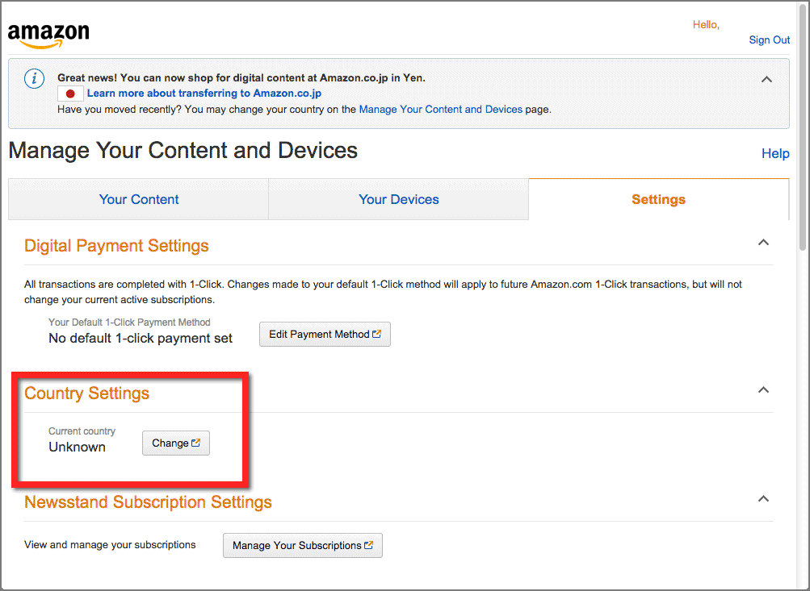

| Kindleで人生2度目の読書三昧: 知的エリートが実践する本の読み方 一流プロフェッショナルの読書シリーズ (電子書籍の窓ブックス) | |
| 大山賢太郎 | |
| 電子書籍の窓 (2015) | |
これはテストです。
はじめに
スタンフォード大学やハーバード大学など名だたる有名大学の出身者をはじめ、企業の競争力や最先端の技術革新の中核を担う世界のトップエリートたちには共通する本の読み方があります。
彼らに共通して実践する本を読む技術とは何でしょう？
この問いに答える前に、私たちが本を読むときに多くの場合に日頃から無意識に感じている問題点があります。その謎をひも解くところから始めていきましょう。
今、そこにあるあなたの読書の問題点
最先端のIT技術者やプロフェッショナルたちは、大量の知識を取捨選択して処理アウトプットします。必要な知識にアクセスして保存・処理・アウトプットする。つまり、「読む・考える・書く」という技術とこのサイクルを回すスピードが求められているのです。
速読やフォトリーディングの実用書が後を切らずにベストセラーとなっているのがこの証拠です。
しかし同時に、大量の良書を見つけながらもこれを読破し、重要な箇所や要点を手早くまとめ、それを処理してアウトプットにまとめ上げるまでのプロセスとスピードが全く追いついていません。実際に、私たちの書棚や机の上には「積ん読」となった本が高くつみあげられています。
変化や競争がスピードアップする中で、このギャップはますます広がるばかりです。
それは一体なぜでしょう？
現代の海外の知的エリートが共通して持つ本を読む技術
スタンフォード大学やハーバード大学を始め、海外の知的エリートには共通する最新のスキルを持っています。
私もアメリカの大学を卒業し、長く外資系で金融関連の企業戦士として生き馬の目を抜く競争の環境に身をおいた経験があります。
その当時、昔の大学時代には大学の教科書は電話帳のように分厚く、底が抜けるほどリュックサックに詰め込んで広いキャンパスを足早に行き来したのを鮮明に覚えています。ですから、私にはそのスキルを手に入れる機会はありませんでした。
私の息子もつい最近アメリカの大学を卒業し、現在は最先端のAIとIoTの開発チームの一員として研究開発に携わっています。彼の時代には、電子教科書ですべての教科書をタブレットや小さなノートパソコンに入れ、いつでもどこでも勉強していました。
高価で分厚い教科書を購入するのではなく、勉強する学期の期間中だけ借りて勉強し、ハイライトやメモの記録を使って宿題や論文のアウトプットに使うのです。もちろん、最近のスキャンダルニュースを取り上げるまでもなく、研究論文にテキストのコピーを使うのは致命傷となり自殺行為です。
しかし同時に、海外の知的エリートたちは、日々発表される最新の開発の関連した研究論文や書籍を大量に猛スピードで読破し、同時に研究仲間たちと共有して最先端の開発で新しい価値を生み出し続けています。
なによりも彼らは、社会に出た時にすでにこの技術を身に付けています。
つまり、大量の知識の宝庫に簡単にアクセスし、取捨選択して処理アウトプットするまでを全てデジタルで完結しているのです。
なぜ、プロフェッショナルに求められる読書とアウトプットのギャップはますます広がっているのか
さてここで、もう一度さきほどの質問です。なぜ、変化や競争がスピードアップする中で読書とアウトプットのギャップは広がっているのでしょう？
私は、それは次の2つの理由によると思っています。
1、私たちが育ってきた環境と教育から身についた習慣
誰でもが幼いころ親から読んでもらった絵本の記憶があります。また、小学校から大学までの学校教育では、全ての本は紙が当然でした。ここから「紙の本でなければ本ではない」という感覚が生まれます。
これを証明するように、私が主催する「電子書籍の窓」ブログの紙の本と電子書籍の比較記事には、紙の本を擁護しデジタル化した本に対する批判的な意見が少なからず寄せられています。
2、電子書籍としての本を読む技術がない
実際のところ、新聞、雑誌、書籍の全ての出版物は急速に減少しています。しかし同時に、Web上の記事やニュース、電子書籍がそれを上回りスピードで増えています。この間、出版不況が叫ばれて久しいのですが、実際にはWebや電子書籍を含んだ読書の量は増え続けています。
この一方で、電子書籍としての本を読む技術が確立されていないのが現状です。実際に、私自身も電子書籍を読み始めた時に入門書のたぐいを探しましたが、全く見つかりませんでした。
なぜ、一流のプロフェッショナルのための読書術を公開しようと思ったのか
日本ではキンドルストアが2012年秋に開始され、その後、Kindleリーダー端末も続々と新機種が投入されています。しかし、本書が特にフォーカスした知的エリートが実践する本を読む技術について詳細な解説書はこれまでありませんでした。
私自身、Amazonの米国本社設立直後から洋書を取り寄せ数知れない洋書を読破してきました。その後、Kindleストアの開始直後から電子書籍を読みはじめ、電子書籍リーダーを何台も使い倒してきています。
その私が、一年間という短い期間で10冊以上の論文と本を書き上げる必要に迫られていたのです。しかも執筆に割ける時間はとても限られていました。
そこで一念奮起して、海外の文献や洋書をかき集めては読み、実際に試してはまた読みと、何度も何度も試行錯誤をしていきました。
そしてある時、ぱっと大きく広がる水平線が目の前に開くような衝撃に襲われました。
電子書籍ならではの本の読み方が見えてきたのです。この方法を使うことにより、私の本を読む速度やアウトプットのスピードは飛躍的なレベルまで進化しました。ノルマの本と論文を期限を大きく裏切る速さでやり終えてしまったのです。
私はそれを他の人にも知ってほしいと思いました。多忙の毎日の中、ブログなどでそれを断片的に記事にすることはありましたが、ついぞまとめる機会はありませんでした。
その後、私の周りの同僚たちにその成果を何度も聞かれるようになり、それを説明して彼らが大きな効果を得るのを実感するまでになってきました。そしてある時、私の息子から公開するべきだと後押しされたのです。
そこで一から書き起こしたのが本書です。
この電子書籍の目的
本書を読むことで、以下のメリットを手に入れることができます。
- Kindleと電子書籍がプロフェッショナルな読書にもたらす世界を理解する
- プロが使う読書専用のツールとしての電子書籍リーダーを自由自在に使いこなす
- 脳を活性化させ知識の機能を隅々まで使いこなす
- 蓄積した知識をすぐに開いて必要な箇所を引き出す
- いつでもどこでも大好きで読みたい本にアクセスできる
- 知識の宝庫を継続的に成長させる
- 自分専用の一生涯の図書館をつくり出す
また、これらをご自分のスキルとして実践できれば、つぎのような効果が大いに期待できます。
- 日々の読書から得た知識のデータベースでライバルに競争優位で差がつく
- これまでの紙の本と読書の盲点を克服しハイブリッドな読書が可能になる
- 自分の脳の知識空間と考えるスピードを加速するための知識へのアクセスが可能になる
本書は、刊行時点で詳細な調査で最新の情報を満載しました。しかし、その後もKindleと電子書籍の世界は日々進化しています。
そこで、この書籍を補足する情報として「Kindleストアの歩き方: マンガも本も無料・割引で読書三昧」を本書を手にしていただいた方に無料特典として付属させています。これだけでも、1冊のプロフェッショナルにふさわしい本の読み方の本格的なガイドブックになる内容です。
是非、そちらもご覧ください。
海外にお住いの方々へのメッセージ
当初、この電子書籍は日本に住む方を対象に書かれました。2015年1月に正式に出版となったのですが、その直後から海外に住む日本語の本をこよなく愛する方々から連絡が次々と入りました。海外でも日本のキンドル本を読む方法を解説してほしいという要望が数多く寄せられたのです。何故ならば、海外から日本アマゾンのキンドルストアでキンドル本を購入することはできないからです。
私も約10年の海外滞在経験と、数えきれないほどの海外出張や海外旅行の経験があります。そのような時に、どれほど日本の本が恋しかったか・・・。海外出張に肩に食い込むほどの重さの荷物の中に無理やり紙の本をつめ込んだり、日本の食料品店で日本の2倍近くする値段の紙の本を物色してきた人間です。「これは何とかならないのか？」そう思ってきた記憶がまざまざとよみがえりました。
そこでこの問題の解決方法について、もう一度向きなおしてその裏側を調べてきました。そこでは、当初の執筆時点では気が付かなかった驚くような事実がわかってきました。
2012年に日本でキンドルが始まった時、アマゾンキンドルのフォーラムでは、日本語のキンドル本が海外から購入できないという議論が湧き上がっていました。しかし今、結論から言えば、「3Gやブロードバンドのインターネット回線につながっていれば、全世界で日本語のキンドル本を購入することができます。」（特殊な状況を除く）
これは、日本の著者や出版社も、ましてや、ほとんどの海外在住の日本人が知らないことです。一体どうやって海外にいながら日本語のキンドル本を購入するのか、詳しくは「第13章 Amazon.com、その他海外のアマゾンサイトとAmazon.co.jpのアカウントを使いこなす 海外から日本語のキンドル本を購入する」をお読み下さい。
本書籍の構成
この本はキンドルを最大限に活用して快適な読書ライフを楽しんでいただくために17の章を以下の4つのパートに分けて解説しています。
- パート1 基礎編:キンドル端末をすぐに使いはじめる
- パート2 中級編:キンドルのコンテンツを最大限に引き出す
- パート3 上級編:キンドルの機能を最大限に引き出す
- パート4 追加編:さらにキンドルを楽しむ方法
各パートと章は、それぞれ独立してお読みいただけるように書かれています。従って、ご自分のキンドル体験の度合いや興味、すぐに必要な箇所を目次で見つけてそこから読み始めることができます。もし基本的なことは既に知っているのであれば、中級編から始めていただいて結構です。
例えばキンドル無料アプリをお探しであれば、「第5章 キンドル本内で快適に移動する 複数の端末上でキンドルを楽しむ 1. キンドル無料アプリで楽しむ」 から始めていただいて結構です。あるいは、格安のキンドル本を手早く手に入れて読書を始めたいという目的であれば、第7章の「優れた無料や割引価格の電子書籍を探す方法」 から始めて下さい。
この本を読み進むにあたって、注意していただきたい点がいくつかあります。この本の最終的な目的は、アマゾンの電子書籍サービスであるキンドルとキンドル端末の機能を最大限に活用して全く新しい読書体験を楽しんでいただくことです。このため、説明とアクションが同時進行で進めるように、いくつもの工夫がこらしてあります。読者の経験により、どの章からも読み始めていただけるように説明が重複する部分があります。
また、文字の表現方法により、次のような意味を持たせてあります。
- 太字
タッチスクリーンの画面に触るアクションを表します。数字が太字になっている場合、順序に従ってアクションを起こすと目的のタスクが完了します。同様に、スクリーンキーボードに入力するアクションも太字としています。 - 薄字とアンダーライン
アンダーラインが引かれた薄地の文字はリンクを表します。これを指で触れる（タップする）と他の章の特定のページや外部のウェブサイトのページが開きます。各章やセクションのタイトルが薄地でアンダーラインが引かれている場合には、その章またはセクションの該当ページが開きます。 - ダブルクォーテーション（""）
本文中で定義する用語や言葉はダブルクォーテーションで囲みました。また、この後を読み進むにあたって最低限必要な基本用語はこのセクションで説明します。既にご存知の場合は読み飛ばしていただいて結構です。
この本が書かれている前提
この本は2013年10月に日本でリリースされたKindle Paperwhite（ニューモデル）に加えて、2014年9月にリリースされたKindle、そして2014年11月にリリースされたKindle Voyageを対象に書かれています。この3つのモデルは基本的には同じオペレーティングシステムを使う電子書籍リーダーですが、機種によっては本体や機能が微妙に違います。一口で言うと、Kindle Paperwhiteを中心として、Kindleがその下位バージョン、Kindle Voyageが上位バージョンという位置づけです。
2012年に日本で初めてリリースされた最初のKindle Paperwhite（旧モデル）よりも性能やいくつかの機能がグレートアップされています。また、ここで説明する機能やサービスに関しては、ファームウェア(2)のアップデートや新規サービスのリリースのため一部に違いがあるかもしれません。また、アマゾンのサービスは日々進化しています。ここでの説明に使ったキンドル端末やサイトの構成や画像が変更になる場合もあります。
本書はWindows又はMacのパソコンと同梱されたUSBケーブルで接続して使えるスキルがあることも前提としています。加えて、自宅又は公共のWifi(無線LAN)ネットワークに接続できるか、できない場合にはキンドル端末の3Gモデルをお使いいただくことも前提としています。接続方法と環境については、第2章「キンドルの設定方法」 で詳しく解説しています。
キンドル端末をお使いになるためにコンピュータ技術のエキスパートである必要はありません。ただし、パソコンの基本的な操作方法を理解する程度の知識は必要となります。これには、ブラウザでネットサーフィンやネット検索、文書のコピー＆ペーストして特定のフォルダに保存することなどを含みます。
さらに、アマゾンのアカウントをお持ちで、アマゾンのキンドルストアから電子書籍を購入するための設定がお済みであることも前提としています。もし以上を完全に理解していなくてもご心配はいりません。この本の解説を参考にしながら、パソコンやネットに詳しいご家族や友人の方に尋ねて助けていただければほとんどの疑問は解決できると思います。
簡単なエクササイズ
キンドルの読書は非常に魅力的な世界です。この本は電子書籍ならではの使い方や楽しみ方が満載です。しかし、紙の本とは全く違った操作方法など、戸惑うことも少なくありません。そこで、キンドルの世界を存分に楽しんでいただくために、簡単なエクササイズをご用意しました。
電子書籍を読んでいて一番困るのが「どこにいるか分からなくなる」「元いた場所に戻れない」です。ここでは、いつでもどこでも、直前にいた場所に戻る方法をご紹介します。まず最初に、これを試して下さい。（注意：戻るボタンはキンドル無料アプリにはありません。）
エクササイズ：
- 以下のリンクをタップ（指で触る）して、この本の最後の章「第17章 キンドルのさらに楽しい使い方」に移動して下さい。
- 現在いる本の最初から本の最後まで一瞬にして移動できます。この章では、キンドルの更に楽しい使い方の10のアイデアをご紹介しています。
- 次に、画面上3センチほどのエリアをタップして以下のツールバーを表示します。この中にある「戻る」ボタンをタップします。すると、次の瞬間に現在いるページに戻ることができます。
- それでは、今すぐ以下のリンクをタップして試して下さい。すぐに戻られるのをお待ちしています。
図0-1 Kindle端末の「戻る」ボタン
キンドル無料アプリでは戻るボタンを利用できません。その代わりに「移動」で簡単に戻れます。画面上の数センチのエリアをタップし、現れたバーの左にあるメニューアイコンを選択します。
次に、表示されたメニューの「移動」を選択し、本文左下に表示された元いた場所の「位置No.」を指定します。もし表示されていない場合は、画面左から2センチほどのエリアをタップして下さい。
飛び先はサンプル本では範囲外となります。ご購入後のフルバージョンでお試し下さい。
お帰りなさい。いかがでしたでしょうか？一瞬にして本の中を移動できることが実感できたかと思います。もし操作方法に迷ったり、元に戻りたいときなど、この「戻る」ボタンをお試し下さい。
この書籍で使われているアイコン
本文の適切な箇所にヒントとなる使い方や考え方を追加します。更に楽しい使い方やアイデアが満載です。
機能やサービスをお使いいただくにあたって注意するべき点を本文中に追加しました。あらかじめ心の準備をするべき点や経験から注意しておくべき点を網羅しました。
キンドルは簡単には壊れませんが、取り扱いを間違うと致命的な状態に陥ることがあります。間違った操作で電子書籍を永久に削除したりするかもしれません。
説明の中で技術的、専門的な解説を加えることがあります。必ずしもキンドルや電子書籍を通常に利用するために必要不可欠というわけではありませんが、一部の関心の高い方向けに追加しました。
無料特典本: Kindleストアの歩き方:
マンガも本も無料・割引で読書三昧
今、無料・割引き・読み放題で手に入る本が急増していることをご存知ですか？
あなたが手にしている本も、実は5割引きや読み放題サービスで読めていたかもしれないのです。
日々、無料や割引価格のキャンペーンが開催されるKindleストアは、まるでアマゾンのジャングルのようです。この1冊でKindleストアの謎をピンポイントで解く鍵を提供します。
Kindleファン（隠れKindleファン）必読の1冊です。早速以下のリンクをクリックしダウンロードしてお読みください。
無料特典本: Kindleストアの歩き方:
マンガも本も無料・割引で読書三昧
コラム1：キンドルとは？（快適キンドルライフ）
キンドルの素晴らしい世界にようこそ！キンドルは簡単かつ即時に電子書籍を手に入れて読書ライフを快適に楽しむためのサービスです。すぐに始めていただくこともできるのですが、この後のお話を最大限に理解して進んでいただくために、まず最初にキンドルの背景や基本的な知識について解説したいと思います。
キンドルとは、米国アマゾンが世界13カ国以上（日本、アメリカ合衆国、カナダ、イギリス、ドイツ、フランス、スペイン、イタリア、オランダ、インド、ブラジル、メキシコ、オーストラリア等）で展開する電子書籍を販売配信するビジネスです。もちろん、全世界からアクセスして購入することができます。
この電子書籍を読むには、専用端末の電子書籍リーダーであるキンドルやタブレット端末のキンドルHD/キンドルHDファイアーはもちろん、iPhone/iPadやAndroid端末やスマホ用に無料で提供されている電子書籍リーダーアプリから読むことができます。
電子書籍自体は、パソコンが普及し始めた1980年代中頃には既に始まっていました。文章を電子的に保存してフロッピーディスクなどのメディアで配信することが可能になっていたからです。しかし、著作権や出版ビジネスの制約からなかなか一般的な普及には至りませんでした。この間、アップルのiPodによる音楽のネット配信の成功により、一般ユーザーがデジタルコンテンツをネット上で購入する習慣やインフラが普及してきました。
アマゾンが初めてキンドルを発表したのは2007年11月です。もともとアマゾンは紙の書籍をネット販売するオンラインビジネスから始まっています。この時に、最初のキンドル専用の電子書籍リーダー端末がリリースされました。当初は重くて性能も限定されたデバイスでしたが、その後、現在では第6世代までアップグレードを重ねて進化してきました。
2012年秋には、海外展開として初めてのイギリス、ドイツ、日本での事業開始に向けて最新技術を反映したKindle Paperwhiteがラインアップにリリースされました。その後、2013年秋にはKindle Paperwhite (ニューモデル)が、2014年秋には廉価バージョンのKindleと上位バージョンのKindle Voyageが投入されるなど、急速展開が進んでいます。また、2011年にはLCDタブレット端末にリーダーアプリがインストールされたKindle Fireがリリースされ、現在では第3世代までアップグレードを重ねています。
アマゾンはキンドルの販売台数を公表していませんが、現在、世界中の電子書籍リーダーの2台に1台はキンドル用の端末と推定されています。キンドル本の数も、Wikipediaによれば、米国Amazonでのキンドルの開始当初はわずか9万冊でしたが、そのあと徐々に勢いを増し、その後の3年間で240万タイトルまで急増しました。日本アマゾンでは、2012年10月の開始時点で5万冊程度だったものが、2014年の春には20万冊を超えるタイトル数にまで増えています。
アマゾンのキンドルは、キンドル本と呼ばれる電子書籍を購入するためのキンドルストア、購入したキンドル本やアカウントの設定を管理する「コンテンツと端末の管理」、そして購入したキンドル本を読むためのキンドル端末、パソコンやiPhone、iPad、Androidで読むためのキンドル無料アプリ等から構成されています。
パソコンや電子書籍にあまり詳しくない方のために、次に基礎用語集を追加しました。既に慣れた方でも、基本用語を正しく理解しておくことは大切です。もし既にご存知の場合は、読み飛ばしていただいても問題ありません。基本用語を読み飛ばす
基本用語について
パソコンやインターネットブラウザを使うのと同じように、キンドル端末にも専門用語や独特の表現があります。また、キンドル独自でなくても関連する技術用語も知らないと困ることがあります。もしまだ不慣れだとお感じでしたら、一番基本的な用語をまずおさえてからこの後の解説にお進み下さい。
また、本文中にこれ以外に分からない言葉が出てきたらその言葉を長押しして下さい。ポップアップが表示され、キンドル端末にインストールされた「辞書」とオンライン辞書である「Wikipedia」で意味を表示できます。ここでは""を省略しています。（Wikipediaを使うには3GまたはWifi接続が必要です。）
電源ボタン
キンドル端末下の側面にあるボタンのこと。電源が完全に切れたシャットアウトされた状態からは長めに押すことで端末が起動する。端末を起動した状態で電源ボタンを短く押すとスリープモードになる。端末の状態が不安定になったり反応が遅くなった場合は、電源ボタンを長押しし、電源ダイアログボックスで再起動を選択して再起動が必要となることもある。ツールバー
パソコンのメニューバーに相当する、画面の上部に表示されるアイコンが並んだ部分です。画面の上から3cm位の部分をタップ（指で軽く触る）と表示されます。スリープモード
電池の消費量を節約するために予め決まった画像を表示する状態のこと。端末を10分間操作しないと自動的にスリープモードに切り替わる。電源ボタンを短く押すことで解除してオンモードを再開できる。オンモード
電源が入り、あるいはスリープモードを解除して端末を操作できる状態のこと。タップ（する）
画面を指で軽くタッチする（触れる）こと。パソコンで言うクリックとほぼ同じ。スワイプ（する）
画面を指でタッチしたまま移動すること。長押し（する）
画面に数秒間タップしたままの状態又はそれを継続すること。あるいは電源ボタンを押したままにすること。ピンチイン
画面を2本の指でタッチしたままその指を近づけること。画面を触ったままつまむような動作。ピンチアウト
画面を2本の指でタッチしたままその指を遠ざけること。画面を触ったまま開くような動作。ブックマーク
書籍の「しおり」と似た機能のことで、電子書籍に目印を付けておいて後から簡単に戻れるようにする。ハイライト
書籍にマーカーで文の一部に印をつけたり、アンダーラインを引くのと同じような機能。移動（する）
電子書籍の特定の場所をタップして開くこと。移動のための画面には、目次とメモまたはハイライトのリスト画面が用意されていて、タップして目的の場所に一瞬で移動できる。X-Ray
この機能を利用できる電子書籍では、単語、フレーズ、トピックなどが繰り返し使われている回数を表示したり場所をグラフ表示する。ブロードバンド
高速かつ大容量の通信回線を指す。通常は500kbps以上の速度の回線で、ケーブルネットワークで数Mbps程度、電話回線を利用したADSLで0.5Mbpsから50Mbps程度の通信速度でインターネットに接続できる。これに対して光回線では数百Mbpsの超高速での接続が可能となっている。Wifi
無線LANの規格の一つで、数十メートルから数百メートル程度の電波の届く範囲内で接続してブロードバンドの高速インターネット通信を可能にする。当初はパソコン用に開発されたが、近年ではタブレット端末、スマートフォン、ゲーム機、電子書籍リーダーなどでも広く使われるようになった。電波による通信の特性上、暗号化でセキュリティ対策される場合が多い。この場合、SSIDと呼ばれるサービスIDとパスワードなどの設定が必要となる。3G
3Gとは第3世代という意味で、2000年ころから普及したモバイル通信規格のこと。ブロードバンド回線の一つ。現在の日本の携帯電話では100％に近い人口カバー率となっている。数Mbps〜10Mbps程度の通信速度で動画やファイルダウンロードがより快適になった。より新しい規格に4Gがあるが、これは第4世代で最新の次世代通信規格のこと。約100Mbps前後の通信速度を可能になり、現在普及が進んでいる。スマホで動画やアプリを快適に楽しむために必要な帯域を提供している。「テザリング」と呼ばれる機能を使えば、スマホを使って外出先でWifiを利用することができる。USB（ポート）
パソコンと周辺機器を接続するための最も一般的な規格。ポートとはそのケーブルをつなぐための差込口。電源を供給できるため充電用のコードと兼用されることが多い。キンドルやパソコンからUSB接続された周辺機器を取り外す場合は、パソコン側の取り外し作業が必要となる。また、パソコンに繋いで充電しながらキンドルを操作するには、この取り外し作業が必要。機内モード
スマホでもよく使われる機能で、携帯やWifiの電波が飛行機や医療用の電子機器などに影響を及ぼすことを避けるためにWifiと3G回線をOFFにした状態。ブラウザ
コンピュータ又はネット上の情報を表示するソフトウエアのこと。キンドル端末では、現在のところ体験版を利用することができる。電子書籍内のリンクをタップして外部のサイトを開くときに使う。画面の表示が見づらい場合は、ツールバーの設定メニューから「記事モード」を選択すると読みやすい文字とレイアウトで表示してくれる。キンドルストアもブラウザで表示される。詳しくは第6章の「ウェブブラウザ（体験版）を利用する」 を参照。ホーム（ページ）
本来はブラウザを起動した時またはホームボタンを押した時に表示される画面のこと。通常はウェブサイトの最上位階層にあたるウェブページを指す。キンドルでは、家のアイコンでホームを表し、タップすると「アイテム一覧ページ」で電子書籍のリストが表示される。ソーシャル・ネットワーク
Facebook(3)、Twitter(4)、Mixiなどに代表される不特定多数の個人がインターネットのサービスを通じて繋がり意見や情報を交換すること。ソーシャルメディアとも呼ばれる。シェア（する）
英語の意味は「共有」すること。ソーシャル・ネットワークなどで自分の情報や自分が見つけた情報を公開して他のメンバーや不特定多数の個人が知ることができるようにすること。リンク
インターネット上ではハイパーリンクとも呼ばれる。URL(Uniform Resource Locator)とも呼ばれ、アンダーラインや青などリンク用に特定された色で表示されたフレーズやURL(http//:www.mydomain.com/などと表示された箇所)をクリックすると参照されたウェブページを開くことができる。キンドルでも同様に表示された箇所をタップすると、参照されたインターネット上のウェブページをブラウザで開いたり電子書籍内の箇所に移動することができる。チュートリアル
自習（セルフスタディ）用の教材のこと。オンライン上のeラーニングと呼ばれるシステムで提供されることが多い。会員サイト内でカリキュラムやシリーズを進めていくと終了するような形式もある。それ以外の場合は、ビデオやインタラクティブ（双方向）なやりとりで学習効果を高めるように考えられたもの。デフォルト
端末機器やアプリケーションソフトなどで、出荷時やインストール時に既定で設定されている状態を指す。キンドル端末の場合、開封直後や端末のリセット後に言語やWifiの設定が終わったときに予め設定されている状態のこと。
以上は、キンドルを初めて使い始めた方が疑問に思うと考えられる用語を簡単に解説したものです。用語や説明文中にリンクが貼ってある場合には、より詳しいページを開くことができます。
この後からの展開について
この本は、キンドルとキンドル端末を使って全く新しい読書体験を得るために必要な基礎から上級までの実践的なテクニックやヒントを明快に解説しています。17章から構成されていますが、順序どおりにお読みいただく必要はありません。どの章からも始めていただいて結構です。ですから、問題解決に必要な、興味のあるところから読み始めて下さい。
キンドルのサービスとキンドル端末は、読書に全く新しい快適で楽しい世界を与えてくれます。キンドル端末は、ほとんどの場面では簡単で扱いやすい電子書籍を読むためのリーダー端末です。著者自身もアメリカで発売当初から何世代にもわたって長年使っていますが、今でも新しい発見があります。
この本ではキンドル端末の最新機能やサービスも含めて解説していきます。様々な機能がたくさんあり、最初はとまどったり迷ったりすることもあるかもしれません。画面リンクやボタンをタップすると全く新しい画面が表示され、迷子のように感じるかもしれません。しかし心配しないで下さい。便利な戻るボタンで、いつでも元の場所に戻ることができます。ドンドンと機能やサービスを試してください。
もしもっと深いレベルの楽しみ方をお探しでしたら、是非、私どものサイト「電子書籍の窓」 を訪れて下さい。読書を愛する本の虫が集まるコミュニティと読書体験のヒントが満載です。巻末には様々な関連情報も掲載しました。
それでは、さっそくご一緒にキンドル探検の世界に旅立ちましょう！
パート1 基礎編:キンドル端末をすぐに使いはじめる
ここでは、キンドルを初めて手にした方がすぐに使い始められるように、キンドル端末の基本をやさしく解説します。スマホやタブレット端末の無料アプリでこれまでキンドル本を読んだ経験があっても、実際に専用端末のキンドルを手にすると迷うことがたくさんあります。
「既に手にしながら持て余していた」、「よく分からないから、なんとなく使ってきた」あるいは、「この際しっかりと使いこなしたい」そんな方に是非ともお読みいただきたい内容です。
第1章 自分に合ったキンドル端末を選ぶ
この章で解説する内容
・キンドル端末のラインアップ
・3GとWifiどのキンドル端末を選ぶべきか
・キンドルの簡単な歴史と経緯
・電子書籍リーダーとしてのキンドルの可能性
キンドル端末を選ぶ
アマゾンが2012年にキンドルを日本で開始するにあたって投入した電子書籍リーダーがKindle Paperwhite（以下、キンドル端末といいます）です。2013年にニューモデルがリリースされ、これに廉価版のKindleが2014年9月に追加されました。さらに同年11月には上位版のKindle Voyageがリリースされました。
すべての機種の基本ソフト（ファームウェア）は一部の機能を除いて全く同じです。この本では、Kindle Paperwhiteを中心として解説し、そこからそれぞれの機種との違いを簡単に触れていきます。端末の詳しい製品説明と比較についてはアマゾンの製品ページをご覧ください。
なぜ今、キンドル端末なのか？
これら3機種からなるキンドル端末は、アマゾンのキンドルストアで購入したキンドル本や文書や画像ファイルのドキュメントを読むための電子書籍リーダー端末です。わずか206グラムという軽い本体に6インチの電子ペーパーディスプレイ技術を採用して、紙の本の質感に非常に近い目にやさしい画面で長時間の読書が可能になりました。
4Gの記憶容量（使用可能領域は3.1G）に、約4,000冊の電子書籍（コミックではない一般的な電子書籍）をダウンロードして持ち歩くことができます。（Kindleは重量191グラム、Kindle Voyageは180グラムです。）
キンドル端末のコンパクトな本体（Kindle Paperwhiteの場合、縦169mm 横117mm 厚さ9.1mm）は無線でパソコンにつなぐこと無く電子書籍を購入しダウンロードして楽しむことができます。
一日30分程度の読書のペースであれば、最大数週間のバッテリーライフの長持ち設計です。これは、パソコンやタブレット、スマホの稼働時間と比較しても非常に長いバッテリーライフだと言えます。
e-inkのスクリーンで鮮明な画面
長時間画面を見続ける必要がある読書では、読みやすいスクリーンが非常に重要です。本物のインクを使用したe-inkの技術で紙とおなじ感覚の質感を出しています。
これに様々なキンドル端末独自の機能が加わり、タブレットやパソコンのモニターに採用されているLCDで鏡のように光を反射する画面とは全く違った、本を読むために最適な環境を作り出しました。
タッチスクリーン技術
Kindle Paperwhiteには、操作ボタンとしては電源用のボタン一つしかありません。それ以外の全ての操作は、指でスクリーンをタッチして行います。米国アマゾンで発売されていた直前のバージョンであるKindle Touchがバージョンアップされ、そのアップグレード版が日本で初めてリリースされたのが現在のキンドルリーダー端末です。
最新の静電容量性のタッチスクリーンを採用しているため、軽いタッチ（タップ）でもすぐに反応して画面を切り替えます。キンドル端末は、基本的にはすべての操作は画面をタップして行います。この操作は手袋なしの指でする必要があります。手袋をする場合は、タッチスクリーン対応の手袋をしてください。
タッチスクリーン技術が採用される以前は、米国アマゾンで販売されていたキンドル用のリーダー端末はボタン操作で画面をめくりました。しかし、アマゾンのサイトに寄せられたコメントやユーザーの要望に応えてボタン操作が復活しました。Kindle Papterwhiteの上位版として登場したKindle Voyageでは、PagePressと呼ばれる機能が採用されました。スクリーンの左右に配置されたエリアを軽く押すと、画面内をタップしなくてもページをめくることができます。
例えば、お風呂で読書を楽しみたいというニーズがあります。紙の本ではなかなか難しいのですが、キンドル端末をジップロックのような密封袋に入れれば、水にぬれないのですがタップ操作が反応しません。
この場合には、Kindle Voyageであれば密封袋の上からPagePressを使ってページをめくることができます。PagePressのないKindleやKindle Paperwhiteでは指のタッチで反応しない場合があるようです。（Kindle Voyage以外でもタッチ反応する専用の防水ケースもあります。詳しくは、第15章の「アクセサリで自分のキンドルを作る 防水ケース」 をご覧ください。）
ご注意いただきたいのは、タッチスクリーンは軽いタッチでも反応しますので、間違って画面やPagePressに触ると思わぬ反応をする場合があるという点です。また、重いものを画面に乗せたり尖った刃物などで画面を傷つけることがないようにお気をつけ下さい。
鞄の中に入れたり持ち運ぶことが多い場合は、カバーや保護フィルムをお使いになることをおすすめします。（アクセサリに関する詳しい解説は「第15章 アクセサリで自分のキンドルを作る」 をお読みください。）
内蔵のライトで快適なリーディング
Kindle PaperwhiteとKindle Voyageでは、内蔵されたフロントライトで目にやさしい明るさにしてくれます。Kindle Voyageは自動的に内蔵ライトの明るさを調整してくれます。Kindleには内蔵ライトはありません。
これは感覚とは逆になるのですが、明かりを消したベッドのような暗い場所では低い輝度で、太陽の下の明るい屋外では高い輝度に調節することで、非常に読みやすい画面のコントラストを表示できます。
これにより、読書に最適な画面の明るさを実現できます。特に周りが寝静まったベッドなどでは、眠りに入る前に読書をする方には非常に好評な機能です。また、明るく晴れた屋外で読書をするときには、画面を明るくすることで背景と文字のコントラストをより鮮明に映し出すことができます。
例えば、山の別荘のウッドデッキで、あるいは海岸を見下ろすテラスでゆったりとした気持ちでメールやネットの雑音から離れて読書に専念できます。
KindleVoyageには内蔵ライトの自動調整機能がありますが、Kindle Paperwhiteにはついていません。これは簡単な操作でできます。メニューの中にあるライトアイコンで行います。メニューとライトアイコンについては、「第3章 基本的な使い方/ナビゲーション アイコンでのナビゲーション」 をお読み下さい。
図1-1では、Kindle端末のスクリーンと内蔵ライトの構成を示しています。
図1-1 Kindle端末のスクリーンと内蔵ライト
キンドル端末の画面は、e-inkと呼ばれるインクを実際に使って紙の質感をうまく実現しています。これは、タップやスリープモードに切り替わった時に、無数のインクカプセルが2枚のスクリーンのレイアーに挟まれて12段階の色調に切り替わります。これにより、使用電力を節約し長時間のバッテリーライフを可能にしています。
多くの方がペーパーホワイトと言うにはスクリーンが少し黄色み掛かっているという感想を述べています。これは、最近のパソコンやタブレットの白に慣れているせいか、少し違和感を感じるためのようです。ペーパーホワイトと呼んでいるのは、アメリカのペーパーバックスと呼ばれるような本の紙の色に近いという意味のようです。
日本で言えば文庫本の紙の色といったところでしょうか。電子書籍という実態のないものをできるだけ実物の紙の本に近づけようという考え方からの表現と言えるのかもしれません。
Wifi版にするか3G版にするか
Kindle PaperwhiteとKindle Voyageには、WifiだけのバージョンとWifiに3G機能が追加されたバージョンの2種類があります。3Gとは2000年ころから普及したモバイル通信規格のことで、現在日本の人口カバー率では99%を超えています。このどちらを選択するかは、次の点にご注意してお決め下さい。
インターネットにWifiで繋ぐ環境がある：
まず最初に、現在ご自宅にWifi環境がなくWifiなどインターネット接続について苦手でご自分で設定することに自信がない、つなぐつもりがない場合は3G版をおすすめします。
携帯電話がつながる地域からであれば、3G回線を使ってキンドルストアをブラウザで表示してキンドル本を購入しダウンロードできます。しかも、ブラウザの利用と購入ダウンロードに必要な通信料を支払う必要はありません。
外出中もネットにつないで使いたい：
自宅やWifiホットスポットなど外出先でWifiにアクセスできる環境が整っている場合でも、3Gのオプションを選択したい場合があります。Wifiは数十メートルから数百メートル程度の範囲に限定されているからです。
電子書籍を読みながら辞書機能のWikipediaやソーシャル・ネットワークでシェアしたい場合、あるいはキンドルストアにいつでも接続してキンドル本を購入したりKindleライブラリからダウンロードしたい場合には、常にインターネットに接続されていると便利です。
アマゾンが提供する3G通信の弱点：
3Gオプションの弱点は、接続速度とコミックや一部の大容量書籍のダウンロードが出来ないことです。また、日本アマゾンのアカウントでは、ご自分のドキュメントをキンドルライブラリに送信できません。Amazon.comのアカウントでは可能ですが、3G回線を使った送信時には追加コストが発生します。（詳しくは「第10章 電子書籍とパーソナル・ドキュメントの蔵書を快適に管理する方法 キンドル端末でご自分の文書を読む方法」 をお読み下さい。）
電子書籍の購入やブラウザの利用が自宅やWifi環境が整っている場所に限定されることが予想されるのであれば、3G機能は特に必要と感じないかもしれません。しかし、いつでもどこでも自分がその時に読みたいと思った本を無料や格安のKindle本(5)をでダウンロードしてすぐに読み始めることができる、あるいはWikipediaで検索したり、ソーシャルネットワークで読書体験をシェアする快適な読書環境は、一度手に入れると手放せなくなるのも事実です。この辺はご自分の好みで選択して下さい。
キンドル端末の全ての電子書籍を追加コストを心配すること無く快適に使うには、Wifiの設定を最初からしておくことをおすすめします。またWifiのみのキンドル端末では、Wifiの設定が終わらないと初期設定と登録の手続きを完了できません。
スクリーンセーバーにキャンペーン情報が載ること
2014年にキンドル端末にKindleとKindle Voyageという2つの機種が新たに加わりました。これと同時に、キャンペーン情報がスクリーンセーバーに掲載されるバージョンが全ての機種に追加されました。広告が掲載される代わりに数千円ですが低価格で販売されています。
キャンペーン情報といっても、スクリーンセーバーが表示されている時にだけ表示され、実際にキンドル本を読んでいる時には表示されません。お得情報や購読履歴からのおすすめ情報などが中心ですので、意外と便利です。節約と考えて「広告あり」という選択肢もあります。
ブロードバンド回線の接続方法や設定については、「第2章 キンドルの設定方法 Wifiを設定する」 をご覧ください。
コラム2：アマゾンキンドルの誕生秘話
アップルのデジタル音楽コンテンツが急速に成功する中、アマゾンのCEOであるジェフ・ベゾスは数人の社内チームに電子書籍の立ち上げを託しました。2004年10月、PDAのベンチャー企業のPalmOneのエンジニアであったGregg Zehrが「簡単に使えでアマゾンのサービスに高度に統合化されたアマゾンユーザーのためのデバイス」を開発するために電子書籍プロジェクトが開始されました。
このチームは、Lab126と名付けられカリフォルニア州シリコンバレーの一角で始まりました。Labとは開発室のことです。126は、アマゾンのロゴの下の部分にある矢の印（スマイルの口の部分ではなかったのですね･･･）がAmazonのAからZを指していることから由来しています。どういう事かというと、Aはアルファベットの1番目とZはアルファベットの26番目であることから、これを繋いでLab126にしたのです。この時点ではプロジェクトがその後成功するかどうか、誰も知る由もありませんでした。
その後子会社に昇格したLab126の開発者たちは、プロジェクト開始から3年間、昼夜を問わず開発を続けました。この電子書籍リーダーとサービスは、その後コンサルタントのアドバイスを受け入れて「Kindle」と名付けられました。kindleとは英語で「火をつける」という意味です。その後の急速な普及を予言する適切な比喩表現だと感じたからです。
そして遂に2007年11月19日、彼らのCEOジェフ・ベゾスがニューヨークでライブ発表したプレスリリースの放送に食い入る様に見入りました。電子書籍リーダー「キンドル」とわずか90,000冊足らずのキンドル電子書籍で始まったプロダクトローンチは、リリース後からわずか5時間半でキンドル製品が完売となりました。そしてその後、5ヶ月間品切れ状態が続きました。まさに電子書籍ビジネスに火がついたのです。
その後、キンドル端末は毎年のようにアップグレードを重ねて進化してきました。また販売台数も徐々に加速し、また第1世代が399ドルと高額だったものがその後の低価格化もあって2009年までには累計200万台、2010年には累計1000万台を突破しました。電子書籍リーダー専用端末としては、ダントツの市場シェアを維持しています。
2011年9月には、Androidをベースに開発されたFire OSをベースとしたKindle Fireシリーズのタブレット端末がリリースされました。これはフルカラーのタッチ液晶ディスプレーを採用し、電子書籍だけでなくAmazon Appstoreに接続して音楽、映画、アプリを購入して利用したり、通常のタブレットとして使うことができます。低価格路線の戦略を採用したことも有り、既にタブレット端末の市場シェアの一角を占めるまでになっています。
Lab126は自らのビジョンを次のように掲げています。Lab126のウェブサイト(http://www.lab126.com/our-vision.htm)から引用
"Our Vision
To make available in less than 60 seconds every book, ever written, in any language, in print or out of print; and bring the same ease-of-use, deep integration and superior selection of content to movies, TV shows, music, magazines, apps, games, and more."
著者訳:
"我々のビジョン
これまでに書かれたあらゆる書籍を、それがどの言語であれ、出版か絶版を問わず60秒以内に手に入れることができるようにすること。そして同時に、同様の利便性と深く統合され、より優れた動画、テレビ番組、音楽、定期刊行物、アプリ、ゲーム、そしてその他のコンテンツの選択肢を提供すること。"
Lab126の最新製品は、2014年4月にリリースされたAmazon Fire TVです。これは、テレビとブロードバンドのインターネットに繋いで映画やゲームがすぐに使えるという製品です。このコンテンツ配信の戦略はLab126が益々開発に力を入れて発展していきそうです。
コラム3：飛躍的に進歩する技術とキンドルの可能性
現在のキンドルは、アメリカや日本ばかりでなくイギリス、ドイツ、フランス、ブラジル、インドなどでも展開が始まっています。最先端を行く米国アマゾンでは、電子書籍以外にも様々なサービスが追加されてきました。紙メディアの新聞雑誌やWeb上で個人が作るブログなどの定期購読に加えて、公立学校や大学の教科書としても使われ、さらに電子書籍を図書館を通じて借りることもできるようになってきました。
とは言え、電子書籍が本格的に始まったのはほんの数年前です。電子書籍リーダー端末やアプリの機能は、まだまだ紙の本の便利さを実現できていないといえます。どんなに便利になったとはいえ、紙の質感、両開きやデジタルな表示では表しきれない感覚的な部分は紙の本には遠く及びません。
しかし、他の分野で起こったように、電子書籍も私達の本を読む習慣を大きく変える可能性を秘めています。例えば音楽の分野です。音楽ではレコードがCDに取って代わり、そしてiPodとiTunesなどの配信の登場により、私達が音楽を聞く習慣を完全に塗り替えました。今では、スマートフォンの一機能となってしまいました。電子書籍の分野でも、紙の本の便利さを上回る技術的な進歩がやってくるに違いありません。
もちろん、既に紙の本をはるかに凌駕する便利な機能もたくさんあります。この電子書籍では、電子書籍を読むための電子書籍リーダーの中でも最も有力な専用端末、キンドル端末の可能性を最大限に引き出す方法についてご一緒に見て行きたいと思います。
2011年のアマゾンの調査によれば、キンドル端末を手に入れた人の読書量は4.6倍に増えたと報告 されています。また、このデバイスの購入をきっかけに読書の楽しさが戻ってきた、全く新しい読書体験が始まったなど、快適な読書ライフを楽しむ方が急増しています。まさしく、この端末は星の数ほどにも増えつつある「電子書籍の窓」といえるのでしょう。
第2章 キンドルの設定方法
この章で解説する内容
・キンドルに命を吹き込む
・キンドルの言語を選ぶ
・Wifiと接続する
・自分のキンドルに名前をつける
・キンドルを眠らせる
・エネルギーを充電する
・ソフトウエアをアップデートする
これまでに、どのキンドル端末を電子書籍の友に選ぶかが決まったことと思います。では、早速始める用意はよろしいでしょうか？この章では、アマゾンから届いた、あるいはお店で購入したキンドル端末を箱から取り出して、初めてのご対面をするところから始まります。そして、キンドルがキビキビと動いてくれるように、まず最初に必要ないくつかの設定をしていきます。
パソコンやインターネットの設定に不慣れな方には、ちょっとしたハードルかもしれません。できるだけ分かりやすく解説しますので、我慢してついてきてくださいね。既にキンドル端末の設定が終わっている方は、この章を飛ばして「第3章 基本的な使い方/ナビゲーション」 に進んでいただいても問題ありません。では、早速始めていきましょう！
キンドルに命を吹き込む
キンドル・ペーパーホワイトがご自宅に届いた時、どのように感じたでしょうか？多くの方が、「ずいぶんと地味な箱だな」とか「Macと比べたら感動も夢もない包装だ！」そんな感想を持っています。確かに紺色の小さな紙の箱です。しかも、アマゾンから購入した場合には裏側に送り状がビニールで包まれ添付されています。この辺は夢と先進性を売るアップルとネット小売業の雄となり流通の効率性を目指すアマゾンとの違いなのかもしれません。
箱を開けてみると、ビニールに包まれた洒落っ気のない端末がデンと座り、取り出してみるとそのすぐ裏側には充電用のUSBコードが置かれている。後は2つの小さなマニュアルと説明書のみ。たったそれだけです。でも、見かけに惑わされないで下さい。この小さな箱から出てくる端末には、とてつもない可能性を秘めています。急速に増えつつある膨大な電子書籍への世界がここから始まります。まさに、電子書籍の窓なのです。
そうは言っても、「この心もとない説明書だけでは心配だ･･･」そうお思いになったかもしれません。お待ち下さい。それこそがこの電子書籍が目指す目的です。キンドル端末の使い方を完全にマスターし、その可能性を最大限に発揮して快適な電子書籍ライフを楽しむことができるように、この後の解説が続きます。
では、この後進める作業です。これは次の４つのステップで進んでいきます。
- キンドルの電源を入れて使いはじめる
- キンドルの言語を選択する
- Wifiと接続してインターネットとつなげる
- ご自分のキンドル端末をアカウント登録する
では、まず最初にキンドルの下にある電源ボタンを指で短く押してから離して下さい。図2-1は、キンドル端末の底の部分を拡大表示したものです。ここに、電源スイッチとUSBポートがあります。なんと、これがこの端末にある唯一のボタンです。（Kindle Voyageは裏側にあります。）
図2-1キンドル端末のUSBポートと電源ボタン(Kindle Paperwhite)
今回、初めてキンドル端末を使い始めた場合、数分間かけてキンドルが初期起動します。起動のプロセスが完了すると、キンドルのロゴ画像の起動画面が表示されます。その次のステップは言語の設定です。
利用言語を選択する
前からの続きで、今度は日本語で使えるように設定していきます。初期起動が終わると、次のような図2-2の言語の選択ページが開きます。何の指示もないので少し面食らいますが、そこは落ち着いて次の言語の設定です。
図2-2 言語の選択画面
「日本語」をタップして選択して下さい。そして「次へ」をタップします。言語の設定が終わると、次のようなイントロページが開きます。
図2-3 イントロ画面
もし後から言語を変更したい場合は、次の手順でいつでもできます。
メニュー>>設定>>デバイスオプション>>言語と辞書>>言語
Wifiを設定する
全てのキンドル端末にはWifiの機能がついてきます。3Gは追加のオプションです。キンドル初期設定と登録を完了するにはキンドルと接続する必要があります。キンドル3Gであれば、携帯電話のつながる地域のどこからでもキンドルに接続することができます。Wifiのみのバージョンでは、Wifiの初期設定をまず行う必要があります。
キンドル3Gであっても、ここでWifiを設定しておくことをおすすめします。それは、3G回線を使っての接続では、第1章で解説した制限があったり追加コストを支払うことがあるからです。（詳しくは「第10章 電子書籍とパーソナル・ドキュメントの蔵書を快適に管理する方法」 をお読み下さい。）一旦設定が終われば、Wifiの安定したブロードバンド回線につなげて快適に使うことができます。
Wifiを設定する前に、まず、ネットワークサービス名（SSID）とパスワード、Wifiホットスポットの場合はアカウント名が必要です。ご自宅でWifiルーターを設定したのであれば、ルーターの説明書や機器の裏側に表示されています。Wifiホットスポットであれば、アカウント開設時に送られてきたメール内にSSIDとパスワード（ご自分で設定する場合もあります）が記載されています。
iPhoneであれば、設定画面からインターネット共有をオンにします。Androidでは、アプリケーションランチャー>>設定>>無線とネットワーク>>無線とネットワークで設定します。LTEやWiMaxのモバイルデバイスであれば、デバイスに同梱された添付シールや説明書に書かれているか、機材の操作画面や接続ソフトで確認できます。いずれも、詳しくはそれぞれのデバイスの取り扱い説明書を確認するかホームページなどのサポートにご連絡下さい。
初期設定の途中では、以下の画面が現れてWifi設定を促されます。3Gの場合はWifi設定なしでも設定と登録は後から完了できますが、後々Wifi接続が必要となりますので、できればここで完了しておきます。図2-4
図2-4 Wifi設定画面
以下の手順でWifiを設定します。
- スリープモードであれば、電源ボタンを押してオンモードに切り替えます。
- 画面の上部3センチ内をタップしてツールバーを表示します。
- 一番右側のメニューアイコン>>設定の順にタップします。
-
設定画面から「Wi-Fiネットワーク」をタップして選択します。
機内モードがオンになっている場合は、Wi-Fiネットワークに接続するかどうかを聞いてきます。
機内モードをオフにするかどうか聞かれたら、OKをタップします。
- 表示されたWifiネットワークのリストから接続するものを選択します。図2-5
図2-5 Wifi接続先を選択する
パスワードを聞かれた場合は、OKをタップしてキーボートをタップしてパスワードを入力します。図2-6
図2-6 Wifi接続のパスワードを設定
もしここで説明した方法でWifiに接続できない場合は、「第16章 トラブル解決方法、Wifiに接続できない」 を参考にして下さい。
Wifiと3Gモードを切断するには･･･
Wifiと3Gモードは機内モードをオンにすることで切断できます。これはスマートフォンの機内モードと同じような機能です。機内モードの設定は、ツールバーで行います。
- スクリーンの上のエリアをタップしてツールバーを表示します。
- メニュー>>設定>>機内モードとタップします。
- 「オフ」と書かれたボタンをタップすると「オン」表示に切り替わります。
これで、Wifiまたは3Gステータスアイコンが機内モードアイコンに切り替わりWifiまたは3G接続が解除されました。元のモードに戻したい場合は、「オン」のボタンをタップして「オフ」の表示に切り替えます。
Wifi接続:
キンドル端末はWifiネットワークに接続されています。右側の電波の本数が接続の強度を示しています。
3G接続:
キンドル端末は3Gネットワークに接続しています。キンドルペーパーホワイト3G製品だけに表示されるアイコンです。3Gの右隣りのバーの本数が接続の強度を表しています。
機内モード
キンドル端末は機内モードに設定されています。
次は初期設定の最後の手続きであるアカウント登録です。
コラム4：飛行機内でキンドル端末を利用するには･･･
航空機の航行システムや制御装置に支障をきたす恐れがあるため、安全上、機内持ち込みのキンドルを含む携帯用電子機器(PED)の機内でのご使用については制限があります。飛行機が地上を移動中、離陸中および上昇中、着陸態勢に入ってからは電子機器のご使用は制限されてきました。
ところが、2013年10月31日、米国航空局(FAA)はほとんどの飛行機内では携帯電子機器(PED)の利用は、複数の分野の専門家による報告書から飛行機の運行の安全性に問題がないと断定しました。同時に、FAAが決めたガイダンスに従って各航空会社が運用を決められるとしました。ただし、携帯電話の利用はより強度の電波を発生するとの理由から、解禁は見送られました。また、離着陸時には椅子背面のポケットに収納することを求めています。
日本では2014年8月7日、国土交通省は2014年9月1日から飛行機内でスマートフォンやタブレット端末などの電子機器を常時使えるよう規制を緩和すると発表しました。(http://www.mlit.go.jp/koku/15_bf_000005.html) これまでは離着陸時の使用を制限してきたものを、乗客のニーズが高まる中、欧州と米国の航空当局が安全性を確認したことから、欧米にならって解禁するとしたものです。
常時使用が認められるのは、機内モードに設定したスマートフォンやタブレット端末、携帯ゲーム機、デジタルカメラなどです。実際の運用は航空会社によりますので、各航空会社のホームページでご確認下さい。
ご自分のキンドルアカウントを登録する
キンドル端末をアマゾンで購入した場合は、配送時点でアカウント登録されています。再度登録の必要はありません。しかし、家電量販店などで購入した場合にはこの登録の手続きが必要です。
既にアカウントをお持ちで登録が必要な場合には、図2-7の画面を開いて設定します。
図2-7 Kindleアカウントを登録する
- 必要であれば、電源スイッチを押してスリープを解除します。
- スクリーン上部をタップしてツールバー開き、メニューをタップします。
- 設定>>登録の順にタップします。
- 登録の選択画面で「Amazonアカウントを既にお持ちの場合」をタップします。
- Kindleの登録画面で、Eメールアドレスとパスワードを入力します。
-
登録ボタンをタップします。
もしまだアマゾンのアカウントをお持ちでない場合は、キンドル端末からアカウントを開設できます。
先ほどの手順の3のステップで、アカウントの開設をします。
- 「Amazonのアカウントをお持ちでない場合」をタップして選択します。
- 「国/地域」から日本を選択してタップします。
- 「続行」をタップします。
- 名前、フリガナ、Eメールアドレス、パスワードを入力し「アカウントの作成」をタップします。
- 支払の方法と請求先住所を入力します。
キンドルストアから電子書籍を購入するには支払い方法を指定する必要があります。これにはクレジットカードの他、アマゾンまたはコンビニなどで購入したギフトカードが使えます。
これ以外にも、FacebookやTwitterなどのソーシャル・ネットワークと連携するための設定や子供が使うときに保護者として機能を制限する設定などがあります。このどちらも、後から詳しく解説します。
これで全ての初期設定が終了です。この後すぐにキンドル端末を使いはじめることができます。既にパソコンなどから電子書籍を購入済みであれば、キンドル端末に無線接続でダウンロードして読み始めることができます。もしWifiや3Gに接続する前に購入したキンドル本があれば、次回接続したときに直ちにダウンロードできる状態になります。
アカウント登録が終了すると、短いチュートリアルが始まります。これはキンドル端末を使いはじめるための基本的なナビゲーションを紹介するものです。あっという間に終わってしまいますし、もう一度見ることができません。後から思い出せないかもしれないと心配しないで下さい。（チュートリアルの画像は巻末の「補足情報 3. 登録直後に表示されるチュートリアル画像」 に収録しました。）この後の解説で詳しく説明していきます。図2-8
図2-8 登録直後に表示されるチュートリアル
チュートリアルが終わると、ホーム画面が表示されます。左上のホームアイコンのすぐ下には、「クラウド」と「端末」と表示されています。端末には、ユーザーガイド、辞書、Untitled Collection（題名なしのコレクション）が表示されているはずです。辞書のコレクションアイコンをタップしてみてください。
大辞泉、プログレッシブ英和中辞典、Oxford American Dictionaryの3つの辞書がデフォルトでインストールされています。この詳しい使い方については、「第6章 様々な機能を最大活用する 辞書Lookup機能で単語の意味を調べる」 で詳しく解説することになります。
キンドル端末に別のアカウントを登録する方法
キンドル端末を別のアカウントで登録する必要が出てくる場合もあります。その時には、以下の手順で切り替えて下さい。
- もしスリープ状態であれば、電源ボタンを押してオンモードにする。
- Wifiまたは3Gに接続されていることを確認する。
- スクリーンの上部のエリアをタップしてツールバーを表示する。
- メニューアイコン>>設定>>登録の順にタップする。
「Kindleの登録を解除」画面が表示されますので、「登録を解除」をタップします。この後は、先ほどの手順に従って新しいアカウントを登録して下さい。
登録をタップすると、既に登録済みであることを知らせる警告が表示されます。もし既存のアカウント登録を継続したい場合には「キャンセル」をタップして下さい。
キンドル端末に別のアカウントを登録すると、それ以前にダウンロードしたキンドル本やドキュメントは端末から削除されます。バックアップ(6)をとっておき後から復元する方法については、「第16章 トラブル解決方法 キンドル端末にアカウントを再登録したらコンテンツが消えてしまった」 をご覧ください。
キンドルの名前を設定する
アマゾンからキンドル端末を購入した場合には、デフォルトでアカウントの設定からキンドル端末に名前が付けられています。例えば、鈴木一郎さんの場合であれば「鈴木一郎さんのKindle」、複数台所有している場合には「鈴木一郎さんのX番目のキンドル」という具合です。これは、画面一番上の黒いステータスバーの左側に表示されています。
この名前はご自分の好みで自由に変更できます。ご自分のペンネーム、好きな場所、読書の創造性を高めるようなキーワード、趣味の用語など、ご自分の想像力を駆使してみてはいかがでしょうか。
キンドル端末の名前を変更するのは簡単です。以下の手順で行って下さい。
- 画面上部のエリアをタップしてツールバーを表示します
- メニュー>>設定>>端末オプション>>Kindleのカスタマイズ
- 開いた画面の「端末名」をタップします。
- 端末名の変更画面でキンドル端末を自由な名前に変更します。
- 保存ボタンをタップします。
図2-9 キンドル端末に端末名を登録する
これは「コンテンツと端末の管理」内から行うこともできます。ブラウザを開いて以下のステップで行って下さい。
「コンテンツと端末の管理」ページでは、ブラウザ画面から電子書籍の購入履歴やアカウントの設定も変更できます。詳しくは、「第12章 コンテンツと端末の管理で自分のアカウントを管理する」 をご覧ください。
- ブラウザでKindleストア画面上のメニューにある「コンテンツと端末の管理」（http://www.amazon.co.jp/myk）をクリックして開きます。
- 必要であれば、Eメールアドレスとパスワードでログインします。
- 画面上の「端末」タブをクリック。
- 登録されているキンドル端末の一覧が表示されます。
- 該当するアイコンをクリックします。
- 端末名の右にある「編集」をクリックして名前を変更します。
- 「保存」ボタンをクリックして完了します。
キンドル端末を落とした時のために端末メモを刻印する
「自分の持ち物には名前をつけましょう」と小学校の先生によく言われました。もちろん、キンドルに名前や連絡先を書いておけば、落とした時に届けてもらえるかもしれません。とっても良い考えです。キンドル端末自体にも端末を特定するためのメモ機能があります。次の方法で簡単にお名前をつけることができます。
- スクリーン上部のエリアをタップしツールバーを表示します。
- 設定>>端末オプション>>Kindleのカスタマイズ>>端末メモの順にタップします。
- 開いた端末メモ画面にご自分のキンドルを特定するために、お名前、電話番号、メールアドレス等を入力します。
- 保存ボタンをタップして完了します。図2-10
図2-10 Kindleに端末メモを刻印する
3つのパワーモード
キンドル端末には、3つのパワーモードがあります。
オンモード:
キンドル端末が起動して読書や各種の設定の動作をできる状態です。オンモードでない状態から、端末下の電源ボタンを押すことでオンモードにすることができます。
スリープモード:
キンドル端末にデフォルトで設定されたスクリーンセーバーの画面が表示された状態です。スリープモードでは、オンモードからWifiや3Gを切断して省電力のモードに切り替わります。オンモードに切り替えるには電源ボタンを押します。スクリーンセーバーは毎回変わります。20数種類あるようです。
オフモード:
キンドル端末の電源を切断した状態です。オフモードにするには、電源ボタンを7秒以上押し続けます。すると、図2-11のような選択画面が表示されます。オフモードにするには、電源オフボタンをタップします。再起動するには再起動ボタンをタップします。電源オフにした場合、画面には何も表示されません。
図2-11 電源切替スクリーン
スリープモードにした場合でも、キンドル端末は稼動状態が続き充電器の電源は少しずつ消費されます。もし長期間キンドル端末をお使いにならない予定であれば、オフモードにすることをお勧めします。
キンドルはユーザーが最後に読んだ場所をデフォルトで記憶してくれます。スマートフォンやタブレット端末などの他のデバイスやアプリで同じキンドル本を開いた時には、最後に読んだ場所まで移動するかどうかを尋ねてきます。しかし、電源ボタンを長押ししてオフモードにする場合には、最後に読んだ場所を記憶せずに終了します。最後に読んだ場所を記憶させて終了するには、一旦ホーム画面に戻ってから電源ボタンを押してオフモードに切り替えて下さい。
最後に読んだ場所は、キンドル本を開いているキンドル端末に記録されネットワークでキンドルのサーバーに保存されます。このため、Wifiまたは3G回線に接続されていない時にお読みになった場所を記憶する機能は、次にキンドル本を開いていた端末をWifiまたは3G回線に接続した時に有効になります。
キンドル端末は、最後の操作から正確に１０分経過するとスリープモードに自動的に切り替わります。残念ながら、現在のところキンドル端末ではスリープになるまでの時間を変更することはできません。これは、アマゾンは１０分が経過した時点で読書が中断したと判断し、充電池の消費電力を節約するために自動的にスリープモードにすると考えられます。
アマゾンは、常にユーザーの声をサービスに反映しようという考え方を持っています。ユーザーの意見は蓄積され、定期的なファームウェアの更新時に反映されることがあります。アマゾンにご自分の意見を聞いてもらいたい場合には、いくつか方法がありますが、第12章 「コンテンツと端末の管理」で自分のアカウントを管理するの「アマゾンのサポートに連絡する」 をご覧ください。
キンドル端末を充電する
キンドル端末を購入するとUSBケーブルが同梱されてきます。このケーブルの小さいジャックを端末下のマイクロUSBポートに、もう一方をパソコンのUSBポートに接続して充電することができます。充電中はツールバーの右上に稲妻の形をした充電アイコンが表示されます。図2-12
図2-12 充電アイコン
キンドル端末をパソコンやMacに接続すると、どちらもキンドル端末をハードディスクのように認識します。この状態では充電しながらキンドル端末で電子書籍を読んだり他の操作をすることができません。充電とキンドル端末の操作を同時に行うには、パソコンからUSBデバイスを「安全に外す」作業をする必要があります。
- Windowsの場合：
デスクトップ画面下のタスクバー右側にある「ハードウエアの安全な取り外し」アイコンを右クリックします。指示に従って取り外しの作業を完了します。 - Mac OS Xの場合：
Finderウィンドウ左側に表示されたキンドル端末のドライブのすぐ隣にある「取り出し」ボタンをクリックします。デスクトップにあるキンドル端末アイコンをゴミ箱にドラッグしても取り外すことができます。
残念なことに、キンドル端末にはUSBケーブルに接続する電源コンセントがついてきません。「第13章 アクセサリで自分のキンドルを作る」で解説しているアマゾン純正の電源アダプタ を購入する選択肢もありますが、キンドル・ファイア、iPhoneやAndroidの充電器でも代用できます。
アマゾンの1年間製品保証では、純正のアダプタを使うことが前提となっています。ご自身の責任で選択して下さい。
キンドル端末の充電池の残量は、ツールバー右側のアイコンでおおよその量を確認できます。4分の1程度になったら充電することをおすすめします。充電に必要な時間は4時間程度です。USBケーブルを接続すると端末下のランプがオレンジ色に点灯して充電中であることを確認できます。充電が完了すると緑色に変わります。
経験では、キンドル端末に一番最初に充電するときには4時間程度かかりますが、その後はパソコンに接続して3時間程度、別売や代用の電源アダプタを使ってAC電源からの場合で数時間程度です。
アマゾンの製品説明では、明るさ設定10、ワイヤレス接続オフと一日30分の読書で8週間の可動が可能としています。ノートパソコンの製品説明でも言えるのですが、これは最大で可能と考えたほうが良いようです。計算上では、30分×8週間×7日=28時間となります。
ですから、極端なお話、一日中読書にふけったりダウンロードや操作を繰り返すようであれば、数日で充電池の容量が終わることになります。それでも、タブレットやスマホと比較すればおどろくほど長い時間の読書が可能です。通常の利用であれば、一週間に一度程度の充電で十分と言えます。
ファームウェアをアップデートする
基本的にはキンドル端末はハードウエア、ソフトウエア、そしてネットワーク機能を持ったコンピュータです。キンドル端末自体を動かすソフト（OS）はファームウェアと呼ばれます。このデバイスの基本動作を操る基本ソフトです。
パソコンのOSと同じように、このファームウェアは定期的にアップデートされます。多くの場合は小さなバグを修正する事が多いのですが、時折メジャーなアップグレードがあったりします。例えば、ファームウェアのバージョン5.3.9では画面下に表示される章や本を読み終えるまでの時間や位置情報を表示するリーディングタイムを非表示にすることができるようになりました。この表示には賛否両論が有り、「おせっかい」な機能として、どちらかと言うと非表示にする要望が少なからずありました。これが、バージョン5.3.9で追加されたのです。
ご自分のキンドル端末のバージョンを確認するには、以下のステップで行います。
- 画面上部の部分をタップしてツールバーを表示します。
- メニューアイコンをタップします。
- もう一度メニューアイコンをタップし「端末情報」を選択します。
以下の情報が表示されます。
- MACアドレス
- シリアル番号
- ネットワーク機能
- ファームウェアのバージョン
- 空き容量
最新のキンドル端末は、これまでにリリースされたキンドルの第5世代です。このため、ファームウェアのバージョンは5で始まります。この電子書籍を執筆の現在、ファームウェアは5.6.1.0.2が最新です。
ファームウェアに更新があれば、Wifiに接続した時点で自動的にキンドル端末が更新されます。同時に、ホームの端末画面には「お客様のKindleが更新されました！Amazon」と題されたレターがアイテムとして表示されます。
最新ファームウェアのバージョンが何であるかを知りたければ、「Fire & Kindle サポート」ページで確認できます。
- アマゾンの「Fire & Kindle サポート」ページhttps://www.amazon.co.jp/devicesupport/ を開きます。
- 画面下の「電子書籍リーダー」から該当するご自分のキンドル端末をクリックします。
- 開いたサポートベージの一番下「関連トピック」欄にある「Kindle XXのソフトウェアアップデート」（XXはキンドルのバージョン）をクリックします。
- 開いたページには、最新のアップデートの更新の詳細説明が表示されています。解説の一番下に最新版ソフトウエア5.x.x.xと表示された最新ファームウェアのバージョンが表示されています。
ここに表示されたリンクから最新版ソフトウエアをダウンロードしてマニュアルでファームウェアを更新することもできます。その方法についはこのアマゾンの関連リンク「最新バージョンを手動でダウンロードする」 で詳しく解説しています。
キンドル端末はWifiに接続されると自動的にアップデートを開始します。（更新するアップデートがある場合）従ってマニュアルでアップデートする必要はありません。何らかの理由で必要な場合のみ行うようにして下さい。
第3章 基本的な使い方/ナビゲーション
この章で解説する内容
・タッチスクリーンを使いこなす
・アイコンを自由に使いこなす
・ページフリップでのナビゲーション
キンドル端末にはボタンが一つしかありません。しかも、その唯一のボタンは電源ボタンです。KindleとKindle Paperwhiteは端末の下にあります。2014年11月に投入されたKindle Voyageは、端末の裏側で端末を両手で持って左手の人差し指が丁度届くあたりです。また、スクリーンの左右にはPagePressと呼ばれるページめくりボタンがあります。それ以外の操作ボタンはありません。一体どのように操作するのでしょう？
ほとんどのキンドル端末の機能は、タッチスクリーンと呼ばれる画面を指で触って操作します。この章では、指を使ってどのように操作するのか、その方法をまず解説します。次に画面のどの部分をどのように触ればよいのか、操作エリアについて説明します。指を使った簡単な操作で、数ある電子書籍やドキュメントを自由に移動したり、目的としたページやフレーズを一瞬で検索したりできます。
タッチスクリーンを使いこなす
このセクションでは、キンドル端末を簡単な指の操作で使いこなす方法について解説していきます。キンドル端末を初めて使い始めた方は操作がわかりづらいと感じたかもしれません。しかし、次に説明するタッチスクリーンの操作の肝がわかれば、とても簡単に使えることがお分かりいただけると思います。
"タップ、スワイプ、ピンチ"
本を開く、ページをめくる、ブックマークを追加するなど、キンドル端末の主要な操作は簡単な指の動作ですることができます。ほとんどの場合は、この動作はキンドル端末に共通していますが、例外もあります。それも含めて、これから解説していきます。
Kindle Voyageでは、スクリーン左右にあるPageFlipというエリアを押すことでページをめくることができます。押すたびに軽い振動があり、押したことが感覚的に察知できます。これは、振動なしも含めて4段階で調整できます。
"タップする"
タップとは指で軽く触ることです。これはキンドル端末の一番基本的な操作方法です。本を開くにも、ページをめくるにも、メニューのリストから設定を選択するにも、タップして操作します。次のページに進むにも、前のページに戻るにもタップしますが、これはページのどのエリアを指で触るかで決まります。このセクションのあとで詳しく説明します。
"スワイプする"
スワイプとは指でスクリーンを触りながら移動することです。これはタブレット端末とも共通する動作です。どの方向に指を移動するかは、表示された画面の種類により異なります。横書きの本をめくるのであればスクリーンの右から左に向かってスワイプします。前のページに戻るのであればこの逆です。
ホームでキンドル本のアイコンやリストが表示されている状態で次のページに移動するときは、タップではなくスワイプします。タップすると触ったキンドル本が開いてしまいます。
スワイプは長くする必要はありません。指をスクリーンに触ったまま数センチ移動するだけで端末は動作を認識してくれます。ですから、端末を手で持ったまま指を使ってページをめくることもできます。
"長押しする"
指をスクリーンに触ったまま1、2秒すると、スクリーンに表示されたコンテンツによって別の動作が開始します。例えば、本が開いた状態で語句やフレーズを長押しするとその意味を表示した辞書が開きます。あるいはホーム画面でアイテムのリストが表示された状態で1つのアイテムを長押しすれば、コレクションに追加するなど、そのアイテムに対する操作のメニューリストが表示されます。
"ピンチイン"、"ピンチアウトする"
キンドル本やドキュメントを開いた状態で2本の指（多くは親指と人差指）を触ったまま、つまむように2本の指を近づけることをピンチインするといいます。逆に2本の指をスクリーンに触ったまま遠ざけるのをピンチアウトと呼びます。ピンチインでフォントサイズを小さく、ピンチアウトで大きくすることができます。長い距離を移動する必要はありません。
ピンチ動作で画面が不安定になることがあります。ゆっくりと指を移動することで改善します。
コミックや固定レイアウトの雑誌などは、ピンチイン・ピンチアウトで画面が拡大・縮小されます。詳しくは「第5章 キンドル本内で快適に移動する方法 コミックや固定レイアウトの雑誌を快適に読む」 をご覧ください。
画面内の画像を拡大表示する
画面に表示された画像は拡大して表示できます。拡大するには画像を長押しします。すると画像が黒く反転され、中央の白い資格の中にプラスの虫眼鏡アイコンが表示されます。これをタップすると画像がフルスクリーンに拡大表示されます。閉じるには画像やメニューの外をタップします。
図3−1 画面内の画像を拡大表示する
長押しした直後には画面の隣に吹き出しのポップアップが表示されます。ここから以下の機能を選択することができます。
- メモを追加
- ハイライト
- シェア
- その他(検索とコンテンツエラー報告)
コンテンツエラー報告とは画像がうまく表示されない等の報告をアマゾンに対して行います。それ以外の機能については、「第6章 様々な機能を最大活用する」 で詳しく解説していきます。
ポップアップのリストの内グレーで表示されているものがあります。これは、この場面で動作しない項目で選択できません。
タッチスクリーンの3つのエリア
キンドル端末のスクリーンは3つのエリアに分割されていて、ページをめくる時に違った動作をします。図3-2 縦画面か横画面かでエリアは微妙に違いますが、端末を片手で持ったまま一本の指で触るだけでページをめくれるように工夫してあります。エリアの領域は、日本語縦書きのように右綴じの場合、英語のように横書きの左綴じ場合で逆になります。下の説明を参考に実際に試してみて下さい。

図3-2 縦画面モード（日本語右綴じの場合）
図3-3 横画面モード（日本語右綴じの場合）
トップゾーン
スクリーンの右から左まで上から約3.1センチほどの領域です。この領域をタップすると画面上にステータスバーとツールバー、画面下にナビゲーションツールバーが表示されます。この中のアイコンや項目から数ある便利な機能を実行します。
ステータスバー
画面の一番上に表示される黒いバーで、左側には端末名が、右側には左からWifi又は3Gでの通信接続の状態、充電池の状態、時刻が表示されます。
ツールバー
ステータスバーの下にはアイコンが並ぶツールバーが表示されます。左側からホーム、戻る、ライト、Kindleストア、検索、メニューアイコンが並んでいます。図3-4
図3-4 ツールバーのボタン説明
キンドル本を開いた状態であれば、その下にもう一段のメニューバーが表示されます。ボタンが左側からフォント、移動、X-Ray、シェア、ブックマークの順に並んでいます。図3-5
図3-5 メニューバーのボタン説明
これはナビゲーションツールバーと呼ばれます。スクリーンの下に表示され、章や本を読み終わるまでの時間であるリーディングタイムが表示されています。キンドル端末はフォントサイズを自由に変更できるため、実物の本のように決まったページ番号が存在しません。その代わりに「位置No.」や「％」でページ番号を代替し、追加機能として「本（章）を読み終えるまでの」の時間を画面下のフッターの部分に表示します。スクリーンの一番左下に表示された位置情報やリーディングタイムをタップすることで切り替えることができます。
これは、アマゾンが考える電子書籍リーダーの機能なのですが、ユーザーにとっては余り人気がないようです。このため、最近のファームウェアのアップグレードで非表示にすることができるようになりました。
ホームでは、ステータスバーとツールバー上の段のメニューは常に表示されます。
トップゾーンをタップすると、下に読書ナビゲーションツールバーが表示されます。図3-6 ここをタップすると、Kindle Page Flipと呼ばれる本の中をプレビューしたりジャンプして移動する便利なナビゲーション画面を開くことができます。詳しくは「第5章 キンドル本内で快適に移動する Kindle Page Flipを使う」 をご覧下さい。
図3−6 Kindle Page Flipの画面
中央のゾーン
スクリーンを分割する3つのエリアで最も大きな領域です。ここをタップするかスワイプすると次のページに進みます。
右または左のゾーン
縦書きの場合にはスクリーンの右から約1.2センチ、横書きの場合は左から約1.2センチのエリアです。ここをタップすると前のページに戻ります。これは、読書のほとんどの時間が次のページに進むことを前提に、操作性の観点から決められたようです。
前のページに戻るには、ページをめくって次に進む方向とは逆の画面端をタップすることになります。この領域は狭いので正確にタップする必要があります。読み進む方向とは逆の端の部分を、端末の黒い縁と一緒に触るくらいと覚えれば分かりやすいかもしれません。
スクリーンを縦置きから横置きに変更する方法
キンドル端末は、スマホやタブレットのように端末を物理的に傾けただけではスクリーンの向きが縦置きから横置きに自動的に変わりません。これはベッドで寝転んで読書するような状況を想定してのことかもしれません。コロコロと縦置きと横置きが切り替わっては読書の妨げになってしまいます。このため、手動で切り替える必要があります。
次の操作で簡単に縦置きと横置きを切り替えられます。
- スクリーンの上の部分をタップしてツールバーを表示します。
- メニューアイコンをタップして、メニューリストから横画面モードまたは縦画面モードを選択します。図3-7
図3-7 横画面モードに切り替える（メニューリスト）
横画面モードと縦画面モードの設定は、キンドル本を開いている時にだけ表示されます。
スクリーンキーボード
キンドル端末での文字入力はスクリーンキーボードを使います。図3-8 これは、タブレット端末やスマホでも使われているので、既に使い慣れている方も多いと思います。画面を操作している時に文字入力が必要になると自動的に表示されます。このキーボードを使って検索キーワードの入力やメモを入力します。e-inkのタッチスクリーンでの入力には最初戸惑うかもしれません。通常は検索キーワードやメモの入力ですので、慣れればあまり苦になりません。
図3-8 スクリーンキーボード
（ハイライトをシェアする画面）
開いた時には日本語文字入力ができます。変換方法はアルファベット式です。かな字入力はできません。日本語入力時にはスペースキーの左隣にABCキーが表示されています。アルファベット入力をしたい場合はABCキーをタップします。いずれの場合もキーボードのすぐ上に候補が表示されますので、それを選択することでタップする数を減らすことができます。
他の言語のキーボードを追加するには、画面上のツールバーの一番右の設定アイコンをタップし、プルダウンメニューから設定を選択、開いた画面の端末オプションをタップして言語と辞書の順に開きます。キーボードをタップすると複数の言語から追加したいキーボードを選ぶことができます。キーボードが追加されると、地球儀の形をした変換アイコンをタップしてキーボードを切り替えることができます。
e-ink画面の特徴で、スクリーンキーボードをタップした時も反応に少し遅れがあります。余裕を持って、ゆっくりとタッチするとスムーズに入力できます。
アイコンでのナビゲーション
キンドル端末には物理的なボタンは、電源ボタン1つしかありません。電源とスリープモード以外の操作は、全て画面から行います。その多くはツールバーに表示されたアイコンから始まります。このセクションでは、ツールバーのアイコンを解説していきます。
キンドル端末で本を表示して読書をしている状態では、本のコンテンツと画面下のリーディングタイム（位置情報）しか表示されていません。しかし、画面上部をタップすることによりツールバーを表示し、そこから様々な操作をすることができます。スクリーンでツールバーを表示した状態は図3-4で確認できます。この後、ここに表示されるアイコンについて、キンドル本とドキュメント、定期刊行物の2つのタイプを解説していきます。
ツールバー（キンドル本とドキュメント）
ホーム
一番基本的なページであるホームを表示します。どこからでもこのアイコンをタップしてホーム画面に戻ることができます。
戻る
戻るアイコンは非常に便利な機能で、キンドル端末で最も頻繁に使うアイコンの一つと言えます。これはパソコンやタブレットのブラウザの戻るボタンと同じような機能をします。このボタンを押すと、直前の操作の前に表示されていた画面に戻ります。ブラウザの戻るボタンと違うのは、キンドル本やドキュメントを読んでいる時には、直前のページに戻るのではなくツールバーでの操作やリンク先への飛び先の直前の画面に戻ることです。
何か操作をしていて迷った時には、いつでもこの戻るアイコンをタップして直前の操作画面に戻ることができます。特にキンドル端末初心者で操作に詳しくない場合など、このアイコンはとても安心感を与えてくれます。もし何か誤った操作をしてうまくいかない時には、まずはこの「戻る」アイコンをタップして元に戻りもう一度お試し下さい。
この戻るアイコンは定期刊行物では違った働きをします。詳しくは定期刊行物のツールバーを御覧下さい。
ライト
ライトアイコンはキンドル端末のフロントライトの明るさを調整するときに使います。このアイコンをタップするとライトの輝度の調整画面が開きます。調整レベルは24段階に分かれていて微調整することができます。1が一番暗く24が一番明るいレベルです。ライトの輝度を調整するには、+または-ボタンをタップするか、メーターのレベルを直接タップします。
画面には「明るい部屋では「高」設定を使用して下さい。」と「暗い部屋では「低」設定を使用して下さい。」と表示されています。これは、直感的には逆ではないかと思えるのですが、よく考えると論理的に合っています。明るい場所ではより鮮明な画面が本を読みやすく、暗い場所では少しの明かりでも目は鮮明に画面を認識します。
スマホやタブレットなど、暗いベッドルームで画面を暗く調整した（または自動的に調整された）経験は少なからずあると思います。キンドル端末のe-ink画面は、特に暗い場所や太陽に照らされた明るい場所などで威力を発揮し快適な読書環境を提供してくれます。
Kindleストア
Kindleストアアイコンをタップすると、ウェブブラウザ（体験版）を使ってアマゾンKindleストアが開きます。インターネットを使ってアクセスしますので、Wifiや3Gに接続していない場合は接続するネットワークを選択する画面が開きます。
子供ユーザーなどを対象としたネット接続に対する機能制限がかかっている場合には、このアイコンは灰色で表示され使うことはできません。この機能制限は、４人までのプロファイルで別々の機能制限を設定することができます。これに加えて、ウェブブラウザへのアクセスでKindleストアでの電子書籍購入やソーシャルメディアへのアクセスを制限したり、１日の読書時間の目標を設定したりできます。キンドル端末を家族で使うときに便利です。詳しくは、「第11章 子供や学生用のキンドル」の「子供用に機能制限を設定する」 のセクションをご覧下さい。
Wifi専用のキンドル端末をお持ちでWifiに接続していない状態ではKindleストアにアクセスすることはできません。3G回線では、コミックや固定レイアウトの雑誌などサイズの大きいアイテムはダウンロード出来ない場合があります。
検索
検索アイコンをタップすると検索画面が表示されます。同時に表示されるキーボードを使って検索のキーワードを入力し、キンドル端末内の検索をすることができます。
検索画面には最近の検索履歴が表示され、簡単に検索できます。本を開いた状態であれば本文を全文検索します。また「すべての場所を検索」をタップすると、以下のすべての場所を同時に検索し検索結果を一覧表示します。
- アイテム一覧（キンドル端末の全アイテム）
- Kindleストア
- 本の本文（キンドル端末のアイテム全文）
- 辞書
- Wikipedia
KindleストアやWikipediaを検索するには3GまたはWifiに接続している必要があります。
最近、キンドル端末の検索機能がアップグレードされました。詳しくは、「第6章 様々な機能を最大活用する 検索機能を使って目的のページに移動する」 の解説をお読み下さい。
Goodreads on Kindle
これはAmazon.comのアカウントを登録した場合に表示されるアイコンです。Amazon.co.jpに登録したアカウントのキンドル端末には表示されません。キンドル端末にプリインストールされた「KindleXXユーザーガイド」（XXはキンドル端末のバージョン）に表示されているので、不思議に思った方も多いと思います。Goodreads(7)とは、米国サンフランシスコに本社がある本と読書のソーシャルメディアです。
コラム5：読書のソーシャル・ネットワークGoodreadsとは？
キンドルのサービスは日々進化しています。もちろん、アメリカで最初にキンドルが始まっているわけですから、アメリカで提供されていながら日本ではまだ始まっていないサービスも少なからず存在します。キンドルは世界各国で展開が拡大しつつ有り、それぞれの国の状況やアマゾンの判断により提供されるサービスも少しずつ違いがあります。
しかし、キンドルの普及が拡大され準備が整うに従ってサービスは拡大される傾向があります。この電子書籍では、アメリカや海外で提供されていながら、まだ日本には上陸していないサービスも紹介していきたいと思います。
その１つのサービスがGoodreadsです。これは、電子書籍に限らず実物の本も含めて読書愛好家のためのソーシャルメディアです。読書を愛する方であればだれでも参加して自分の読書体験を他の読書家とシェアすることができます。残念ながら、現在は言語は英語だけで提供されています。
Goodreadsは2007年1月に米国カリフォルニア州サンフランシスコで始まったウェブサービスで、１年で65万人の登録者を集める非常に人気のあるサイトです。現在2,500万人のメンバーが7億5000万の書籍の図書目録を作成し、2,900万のレビューを投稿しています。
創業者のオーティス・チャンドラーは、この事業を立ち上げた理由を以下のように語っています。
「ある日、自分のアイデア開拓に悩んでいた時、友達の書斎で彼女の本棚で読みたい本を探していた。と、その時に気がついたんだ。読みたい本があれば、友達が何を読んでいるかを知りたい。じゃ、それができるサイトを作ってしまおう、そう考えて始まったのがGooodreadsさ。」
オーティスが創ったサイトでは、以下の様なことができます。
- 友達がどんな本を読んでいるかを知る
- 自分が現在読んでいる本、過去に読んだ本、将来読みたい本を記録管理する
- 自分用にカスタマイズされたお勧めリストをチェックする。このお勧めリストは2,000万冊の書籍データベースのデータから作成されます。
- サイトのコミュニティのレビューを参考に、自分に合った本を探すことができる。
2013年3月28日、Goodreadsはアマゾンによって買収されアマゾングループの傘下に入りました。Amazon.comのユーザーアカウントでキンドル登録している場合は、キンドル端末のツールバーにこのアイコンが表示されます。（言語を英語に変更しただけでは表示されません。）
今後アマゾン日本がどのようにGoodreadsを日本で展開するのか非常に楽しみです。
メニュー
横三本線のメニューアイコンをタップすると、キンドル端末を利用する上で最もよく使うプルダウンメニューが下に表示されます。ここから様々な操作をしてキンドル端末を最大限に活用することができます。このキンドル本では、各章で様々な機能や便利な使い方を説明していきます。もしこの電子書籍端末の使い方に迷った場合、ツールバーの他のアイコンで出来ない機能は全てここにあります。メニューのそれぞれの画面を閉じるには、右上の×をタップします。
フォント
電子書籍やドキュメントを読んでいる時にツールバーの2段目に表示されるアイコンの一番左側に表示されるアイコンがフォントアイコンです。フォントボタンをタップすると以下の画面が表示されます。図3-9
図3-9 フォント調整画面
この画面から、以下の操作をすることができます。
- フォントサイズの変更
- フォントタイプの変更
- 行間や余白の変更
フォント画面を閉じるには右上の×をタップします。
コンテンツを開いた画面で画面をピンチアウトしてもフォントサイズを拡大することができます。
移動
これもよく使う機能です。キンドル端末のような電子書籍リーダーを使うときに一番困るのが、実物の本を読んでいる時のように自由に本の中を行き来することができないという点です。また、本を開いた時に目の前にある本の厚みが、読み進んだ満足感を与えてくれます。
この辺を補完してくれるのが、この移動アイコンの機能です。ツールバー2段目の左から2番目にある移動ボタンをタップすると以下の様な移動画面が表示されます。図3-10
図3-10 移動画面（目次タブ）
この画面からは、「目次」と」「メモ」の2つのタブで表示される画面で素早く目的の場所に移動することができます。目次はその名の通り本の目次です。上から「最初のページ」「ページまたは位置No.」「表紙」は全ての電子書籍の移動画面で一番上に表示されます。その下に電子書籍の最初にある目次とは別に各章ごとの大まかな目次が表示され、現在読んでいる章のタイトルを太文字で表示してくれます。
また、「メモ」と表示されたタブをタップすると「自分のメモ」「ポピュラー」「公開」の3つの選択肢がタブのすぐ下に表示されます。これらをタップして自分が読んでいる電子書籍の中を自由に移動することができます。
この移動機能で表示される目次は、電子書籍内の冒頭にある目次とは別に設定されたキンドル端末の機能です。電子書籍の目次用の各章の設定をベースに簡易的に表示されます。
もともとの目次がより詳細でしっかりとしているのであれば、電子書籍内の目次と併用するとより詳細な移動が可能になります。詳しくは「第5章 キンドル本内で快適に移動する」 をご覧ください。
X-Ray
X-Rayとは、病院で診断を受ける際に胸などを写真で取るときに使うX線（レントゲン線）という意味です。この機能は、言葉、設定、フレーズなどが使われる頻度を図式化して表示してくれます。現在お読みの電子書籍で有効化されていない場合にはグレーで表示され使うことはできません。詳しくは「第6章 様々な機能を最大活用する X-Ray機能を使う」 をご覧下さい。
シェア
シェアをタップするとツイッターとフェイスブックで読んでいる本について、今自分がどんな本を読んでいるか、感想やコメントをお友だちとシェアできます。Amazon.comでアカウント登録されている方はGoodreadsに連携し、そこからツイッターとフェイスブックでもシェアすることになります。日本でも、近い将来Goodreadsとシェアできるようになるかもしれません。
日本ではFacebookやTwitterと直接連携することになります。これらソーシャルメディアでシェアするためには、それぞれのサービスでアカウントを持っていること、そしてそれをキンドル端末に登録する必要があります。登録自体は簡単です。詳しくは「第6章 様々な機能を最大活用する ソーシャル・ネットワークと接続する」 を御覧下さい。
ブックマーク
このブックマークという機能は、実物の本で使うしおりや付箋に近い感覚で使えます。ブックマークアイコンをタップし、現在読んでいる場所にブックマークの印をつけておけば、後から簡単にその場所に戻ってくることができます。ブックマークの設定や使い方は「第5章 キンドル本内での移動する ブックマークを使う」 で詳しく解説しています。
ツールバー（定期刊行物）
定期刊行物とは、新聞や雑誌など毎月または毎年などの定期購読が必要となる読み物のことです。New York Times、Wallstreet Journal、Wiredなどが有名です。残念ながら、日本のアマゾンではまだ始まっていません。
定期刊行物のコンテンツを開いている状態では、画面上をタップして表示されるツールバーで表示されるアイコンにいくつかの違いがあります。ホーム、ライト、検索、メニュー等の基本的なアイコンは同じです。ただし、Kindleストアのアイコンの代わりに次のアイコンが表示されます。
定期刊行物ホーム
このアイコンをタップすると写真が掲載された定期刊行物のセクションが表示されます。
セクションと記事
このアイコンをタップすると時系列でセクションごとに階層的にリスト化された記事リストがテキストで表示されます。このアイコンはブログでは表示されません。画面下にはナビゲーション用の矢印が表示されます。
日本の雑誌は、現在ほとんどが固定レイアウトフォーマットで提供されています。固定レイアウトの雑誌での操作方法は、定期刊行物のそれとは違います。詳しくは、「第5章 キンドル本内で快適に移動する方法 固定レイアウトの雑誌を快適に読む」 をご覧下さい。
戻る
戻るアイコンをタップすると、直前の記事リストやフロントページに戻ります。定期刊行物のコンテンツはセクションや記事のリストとして表示されます。このリストをスクロールしながら関心のある記事を選ぶことができます。定期刊行物に関する詳しい説明は第5章をご覧下さい。
定期刊行物を読んでいる状態で表示される2段目のツールバーにも、電子書籍を読んでいる時に開くツールバーとは違いがあります。どちらもフォントアイコンが有りますが、移動、X-Ray、シェアの代わりに「この記事をクリップ」と表示されます。「この記事をクリップ」をフリップすると「マイクリップ」に記事が保存されます。
電子書籍には、主に2つのレイアウトフォーマットがあります。
- 可変（リフロー）形式
電子書籍の特徴の一つに文字の大きさを変えられるという点が挙げられます。この場合、文字を大きくすれば1ページに表示される文字数は少なく、小さくすれば多くなります。中高年や視力に障害がある方にとっては、小さい文字が読みづらい、夜中にベッドの中で読みたいなど、TPOに応じて変更できるのが好まれています。 - 固定（フィックス）形式
各ページに表示されるレイアウトを一つに固定した形式です。マンガやレイアウトをそのまま表示したい雑誌など、この形式で提供されます。キンドル端末の画面は6インチと小さいので、必要に応じてピンチイン・ピンチアウトするなどして、1ページを拡大縮小して表示できます。
詳しくは、「第5章 キンドル本内で快適に移動する方法 固定レイアウトの雑誌を快適に読む」 をご覧下さい。
次のステータスアイコンは、どちらにも共通して表示されるアイコンです。
ステータスアイコン
ホームを開いているか電子書籍や定期刊行物などのアイテムを開いている状態では、画面最上部に黒いステータスバーが表示されます。ステータスバーの左側には、ホームを開いた状態ではキンドル端末の名前（例えば鈴木太郎さんのKindle）が表示されます。電子書籍や定期刊行物でツールバーを開いた状態では書籍名や定期刊行物名が表示されます。
ステータスバー右側には、端末の状態を示すために以下のアイコンが表示されます。
ワイヤレスステータス・アイコン
Wifi接続
キンドル端末はWifiに接続されています。扇型の黒線の本数が電波の強さを表しています。Kindleストアやシェアの時にブラウザを開いた時に接続され、一定時間経過すると接続が停止します。バッテリーの残量節約のためにWifiを接続しても余り違いはありません。
3G接続
携帯電話用の3G電波でネットワークに接続しています。縦の棒の本数が電波の強度を表しています。これはKindle PaperwhiteとKindle Voyageの3G版のみで表示されます。
機内モード
飛行機の機内や病院など、電子機器の利用やネットワークに接続することが制限されることがあります。この場合に機内モードを選択すると飛行機のアイコンが表示されます。詳しくは「第2章 キンドルの設定方法 Wifiを設定する」 を御覧下さい。
バッテリーのステータスアイコン
バッテリーアイコンは、充電池の残量を表示します。中の黒い線の長さが残りの目安です。バッテリーの残量がゼロになるとキンドル端末は自動的にスリープモードになります。充電中はこのアイコンに稲妻のマークが表示されます。詳しくは「第2章 キンドルの設定方法 キンドル端末を充電する」 を御覧ください。
動作アイコン
このアイコンは、キンドル端末が操作に時間がかかり次の画面が開くまでの間表示されます。動作の完了までは、経過を示すために時計方向に黒いラインが長くなっていきます。ネットワークに接続する、ブラウザがコンテンツを取得中、ファイルのダウンロード中、新規アイテムの同期(8)中、アイテムの検索中、サイズの大きなPDF(9)を開いているとき、ウェブサイトの読み込み中など、動作が継続している時に表示されます。この間、画面をタップしても反応しませんので、完了までお待ち下さい。
機能制限アイコン
キンドル端末では、子供用に特定の機能や開くコンテンツを制限することができます。この機能制限が有効なときに表示されます。詳しくは、「第11章 子供や学生用のキンドル 子供用に機能制限を設定する」 をご覧下さい。
Kindle Page Flip
読書中に画面の一番下から上に向かってスワイプするとKindle Page Flipが表示されます。Kindle Page Flipを使って本のページをめくること無く、素早くプレビューで中身を見て確認したり移動することができます。また、元いた場所に戻ることも簡単にできる非常に便利な機能です。詳しくは「第5章 キンドル本内での快適に移動する Kindle Page Flipを使う」 を御覧下さい。図3-11
図3-11 Kindle Page Flipの画面
第4章 キンドル本を快適に読む
この章で解説する内容
・キンドル端末の基本的な機能を理解する
・自分の読みたいキンドル本を購入してすぐに読み始める
・キンドル本内を自由に移動する
・コミックや定期刊行物を快適に読む
・クラウドと端末のキンドル蔵書を楽しく管理する
「紙の本でなければ本ではない」と言っていた人がキンドル端末にハマる大きな理由の一つに、この端末が非常にシンプルで快適に読書をできると言う点が挙げられます。画面の読みやすさ、保存できる書籍の数、携帯性だけではなく、キンドル端末には、もう一度読書が大好きになる何かがあります。この章では、電子書籍を快適に読むための簡単ですぐに使える基本的な操作方法を解説していきます。
加えて、キンドル端末とクラウド上での蔵書の管理方法や考え方を解説していきます。キンドル端末には数千冊の電子書籍をダウンロードして、どこへでも持ち運んですぐに読書できます。でも、それをどう管理するのかはなかなか難しい課題でした。その解決方法を提案します。
また、まだまだ日本では馴染みがない雑誌などの定期刊行物の快適な購読方法も解説していきます。これらを実践できれば、時間やお金を節約するだけではなく、全く新しい世界が開けより楽しく素晴らしい読書ライフが始まります。
ホームからキンドルライフを始める
キンドル端末での読書体験は、全てホームから始まります。もしこれまでに他のキンドル端末やキンドル無料アプリでキンドル本やパーソナルドキュメントをお読みになった経験があれば、これまでに購入したキンドル本やアップロードしたパーソナルドキュメントがクラウドに保存されています。
もしそうであれば、キンドル端末のホーム画面でクラウドに保存されたアイテムをすぐにダウンロードして読み始めることができます。ホーム画面を開くには、キンドル端末の画面の上から3センチほどのエリアをタップし、表示されたツールバー左端にあるホームアイコンを選択します。
コンテンツを表示する
ここでは、キンドル端末を使ってキンドル本やパーソナルドキュメントを表示して読むための基本的な設定や画面を説明し、後からキンドル本を快適に読むヒントを解説していきます。
クラウドと端末
キンドル端末を一番最初に開いた時、あるいはツールバーのホームボタンをタップした時に表示されるのがホーム画面です。図4-1は初期設定画面です。初めて開いた時には、一番上にステータスバーとツールバーと表示され、その下に左から「クラウド」と「端末」が、右側には「アイテム一覧」「タイトル」と並んでいます。

図4-1 ホーム画面（端末）
キンドル端末を一番最初に立ち上げた時には、空の箱を開けたようで驚かれるかもしれません。端末画面には自分がこれまでに買ったりキンドル本やアップロードしたドキュメントが一つもないからです。
初期設定では、画面表示の設定は端末、アイテム一覧と最新が選択された状態で表示されています。ここには、予め初期設定でインストールされた単語帳、辞書、キンドルユーザーガイドの3つのアイテムが表示されています。下の段にはキンドルおすすめのキンドル本が4冊並んでいます。
クラウドやKindleストアにアクセスするにはWifiまたは3G接続が必要です。3G版のキンドル端末をお使いの場合はすぐにアクセスできますが、Wifi版でまだ未接続の場合はWifi設定画面が開いてネットワークを選択するように促されます。
Wifi接続の設定の詳しい説明に関しては「第2章 キンドルの設定方法 Wifiを設定する」 をご覧下さい。Kindleストアでの購入については、この後詳しく解説していきます。
既にキンドル本などをKindleストアで購入した場合には、ホーム画面でクラウドをタップして確認することができます。ここにある表紙をタップすれば、キンドル端末にダウンロードして読むことができます。図4-2 既にキンドル端末にダウンロード済みのものには表紙の右上にチエックマークがついています。クラウドとは、一般的にはネットワーク上にあって手元のパソコンや端末から利用できるアプリケーションやサービスのことです。
図4-2 ホーム画面（クラウド）
コンテンツとアイテム
キンドル端末で読むことのできるコンテンツは、Kindleストアで購入した本や定期刊行物に加えて、自分のPDFファイルなどをここにアップロードしたパーソナル・ドキュメントなどです。キンドルではこれら全体をコンテンツ、一つ一つをアイテムと読んでいます。
キンドル端末のユーザーのほとんどは、主にKindleストアで購入した電子書籍を端末にダウンロードして読んでいるようです。キンドル端末では、以下からも分かるように多様なコンテンツを扱うことができます。
- 本
キンドルのフォーマットに従った電子書籍であれば、小説や文学、芸術から青空文庫(10)まで多様な書籍を読むことができます。キンドル端末で読めるフォーマットの詳しい説明については、「第9章 キンドルにパーソナルドキュメントを追加する キンドルでサポートされたフォーマットとは？」 をご覧下さい。 - 定期刊行物
新聞、雑誌、ブログを購読できます。詳しくは、「第7章 様々なコンテンツを探し活用する 定期刊行物を読む」 をご覧ください。 - ドキュメント
自分が作成したパーソナル・ドキュメントをクラウドにアップロードして読むことができます。これはＥメールでキンドルフォーマットに変換して送信したり、パソコンからアップロードできます。PDFやキンドルが指定するフォーマットでもキンドル端末で読むことができます。 - Active Content
Kindleストアで購入したゲームアプリなどを楽しめます。
この章ではキンドル本、定期刊行物について詳しく解説していきます。ドキュメントの詳しい解説は「第9章 キンドルにパーソナルドキュメントを追加する」 をご覧下さい。
キンドル端末のホームでクラウドを選択すると、これまでに購入したりアップロードしたコンテンツが表示されます。初期設定では、アイテム一覧が購入やアクセスした最新アイテムの表紙が上下2段に6つ表示されます。7つ目以降のアイテムは画面を右から左にスワイプしページをめくって表示します。
ホーム画面でページをめくるにはタップの代わりにスワイプします。タップするとアイテムが開いてしまいます。本などを開いた状態では、タップとスワイプのどちらでも使えます。
電子書籍やドキュメントを読む方法
キンドル端末でコンテンツを読むには、クラウド画面にあるアイテムの表紙をタップします。するとクラウドから端末にダウンロードが始まります。表紙の下の部分に待機中と表示されその後ダウンロードの％が増えていき、最後に完了と変わります。表紙の右側に白抜きのチェックマークがある黒丸が追加されたらキンドル端末にダウンロードして読める状態であることを表します。目的の本の表紙をタップして開きます。
キンドル端末では、新しい本を開いた時には目次の次のページを開きます。（本文内に目次がある場合）キンドル端末や他の端末でキンドルアプリから開いた本は、どの端末であってもネットワークにつながっていた最後の時に開いていたページを開くかどうかを尋ねてきます。図4−3 このように、クラウドから読みたい本を端末にダウンロードしてから表紙をタップすれば、すぐに読み始めることができます。
図4−3 前回読んでいたページに移動を確認
もちろん、複数の電子書籍を切り替えて読むこともできます。一度ダウンロードした本であれば、ホーム画面に表示されたアイテムをタップし一瞬にして切り替えて読むことができます。キンドル端末では、どのバージョンでも4GBの領域 (使用可能領域約3.1 GB)に最大で、なんと数千冊の書籍を保存しどこにでも持ち歩くことができます。
キンドル端末に保存できる数は、ファイルのサイズにより大きく異なります。またコミックは画像を多く扱うため、より大きな容量を必要とします。このため、キンドル端末に保存できるファイルの数は、保存するドキュメントの種類に大きく依存します。
沢山の電子書籍をダウンロードするとそれを管理したり読みたい本を探すのも大変な作業になってきます。この章では、キンドル端末内で電子書籍を表示したり探したりする方法について解説します。より詳細な方法は「第10章 電子書籍とパーソナル・ドキュメントの蔵書を快適に管理する」 をご覧下さい。
キンドル端末にダウンロードされたアイテムはホーム画面のクラウドの隣にある「端末」をタップして表示される画面で確認できます。既に端末にダウンロードされた全てのアイテムがここに表示されます。図4-4 画面にあるように、全てのアイテムと最新が選択された状態で表紙が上の段に3つ、下の段にはキンドルおすすめのアイテムが4つ表示されます。4つ目以降のアイテムを表示するには、指で画面右から左にスワイプします。
図4-4 ホーム画面（端末）
キンドル本を購入してすぐに読み始める
アマゾンでキンドル本を購入する方法は3つあります。まず最初に、キンドル端末のKindleストアアイコンをクリックしてKindleストアから購入する方法です。ホーム画面の上には買い物カゴのマークが表示されています。これをタップするとKindleストアの画面が開き、気に入った本があればキンドル端末からすぐに買うことができます。
実際にキンドル端末で読書に没頭している最中に、関連本を読みたくなったり、読んでいる本の中でおすすめ本などに出会うことはよくあります。それをキンドル端末から直接手に入れてすぐに読めるのは、ある意味感動モノです。
キンドルストアでキンドル本を購入するにはアマゾンのアカウントが必要です。まだお持ちでない方は、まず、アマゾンアカウントの開設を済ませておいて下さい。またキンドル端末に限らず、Kindleストアで電子書籍等を購入するには1-Click設定を済ませておくことが必要です。1-Click設定はアマゾンのアカウントにログイン後に「アカウントサービス」の「アカウント設定」欄にある「1-Click設定を設定する」から行います。図4−5
図4−5 １-Click設定の変更画面
2つ目の方法は、パソコンやタブレット端末のWEBブラウザからアマゾンにログインしてKindleストアから探して購入する方法です。キンドル端末を使い始めたほとんどのユーザーの方は、既にアマゾンのメンバーだと思います。多くの場合、いつもの使い慣れたフルカラーの方が、大きな画面で十分に時間をとって様々な角度から比較検討できる最適な方法です。
最後の3つ目は、スマホやタブレット端末用に無料で提供されているアマゾンのアプリを使ってキンドル本を探して購入する方法です。移動中の電車の中や喫茶店で一服しているときなど、時間や場所を選ばずにいつでもウェブにアクセスして購入できます。
キンドル端末からKindleストアにアクセスするときにブラウザ（体験版）を使います。この体験版というように、キンドル端末のブラウザでは、パソコンやタブレット端末で開くブラウザにある全ての機能を使えるわけではありません。
例えば、動画やフラッシュのような機能は使えません。e-inkでブラウザ画面を白黒で表示するのですから、反応も遅く画面を表示するにも時間がかかり物足りないと感じる傾向があります。ブラウザ（体験版）の使い方に関する詳しい説明は「第6章 様々な機能を最大活用する ウェブブラウザ(体験版)を利用する」 をご覧下さい。
じっくりと比較検討して欲しい本を購入するにはパソコンやタブレット端末のブラウザがお勧めです。外出中や通勤途中であれば、Wifi電波を気にすること無くインターネットにアクセスできるスマホのアプリが便利です。
この一方で、例えばキンドル本を読んでいる最中にその場で気がついた本をすぐに読み始める、あるいは、読書中にサンプルをダウンロードして確認するなどの場面では、キンドル端末からその場でKindleストアにアクセスできれば読書に集中できるというメリットがあります。このように適材適所で使い分けるのがベストだと思います。
キンドル本の探し方の詳しい説明については「第7章 様々なコンテンツを探し活用する」 をご覧下さい。
2つのアイテム表示方法
クラウドと端末で表示されるアイテムは、表紙とリストの2つから選ぶことができます。リスト表示するには、ツールバー右端の設定アイコンをタップし、表示されるプルダウンメニューから「リスト表示」を選択します。図4-6 同様に、リスト表示から表紙表示に切り替えるには、ツールバー右側の設定アイコンをタップし、プルダウンメニューの「表紙一覧」を選択します。
図4-6 メニューリスト（リスト表示）
リスト表示でアイテムのリストが複数ページに渡る場合には、画面下から上に、または右から左にスワイプして次のページを表示します。
おすすめアイテムを表示しない方法
ホーム画面で端末を選択すると、初期設定では表紙が2段に表示された下の段の4つのアイテムはキンドルのおすすめが表示されます。（リスト表示の場合は、リストの下4つがおすすめ情報です。）これを表示しないように設定するのは簡単です。設定から外すと、表紙設定では1ページに上下3つずつ合計で6アイテムが表示されます。
アマゾンのおすすめを表示しないようにするには、ツールバーからメニューをタップし、設定を選択します。開いた設定画面の「端末オプション」を開き、「Kindleのカスタマイズ」をタップします。ここで「おすすめコンテンツ」のボタンをタップして「オン/オフ」を切り替えます。初期設定ではボタンはオンで黒く表示されています。図4-7
図4-7 おすすめコンテンツをオフにする
ホームでのナビゲーション
キンドルを使い始めた当初では、コンテンツの数は限られていて読みたい本を探すのは簡単かもしれません。しかしキンドル端末には数千冊の電子書籍を保存できます。しかもクラウドにはその上限がありません。少し慣れてくれば、サンプル本を読んで納得してから購入するようになります。するとその数は膨大になってきます。
蔵書が増えるに連れて、キンドル端末で目的の本を探すのは大変な作業になってきます。ここでは、キンドル端末でコンテンツを様々な方法で表示して目的のアイテムを探す方法を解説していきます。
アイテムの選択表示と並び替え
初期設定では、クラウドと端末のどちらもアイテム一覧と最新の条件でコンテンツが表示されます。コンテンツのアイテムは以下の条件で選択表示することができます。（カッコ内の数字は、それぞれのコンテンツを表示した時のアイテムの数です。）図4-8
図4-8 ホーム画面（並べ替えメニュー）
図4-9 アイテム一覧（並べ替えメニュー）
- すべてのアイテム
初期設定でクラウドまたは端末にある全てのアイテムを表示します。 - 本
Kindleストアで購入した本だけを表示します。 - 定期刊行物
雑誌、新聞、ブログだけを表示します。 - ドキュメント
自分でクラウドにアップロードしたコンテンツだけを表示します。詳しくは「第9章 キンドルにパーソナル・ドキュメントを追加する」 をご覧下さい。 - コレクション
クラウドまたは端末のコンテンツを予め登録したコンテンツごとに分類して表示します。コレクションについてはこの章の後から詳しく解説します。 - Active Content
Kindleストアで購入したゲームアプリなどを表示します。
以上のそれぞれコンテンツは、ホーム画面一番右側のプルダウンメニューで最新、タイトル、著者、コレクションで並び替えることができます。
最新を選択すると、最も直近にアイテムを開いた順にアイテムが並び替わります。タイトル、著者、コレクションは「あいうえお順」の次に「アルファベット順」で表示されます。
コレクションを設定していない場合には、既定のコレクション用の表紙が1つ表示されます。コレクションの設定に関する詳しい解説はこの章の後から続く「コレクションを使って管理する」 をご覧下さい。
多数のアイテムから読みたい本を探す方法
ページ番号から絞り込んで探す
アイテムが複数ページに渡る場合には、表紙リストの場合には右から左に向かってスワイプします。リスト表示の場合には右から左または下から上に向かってスワイプします。このようにページを一枚一枚めくっていくのでも良いのですが、ページ数が増えてくると大変なことになります。複数のアイテム用のページ内を素早く移動したり目的のアイテムを選ぶ方法をご紹介します。
キンドル端末は、それぞれの表示画面で表示できるアイテム以上のコンテンツがある場合には複数ページに分けて表示します。これは、画面右下のスラッシュで分けられた2つの数字で分かります。スラッシュの右側が合計ページ数で左側が現在表示されているページ番号です。
このページ数をタップすると移動ダイアログボックスとスクリーンキーボードが開きます。図4-10 ページ番号が予めわかっている場合には、ページ番号右側のボックスに番号を入力して下の移動ボタンをタップします。
ページ番号が分からずにタイトル名がわかっている場合には、タイトル名を右側のボックスをタップします。すると、下にスクリーンキーボードが表示しますので、タイトルボックスにアイテム名を入力し移動ボタンをタップします。前方一致ですので、冒頭の数文字を入れれば数個のアイテムに簡単に絞り込まれます。
図4-10 ホーム画面（読みたい本を探す）
著者をホーム画面の右側の並べ替えの選択肢の中から選んでいる場合には、著者名の最初の数文字を入力します。
検索機能を使って探す
多数のアイテムから目的の本やドキュメントなどを探すもう一つの方法にツールバーの検索機能があります。ホーム画面でツールバーにある虫眼鏡マークの検索アイコンをタップします。すると上に検索バーと検索履歴のプルダウンメニューが表示されます。
検索バーのボックスには「すべての場所で検索」と表示されています。これは、目的のアイテムを探すのに非常に便利な機能です。例えば、「電子書籍」を含むアイテムを探しているのであれば、「でんし･･･」と入力するたびに「電子書籍」「電子工作」「電子書籍リーダー」など検索結果の候補がプルダウンメニューに表示されます。これはパソコンのブラウザでサジェスト機能と呼ばれるものと同じで、非常に便利な機能です。図4-11
検索したいタイトル名や著者名をタイプして検索ボックス右側に表示される矢印ボタン（→）をタップすると検索結果が表示されます。
図4-11 ホーム画面（読みたい本を検索で探す）
探している本がメニューの中に見つかれば、それをタップすれば目的の本が開きます。検索ボックスに「すべての場所で検索」となっている状態、あるいはメニュー下の「すべての場所･･･」で検索をかければ、アイテムの検索だけではなく、端末内にある電子書籍の全テキスト、Kindleストア、辞書、Wikipediaも対象に検索をかけ一瞬で検索結果を表示します。
これは紙の本にはない、電子書籍ならではの非常に強力な機能です。これに加えて、インターネットの出現以降、ネット検索やアマゾンのショップ内の検索や商品レビューなど、書籍の購入や評価の方法は大幅に進歩してきました。
この一方で、知識と知恵の集大成であるはずの紙の本はその蚊帳の外に置かれて来たと言えます。これが電子書籍とキンドル端末のようなリーダーの出現で大きく変わろうとしているのです。
検索機能の詳しい解説については「第6章 様々な機能を最大活用する 検索機能を使って目的のページに移動する」 を、自分が読みたい本を検索する方法については「第7章 様々なコンテンツを探し活用する」 をご覧下さい。
コレクションを使って管理する
増え続けるキンドルのコンテンツを管理するもう一つの非常に便利な方法に、コレクションがあります。キンドル端末ではどのように膨大なコンテンツを管理するのか、独特な考え方とアプローチをここでは解説していきます。
コレクションは以下の方法で作成することができます。
- ホーム画面でツールバーの一番右側にある設定アイコンをタップします。
- プルダウンメニューから「新しいコレクションを作成」を選択します。図4-12
- 開いたダイアログボックスでコレクション名、タイトルのふりがなを入力します。ここでは例として「後で読む」とします。
- OKボタンをタップしてコレクションを新規作成します。
- クラウドにあるアイテムリストが表示されるので、作成したコレクションに追加したいアイテムをタップして選択します。図4-13
- 画面下の完了をタップして終了します。図4-14
図4-12 メニューリスト（コレクションを作成）
図4-13 コレクションの作成画面
図4-14 コレクションにアイテムを追加
コレクションに追加する候補のアイテムリストが複数ページに別かれる場合は、右下にページ番号が表示されます。下から上、または右から左にスワイプしてページをめくり、コレクションに追加したいアイテムをタップして選択します。
既にキンドル端末にダウンロードしたアイテムには、点線がタイトルの下に表示されています。点線の長さが本の長さを、太い部分がすでに読んだ部分を表しています。点線がないアイテムは、読む前にキンドル端末にダウンロードする必要があります。
コレクション追加の手続きを完了するとホーム画面に戻り、画面上段左側にコレクションの表紙が表示されます。表紙にはコレクション名とふりがなアイテム数が表示されます。この表紙をタップすると先ほど追加したアイテムが表示されます。
コレクションの中にあるアイテムの表紙が薄く表示されている場合、キンドル端末にダウンロードされていないことを表します。この表紙をタップするとダウンロードが開始されます。表紙の下に待機中と表示された後、ダウンロードの％が増えていき最後に完了と表示されます。
ダウンロードされたアイテムの表紙の右上には白抜きのチェックマークのある黒丸が追加され表紙のデザインは濃く表示されます。（リスト表示の場合には、ダウンロードされていないアイテム名が薄い文字で表示さます。ダウンロード済みのアイテムは濃く表示され、右側にはチェックマークが付きます。）ダウンロードにはWifiまたは3G接続が必要です。
このコレクションで表示されるアイテムは、アイテムの選択表示と並び替えで、これまでに説明したルールに従って並び替えることができます。
キンドル端末で追加されたコレクションは、AmazonのWhispersync配信機能により、キンドル無料アプリをインストールした他の端末やKindle Fireのアプリにも同期され使うことができます。ただし、コンテンツと端末の管理のコンテンツタブの詳細には反映されません。
既存のコレクションにアイテムを追加/削除するには、以下の手順で行います。
- ホーム画面でコレクションの表紙（またはリスト）を長押しします。
- 開いたダイアログボックスで「アイテムの追加/削除」をタップします。
- アイテムのリストが表示されます。コレクションに含まれているアイテムにはチェックマークがついています。コレクションから削除したい場合はチェックマークをタップして外します。追加したい場合はアイテム名をタップしてチェクマークを追加します。
- 下の「完了」をタップします。
また、コレクションを開いた画面でツールバーの一番右側の設定アイコンをクリックして、メニューに有る「アイテムを追加/削除」から追加または削除することもできます。
既存のアイテムを選択してコレクションに追加することもできます。
- ホーム画面でコレクションに追加したいアイテムを長押しします。
- メニューの画面から「コレクションに追加」を選択します。図4-15
- コレクションのリスト画面が開きます。追加したいコレクションをタップして選択しチェクマークを追加します。
- 下の「完了」をタップします。図4-16
図4-15 既存のアイテムをコレクションに追加
図4-16 アイテムをコレクションに追加
追加の作業が完了すると、アイテムを追加したコレクションの表紙に表示されたアイテム数が1つ追加されます。
アイテムは複数のコレクションに追加することができます。例えば、「推理小説」コレクションと「2014年読了リスト」コレクションの両方に含めることができます。
少し驚かれる方もいるのですが、コレクションにアイテムを追加した後も、追加したアイテムが引き続きコレクションと並んでホーム画面に表示されています。クラウドのコレクションは先ほど説明した並び替えのルールで他のアイテムと同列で表示されます。
コレクションだけを表示したい場合は、以下の方法を使います。
- ホーム画面の「アイテム一覧(アイテム数)」表示選択のプルダウンメニュー（Kindleストアと検索アイコンのすぐ下）を表示します。
- メニューから「コレクション」を選択します。
コレクションを他の絞りこみ画面でも表示する方法
コレクションを新規作成すると表紙の右下にスターマークが表示されます。これは、コレクションの選択画面だけではなく、全ての選択画面で表示される設定となっているためです。
コレクションを全てのメニュー画面（端末、すべてのアイテム、ドキュメントなど）で表示したい場合はこのスターマークを付けるようにします。これは、次の方法でできます。
- ホーム画面でコレクションの表紙を長押しします。
- 開いたダイアログボックスで「すべての絞り込み表示画面で表示」を選択します。
本を含んだスターマーク付きのコレクションは本の絞り込み画面でも表示されます。同様に、パーソナル・ドキュメントを含んだスターマーク付きのコレクションはドキュメントの絞りこみ画面でも表示されます。
コレクション名を変更または削除する方法
コレクション名を変更または削除したい場合は、以下の方法で行います。
- ホーム画面で「コレクション」を長押しします。
- 開いたダイアログボックスで「名前変更」または「削除」をタップします。
- 表示された画面の支持に従って、名前を変更または削除します。
あるいは、コレクションが開いた画面のツールバーの設定画面から「コレクション名を変更」または「コレクションを削除」を選択することもできます。
コレクションを削除しても、ダウンロードしたアイテムは端末から削除されません。同様にキンドル端末でコレクションを削除してもクラウドのアイテムは削除されません。
コレクションはキンドル端末だけの機能ではありません。無料アプリをインストールした他の端末にもコレクションは反映されます。キンドル端末で削除したコレクションは他の端末のキンドル無料アプリからも削除されます。
コンテンツを削除する
キンドル端末にダウンロードしたキンドル本やドキュメントなどのアイテムは、表紙やアイテムのリストを長押しし、開いたポップアップ画面のメニューから「端末から削除」を選択します。この操作では、キンドル端末からは削除できますが、アマゾンのクラウドには引き続き保存されたままです。
完全に削除する方法については、「第10章 電子書籍とパーソナル・ドキュメントの蔵書を快適に管理する方法 コンテンツと端末の管理で蔵書とドキュメントを管理する」 をご覧ください。
次に進む前に･･･
これでキンドル端末を使ってキンドル本を快適に読む基本的な操作ができるようになりました。また、購入したキンドル本をキンドル端末内で効率的に整理して、すぐに見つけて読み始めることができます。
次は、キンドル端末で電子書籍の中を紙の本のように、あるいはそれ以上に快適に移動して使いこなす方法を解説していきます。
第5章 キンドル本内で快適に移動する
この章で解説する内容
・本の中を自由に移動する
・複数の本を切り替えて読む
・ブックマークを使う
・Kindle Page Flipでプレビュー確認
・コミックや固定レイアウトの雑誌を快適に読む
・キンドル無料アプリを使って複数の端末で楽しむ
電子書籍を読み始めると誰でもが感じる違和感があります。それは、子供の頃から慣れ親しんだ紙の本が紙のページをめくっていくのに対して、電子書籍は画面表示を更新していくという点です。キンドル端末でも、紙の本に近づける様々な機能がありますが、実物の紙の本の質感を再現できるわけではありません。
例えば、実物の本をアマゾンで購入すれば翌日には薄茶色で大きめのアマゾン専用の配達箱に入った紙の本が宅配便で届きます。受け取りのサインをして手にした箱を開けた時の嬉しさ、切り取りの耳を引っ張って箱を開けて現れる紙の本を見つけた時の感覚は電子書籍では味わえません。
また、紙の本を手にしてから一枚一枚ペラペラとめくっていく手触りや匂いなど五感の感覚、読み進んだ時に見開きの右側と左側の厚さの違いから感じる読書の進行状況は紙の本でしか感じることはできません。
しかし、このような感覚を補って有り余る便利さがキンドル端末と電子書籍にはあります。一度その便利さを手にしたら、その快適さを実感したら、もう２度と元に戻ることはできないくらいです。かと言って、紙の本を否定しているわけではありません。インターネットが出現してもテレビやラジオが消えなかったように、電子書籍が行き渡っても紙の本が消えることはないでしょう。
この章では、キンドル端末で電子書籍等のコンテンツを快適に読むための様々な機能や方法を解説していきます。既にキンドル端末を使い慣れた人でも、使っていないツールや機能も少なくないと思います。是非とも、こういった機能を理解して最大限にキンドル端末を楽しんでいただけたらと思います。
本の中を自由に移動する
キンドル端末では、電子書籍ならではの本の中を移動する様々な機能があります。これは紙の本にはない、本を読みこなす新しい手段とも言えます。快適に読むために必要なツールは、本を読む人の好みや目的によっても違うかもしれません。この後キンドル本内で自分がどこにいるのか、目的とする場所をどのように見つけ素早く移動するか、気に入った言葉やフレーズを簡単に記録して後から戻るのか、その他様々な機能を解説していきます。
読書中のメニューオプション
まず最初に、電子書籍を読書中にできる様々な機能を設定するメニューについて説明します。画面上の部分をタップしてツールバーを表示し、右端の メニューアイコンをタップすると次のドロップダウンメニューが表示されます。図5-1
図5-1 読書中のメニューオプション
Kindleストアを開く
このアイコンをタップすると、キンドル端末からKindleストアで読みたいキンドル本を購入し、その場で読むことができます。
単語帳
辞書に単語を追加して後から参照することができます。詳しくは「第6章 様々な機能を最大活用する」 で解説します。
設定
機内モードのオンオフ、Wifiネットワーク設定、端末の登録、端末オプション、読書オプションの設定を変更することができます。
メモ
移動ウィンドウのメモタブを開き、自分のメモ、ポピュラー、公開メモ(11)を開くことができます。詳しい説明は「第6章 様々な機能を最大活用する」 をご覧ください。
横画面モード（または縦画面モード）
この設定をタップするとスクリーンが横画面で表示されます。横画面モードでツールバーの設定をタップした場合には、メニューが画面に表示しきれない事があります。その場合には、プルダウンメニューを下から上にスワイプして隠れたメニーを表示して下さい。横画面モードでお読みの場合は、縦画面モードが表示されます。
本の詳細
Kindleストアで本の詳細を確認できます。Kindleストアを開くには、Wifiまたは3Gにつながっている必要があります。
著者情報
このオプションが設定されている場合には、著者情報と著者のその他の著作情報を確認することができます。
読み進めた最後のページに同期
スマートフォンやアブレット端末のキンドル無料アプリで同じキンドル本を読んでいた場合、最後に読んだページに移動します。もしご自分（またはご自分のアカウントにアクセスした他の人）が他の端末やアプリで同じキンドル本を開いて読んだ場合には、最後に読んだページは違うかもしれません。他の端末やアプリで読んだ最後のページに同期する場合にこのメニューをタップします。
これをリセットする場合には、「コンテンツと端末の管理」 (https://www.amazon.co.jp/myk) で「コンテンツ」タブをクリックし、表示されたリストから対象となるキンドル本リストの左側のアクションボタンをクリックして「最後に読んだベージを消去」をクリックし開いたダイアログボックスで「最後に読んだベージを消去」を選択して下さい。
読書の進捗状況
このメニューをタップすると進捗の表示方法を選択ウィンドウが開きます。既にお気づきかもしれませんが、画面下に小さな文字で表示されているものです。図5-2 これをメニューの選択肢から選ぶことができます。本の位置No.、本のページ番号、章を読み終えるまで、本を読み終えるまで、なしの中から選択できます。この表示は画面左下に表示されている文字をタップして一つ一つ切り替えることもできます。詳しくは、この章の「自分のいる場所を確認する」をご覧下さい。
図5-2 読書の進捗状況
これと全く同じことを、本を開いている状態で左下に表示された進捗状況の表示をタップして切り替えることができます。タップするたびに同じ順序で切り替わります。
複数の本を切り替えて読む
キンドル端末で複数の本を切り替えて読むには、一旦ホーム画面に戻って行います。画面上のエリアをタップしてツールバーを表示し、ホームアイコンをタップします。本を開いた状態でホームアイコンをタップすると、ホームで最後に開いていた設定で表示されます。
例えば、最後に開いていた端末画面がすべてのアイテムメニューの「本」と並べ替えメニューの「最新」であれば、直前まで読んでいたキンドル本の画面が表示されます。複数の本で調べ物をしているときなど、この設定であれば、複数のキンドル本を簡単に切り替えて閲覧することができます。
下に4つのおすすめ本が表示されている場合は、端末のキンドル本は3冊までしか表示されません。おすすめコンテンツを非表示にするには、ホーム画面のメニューリストから設定を選択し、キンドルのカスタマイズ画面でおすすめコンテンツをオフにして下さい。
最新のキンドル本が表紙表示の場合は6冊まで、リスト表示の場合は8冊までホーム画面に表示されます。リスト表示に切り替えるには、「第4章 キンドル本を快適に読む 2つのアイテム表示方法」 をご覧下さい。
さらに絞り込みたい場合は、アイテム一覧からコレクションやドキュメントの画面を表示した状態で複数のアイテムを切り替えて読むと便利です。
ページをめくる
キンドル端末でキンドル本を読むのは簡単です。キンドル端末の画面を指でタップして次のページに進む、あるいは前のページに戻れます。また、画面をスワイプしてページをめくることもできます。画面のタップとスワイプに関する詳しい説明は、「第3章 基本的な使い方/ナビゲーション タッチスクリーンを使いこなす」 をご覧下さい。
戻るボタンを使う
キンドル本を快適に読むときに常に使う機能として、ページをめくる操作の次に覚えていただきたいのが戻るボタンです。キンドル本のページをめくって前のページに戻るには、読み進む方向とは逆の画面内で端をタップします。これに対して戻るボタンは、ツールバーの戻るアイコンをタップします。
戻るボタンでは、ページをめくる以外の操作の直前で開いていたページに戻るときに使います。例えば、ホーム画面からキンドル本を開いてページをめくった後で（他の操作をしないで）戻るボタンをタップすると、ホーム画面に戻ります。この場合には、直前のホーム画面でクラウドが表示されていれば、クラウド画面が開きます。
同様に、キンドル本のコンテンツ内のリンクをタップして別のページを開いた後にこの戻るボタンをタップすると、一つ前のページではなく、リンクをタップする直前に読んでいたキンドル本のページが表示されます。この後から説明する移動やブックマークなどの様々な機能や設定画面を開いた後も同じです。これらの操作が複数のページで行われた後だとしても、直前に開いていた本のページに戻ります。（わざわざホーム画面に戻り、もう一度本を見つけてタップする必要はありません。）
このボタン一つを知っているだけで、もし間違った操作をして目的ではないページや画面が開いても、とにかく直前に開いていたページに戻る事ができます。安心して色々と機能を試すことができます。キンドル端末の機能を最大限に使いこなすには、うってつけのよろず万能ボタンと言えます。（直前の機能操作や設定の変更が元に戻るわけではありません。）
戻るボタンは次のように使います。
- 画面上から3センチほどのエリアをタップしてツールバーを表示します。
- ツールバーの左から2番目の<戻るボタンをタップします。
これにより、2回（ツールバーが表示されていれば1回）のタップで機能を使った操作直前のページに戻れます。
これとは別に、本を開いた状態以外のホーム画面内や設定画面内で戻るボタンをタップすると、直前の操作画面に戻ります。
それでは、この後からキンドル本や他のコンテンツ内を快適に移動する様々な機能や方法を解説していきます。
移動ボタンで好きな場所へ自由自在に移動
キンドル本やその他のコンテンツ内は、いくつかの機能を使うだけで自由に行き来することができます。まずはその基本的な機能から解説していきます。
キンドル本内を移動する最も基本的な機能は「移動」ボタンを使うことです。画面の上部をタップしてツールバーを開き、2段目の左から2番目にある「移動」をタップします。すると次の移動ウィンドウが開きます。図5-3

図5-3 移動ウィンドウ
移動ウィンドウには、目次とメモの2つのタブが表示されています。ここでは、目次タブの画面から移動する方法を解説していきます。メモタブの画面で移動する方法は、「第6章 様々な機能を最大活用する ハイライトとメモを使って移動する」 で解説します。
目次タブには、以下のリストが通常表示されます。この中から移動したいページタイトルをタップして移動します。
- 最初のページ
その本の本文の最初のページが開きます。 - ページまたは位置No.
キンドル本内の特定のページや場所に移動の画面が開きます。開いたダイアログボックスでページ番号または位置No.を入力して下のページボタンまたは位置No.をタップします。キャンセルするにはキャンセルボタンをタップします。ページと位置No.については、この章の後半で説明します。 - 表紙
読んでいる本の表紙です。 - 目次
ここには各章のタイトルがリストされます。最初の目次（またはContents）は本の最初にある目次にリンクしています。各章のタイトルが設定されている本であれば、以下に本の章のタイトルが続きます。目次の左側にある黒三角マークのアイコンがある場合は、章の下に節があるツリー構造になっています。黒三角のアイコンをタップして節の表示と非表示を選択できます。図5-4
図5-4 移動ウィンドウ（目次）
目次の下に表示された章のリストが長い場合には、探している章は下に隠れているかもしれません。その場合は、下から上にスワイプして表示します。
- 最後のページ
本の最後まで到達すると最後のページが表示されます。ここでは、本のアマゾンのレビューを書くことも、それをフェイスブックやツイッターでシェアすることもできます。
以上のどのリストからでも、ページをめくること無く一瞬で目的の場所へ直接移動することができます。移動ウィンドウを閉じるには右上の×で表示された閉じるアイコンをタップします。
キンドル本の中を簡単に移動する3つの方法
キンドル端末の特徴は直感的な操作で快適に読書できることです。しかし、基本的な操作を知らないがために読書中に迷うようであれば、せっかくの楽しいはずの読書の一時が台無しです。ここでは簡単な操作で本の中を行き来できる３つの方法をお教えします。
戻るボタンで移動
開いているページをタップするかスワイプしてめくる以外の機能や画面内からの辞書機能などで別画面に移った場合、最後に表示していた本のページに戻る時に使います。
移動のメニューから移動
移動画面の目次メニューには、目次の下に各章のタイトルの冒頭部分が一行に収まるようにリストアップされます。移動画面を開く直前に開いていたページを含む章が太字で表示されるので、現在自分がいる場所を一目で確認できます。もちろん、リストの別の章のタイトルをタップすれば目的の章の冒頭に直接移動することができます。（目次の一行だけを表示する本もあります。その場合には次に説明する3つ目の方法、本の目次から移動できます。）
本の目次から移動
移動画面の目次（Table of Contents）をタップすると、本の目次に移動できます。ここでは、移動メニューの各章のタイトルが場所的な制約で冒頭部分しか表示されていないのに対して、本の目次が詳細にわたって表示されます。（著者が設定した場合。）このため紙の本と同じように、本自体の目次を見てその本の構成や全体の流れを正確に確認できます。また、目次が章の中に見出しのレイアウトでリンクが貼られていれば、その場所まで1回のタップで直接移動することができます。
戻るや移動の操作はキンドル端末の設定には関係ありません。何か操作がおかしくなることはありませんので、何回でもタップし試して慣れて下さい。簡単に本の中を移動できることが実感できると思います。
この後からは、本の中を自由に移動したり読書を楽しむ更に便利な機能を解説していきます。
ブックマークを使う
このブックマークは紙の本に使うしおりや付箋のような機能です。本を開いた状態でキンドル端末の右上の角をタップすると、旗の形をしたしおりアイコンとブックマーク用の吹き出しエリアがポップアップで表示されます。図5-5
図5-5 ブックマークを追加する
この中に位置No.413と下にこの場所のタイトルが表示されます。ブックマークを設定するには黒丸に白抜きのプラスアイコンをタップします。すると、しおりアイコンが黒に変わります。後から同じ場所を表示した場合には、このブックマークが表示されます。このように簡単な操作でブックマークをいくつでも追加していくことができます。
ブックマークを設定した後で、別のページから画面右上の角をタップします。するとそのページの位置No.390と新規追加アイコンが一番上に表示され、その下に既に追加した位置No.413のブックマークが表示されます。
これをタップすると、ブックマークリストが黒く選択表示され左下にプレビュー画面が表示されます。図5-6 プレビュー画面をタップするとブックマークされた位置まで直接移動します。ブックマークのプルダウンメニューを閉じるには、画面のメニュー以外の場所をタップします。

図5-6 ブックマーク（プレビュー画面）
Kindle Page Flipを使う
紙の本では、ページをペラペラとめくって目的のページを探したり移動することができます。本を読みながら疑問に思ったことを前号の章で確認したり、戻って画像やグラフを再確認したくなるものです。過去のキンドルではこれができませんでした。
最近のアップデートでこれに近い感覚で使える機能が追加されました。それがKindle Page Flip（キンドル・ページフリップ）です。これは紙の本で言えば、今読んでいるページに指をはさみながら、両手で本をペラペラとめくる感覚に似ています。
e-inkでは画面表示の反応や使い勝手に多少の難がありますが、この機能はキンドルに追加された意欲的な進歩です。この2つの機能を使うには、本が開いた状態で画面の一番下から上へスワイプします。すると、以下の様な画面が開きます。図5-7 画面上のプレビュー画面がKindle Page Flip、画面一番下にバーが表示されている部分が読書ナビゲーションツールバーです。
図5-7 Kindle Page Flipを使う
画面上のページフリップのプレビュー画面は、最初に開いた時にはその時に開いているページです。左右にある三角のボタンをタップして1ページずつページを前又は後へめくることができます。左右にスワイプしても同じです。プレビュー画面下には位置番号やページ番号が表示されます。／の左の番号が現在の位置番号又はページ、／の右が本全体の位置番号又はページです。
図5-7の画像下に表示された読書ナビゲーションツールバーでは、バー上に置かれた◯とバーの位置関係で、開いているページが本全体のどこにあるかを示しています。本でこれまでに読み進んだ部分は◯の右側の部分が表し黒塗りになっています。（左綴じの場合はバーの左側）バーの上には開いているページのタイトルがあります。バーの左右には早送りボタンがあります。このボタンを押せば、本の次の章やセクション又は直前の章やセクションまで飛ばし読みする事ができます。（どちらかは本の設定によります。また、本の著者が目次に章を設定していない場合は早送り／早戻しボタンは表示されません。）
バーの◯以外の場所をタップすれば、バーの該当する位置のページを上のプレビュー画面に表示します。◯を押しながら指を左右に移動（ドラッグ）すると上のプレビュー画面がペラペラとめくれて表示されます。よく見るとこれは、本の目次で設定されたセクションの冒頭のページから次のセクションの冒頭ページへと切り替わり、バーの上にはそのタイトルが切り替わって表示されているのが分かります。目的のセクションの冒頭が表示されれば、上のプレビュー画面の左右にある◀又は▶ボタンをタップして1ページずつめくります。目的のページが見つかれば、プレビュー画面をタップすればページに移動できます。
いずれの場合でも、移動した操作の履歴は記録され、ここから一度でも別のページを開くと、読書ナビゲーションツールバーの左下に「位置No.Xに戻る」と表示されます。これをタップすれば、プレビュー画面の表示はこの操作直前の元のページに戻ります。また移動ボタンや読書ナビゲーションツールバーを使った履歴は端末が覚えているため、後から簡単に移動ができるようになります。
この移動の履歴は読書ナビゲーションツールバーの左下と右下に表示されます。画面上のプレビュー画面で表示された位置No.又はページ番号よりも少ない位置No.又はページ番号の移動履歴が右下に（Xページに戻る）、大きい位置No.又はページ番号の移動履歴が左下に（Xページに進む）表示されます。（左綴じの場合はこの逆）
ページフリップのプレビュー画面と読書ナビゲーションツールバーを閉じるには、プレビュー画面の×閉じるボタンをタップするかプレビュー画面の外をタップします。これで元のページに戻れます。
このように、ページフリップは現在開いているページを離れること無く本の中身をプレビュー表示し、必要なページへ自由に行き来できるすぐれものです。
プレビュー画面は本来開いているページを縮小して表示されます。このためフォントサイズは開いているページよりも小さくなります。プレビュー画面のフォントを大きくするには、一旦ページフリップを終了してからツールバーを開きフォントアイコンをタップして変更します。
自分のいる場所を確認する
紙の本と比較して電子書籍で一番戸惑うのが、自分が今ほんのどこにいるのかを把握しづらいという点です。紙の本を開いた時の右側と左側の厚さから感じる直感は、端末の画面からは微塵も感じられません。これを補うために、キンドル端末は読書の進捗状況をいくつかの方法で開いた本の画面下に表示します。図5-8

図5-8 読書の進捗状況
初期状態では位置No.が画面下左側に、右側には進捗の割合が％で表示されます。この位置No.をタップすると、ページ番号と進捗の割合、章を読み終えるまでの時間と進捗の割合、本を読み終えるまでの時間と進捗の割合の順に表示が切り替わります。
また、画面上をタップしてツールバーを開くと、下には開いているページの章やセクションのタイトルが表示されます。また、位置No.又はページ番号は現在の場所と本全体の合計が表示されます。右側には進捗の割合や章や本を読み終えるまでの時間が表示されます。図5-8
下に表示された読書の進捗状況欄をタップすると、この章の最初で説明した読書ナビゲーションツールバーとページフリップを表示できます。
全ての電子書籍には位置No.がありますが、紙の本が出版されているとは限りません。紙の本が出版されていない場合には、ページ番号と進捗の割合は表示されません。
Kindleストア内のキンドル本販売ページには、紙の本が出版されていない場合には、推定の紙の本の長さが表示されています。これは、アマゾンによれば「...Kindleで表示されるページ数を使用し、印刷本に極力近い表現になる設定で計算されます。」としています。
- 本の位置No.
電子書籍リーダーではフォントや余白を変えると一画面に表示する文字数が変わります。このため、ページ数という概念がありません。これに替えて位置番号が使われます。
位置No.一単位は128バイトに相当します。1バイトはアルファベットの一文字、2バイトが日本語の一文字に当たりますので、日本語64文字毎に位置No.が一単位増えることになります。
- 本のページ番号
一部の電子書籍ではページ番号が表示されます。これは紙の本が出版されていることを意味します。紙の本と両方を持っている時や、紙の本を持った人と情報交換するときに便利です。
紙の本に複数のバージョンがある場合、どのバージョンのページ番号が対応しているのかを確認する方法があります。アマゾンで該当する書籍のページを表示します。
タイトルと値段の欄のすぐ下にある「紙の本の長さ」にマウスのポインタを乗せるとポップアップウィンドウに電子書籍化されたバージョンのISBN番号が表示されます。このISBN番号をKindleストア内で検索すれば、該当する紙の本が検索結果に表示されます。
読書の速さを確認する
キンドル端末には、読書の早さから本を読み終えるまでの時間を把握する機能があります。とは言っても、「単におせっかいだ」と思われるかもしれません。とは言え、本を読み進んだ場所や全体からの位置を確認するための追加機能くらいに思っておくと少しは納得がいきます。予定の時間までの開いた時間で読書をしている時や、夜遅くに読書をしていてそろそろ寝ようかなという時には便利かもしれません。
キンドル端末はこれをどのように把握するのでしょう？一番最初に本を開いた時、画面左下には「読書の早さを測定中...」と表示されます。これが表示されている間は、キンドル端末は読書の早さを測定しています。この早さから章や本全体を読み終える時間を位置No.と全体の量から推定します。
この読書の早さは、一旦測定した後からでも簡単に再測定することができます。これは最初に移動などの機能でパラパラと最後までページ送りをして正確な測定ができなかったような場合に使えます。
読書の速さを再設定する
本や章を読み終えるまでの時間は、以下の方法で簡単に再設定することができます。
- 画面上のエリアをタップしてツールバーを表示します。
- 右上の検索アイコンをタップします。
- 検索ボックスに「;ReadingTimeReset」と入力し右側の→をタップします。
- 検索結果画面が表示されたら（検索結果はゼロ）戻るボタンをタップます。
- 画面左下には「読書の早さを測定中...」と表示され測定が始まります。
コミックや固定レイアウトの雑誌を快適に読む
まず最初に、コミックや固定レイアウトの雑誌を読む際に、一つ注意して欲しい点があります。これは、電子書籍には大きく分けて2つのタイプが有るということです。一つは、リフロー型と呼ばれ、通常の文字中心の小説では文字の大きさを代えて読むことができます。当然ながら、文字が大きくなれば1画面に表示される文字数は減ります。
もう一つは、固定型(フィックス型)と呼ばれ、1ページとして表示される対象の範囲は変わらないものです。従って、文字や画像画面を拡大すると1ページの一部分が表示される形式です。コミックや固定レイアウトの雑誌など、ページのレイアウトがきっちりと決まっていて、崩して表示できない場合はそのままのレイアウトで拡大します。
キンドル端末では、通常の電子書籍に加えてこの固定形式でコミックや固定レイアウトの雑誌も読むことができます。既に御存知の通りのe-inkによるスクリーンですが、思った以上に鮮明な画面を表示してくれます。
もちろん、この技術に独特な反応や切り替え時の画像処理はタブレット端末等の鮮明な画面にはかなわないかもしれません。しかし、e-inkに慣れていれば、キンドル端末の文字中心の読書タイムに爽やかな一時をもたらせてくれます。
コミックや固定レイアウトの雑誌では、画像処理のためにいくつかの機能が追加されています。お好みに合わせて、これらの機能を調整して下さい。
パネルビュー
この機能が設定されたコミックや固定レイアウトの雑誌では、画面をダブルタップしていくつかに分割された画面をフルスクリーンに拡大（パネルビュー）して表示できます。ダブルタップとは、画面を2回短く触れることです。分割された次の画面領域に進むには画面をタップします。右綴じ左綴じを含むコミック本の設定により、パネルの進み方には8つのパターンがあります。図5-9と図5-10

図5-9 固定レイアウトのパネルの進み方（横開き）
図5-10 固定レイアウトのパネルの進み方（縦開き）
パネルビューが起動すると、右下に確認用の小さなアイコンが画面のどのパネルを拡大しているのかを表示します。（この場合には、4分割の画面の右上のパネルをフルスクリーンに拡大表示しています。）最後のパネルまで到達すると、次の1ページ全体が表示され、その後に分割された最初のパネルへと続きます。このようにして、ページ全体の画像を確認してからそれぞれのパネルを拡大して読み進むことができます。パネルビューを終了するには、もう一度ダブルタップします。
その他の固定レイアウトの設定
パネルビュー以外にも、コミックや固定レイアウトの雑誌では「アニメーション」「画面フィット」「ページ更新」という3つの画像処理の機能が追加されています。これらの機能は、コミックや固定レイアウトの雑誌を開いた画面の上の部分をタップしてツールバーで表示される設定アイコンでオン／オフを切り替えて設定できます。図5-11
図5-11 固定レイアウト画面の設定メニュー
- アニメーション
これはパネルビューが起動されている状態で、現在のパネルから次のパネルまでの表示をアニメーションでつなぐ機能です。この機能を使うには、設定メニューにアニメーション:オンとなっている状態でメニューをタップします。（アニメーション:オフと表示されていればイラストレーションは設定済みです。） - 画面フィット
キンドル端末のスクリーンは6インチ（12.5センチの対角線）の比較的コンパクトな画面です。これよりも大きなコミックや固定レイアウトの雑誌を表示するときには画像の細かい表示が見にくくなります。すこしでも大きく表示するためのフルスクリーンの表示機能が画面フィットです。アニメーションと同様に、設定メニューで画面フィットをオンにするとページ全体がマージン無しでスクリーン全体に表示されます。 - ページの更新
キンドル端末はe-ink技術を採用しているため、画面表示を切り替えていく時に残像が残ることがあります。これをクリアするためにはページ更新をオンにする必要があります。固定レイアウトのキンドル本のみで有効です。アマゾンではキンドル端末をアップデートしていく度にe-inkの技術を改善しています。ほとんどの場合では、ページ切替時に自動的に残存は残らなくなっています。
リフロー型のキンドル本で残像が残りやすい、気になるといった場合には、端末の設定でページをタップする毎に更新する選択肢が用意されています。次の方法で設定できます。（ホームとコンテンツ内どちらからでもできます。）
- 画面上部をタップしてツールバーを表示します。
- 一番右のメニューアイコンをタップします。
- 表示されたメニューから「読書オプション」を選択します。
- 「ページの更新」の「オン／オフ」ボタンをオンにします。
コミック、グラフィックノベル、マンガ、固定レイアウトの雑誌などでは、活字中心の本と比較して画像の処理が飛躍的に増えます。このため残像処理をより大幅に増やすように、ページの更新を端末の設定とは別に本ごとに設定できます。
パネルビューでアニメーションを設定すると、1つのパネルから次のパネルへと移る際にアニメーション効果が追加され画面の残像が出やすくなります。しかし次のパネルに切り替わった直後には、ページ更新の設定なしでも自動的にクリアされていることが分かります。残像が気になるようであれば、アニメーション効果をオフにすることをおすすめします。
コミックとマンガでは、画像内のテキストも含めて表示される全てを画像として表示します。このため使える機能に制約があります。固定レイアウト形式のキンドル本ではブックマークは使えますが、ハイライト、メモ、辞書・単語機能は使えません。
リフロー形式のキンドル本の画面をピンチアウト（2本の指を画面に触れながら広げる）とフォントサイズを大きくすることができます。これに対してコミックや固定レイアウトの形式のキンドル本では、画面に表示されている画像が拡大されます。
複数の端末上でキンドルを楽しむ
Kindleストアで購入したキンドル本は、キンドル端末以外でも読むことができます。現在、Kindle無料アプリとKindle Cloud Readerの2つがあります。
1. キンドル無料アプリで楽しむ
無料アプリを使ってパソコンやスマホ、タブレット端末でも読むことができます。KindleストアのKindle無料アプリページから端末専用のものをダウンロードします。現在、アマゾンが無料アプリを提供している端末は以下の通りです。
- Windowsパソコン
- Mac
- iPhone, iPad, iPod Touch
- アンドロイド端末
- アンドロイドスマホ
- Windows Phone
- Kindle for Windows 8
- BlackBerry 10
- WebOS
- Samsung
上のリストの内、現在Amazon.co.jpでサポートしているのは以下の端末に限られます。
- iPhone, iPad, iPod Touch
- アンドロイド端末
- アンドロイドスマホ
- Samsung
- Windows PC, Mac (それぞれ2015年1月と2月に開始)
スマホやタブレット端末用の無料アプリは、AppleストアまたはGoogle playの検索画面でKindleと検索するとすぐにダウンロードしてインストールできます。
キンドル本を読むには、インストール後に日本アマゾンのアカウントを登録します。最初に立ち上げると登録の手続きが自動的に始まります。登録を済ませ「ライブラリ」のボタンをタップすると「すべてのアイテム」と「端末」などが表示されます。「すべてのアイテム」がキンドル端末で言うクラウドです。すべてのアイテムから表紙をタップしてダウンロードし読むことができます。
登録の管理は「コンテンツと端末の管理」のページからもできます。（https://www.amazon.co.jp/myk） 必要であればログインを済まし、開いた「コンテンツと端末の管理」ページの「端末」タブをクリックして該当する端末のアイコンをクリックします。
アマゾンは独自のWhisperSync(12)ネットワークを経由して全ての端末とアプリを連携し、クラウドにある購入済みキンドル本やアップロード済みファイル、最後に読んだページに加え、ブックマークやメモ、ハイライトなどを同期します。この同期はインターネットにつながっている必要があります。
この各端末間の同期は非常に便利です。例えば、朝iPadで出かけに読んでいた本を、通勤途中ではiPhoneで最後に読んでいたページを開いて読み続けます。そして家に帰ってからは、寝る前にベッドでその後からキンドル端末で読むといった風に、キンドル端末とモバイル端末の無料アプリ間で引き継ぎながら場所や時間に関係なく快適に読書をすることができます。
長年、待ちに待ったKindle for PCが2015年1月に、Kindle for Macが2月に日本でリリースされました。この本の執筆時点では、Windows 8.1, 8. 7バージョンのみの対応です。Macは、OSX 10.9.5以降に対応です。
WindowとMac用のキンドル無料アプリは、以下のページからアプリをダウンロードしてインストールできます。インストールが完了するとログインを求められますので、通常通りのAmazon.co.jpのＥメールとパスワードを入力してログインします。
Kindle for PCページ：
http://www.amazon.co.jp/kindleforpc
Kindle for Macページ：
http://www.amazon.co.jp/kindleformac
図5-12 Windowsパソコン用のキンドル無料アプリ画面
キンドル無料アプリのメリットは、スマホ、タブレット端末、パソコンなど、さまざまな場所からキンドル本を読むことが出来る点です。これ以外にも、以下の様な特徴があります。
キンドル無料アプリのメリット
- キンドル本を左右にページを両開きに表示できる。（キンドル本の設定や画面の小さいスマホではできない場合もあります。）
- キンドル端末で設定したハイライトやメモも表示して確認できる。
- キンドル無料アプリからも、ハイライトとメモを追加設定できる。
- キンドル端末で設定したコレクションをインポートして使うことが出来る。
- キンドル無料アプリからもコレクションを新規追加し、キンドル端末や無料アプリをインストールした他のデバイスやでも同期して使うことが出来る。
- キンドル端末の検索ではフレーズ検索ができないが、キンドル無料アプリではフレーズや文全体を検索できる。
キンドル無料アプリのデメリット
- 移動画面とメモ用のウィンドウは、メニューの表示 > 目次 で表示できます。自分のメモ、ポピュラーハイライトを使って移動できます。しかし、ハイライトとメモは削除できますが編集はできません。
- マイクリップを表示し、ハイライトを追加編集できない。
- パーソナル・ドキュメントをSend to Kindleで送信して読むことは出来ない。
Kindle for PC/Macでも、PDFまたはKindleフォーマット（AZW、MOBI）のパーソナル・ドキュメントを読むことができます。パーソナル・ドキュメントをDocumentフォルダ内にある専用の「My Kindle Content」フォルダに移動することでKindle for PCのライブラリに反映されます。
無料アプリのライブラリに表示されない場合は、フォルダ内のファイルアイコンをダブルクリックしてKindle for PCを起動して下さい。また、「My Kindle Content」フォルダが見つからない場合は、「My Kindle Content」で検索して下さい。
Send to Kindleでクラウドに送信したパーソナル・ドキュメントをKindle for PC/Macの無料アプリで読むことはできません。上の方法でパソコン又はMacの「My Kindle Content」フォルダに手動でコピーする必要があります。
結論としては、キンドル端末とキンドル無料アプリは相性がとても良いということです。キンドル端末で追加したハイライトやメモをキンドル無料アプリで表示して確認したり、ブラウザでAmazon Kindleを開いてハイライトやメモを管理編集する際にはとても便利だと言えます。
2. Kindle Cloud Readerでキンドル本を読む
Kindle Cloud Readerは、Amazon.comでは2011年に開始されたキンドル本を閲覧できるブラウザアプリです。日本では2014年秋から利用ができるようになりました。ただし、この本の執筆閲覧できるのはコミックと固定レイアウトの雑誌、そして洋書だけです。Chrome 20、Firefox 10、Safari 5、Internet Explorer 10、iPad 版Safari (iOS 5) 以上のブラウザに対応しています。別途アプリをダウンロードしインストールする必要はありません。
ブラウザ上からは、以下のリンクを使ってアクセスできます。ログインすると無料アプリと同じような画面でキンドル本を読めます。図5-13
Kindle Cloud Readerページ
図5-13 Kindle Cloud Readerページ
Kindle Cloud Readerは無料アプリをインストールしなくてもブラウザ上でキンドル本を読むことができるWebアプリです。スマホやタブレット端末のブラウザからは使えません。App SoreやGoogle playからKindle無料アプリをダウンロードするように促されます。
キンドル端末やKindle無料アプリ、Kindle Cloud Readerを立ち上げて新しくキンドル本やドキュメントを開くと、ポップアップが開き前回読んでいたページを開くかどうかを聞いてきます。OKボタンを押せば、そのページを開いてくれるのでとても便利です。
ただし、同じアカウントをご家族で共有している場合などでは、面倒に感じるかもしれません。キンドル端末と他のアプリの同期を解除するには、コンテンツと端末の管理から行います。ブラウザでアマゾンの「コンテンツと端末の管理」ページ（https://www.amazon.co.jp/myk）を開き、「設定」タブをクリックし設定画面を開きます。「端末の同期設定 (Whispersync)」をオフにします。
端末の同期をオフにすると、アカウントに新しく追加/削除されたキンドル本やドキュメント、ハイライトやメモなどの同期も解除されてしまいます。
困ったら
キンドル本やコミック・マンガなどを読んでいて自分がいる場所に迷ったら、まずは画面上から3センチほどのエリアをタップして下さい。画面上にはツールバー、下には自分が現在いる場所を示す位置バーが表示されます。章のリストを見たければツールバーの移動ボタンを押します。現在いる章のタイトルが太字で表示されます。本の目次を確認したければ、リストの目次をタップします。（章が設定されている場合。）元に戻るには戻るボタンをフリップします。詳しくはこの章の本の中を移動するをご覧ください。
現在いる場所にいながら前後のページをプレビューしたい場合は、位置バーの余白部分をタップします。読書ナビゲーションツールバーとキンドル・ページフリップが表示されます。画面下の読書ナビゲーションツールバーの左右の移動ボタンで1章毎にページフリップの画面を切り替えられます。ページフリップの左右の◀▶ボタンをフリップすれば、1ページずつフリップのプレビューを切り替えられます。終了するにはXの閉じるボタンをフリップします。詳しくはこの章の読書ナビゲーションツールバーを使うをご覧ください。
次に進む前に･･･
おめでとうございます！これで、基礎編：キンドル端末をすぐに使いはじめるを全て完了しました。キンドル端末を隅々まで設定し、ナビゲーション機能を使ってキンドル本と端末の中を自由に、そして快適に移動できるようになりました。キンドル端末を使って、紙の本と同じように、あるいはそれ以上に快適で楽しい読書ができる基礎的なスキルが身についたのです。是非、キンドル端末を使って読書を心いくまで楽しんで下さい。
しかし、キンドル端末のポテンシャルはこれだけでは終わりません。キンドル本を始めとする電子書籍とそのリーダー端末は、紙の本の持っている良さを追求しながら、デジタルである特徴を活かして更に高いレベルの読書体験をもたらしてくれます。ワクワク、ゾクゾクする内容です。
この後は、パート2 中級編：キンドルのコンテンツを最大限に引き出すに進みます。引き続き、キンドルの快適で楽しい読書の世界をお楽しみ下さい。
パート2 中級編:キンドルのコンテンツを最大限に引き出す
キンドル端末は読書専用の電子書籍リーダーです。e-inkを使った読みやすい画面やタッチパネルで簡単に操作できる専用端末ですが、読書をさらに楽しむための様々な機能が備わっています。パート2では、キンドルでコンテンツを快適に読んで楽しむだけではなく、デジタルリーダーだからこそ可能になった機能を使いこなしていきます。これにより、これまでにはできなかった素晴らしい読書体験を手に入れることができます。
第6章 様々な機能を最大活用する
この章で解説する内容
・メモとハイライトを利用して情報を活用する
・検索機能を使って語句やフレーズを瞬時に探しだす
・辞書Lookup機能で単語の意味を様々な角度から調べる
・ウェブブラウザ（体験版）を賢く利用する
・ソーシャル・ネットワークで読書体験をシェアする
・X-Ray機能を使ってコンテンツをさらに楽しむ
・キンドルの画像を操る裏ワザ
キンドル端末のユーザーの多くが電子書籍を楽しく読んで満足しています。しかし、ほとんど人が単に読むだけ以上の機能が数多くあるのに気がついていません。キンドル端末にはこれまで慣れ親しんだ紙の本の感覚を埋める以上の便利さがあります。電子書籍がデジタルだからこそできる、全く新しい読書体験の世界にはまだ足を踏み入れていないのです。これは非常にもったいないことです。
この章では、キンドル端末にある独特な機能を解説していきます。これらの機能を使いこなせば、紙の本ではできなかったことが簡単にできたり、辞書や単語帳で言葉が持つ深い意味や歴史をその場で知ったり、読書体験をシェアして読書友だちを増やす等々・・・、全く新しい快適な読書時間が目の前に広がります。
しかも、それは簡単な操作ですぐに手に入ります。まったく新しい読書体験がそこにあります。まずは、ハイライトとメモでキンドル本に自由に書き込みを行うことから始めます。
ハイライトとメモを利用する
紙の本を読んでいる時でも、気に入ったフレーズや重要な箇所には黄色や何種類もの色のマーカーで印をつけたりした経験があるかもしれません。もっとも、実物の紙の本ですから何もせずに大事に使うとか、蔵書として本棚に新品同様のまま整理して並べるという満足感もあります。また、アマゾンのマーケットプレイスやブックオフなどで売却するには、書き込みは価値を下げることになるので躊躇してしまいます。しかし、電子書籍ではこれは全く関係ありません。
本を楽しむという本来の目的に加えて、情報源としてデータを整理するためにも、おもいっきり書き込むことができます。キンドル端末では、このような注釈を付け管理する非常に強力な機能があります。しかもデジタルの電子書籍ですから後から自由に処理したり、元に戻したければいつでも削除できます。その代表的なものが、ハイライトとメモです。
・ハイライト
自分の好きな箇所を選択し背景を薄いグレー色でハイライト表示します。
・メモ
紙の本の余白の書き込みと同じように、ハイライトした箇所にテキストでメモを記録することができます。これにより、メモ用紙を使ってページ番号とフレーズを指定してメモを取る必要が無くなります。
これは自分専用の脚注(13)を追加するのと似ています。脚注はその本の著者の思惑で作りこまれます。しかしこのメモ機能を利用すれば、本のどこにでも自由自在に自分の脚注（メモ）を足あとのように残せるのです！
これらの注釈はキンドル端末に保存されると同時に、アマゾンのクラウドにバックアップされすべての端末と無料アプリで同期されます。ハイライトとメモのバックアップが有効になっていることを確認するには、以下の方法で行います。
- ツールバーのメニューアイコンをタップする。
- メニューの「設定」を選択。
- 「詳細オプション」を開いて、「本のWhispersync」を選択。
- 右下のボタンが「無効にする」となっていれば同期は現在有効です。
メモとハイライトのバックアップは、Whispersyncで自動的に行われます。キンドル端末からはオンオフの切り替えはできません。
このバックアップ機能により、たとえキンドル端末を失ったとしても、いつでもパソコンや他の端末からアクセスできます。次のキンドルにアップグレードしても、ハイライト、メモ、その他の履歴情報は引き継がれます。
また、オーナーライブラリで借りたキンドル本を返却しても、返却した本のハイライトやメモなどの情報は「コンテンツと端末の管理」内に記録として残ります。オーナーライブラリに関しては、「第8章 キンドル本を借りる方法」 をご覧ください。
気に入った言葉やフレーズを選択する
ハイライトまたはメモを追加するには、自分が気に入った、あるいは記録を残したい箇所を選択します。これは、追加したいフレーズや文の最初を長押ししながら、指を離さずにフレーズや文の最後までドラッグします。すると選択されたエリア黒く反転して表示され、次の動作を選択する吹き出しのメニューが表示されます。図6-1
図6-1 ハイライト選択画面
タッチパネル技術で、言葉や接続詞ごと（英語などの言語では1ワードごと）に反転していきます。かなり正確に選択できますが、多少の慣れが必要です。簡単で正確な選択を1回で済ませるには以下の点に注意して下さい。
- ハイライトまたはメモを追加したい箇所の最初の言葉を長押しします。すると、長押しした言葉が反転表示されます。次に、文の行にそってなぞるように指を移動して下さい。長押ししない（タップする）と、次のページに移動してしまいます。
- 複数行に渡る場合は、長押ししたまま行をまたいで選択したい文やフレーズの最後の言葉までなぞります。また、一行内の言葉やフレーズを選択するには、行にそって指をなぞります。
- 正確に選択できなくても、やり直す必要はありません。選択エリアの最初と最後にあるハンドルを長押ししてから、言葉ごと（または1ワードごと）に調整します。
- 次のページにわたって選択するには、縦書きの本では、指を離さずにページの左下隅までドラッグして次のページに進みます。横書きの本では、指を離さずにページの右下隅までドラッグして次のページに進みます。
- 前のページにわたって選択するには、縦書きの本では、指を離さずに右下隅までドラッグしてから前のページに戻ります。横書きの本では、指を離さずにページの左下隅までドラッグして前のページに戻ります。
ハイライトやメモの追加方法は、ひとつの言葉を選択した場合とフレーズや文を選択した場合とで多少違います。フレーズや文を選択した場合は、ハイライトとメモを追加が吹き出しに表示されますので、ここから選択します。ハイライトやメモを追加しないで本の画面に戻るには選択画面の外をタップします。
これに対して、一つの言葉を選択すると辞書画面が開きます。（辞書機能の詳しい解説はこの後から続きます。）この場合には、吹き出しのメニュー下の「その他」をタップします。図6-2「その他のオプション」から「ハイライト」または「メモを追加」を選択します。図6-3
図6-2 ハイライトの選択（単一文字の場合）
図6-3 ハイライトの選択（メニー画面）
メモを追加したエリアには、メモを表す四角に囲まれた小さな上付き数字が表示されます。図6-4 この数字をタップするとメモが吹き出し表示されます。メモ画面下の「メモを表示」をタップすると、これまでに説明した移動画面の上にあるメモのタブが開き、「自分のメモ」にハイライトとメモのリストが表示されます。図6-5
言葉やフレーズをスワイプして選択するとハイライトとメモの追加が選択できますが、メモはハイライトと同時に1つ追加できます。つまり、メモを1つ追加するとハイライトも1つ追加されます。
図6-4 ハイライトとメモの追加結果
ハイライトやメモが追加されると、移動画面の「メモ」タブの画面にリストとして追加されていきます。
図6-5 移動画面の「メモ」タブに追加されたリスト
これに対して脚注は本の中に用意された脚注を表示します。ここでは脚注はカッコに囲まれた数字で表示されています。図6-6
この番号をタップすると脚注がポップアップで表示されます。図6-7画面下の「脚注を開く」をタップすると脚注の該当箇所を含むページに移動します。図6-8
図6-6 脚注の具体例
図6-7 脚注の具体例（脚注を開く）
図6-8 飛び先の脚注ページ
このハイライトとメモの機能は無料サンプルでは無効です。これ以外にも、ブックマークと次に説明するシェアも無効化されています。
Kindle Fireシリーズ、iPhone、iPad、Android用のKindle無料アプリでは、水色、黄色、オレンジの三色からハイライトの色を選ぶことができます。残念なことに、Kindle無料アプリでハイライトされた箇所はKindle、KindlePaperwhite、Kindle Voyageのe-inkスクリーンではグレーだけで表示されます。
ソーシャル・ネットワークでシェアする
キンドル端末でキンドル本を読んでいる時、気に入ったフレーズや感動した表現をソーシャル・ネットワークでお友だちとシェアできたらどんなに素晴らしいでしょう。たった一人で黙って読むだけだった時間が、まるでその場で読書会に参加したかのような体験ができます。キンドル端末では、簡単な操作でハイライトやメモをソーシャル・ネットワークでシェアすることができます。
キンドル端末からソーシャル・ネットワークでシェアするには、各サービスと連携する必要があります。連携する方法の詳細については、この章のあとから説明する「ソーシャル・ネットワークと接続する」をご覧ください。
メモ画面を開いた時に気がついたかと思いますが、ハイライトではメモリストの右下に、メモの場合は編集画面の右下にシェアボタンが表示されます。図6-9 このボタンをタップするとフェイスブックやツイッターでシェアすることができます。
図6-9 本文中で表示されるシェアボタン
シェア機能を使うには、3GまたはWifiとつながっている必要があります。Wifi版のキンドル端末でWifiと接続していない場合は、接続の画面が表示されます。
これは次の方法で簡単に設定できます。
- メモまたはハイライトのシェアボタンをタップします。
- シェアウィンドウがポップアップします。シェアしたい内容を編集します。
- フェイスブックとツイッターのチェックボックスをチェックします。
- シェアボタンをタップします。

図6-10 ハイライトしたフレーズや文をシェアする
まだフェイスブックやツイッターと連携していない場合は、FacebookまたはTwitterのアカウントとリンクする画面が表示されます。ログイン情報を入力して次へをタップします。その後に続く指示に従ってリンクを完了して下さい。（FacebookとTwitterの詳しい登録方法については、この後の「ソーシャル・ネットワークと接続する」をご覧下さい。）
たったこれだけです。気に入ったフレーズや段落などがあれば、フェイスブックやツイッターのお友だちやフォロアーと簡単にキンドル端末からその箇所を引用して本の感想や面白い箇所をシェアすることができます。
Kindle Paperwhite ユーザーガイド第3版では、Goodreadsコミュニティにアクセスしてシェアできると書かれています。（位置No. 219のGoodreads on Kindle）しかしながら、「第3章 基本的な使い方/ナビゲーション」 でも説明したようにGoodreadsの日本語サイトはなく、日本のキンドル向けには提供されていません。
ユーザーガイドはAmazon.comのサービスを前提に書かれています。Amazon.comにアカウント登録したキンドル端末では、まずGoodreadsと連携します。その上で、追加でフェイスブックやツイッターでシェアします。ですから、シェア画面では「ここでもシェア」という表現になっています。
この本の執筆時点では、日本でのGoodreadsのサービス開始は未定です。詳しくは、この後の「ソーシャル・ネットワークと接続する」 をご覧下さい。
ハイライトとメモを最大活用する方法
キンドル端末では、ハイライトやメモは紙の本と同じようにできることが分かりました。しかし、デジタルの電子書籍だからこその機能が満載です。これを最大限に使いこなすことができれば、より快適で強力な読書体験を楽しめます。
既にハイライトやメモをソーシャルネットワークでシェアできることはご説明しました。これ以外にも、他のユーザーガイドでは見えてこない電子書籍ならではの活用方法がたくさんあります。「紙の本でなければ本ではない」と感じていた方も、この電子書籍だからこその世界を知れば、きっとその魅力の虜になると思います。
ここでは、ハイライトとメモを最大活用する次の3つの方法について解説します。
- キンドル本内を自由に移動する
- コンテンツを自在に使いこなす
- パソコンやタブレット端末のブラウザから引用して使う
それでは、まずはハイライトとメモを使ってキンドル本内を自由に移動する方法からご説明いたします。
ハイライトとメモを使って移動する
ブックマークでは、シンプルな操作でページに目印を付けて後から簡単に行き来できることをご説明しました。これと同様に、ハイライトとメモを使って、後から自分が指定した語句やフレーズに自由自在に移動することができます。これは移動のメモ画面から行います。図6-11
図6-11 ハイライトとメモを使って移動する
- ツールバーの移動ボタンをタップします。
- 移動画面が開きますので、メモのタブを選択します。
- 自分のメモにハイライトとメモのリストが表示されています。
- 移動したい先のハイライトまたはメモをタップします。
- ハイライトまたはメモを追加した位置No.を先頭にしたページが表示されます。図6-12
図6-12 ハイライトで移動した飛び先ページ例
ブックマークとハイライトやメモの一番大きな違いは、ブックマークが特定した位置No.に移動するのに対して、ハイライトとメモは特定した言葉、フレーズ、単一または複数の文を指定できることです。また、移動画面のメモリストで前後の数行をプレビュー確認した上でタップして移動できます。
例えば、調べものをしていて引用したい文章やフレーズがあれば、最初に読み進みながらハイライトやメモを追加していきます。ハイライトやメモはいつでも削除できます。ですから、重要な事は、とにかく気がついた時にハイライトしたり、気がついたことを躊躇なく追加します。（ハイライトとメモの削除を含む管理方法はこの後から解説します。）
ハイライトとメモが多い場合、リストが下または上に隠れていることがあります。この場合には、右側にスクロールバーの一部が黒く塗りつぶされています。図6-13 黒い部分がリストの内で表示されている部分を表します。
図6-13 ハイライトとメモが1画面に収まらない場合
例えば、黒い部分がバー全体の上にあればリストの上の部分、中央にあればリストの中央、下にあればリストの下の部分を表示しています。リストの下方向にスクロールするには、リストのエリアを指で上から下にスワイプします。同様に上方向にスクロールするには、下から上にスワイプします。
ハイライトとメモを使って移動した後にもう一度移動のメモ画面に戻るには、ツールバーの「戻る」アイコンをタップします。この操作は、移動した直後にページをタップして数ページめくった後でも有効です。
ハイライトとメモを最大活用する管理方法
キンドル端末で追加したハイライトとメモは、単なる備忘録として自分が楽しむだけではなく読書ライフを最大限に楽しむ様々な可能性を秘めています。例えば、自分が気に入った本やその箇所は、ソーシャル・ネットワークを通じて自分の感想とともに同じような嗜好を持つ沢山の愛読書とシェアできます。
また、単語帳と同じように、学生の試験勉強や資格試験の準備に強力やツールとして活用することもできます。このように、電子書籍ならではの使い方をすれば可能性はさらに広がります。ここでは、ハイライトとメモを最大活用する次の3つの方法について解説します。
- キンドル端末のメモページを利用する
- キンドル端末のマイクリップをテキストファイルとして利用する
- AmazonKindle(14)のYour Highlights(ハイライトとメモの管理)を利用する
1. キンドル端末のメモページを利用する
ハイライトやメモはキンドル端末で管理できます。これは先ほどのメモの画面から行います。画面上のタブのすぐ下には、自分のメモ、ポピュラー、公開の3つの選択肢があります。この中の「自分のメモ」が「ハイライトとメモを利用する」の方法で追加したハイライトとメモです。図6-14
図6-14 ハイライトとメモの管理メニュー
各項目の一行目には位置No.とハイライトやメモが追加された章やセクションのタイトルが表示されます。ハイライトでは、追加したハイライト部分を含む数行が表示されます。メモでは上付き数字を含む行とその下数行が表示されます。
図6-15 ハイライトとメモの表示具体例
メモを編集する方法
ハイライトとメモは編集と削除の方法が違うので注意が必要です。メモを編集するには、メモ画面のメモ欄の右下に「編集」と表示されていますので、タップして開いた編集画面で編集します。テキストボックス内を編集し、保存をタップします。削除するには削除ボタンをタップします。図6-16 （メモの上付き数字をタップして「メモを編集」を選択しても同じ画面を表示することができます。）
図6-16 メモの編集画面
ハイライトを編集する
ハイライトの編集は少し厄介です。まず最初にハイライト欄をタップしてハイライトした箇所を表示します。次にハイライトした全く同じ言葉やフレーズの一部をもう一度選択してハイライトします。すると、ハイライトの時と同じポップアップウィンドウが開きますので、一旦右上の削除を選択します。（辞書またはWikipediaが開いた場合は、「その他」をタップし開いたメニューから「削除」を選択して下さい。）
ハイライト箇所を修正したい場合は、上の方法で一度ハイライトした部分を削除したあとで、もう一度ハイライトしたいを選択します。
ポピュラーハイライトと公開ハイライト
キンドル端末では、自分以外が同じキンドル本で人気のある箇所を表示するポピュラーと公開という機能があります。移動画面のメモタブで表示されるメモのリスト画面では、自分のメモやハイライトの他にポピュラーと公開のボタンがあります。このポピュラーのボタンをタップして表示されるリストがポピュラーハイライトです。既にキンドル本を読んでお気づきになった方も多いと思います。これは、移動画面の「メモ」タブから「ポピュラー」を選択して一覧表示できます。図6-17
図6-17 ポピュラーハイライトの具体例 (1)
このポピュラーハイライトとは、他の人が同じキンドル本を読んで追加したハイライトをアマゾンが集計して、人気のある箇所については、その数を点線と上付き数字で表示します。「X人がハイライト」の数字は何人がメモまたはハイライトしたかを表します。このメモ画面のポピュラーハイライトのリストから本文中のハイライトの箇所までタップして移動できます。図6-18
図6-18 ポピュラーハイライトの具体例 (2)
しかし、こういった機能もおせっかいと感じることがあります。ポピュラーハイライトは、次の方法で非表示にできます。
- 画面の上をタップしてツールバーを表示。
- メニューアイコンをタップして、メニューから「設定」を選択。
- 設定画面で「読書オプション」を開き、「メモとハイライト」を選択。
- 「ポピュラーハイライト」と「公開メモ」の右側にあるボタンをオフにします。
自分のメモやハイライトをアマゾンとシェアしたくない場合は、Whispersync機能をオフにします。もちろん、Whispersyncをオフにするとキンドル端末のマイクリップはアマゾンクラウドにバックアップされず、キンドル端末を同期することもできません。
キンドル・オーナーライブラリーや図書館で借りた本につけたハイライトやメモは、借りた本を返却した後でも引き続きキンドル端末とキンドルクラウドに保存されます。キンドル・オーナーライブラリーや図書館から本を借りる方法については、「第8章 キンドル本を借りる方法」 をご覧ください。
公開ハイライトは、アマゾンが提供するAmazonKindleというサービスで自分がフォローしているユーザーのハイライトやメモを表示します。ご自分がフォローする人がどんな表現や情報に関心があるのか知ることができ、非常に参考になり、また思いがけない気付きを得られます。公開ハイライトは、この後の「AmazonKindleを使ってハイライトとメモを管理する」 で詳しく解説します。
2. マイクリップを使ってハイライトとメモ、ブックマークを管理する
全てのキンドル端末にダウンロードされた本に追加されたメモ、ハイライト、ブックマークは、キンドル端末内の1つのファイルに保存されます。これはホームのマイクリップを開いて表示することができます。
簡単に見つけるには、画面上をタップしてツールバーから検索機能で「マイクリップ」と入力し、「すべての場所で「マイクリップ」を検索」をタップして下さい。
図6-19 ホーム画面でマイクリップを表示
マイクリップを開くと、メモ、ハイライト、ブックマークの情報が時系列で並んでいます。（本のタイトル、著者名、ページ、位置No.、ブックマーク、ハイライト、メモの表示、作成日時）マイクリップは、他のキンドル本と同じようにページをめくったり移動アイコンで移動できます。 図6-20
図6-20 マイクリップの具体例
調査研究や論文を書く目的などで、マイクリップのハイライトやメモの情報は重要な情報源/参照データとして使えます。そのような情報を元に本や論文を書くには、その箇所を一覧表示しただけでは物足りません。キンドル端末の一つの弱点は、Androidベースの電子書籍リーダーでありながら、コピー＆ペーストなど、本文やキンドル端末内のコンテンツに直接手を付けられないことです。
ところが、なんとキンドル端末で表示したマイクリップは、パソコンやMacから開いて活用することができます。これはマイクリップの内容がテキストファイルとしてキンドル端末内に書きだされるからです。これを見つけて開く方法をお教えします。
キンドル端末をUSBケーブルでパソコンに接続し、コンピュータの中からエクスプローラで開きます。Documentsフォルダを開いてみると、キンドル端末にダウンロードしたキンドル本やドキュメントのファイルが並んでいます。この中にMy Clippings.txtを探します。図6-21
図6-21 パソコンでMyClippings.txtを探す
これをテキストエディタやマイクロソフトのワードなどで開きます。すると、キンドル端末で表示したマイクリップと全く同じ内容であることが分かります。図6-22
図6-22 MyClippings.txtの表示具体例
これであれば、先ほど追加したハイライトやメモを自由にコピー＆ペーストして使うことができます。しかも、キンドル端末内の全てのコンテンツのハイライト、メモ、ブックマークが時系列で並んでいますので、複数の書籍にわたって調査をしている場合など、網羅的に必要箇所を参照できるだけでなく必要箇所を直接テキストとして使うことができます。
キンドル端末は、MyClippings.txtをベースに処理をしているようではないようです。というのも、パソコンやMacにダウンロードしたMyClippings.txtを編集してキンドル端末のファイルを上書き保存しても、キンドル端末内のコンテンツに編集内容は反映されません。
逆に、関係ないところが消えたりして不安定になるようです。MyClippings.txtは、あくまでも書き出し用のファイルとしてお使い下さい。
3. AmazonKindleのYour Highlights(ハイライトとメモの管理)を利用する
AmazonKindleは現在日本アマゾンでは使えないサービスですが、米国アマゾンのアカウントと結合すれば米国アマゾン内の画面で使うことができます。その中で、Highlights(ハイライトとメモの管理)を使ってキンドル端末のブックマーク、ハイライト、メモをコンテンツとして活用する方法です。AmazonKindleについては、次の「AmazonKindleを使って読書体験をさらに広げる」で詳しく解説しています。
米国アマゾンのAmazonKindleアカウントにログインし、画面上のメニューからYour Highlightsをクリックします。

図6-23 AmazonKindleのハイライト管理画面
Highlightsと表示されたブラウザ画面には、キンドル端末で追加したハイライトが、最も新しい順から時系列で並んでいます。図6-23 表示されているのは、書籍名とそのすぐ下にハイライトの数、メモの数です。その下にハイライトとメモがリストされています。ハイライトにメモを追加した場合は、ハイライトの下に黄色でNoteと表示された右側がメモです。
ここで管理できるのは、次の3つの機能です。
- Read more at location
パソコンまたはMac版のキンドル無料アプリを起動させ、該当するハイライトのページを開きます。警告のポップアップが出ますが、許可して継続します。インストールしていない場合は、インストールするように促されます。 -
キンドル無料アプリの詳しい説明は、「第5章 キンドル本内で快適に移動する 複数の端末上でキンドルを楽しむ」 にあります。現在のところ、パソコンとMac用のキンドル無料アプリでは日本アマゾンで出版されたキンドル本は制限がかかっているために読めません。
- Delete this highlight
ハイライトを削除します。メモも同時に削除されますので注意して下さい。 - Add (Edit)
ご自分のキンドル端末をアカウント登録するハイライトにメモを追加（修正）します。
ハイライトやメモの追加、修正、削除はキンドル端末や「コンテンツと端末の管理」内でも同期され反映されます。キンドル端末で反映されていない場合は、ホーム画面でツールバーの設定メニューを開き、「アイテムを同期」を選択して下さい。そのあとからキンドル本を開くとハイライトにメモが追加されています。
Your Highlightsはマイクリップと同じ内容ですが、編集できる点が一番の違いです。ここからコピー＆ペーストしてキンドル本内のフレーズや文章を引用するなど、その他様々な使い方ができます。非常に便利な機能です。
AmazonKindleを使って読書体験をさらに広げる
AmazonKindleは、ハイライトとメモの管理以外にも様々な機能を提供するキンドル本のコンテンツを利用したソーシャル・ネットワークのサービスです。これはキンドルユーザー向けのソーシャルネットワークのコミュニティです。日本アマゾンのショッピングサイトとは別にAmazon.comにアカウントを開設し、AmazonKindle (https://kindle.amazon.com/ )にログインする必要があります。この本の執筆時点では日本アマゾンでのサービスはスタートしていません。図6-24
図6-24 AmazonKindleのトップ画面
AmazonKindleでは、キンドルユーザーが自分の蔵書、ハイライトやメモなどの読書の状況を管理することに加え、この情報を他のユーザーと共有することができます。他のユーザーのプロファイル画面でフォローしていれば、そのユーザーが公開している蔵書の状況に加えてハイライトやメモを見ることができます。図6-25 フォローしたいユーザーは、TwitterやFacebookのIDで検索することもできます。
図6-25 AmazonKindle内の他のユーザーのプロファイル画面
このサービスの素晴らしいところは、共有されたユーザーの読書データから自分が興味を持つような情報を提供してくれることです。例えば、「People with Similar Books」では自分と同じような読書の傾向を持つユーザーをリスト表示してくれます。また、サイト内のアクティビティから「You May Want to Read」で次に読みたい本のレコメンドをしてくれます。
日本向けのサービスはhttps://kindle.amazon.co.jp で提供されると予想されます。現在、ご自分のIDとパスワードでログインできますが、コンテンツは全て英語でアクティビティについてもAmazon.co.jpのコンテンツと端末の管理とは連携していません。このサービスは、日本からでもAmazon.comとアカウントを結合することで一部利用できます。詳しい説明は「第13章 Amazon.comとAmazon.co.jpのアカウントを使いこなす」 をご覧下さい。
米国アマゾンのアカウントと結合すると、以下のサービスを利用することができます。
- Your Books(蔵書リスト)
自分の蔵書を一覧表示し、その進捗状況とレビュー評価の星の数を管理します。また、自分のハイライトやメモを公開するかどうかは、ここで本ごとに管理できます。図6-26 自分がフォローしているユーザーの公開ハイライトやメモは、キンドル端末のメモ画面の公開ページで見ることができます。 -
図6-26 AmazonKindleの蔵書管理画面
- Daily Review(デイリーレビュー)
フラッシュカードを使って、過去に読んだ本から得た重要なアイデアを定期的に読み返すツール。記憶力や連想力を増進させ、新たな発想を得ることができます。これはキンドル端末の「単語帳」のハイライトとメモ版と言えます。図6-27 -
図6-27 AmazonKindleのデイリーレビュー画面
- Your Highlights(ハイライトとメモの管理)
前節の「2、マイクリップを使ってハイライトとメモ、ブックマークを管理する」で解説したように、キンドル端末やキンドル無料アプリで書き込んだハイライトやメモを簡単に管理できます。図6-28 -
図6-28 AmazonKindleのハイライトとメモの管理画面
この中のYour HighlightsをパソコンやMacのブラウザ画面で表示すれば、コピー&ペーストでご自分の記事やブログに簡単に引用できます。ハイライトにメモを追加するのも簡単です。「Add a note」をクリックすればメモを追加でき、キンドル端末にもこれが反映されます。また、「Edit」でメモを編集、「Delete」で削除できます。
日本のコンテンツをAmazonKindleでご利用するには、Amazon.comにアカウントを持っていることと日本アマゾンのアカウントと結合する必要があります。詳しい方法については、「第13章 Amazon.comとAmazon.co.jpのアカウントを使いこなす」 をご覧下さい。
検索機能を使って目的のページに移動する
キンドル端末で、案外気が付かれていない強力で便利な機能に検索機能があります。いまさら検索について習うことはないと思ったかもしれません。しかしちょっとお待ち下さい。これを知らずに、電子書籍の便利さを最大限に発揮することはできません。
単にキンドル端末を電子書籍の読書ツールとして使うのであれば、あまり検索には縁がないと思うかもしれません。しかし次のようなケースを考えてみてください。
トピック：みんなの旅行 - 計画編
久しぶりに夫婦で（家族で、あるいはお友だちと）旅行に行く計画を立てています。何年かぶりの旅行で、みんな楽しみにしています。数カ月後に旅行が迫っているのですが、行き先（国内または海外）の絞り込みができていません。おおよその場所は決まっているのですが、細かい行き先を決めるのはこれからです。
何冊も旅行本を買い込んできてキンドル端末で読んできました。さて、「これだ！」という気に入った場所がいくつか見つかりました。すぐにでも、その場所に関する情報を集中的に調べたいのですが、どこに説明があったかよく覚えていません。また、何冊も本をダウンロードしているので、なおさらです。さあ、どうしたら旅行の計画に載せる行き先の情報をすぐにでも集められるでしょうか？
単語やフレーズを検索して移動
こんな時こそ、キンドル端末の検索機能を使って探している情報を見つけてすぐに確認して下さい。キンドル端末の検索方法は簡単ですが強力です。
- 本を開いている状態で、画面上3センチほどのエリアをタップしてツールバーを開きます。
- 検索アイコンをタップします。一段目のツールバーに検索ウィンドウが、画面下にはスクリーンキーボードが表示されます。
- キーボードをタップして検索要キーワードを入力します。
- ボックスの右にある矢印（→）をタップして検索します。キーボードのリターンキーをタップしても同じです。）
本を開いた状態から検索画面を開くと、デフォルトでは現在お読みになっている本の本文を対象に検索します。図6-29
図6-29 検索結果を使って移動する(1)
検索の対象を広げるには、検索画面下の「すべての場所で検索」をタップして検索を実行します。ホーム画面から検索画面を開くと、すべての場所が検索の対象となります。検索画面を閉じるには、画面右上の×をタップします。
この検索機能は、最近のアップデートでさらに強化され使いやすくなりました。それは「検索履歴のリスト表示」と「一度に複数の検索を行った結果のリスト表示」です。それぞれ詳しく解説します。
1、検索候補と履歴をリスト表示
検索アイコンをタップして検索画面を開くと、画面には「最近の検索」というタイトルのウィンドウとスクリーンキーボードが開きます。検索の語句やフレーズの文字を入力するたびに検索の候補を検索ボックスの下にリスト表示するので、候補からすぐに目的の語句やアイテムを探し出せます。図6-30

図6-30 検索結果を使って移動する(2)
また、直近に検索した語句やフレーズの履歴リストが予め表示されています。これを使えば、過去と同じ検索をリストから選んでタップするだけで検索を実行できます。履歴を削除するには「履歴を削除」をタップします。
2、検索結果の一覧表示
以下にリストされた「すべての場所」を対象について検索を瞬時に実行し、その結果を検索対象ごとに自動的に一覧表示します。これを行うには、本の本文からは検索ウィンドウ下の「すべての場所で検索」をタップします。ホーム画面からは、何もしなくても全検索がすべての場所の検索対象になります。図6-31でお分かりいただけるように、以下の5つを同時に検索しています。
- アイテム一覧（キンドル端末の全アイテム）
- Kindleストア
- 本の本文（キンドル端末のアイテム全文）
- 辞書
- Wikipedia
図6-31 検索結果を使って移動する(3)
ご注目いただきたいのは、赤のボックスで囲んだ「アイテム一覧」と「本の本文」です。アイテム一覧では、キンドル端末内でタイトルに検索対象となった語句やフレーズ（ここでは「電子書籍」）を含むアイテムを探してきます。ここでは13アイテムが見つかり、その内の4つの表紙を表示しています。右側の「すべてを表示」をタップすると、見つかった全アイテムをリスト表示します。
本の本文では、本文中に検索語句が見つかったアイテムの数（ここでは57）を表示しています。「すべてを表示」をタップすると、見つかったアイテムのリストとその本文に含まれる検索語句の数が表示されます。
検索結果が複数ページに渡る場合には、画面右下に1/Xのように表示されます。現在お読みのキンドル本が縦書きの場合には画面右から左へスワイプします。横書きの場合には、右から左へスワイプします。（反応しない場合には、画面の端から端までゆっくりとスワイプして下さい。）図6-32
図6-32 キンドル端末の全文検索結果
読書中の本だけを検索する場合は、本を開いた状態で検索語句を入力し、ボックス右側の→またはリターンボタンをタップします。「すべての場所を検索」は使いません。この場合には、検索ボックスに「本文検索」と表示されています。
この中でもご注目いただきたいのが、「すべての場所を検索」で検索された「本の本文」です。つまり、キンドル端末にある全ての電子書籍やドキュメントの本文全体から検索できるのです。（一部のPDFのように、ドキュメントが検索不可の場合は検索できません。）
なんと、端末にある電子書籍やドキュメントであれば、一回の操作で全てのアイテムの全文検索を同時に行ってくれるのです。しかも、一瞬から数秒の間にです！これは、紙の本や印刷したドキュメントでは絶対にできないことです。
端末の全文検索ですから、クラウドから端末にダウンロードしていないコンテンツは検索できません。全文検索に含めるには、ホーム画面からクラウド画面を表示し表紙（リスト表示の場合はタイトル名）をタップします。詳しくは「第4章 キンドル本を快適に読む」 をご覧下さい。
キンドル端末での全文検索は、最も基本的な言葉（Word）ベースで検索します。（部分一致検索と呼ばれます。）検索は位置No.単位が対象となり、検索の対象となった言葉（Word）を探し全ての言葉が見つかった位置No.を検索結果に表示します。
例えば、ホーム画面に初期設定からある「Kindle Paperwhite ユーザーガイド第3版」内で「Kindleを検索する」と検索すると次のような検索結果が表示されます。図6-33 キーワードの間にスペースを入れるかどうか、「'」や「"」で囲むかは関係ありません。自然言語で検索すると動詞も言葉として検索します。
図6-33 キンドル本内での検索結果
キンドル端末にダウンロードしたコンテンツは、残念ながら多くのブラウザで検索をするときのようなサジェスト機能やKindleストア内を検索するときの詳細検索機能はありません。これらについては、「第7章 様々なコンテンツを探し活用する」 で詳しく解説します。
コミック、マンガ、一部の雑誌は画像として処理されるため、テキスト検索はできません。
開いている画面に検索したい言葉やフレーズがある場合は、ハイライトと同じ動作で検索したい部分を選択します。「検索」をタップし、「この本」「端末の全テキスト」「Kindleストア」から選択して検索を開始します。
キンドル端末の検索が言葉単位で検索する部分一致なのに対して、キンドルの無料アプリとKindle Cloud Readerの検索機能はフレーズや文全体とマッチするかどうかで検索します。これは「完全一致」検索と呼ばれます。広く1つでも言葉が一致する検索結果が欲しいか、完全に求めるフレーズと一致した結果を欲しいかで使い勝手が全く違います。いずれも設定を変更することはできませんので、目的に応じて切り替えて使うと良いでしょう。
パソコン用のキンドル無料アプリは、これまで日本ではリリースされていませんでした。しかし、多くの要望に答え、2015年初頭にはWindowsとMacバージョンが利用できるようになりました。詳しくは、「第5章 キンドル本内で快適に移動する方法 複数の端末上でキンドルを楽しむ」 をご覧下さい。
クラウドにない本であれば、Kindleストアにアクセスして検索することもできます。3GやWifiでインターネットに接続していれば、キンドル端末から直接検索をかけることができます。ただし、ここでは全文検索をかけるわけには行きません。タイトル、著者名、商品の説明欄に加えて、著者が記述したメタデータと呼ばれる文献データ内を検索することになります。Kindleストアでキンドル本を探す方法については「第7章 様々なコンテンツを探し活用する」 で詳しく解説します。
これ以外にも、すべての場所の検索結果にあるKindleストア、辞書、Wikipediaの「さらに表示」をタップして検索結果をすぐに表示できます。
KindleストアとWikipediaを検索するには3GまたはWifi接続が必要です。Wifi版で接続していない場合には接続画面が表示されます。
キンドル端末に新しいコンテンツをダウンロードすると、キンドル端末はコンテンツの言葉やフレーズをインデックス化する処理を始めます。検索の機能は、このインデックスを使って高速に行われます。このインデックス化の処理なのですが、まれにエラーで処理が永遠に繰り返されることがあります。
これが起こった場合、端末の処理は不安定で反応が極端に遅くなったり、充電池の容量が急速に減ったりします。インデックス化処理のエラー対処方法については、「第16章 トラブル解決方法 バッテリーの減り具合が早い」 をご覧下さい。
コラム6: Wikipediaとは？
ここで検索の対象となっているWikipediaとは、一体何でしょう？Wikipediaの言葉を引用します。
ウィキペディア（英: Wikipedia）は、ウィキメディア財団が運営しているインターネット百科事典である。コピーレフトなライセンスのもと、誰もが無料で自由に編集に参加できる。世界の各言語で展開されている。
「ウィキペディア（Wikipedia）」という名前は、ウェブブラウザ上でウェブページを編集することができる「ウィキ（Wiki）」というシステムを使用した「百科事典」（英: Encyclopedia）であることに由来する造語である。
（http://ja.wikipedia.org/wiki/ウィキペディア ）
つまり、だれでもが編纂に参加できる無料のインターネット百科事典というわけです。ですから、「情報の信頼性・信憑性や公正さなどは一切保証されておらず･･･いくつかの問題や課題も指摘されている･･･。」とWikipediaの記事にも書かれています。
しかし同時に、 「人物や団体などの公式サイトに比べ、詳細かつ網羅的な情報を知ることができるということから「調べ物」という目的で利用するインターネットユーザーも多い。」というのも事実です。確かに、Wikipediaの記事には裏付けとなる沢山のリンクが貼られています。そこからさらに情報を集めてくることもできます。
キンドル端末が紙の本と決定的に違うところは、本を読んでいるその場から簡易版のブラウザでWikipediaに直接アクセスすることができることです。本を読みながらすぐにでも本のコンテンツで興味のあることを百科事典で調べられる。そして、その先までリンクをたどることができる。この便利さ、快適な感覚は紙の本では味わえません。ぜひ一度お試し下さい。
ブラウザ（体験版）と辞書については、この後から詳しく解説します。
辞書Lookup機能で単語の意味を調べる
電子書籍専用リーダーであるキンドル端末は、単に電子書籍を読むだけの端末ではありません。快適な読書ライフを楽しむための様々な機能が備えられています。辞書もその1つです。
キンドル端末で最もありがたい機能が辞書機能かもしれません。何か分からない言葉に出会ったら、画面をタップするだけで意味をその時その場で教えてくれます。（これはLookup機能と呼ばれます。）
もしこれが紙の本であれば、紙の辞書か電子辞書を一緒に持ち歩く必要があります。例えば、時代劇や古典を読んでいたり、あるいは外国の小説を原書で挑戦していたりする場面では本当に便利で嬉しい機能です。これまでは、面倒くさいから分かったつもりで省略していた作業が一発で解決、本からイメージが溢れ出てくる感覚を味わえます。
辞書のLookup機能は、以下の操作で自動的に立ち上がります。
- 本を開いた状態で、調べたい言葉やフレーズを指で長押しして選択します。
- 複数の言葉やフレーズを選択するには、長押ししながら指を選択する部分の最初から最後までずらします。（キンドル端末は言葉単位で選択してくれます。）
- 指を画面から離すと、辞書が選択した言葉やフレーズの意味をポップアップで表示します。図6-34
- 本に戻るには、画面のポップアップの外をタップします。

図6-34 辞書のLookup画面
辞書のポップアップの上の部分には、辞書の他に「Wikipedia」と表示されています。3GまたはWifi接続していれば、このタブをタップしてインターネット百科事典にアクセスして無料で調べることができます。
同様に、ポップアップの下には「検索」と「その他」とあります。検索を選択すれば、先ほど検索のセクションで説明した検索を行うことができます。「その他」を選択すれば次のポップアップが表示されます。図6-35
図6-35 辞書Lookup機能のその他のオプションメニュー
ハイライト、メモを追加、シェアについてはこの章の前半部分で既に解説しました。（ハイライトとメモを最大活用する方法をご覧下さい。）
- 翻訳
選択された言葉やフレーズの言語（日本語や英語）から他の16の言語に翻訳します。ポップアップ画面上の左側が元の言語、右側が翻訳したい言語です。それぞれ、逆三角マークをタップしてプルダウンメニューから対象となる言語を選ぶことができます。なんと、キンドル端末は翻訳する元の言語も特定してくれています。閉じるには、右上の×マークをタップします。 - 辞書を開く
設定された辞書を直接開き、選択された言葉やフレーズについてより詳しく調べることができます。辞書の中を読み進んだり、リンク先を開くことができます。元いた場所に戻るには、戻るアイコンをタップします。（進み度合いによっては、数回戻るアイコンをタップして下さい。） - コンテンツエラーの報告
誤植、誤字脱字、フォーマットエラー、その他の問題をアマゾンに報告します。アマゾンがキンドルのサービスを提供する大きなミッションは、読者に対して最高の読書体験を提供することです。この点に関しては真摯に対応しています。アマゾンの担当者は、すぐに出版社や自己出版の著者に対してエラーを修正するように要求します。最高品質の電子書籍を提供することが目的だからです。
辞書を管理する
キンドル端末では、初期設定で2つの辞書から選択することができます。キンドル端末の出荷時点で、日本語用にデジタル大辞泉と英語用にプログレッシブ英和中辞典（4版）が既にインストールされています。いずれも小学館が発行している定番の辞書です。しかしこれ以外の辞書に変更して便利に使いたいと思う場合もあります。その方法を解説します。
1. Kindleアカウントに登録されている無料辞書を使う
「コンテンツと端末の管理」のアカウントには、最初から日本語以外に8カ国の言語の辞書が登録されています。英語（アメリカ）、英語（英国）、スペイン語、ポルトガル語、ドイツ語、フランス語、イタリア語、中国語です。これ以外にも、和英辞典（プログレッシブ和英辞典）、英中辞典、中英辞典があります。キンドル端末であれば、これら全てを無料で使えます。
以下の方法でパソコンからキンドル端末にダウンロードして使います。ここでは、例として英英辞典（The New Oxford American Dictionary）を追加する方法を解説します。
- ツールバーからホーム画面を開きます。
- 「クラウド」画面で、「すべて」（「すべてのアイテム」）と「タイトル」を選択します。
- （必要であればスワイプして）「辞書アイテム」をタップして開きます。
- アイテムが多数で見つからない場合は、ツールバーにある検索アイコンをタップし、「dictionary」と入力し『すべての場所で「dictionary」を検索』をタップします。
- 表示されたリストからThe New Oxford American Dictionaryをタップします。これでダウンロードが始まります。
- ダウンロード中は表紙に進行状況が表示されます。完了すると、表紙の右上に白抜きのチェックマークが黒丸の中に表示されます。
非常に大きなファイルなので少し時間がかかります。キンドル端末 3Gではダウンロードできません。Wifi接続をして下さい。
「コンテンツと端末の管理」ページからもパソコン操作でキンドル端末にダウンロードすることができます。
- 「コンテンツと端末の管理」ページを開きます。https://www.amazon.co.jp/myk
- 画面上に表示されたプルダウンメニューを「辞書およびユーザーガイド」に変更します。目的の辞書が画面になければ、プルダウンメニューの「並べ替え」を利用するか、右側の検索ボックスに最初の数文字を入力して検索します。
- 無料辞書 The New Oxford American Dictionaryが表示されたら、左にあるアクションボタンをクリックします。
- ポップアップに表示された「配信」をクリック、「配信先の端末を選択」にご自分のキンドル端末を選択して「配信」ボタンをクリックします。
これで、Wifiに接続されている状態であれば、キンドル端末では自動的にダウンロードが始まります。キンドル端末のホームで端末画面にすると、ダウンロード中は表紙に進行状況が表示されます。
辞書が追加されれば、次のステップで変更します。
- ホームで画面上部をタップしてツールバーを開きます。
- メニューアイコンをタップし、メニューから「設定」を選びます。
- 「端末オプション」画面で「言語と辞書」、次に「辞書」を選択します。これで現在の設定が表示されます。
- 「辞書」の画面で変更したい言語（英語）をタップします。端末にダウンロードされている辞書が表示されます。
- 英語の辞書画面でThe New Oxford American Dictionaryを選択します。
- 画面下のOKをタップします。図6-36
図6-36 Kindleに付属する無料辞書を追加する
これで、デフォルト（既定）の英語用の辞書がNew Oxford American Dictionaryに変更されました。次から英語のコンテンツを読んでいる時に単語を長押しすれば、英英辞典のLookupウィンドウが開きます。既定の英語用の辞書を英和辞典（プログレッシブ英和中辞典）に戻したい場合は、上と同じ操作で変更します。
また、キンドル本の本文内で言葉やフレーズを選択して辞書ポップアップ画面が開いた状態で、複数の辞書を切り替えて使うこともできます。これは、次の操作で簡単にできます。
- ポップアップ画面の下、「その他」ボタンのすぐ上に表示された現在使っている辞書名（プログレッシブ英和中辞典）をタップします。
- 「新しい辞書を選択」の画面（図6-37）で切り替えて使いたい辞書を選択します。
- すると、辞書が切り替わって別の辞書で引いていた言葉の意味を表示します。
図6-37 辞書を切り替えて使う
2. キンドルストアで新たに辞書を購入して使う
「コンテンツと端末の管理」に登録された無料辞書以外にも、キンドルのフォーマットで開発された辞書をKindleストアで購入して使うこともできます。
まず最初にキンドルストアで購入した場合です。ここでは、英和辞書として人気のある英辞郎を例に取ります。以下の方法で簡単にインストールしてすぐに使えます。
Kindleストアで「英辞郎」検索します。（「英辞典」と入力すると簡単に検索できます。）購入の手続きをすませると、すぐにダウンロードが始まります。ファイルが大きい（なんと、195メガバイト！）ため、Wifi接続が必要です。パソコンで購入する場合は、購入時にキンドル端末を配信先に選択して下さい。）
ダウンロードが終了すると、英辞郎は自動的に辞書コレクションに追加されます。先ほどと全く同じ操作で辞書のリストに英辞郎を追加します。先ほどの設定をすれば既定の英語用の辞書になりますし、既定に指定しなくても、先ほどの設定で切り替えて使うサブとしての辞書としても使うこともできます。
もちろん、これはあらゆる種類の辞書にも当てはまります。キンドル用の辞書は続々と登場しています。お好みの辞書を選んでお使い下さい。
辞書を電子辞書単体として活用する方法
キンドル端末にダウンロードした辞書は、単にコンテンツ内でLookup機能を使う以外にも、電子辞書単体としてフル画面で活用することもできます。これは、以下の2つの方法でアクセスできます。
1. Lookup機能のポップアップ画面から使う
コンテンツで選択した言葉を長押しして表示されるLookup画面の右下にある「その他」を選択し、開いた「その他のオプション」メニューから「辞書を開く」をタップします。すると、先ほど説明したLookup機能で説明したように、調べていた単語の辞書がフル画面で開きます。
ここから、他に調べたい単語があれば検索機能を使って調べます。検索アイコンをタップした検索画面を開くと、検索ボックスの左側のプルダウンメニューは「インデックスアイテム」となっています。これは、キンドル端末が辞書内を予めインデックス処理して、そのインデックスを利用して検索するためです。（メニューのもう一つの選択肢はKindleストアです。）
また、Lookup機能のポップアップ画面右下の辞書名をタップし、開いた辞書メニュー画面で辞書を切り替えてから「その他」「辞書を開く」と進んで別の辞書を開くこともできます。
2. ホーム画面の「すべて」から使う
ホーム画面から辞書を選択して使う方法もあります。
- ツールバーのホームアイコンをタップしてホームを表示します。
- 画面表示を「端末」にして「辞書アイテム」をタップします。キンドル端末にダウンロードされている辞書が一覧表示されますので、使いたい辞書を選択して開きます。
- 画面上にあるキンドル端末の検索機能を使って調べたい言葉を検索します。
もし辞書アイテムがうまく表示されない場合は、「すべて」「タイトル」に設定し「あいうえお」順で探して下さい。アイテムが多数の場合は、ホーム画面のメニューを「すべて」「最新」に設定し、画面右下にあるページ表示をタップします。移動画面がポップアップしますので、最後のページを指定し「移動」ボタンをタップして下さい。「辞書」は時系列で常に最後に表示されるようです。図6-38
図6-38 ホーム画面から辞書アイテムを検索する
図6-39 ホーム画面で辞書アイテムを表示
これを開くと、端末にダウンロードされた辞書が表示されます。図6-40
図6-40 端末にダウンロードされた辞書アイテムリスト
いずれの場合も、辞書を開くと最後に調べた言葉の画面が表示されます。この画面から検索機能を使って調べたい単語を辞書内で検索します。検索する言葉のスペルやひらがなを入力するたびに表示されたインデック画面が切り替わり、候補を一覧表示してくれます。図6-41このリストから探している言葉をタップすると、辞書の該当画面が表示されます。
図6-41 辞書内での検索結果画面
辞書も電子書籍の1つです。辞書の画面内にある言葉やフレーズを長押しして選択すれば、既定の辞書Lookup機能で辞書の中で辞書を使うことができます。これもキンドル端末でできる非常に便利な利用方法です。
単語帳を便利に使う
電子書籍リーダーであるキンドル端末の非常に面白い機能に単語帳があります。初めて英語を習い始めた頃に、英単語のカードを作り電車の中でめくって覚えたのと同じことが単語帳でできます。
キンドル端末では、辞書で調べた単語を自動的に単語帳に登録します。この単語帳を開いて過去に調べた単語を表示するには、コンテンツを開いた状態でツールバーのメニューボタンをタップして「単語帳」を選択します。図6-42 画面右上に、「学習中」という表示があります。実はこれは、ちょっと面白い機能です。
図6-42 単語帳で表示された辞書Lookup機能利用履歴リスト
単語帳に登録された単語は、登録直後は「学習中」として分類されます。画面右上の「学習中」をタップすると、「学習中」と「習得済み」の2つのステータスがあるのが分かります。（）の中の数字は、現在それぞれのステータスに登録されている単語の数です。つまり、キンドル端末には懐かしい単語学習がデフォルトで組み込まれているのです！しかもこれ、なかなかのスグレモノです。
リストの中からどれか一つ選んでタップすれば、いつもと同じようなLookup画面が開きます。この画面の「習得済み」ボタンで、キンドル端末で電子書籍を読みながら楽しく単語学習をすることができるのです。
覚えたい英単語（その他の言語や、例えば法律などの専門用語でも同じです。）を覚えたと思ったら、「習得済み」を選択すれば「学習中」から除外されます。これで、苦手な単語だけを集中的にフォローしていくことができます。また、ポップアップ右上の「用例」タブをタップして開くと、調べた本の中での用例が幾つか表示されます。図6-43
図6-43 単語帳に登録された単語を管理する
リストに戻って画面左上の「単語」と「本」切り替えれば、調べた単語全体のリストと単語を調べた本のリストを切り替えて表示できます。
さらに、単語リストの画面下の「フラッシュカード」をタップすると、まさしく、あのリングで穴を通した単語カードと同じようなものが現れます。図6-44
図6-44 単語帳のフラッシュカード画面
上には過去に調べた単語、下には用例と調べた時の本のタイトルが表示されています。もし意味がわからなければ、カード上の「辞書を見る」をタップして一発で確認できます。ここでも、習得済みであればその場で「習得済み」をタップして「学習中」リストから「習得済み」リストに簡単に移せます。フラッシュカードを終了するには、画面上の「フラッシュカードを終了」をタップします。
いかがでしょう。キンドル端末の辞書は非常に便利な機能です。外国語の学習にはもってこいのツールです。もちろん、国語の漢字練習、古典の学習、医学や法律などの専門的な用語の習得に利用できそうです。
「今までなんとなくわかったような気で読み進んだが消化不良だった・・・。」「言葉の意味が理解できるだけで、今までの霧が一気に晴れたようだ。」こんな感想をよく聞きます。読書の楽しみが予想をはるかに超えて増殖していきます。是非お試し下さい。
Word Wiseを便利に使う
洋書を読むときには、単語の意味を辞書や単語帳で便利に調べたり学習に使えます。これに加えて、最近のアップデートでさらに便利な機能が追加されました。Word Wise機能を使うと、知りたい言葉のヒントを表示したり、追加の詳しい意味や同義語を簡単に表示して読書の最中に理解することができます。外国語の学習にはもってこいの機能です。
Word Wise機能が有効になっているキンドル本では、日本語のルビのように特定した単語のすぐ上に小さな文字で単語の意味が表示されます。図6-45
図6-45 Word Wiseが有効な画面
ルビをタップすると、Word Wiseボックスが現れMerria-Websterによる文字の意味が表示されます。画面右上の「その他の意味」をタップすれば、「考えられるその他の意味」のリストから他の候補を表示できます。
Word Wiseを初めて使う
Wifiにつながっている状態でWord Wiseが有効になっているキンドル本を開くと、Word Wiseのソフトウエアが自動的にダウンロードされます。ダウンロード時に新規ウィンドウで「英語の本で言葉のヒントを表示しますか？」と聞いてきます。特に何もする必要はないのですが、Word Wise機能が有効になったことを表します。「閉じる」をタップして閉じると、Word Wise機能を使うことができます。図6-46
図6-46 Word Wiseの初回インストール画面
Word Wiseは、この機能が有効に設定されているキンドル本で使うことができます。有効かどうかは、キンドル本の商品ページの「登録情報」欄の「Word Wise: 有効」で確認できます。図6-47
図6-47 Word Wiseが有効なキンドル本
KindleストアでWord Wiseが有効になっているキンドル本を探すには、2つの方法があります。
- 画面上の検索ボックスで「Word Wise」と検索します。「【英語学習に】Kindle電子書籍リーダー Word Wise機能」と検索結果に表示されたらクリックします。
- Kindleストアでカテゴリーまたは検索ボックスから「Kindle洋書」を選択します。左側のサイドバーの一番下に「Word Wise対応」と表示されたリンクをクリックします。この本の執筆時点で20万以上のタイトルがWord Wiseに対応していることが分かります。
いずれの方法でも、キーワードや絞り込み条件で目的のキンドル本を探します。
Word Wiseの表示頻度を調整する
ご自分の言語の習熟度に応じて、Word Wiseが表示される頻度は調整することができます。表示頻度を調整するには、以下の方法で行います。
- 開いた本の画面右下に表示された「Word Wise」をタップします。
- 開いたポップアップ画面をタップして◯の位置を「少なく表示」から「もっと表示」の間で調整します。
- 全く表示したくない場合は、「非表示」をタップします。
ウェブブラウザ(体験版)を快適に利用する
キンドル端末は電子書籍リーダーに特化した端末機器です。2007年に初めてアメリカで発売されてから、第５世代まで進化してきました。当初からe-inkを使って目にやさしい読書専用の端末機器として出発しました。3Gを使ったWisperSyncと呼ばれるネットワーク接続でのダウンロードやネット接続は当初からのビジョンでした。
ただ、e-inkならではの読書体験を提供する環境では、ウェブブラウザは基本的な機能に絞り込んだものにならざるを得ませんでした。ですから、最新のタブレット端末のカラー画面や機能と6インチのe-ink画面と比べるのは酷というものです。その代わりに、逆に必要不可欠なネット接続で読書に専念できるといえます。
キンドル端末のウェブブラウザ（体験版）は、その名の通り機能が制限されたソフトです。そうは言っても、読書中のその場その時に最低限のウェブアクセスが可能です。
簡易ブラウザの制約を補う機能として「記事モード」があります。キンドル端末は、文字を中心とした文書を読むことに適しています。
「記事モード」とは、ウェブサイトのテキストを中心とした記事を読みやすいフォーマットに変換して読む機能です。ほとんどのブログ、ヤフーなどのポータルサイトや新聞社のサイトなどでは「記事モード」で記事を読むことができます。文章を読むことを主な目的としたキンドル端末ならではの機能です。
これまで、紙の本で読書中に外部サイトのリンクが出てきた場合には、パソコン、タブレット端末、スマホなどでアドレスを入力して表示する必要がありました。キンドル端末では、リンクをタップするだけでブラウザを立ち上げてくれます。図6-48
図6-48 ブラウザ（体験版）の画面例
記事モード機能で快適にWebページを表示する
この機能では、表示に時間のかかる画像などを割愛し、記事を非常に読みやすいテキストで表示して読むことができます。多くのニュースサイトやブログでは、この記事モードを使うことで読みやすく表示できます。例えば、アマゾンのキンドルサポートにあるWifi接続の画面を開きます。（https://www.amazon.co.jp/gp/help/customer/display.html?nodeId=201301570）図6-49
図6-49 ブラウザ（体験版）の記事ページ例
これを記事モードで開くと次のように表示されます。
図6-50 ブラウザ（体験版）の記事モード画面例
ウェブブラウザ（体験版）から記事モードを使うには、ツールバーの設定ボタンをタップし、メニューから「記事モード」を選択します。ウェブブラウザの画面に戻るには、設定メニューで「ウェブモード」を選択します。非常に便利な機能なので、ぜひ一度お試し下さい。
KindlePaperwhiteとKindle Voyage 3G版で3G回線を使ってのウェブアクセスには制限があります。KindleストアとアマゾンサイトとWikipedia、ソーシャルネットワークのシェアなどに限定されます。それ以外のアクセスには、Wifi接続が必要です。
キンドル端末のブラウザはシンプルですが、ある意味強力でもあります。
- ウェブアクセスが制限されているといっても、3Gの接続は完全無料です。Amazonの様々なサイトやWikipediaに自由に接続できます。
- 最近は、コーヒーショップ、地下鉄を含む駅構内、図書館など、WifiアクセスできるHot Spotは増え続けています。（Wifiアクセスが有料の場合もあります。）
- Wifi接続していれば、本を読んでいるコンテンツから直接、パソコンやタブレットを持ち出す手間が必要なく、その場でウェブアクセスして本やドキュメントのリンク先を開いて確認できます。
- 読書中に関連した書籍やおすすめ本などがあれば、簡易ブラウザを使ったKindleストアにアクセスしてその場で確認できます。もし欲しければ、その場で購入してすぐに読み始めることができます。また、サンプルをダウンロードして、最初の部分を無料で読むこともできます。
そうは言っても、機能落ちしたブラウザでは以下のような不満な要素もあります。必要に応じて、タブレット端末等と補完してお使いいただくことをおすすめします。
- とにかく白黒画面であるという点・・・。カラーでなければ理解できない場面では欲求不満気味になります。
- フラッシュや動画を扱うことができません。（だからこそ、読書に専念できるとも言えます。）
- Javaアプレットがサポートされていません。このため、アニメーションや複雑な機能が動作しません。
- 動画は再生できません。
- 複雑なサイトでは表示に時間がかかり、エラーとなることがあります。
ウェブブラウザの開始方法
ウェブブラウザを起動するには、ホーム画面でツールバーのメニューアイコンをタップし「ウェブブラウザ（体験版）を選択します。図6-51
図6-51 ウェブブラウザ（体験版）を開始する
最初にメニューからブラウザを起動した時には、初期設定のYahoo! Japanが開きます。キンドル端末のブラウザには、既定で人気のあるサイトがブックマークされています。ブックマーク一覧を表示するには、ブラウザ画面の一番上をタップしてツールバーを表示し、メニューアイコンからブックマークを選択します。Amazon Japan、mixi、はてな、Facebook、Twitterなどを含む既定のブックマークがリスト表示されます。図6-52
図6-52 ウェブブラウザ（体験版）のブックマーク画面
これらのどれかをタップすれば、直接ブックマークされたサイトを開くことができます。
コンテンツ内にあるリンク（URL）をタップすると、ブラウザを起動して文章中で説明しているサイトを開いてその場で確認することができます。
ブラウザの基本操作
ブラウザを立ち上げると、前回の最後に閲覧していたページが開きます。URLを直接入力して別のサイトに移動するには、ブラウザ画面上のアドレスの欄をタップします。画面下にスクリーンキーボードが表示されますので、これを使ってURLを入力し最後に右側の→または改行キーをタップします。
URLは正式なものを全て入力する必要はありません。http://の部分は入れなくても、ブラウザが自動的に判断してくれます。また、その次に続くwwwの部分も、多くの場合、省略しても問題ありません。（一部のサイトでは必要です。）例えば、http://www.yahoo.co.jpは「yahoo.co.jp」だけ入力すればサイトを開くことができます。
キンドル端末の画面に表示しきれない長いページの場合は、右側にスクロールバーが表示されます。ページ内を下に移動するには、上方向にスワイプします。また、直前に表示したページに戻るには、ツールバーにある戻るボタンをタップします。
既にリストに表示されているブックマークを削除したり、自分がよく訪れる好みのサイトを追加することもできます。一度ブックマークしておくことで、数回のタップで目的のサイトを開くことができます。
- ブックマークを追加する
ブラウザが開いた画面でメニューアイコンをタップします。プルダウンメニューから「このページをブックマーク」を選択します。たったこれだけで、現在開いているページがブックマークのリストに追加されます。 - ブックマークされたページにアクセスする
ブラウザのメニューアイコンをタップし、プルダウンメニューから「ブックマーク」を選択します。表示されたブックマークのリストから表示したいページを選びます。ご自分が追加したブックマークは、画面下に隠れているかもしれません。その場合は画面下から上にスワイプして表示して下さい。 - ブックマークを削除する
ブックマークの画面下にある「削除」ボタンをタップします。すると、リストの右側にチェックボックスが表示されます。削除したいタイトルをタップするとチェックマークを付けてから「削除」ボタンをタップします。削除しないで戻る場合は、「閉じる」ボタンをタップします。 - ブックマークを編集する
ブックマーク画面下にある「編集」ボタンをタップします。すると、リストのタイトル右側に編集可能であることを示す黒い三角のマークが表示されます。編集したいタイトルをタップし、タイトル名を変更します。編集しないで戻る場合は、「閉じる」ボタンをタップします。「戻る」ボタンをタップするとホーム画面に戻ります。 - ブラウザ画面を拡大表示する
キンドル端末はコンパクトな電子書籍リーダーです。大きなウェブサイトを表示して内容を読み進むには、画面を拡大表示する場面が出てきます。拡大表示するには、拡大したい場所をピンチアウト（親指と人差指を画面に軽く触れて、触れたまま指を離れるように移動）します。画面をスライドするには、移動する方向にスワイプします。元の大きさに戻すにはピンチイン（ピンチアウトと同様の操作で、指を逆向きに移動）します。
ブラウザの追加設定
多くの場合、ブラウザの初期設定を変更する必要はありません。しかし、画面の表示やページの遷移のスピードを改善するために、追加設定が必要となる場面も出てきます。追加設定は、ブラウザ画面で表示されている状態でメニューボタンから追加メニューを開き「ブラウザの設定」をタップします。
- 履歴を削除
ブラウザは過去に表示したページの記録をデフォルト設定で記録します。この履歴を消去します。 - Cookieを削除
パソコンやタブレットの場合と同様に、キンドル端末のブラウザもページを開く際にCookieと呼ばれる小さなテキスト情報の記録をアクセスするサーバーと交換し記録します。これにより、2回目以降の訪問を簡単にしたり、入力の候補を表示したりします。ブラウザの動作が遅くなるようであれば、このCookieを削除します。 - JavaScriptを無効にする
ブラウザにJavaScriptという簡易プログラミング言語で開発されたプログラムを組み込むことで、ページの表示が自動的に切り替わったりメニューが表示されたりというダイナミックな動作が可能になります。ブラウザの動作がおかしくなったようなとき、JavaScriptを無効にして試します。 -
インターネット接続のスピードによっては、ウェブサイトの表示にかなりの時間がかかります。テキストよりも多くのデータを必要とする画像を無効にすることで、ページの表示速度を早くします。
過去の閲覧履歴を使って目的のウェブページを再訪問する
一度ウェブブラウザを閉じた後、過去に訪れたサイトや特定のページを開きたいことがあります。これは、メニューボタンをタップして表示されるメニューの「履歴」を選択することで簡単に表示できます。
「履歴を削除」を実行すると、この記録は削除されます。一方で、この記録が増えすぎるとブラウザの動作が遅くなることもあります。あまり遅くなるようであれば、必要なページをブックマークするなどして記録を残し、履歴は一旦削除することをおすすめします。
ソーシャル・ネットワークと接続する
第3章 基本的な使い方/ナビゲーションでも解説しましたが、キンドル端末はそのガイドブックに説明されているGoodreadsと呼ばれる読書家向けのソーシャルネットワークと連携しています。残念ながら、現在のところは英語版のみで、Amazon.comでアカウントを持っている人だけがキンドル端末から連携して参加できます。これに加えて、GoodreadsからFacebookとTwitterにも連携することができます。
日本のキンドル端末では、FacebookとTwitterに直接連携してハイライトやメモをシェアすることができます。この設定は簡単です。（一度設定すれば、2度目からは必要ありません。）
- ツールバーにある設定アイコンをタップし、メニューから「設定」を選択します。
- 設定画面で「読書オプション」をタップ、「ソーシャルネットワーク」を選びます。
- ソーシャルネットワーク画面でFacebookとTwitterの連携用の画面が表示されます。それぞれのメニューを選択し、ご自分のアカウント情報を入力して下さい。
- 画面の指示に従って登録を完了します。
キンドル本のコンテンツ内から言葉やフレーズを引用してから登録することもできます。（既に設定済みの場合は、この設定画面は表示されません。）
- コンテンツ内で言葉やフレーズを選択します。
- ポップアップの左下にあるシェアをタップします。図6-53
- 開いたシェア画面で、シェアしたいソーシャルネットワーク（FacebookまたはTwitter）を選択します。
- 「設定を読込中・・・」と表示されたあとで、それぞれのアカウントとリンクする画面が表示されます。
- 画面の指示に従って登録を完了します。
図6-53 シェアしたいフレーズや文を選択する
ご自分が読んだ本の感想を公開するのは、何もアマゾンのレビューやご自分のブログだけではなくなりました。キンドル端末のシェア機能を使えば、本を読んでいるその場で、簡単にソーシャルメディアのお友だちやフォロアーと感想や書評をシェアして盛り上がることができます。
図6-54 シェアしたいハイライトにコメントを追加する
ソーシャル・ネットワーク以外にも、ネット上には読書好きが集まるコミュニティや読書会のサイトが多数存在します。例えば、筆者がチーフエディターを務める電子書籍の窓（https://www.denshishoseki-mado.jp） では、最新の電子書籍を楽しむための情報に加えて、本のあらすじを紹介したページに読書感想文をシェアしてワイワイと盛り上がっています。また、お気に入りの読書レビュアーのレビューを選んでフォローすることもできます。巻末に参考情報を掲載しましたので一度お試し下さい。
ソーシャルネットワークとリンクしてご自分の引用文や感想をシェアするには、インターネット接続が必要です。（3GとWifiのいずれでも構いません。）
X-Ray機能を使う
X-Rayは、キンドル端末、キンドルファイア、キンドル無料アプリ（iOS版のみ対応）で利用できる非常に強力な隠れた参照用のツールです。「隠れた」という表現を使いましたが、これは、キンドルユーザのほとんどの方がその存在を全く知らなかったり、知っていても使い方を知らないばかりに、その恩恵を受けていないからです。
この機能は、人物やトピックなどについて電子書籍を分析して結果を表示したり、その語句があるページまで直接移動できる機能です。分析結果のグラフが、ちょうどお医者さんで検査してもらった時のレントゲン（X線）写真のように見えるため、この名前があるようです。（英語でX線をX-Rayといいます。）図6-55
図6-55 X-Rayのトップ画面
キンドル端末には、既に参照用のデータが予めインストールされているため、インターネット接続なしでもその場でアクセスすることができます。この参照用のデータには、百科事典的なコンテンツから映画の人気スターに至るまでの様々な情報が含まれます。
X-Rayは、コンテンツの用語や出現名詞について深いレベルまで徹底的に探求していきます。辞書機能では用語やフレーズを予め登録された辞書で検索しました。これに対してX-RayではWikipediaのオンライン百科事典のコンテンツやShelfari(15)からの詳細な書籍情報を使って用語を解説します。
Shelfari(https://www.shelfari.com) とは、アマゾンが出資する書籍のソーシャル・カタログサイトです。このソーシャルサイトでは、ユーザーがバーチャルな本棚に自分の蔵書リストを保存し、自分が読んだ本のリストやタグに加えて、読書レビューを公開して共有することができます。また、自分のグループを作ってメンバー間で自由に読書体験をフォーラム形式で議論することができます。2006年に事業が開始し、その後、2008年にアマゾンが買収しました。
日本でShelfariのサービスは提供されていません。このため、日本向けのX-RayではWikipediaのみの情報に基づいて作成されています。
この機能は、本の登場人物、場所、専門用語、テーマやアイデアについて、まるで用語索引のように機能するため、ユーザーはそれぞれの用語が使われた場所や頻度をイメージ画像と使われた前後の文で把握することができます。
これはすべてのキンドル本で使えるわけではありません。アマゾンが書籍に関するデータを収集して設定した場合のみ利用可能です。
このX-Ray機能では、コンテンツ内で繰り返される人物名、設定、トピック、フレーズについて分析します。これらの情報は、現在開いているページ、章、あるいは本全体について絞り込んで表示することができます。
X-Rayを使う手順は以下の通りです。
- コンテンツを開いた状態で画面上の部分をタップし、ツールバーを表示します。
- ツールバーの2段目にX-Rayボタンが表示されます。（これがグレー表示されている場合は、開いている本にX-Ray機能が設定されていません。）X-Rayボタンをタップします。
- X-Rayのトップ画面が表示されます。図6-55 ここでは人物とトピックについて絞り込んで表示できます。
- 人物についてタップすると、本の中で登場した箇所と説明分の冒頭が表示されます。図6-56 「もっと見る」をタップすると続きを読むことができます。
図6-56 X-Rayのアイテム画面（チャップリン）
御覧いただいてお分かりいただけるとおり、各人物名やトピックのアイテム毎に本全体のどの部分で該当する語句が本のどの場所で出現するかを画面上の棒グラフで表示しています。（棒の長さが本のページの量、黒く塗られた部分が語句の出現する場所です。）
下には出現する場所と前後のフレーズが一覧表示されています。画面に全て表示できない場合は、右側にスクロールバーが表示されます。この場合は、下から上にスワイプして画面下に隠れている部分を表示します。リストアップされた項目の1つをタップして選択すると、それが出現した本のページに移動できます。図6-56
「もっと見る」をタップして開いた詳細説明ページには、Wikipediaからの引用が表示されています。解説のすぐ右下の「Wikipedia」をタップすると、Wikipediaの引用元を参照することができます。図6-57（記事モードにすると、さらに読みやすい表示に切り替えられます。）

図6-57 X-RayからWikipediaを表示した具体例
コラム7：クリエイティブ・コモンズとは？
項目の解説すぐ下には「クリエイティブ・コモンズ・ライセンスが適用されます」とあります。この点に関しては、「オープン化する創造の時代 著作権を拡張するクリエイティブ・コモンズの方法論 ドミニク・チェン著 カドカワ・ブックウォーカー」に詳しいので引用させていただきます。
「クリエイティブ・コモンズ（CC）は2002年に普及が始まったコンテンツ向けのオープン・ライセンスで、この10年間で数多くのクリエイターや企業によって利用されて、世界中に普及してきました。
「クリエイティブ・コモンズは、フリーソフトウエアやオープンソースと同様に、誰でも自由に使うことのできるライセンスを提供する団体です。作者が自分の作品にライセンスをつけて公開したいときは、作品の公開先のウェブページにコピー＆ペーストするだけでよく、クリエイティブ・コモンズに連絡したり許可を求めたりする必要は一切ありません。
「ＣＣライセンスは、作者が自ら自分の作品に付与し、ユーザーがその中で規定されているルールを守りながら作品を利用することを想定しています。（中略）つまり、個別の作者が自ら、自分の作品がどのように利用されたいかを決定するために用いるのがライセンスなのです。」
つまり、著作権によって完全に保護される状態（©）と全く保護されないパブリックドメインの中間に位置しています。このライセンスを受けたコンテンツを抜粋します。
- 2002年:マサチューセッツ工科大学（MIT）による教材をウェブ上で無料配布するオープン・コースウェア
- 2004年:画像共有サービスのフリッカー
- 2006年:世界中の多様な分野での第一人者たちの公演を動画で公開するTED
- 2009年:インターネット最大の百科事典であるWikipediaとアメリカ大統領官邸（ホワイトハウス）
- 2011年:インターネット最大の動画共有サービスであるYouTube
- 2012年:日本発のバーチャルアイドル「初音ミク」
これ以前には、オープンなライセンスということで、多くのエンジニアが自分で作るソフトウエアにライセンスを付けて公開するようになっていました。その結果として、Linuxというオペレーションシステムが世界中のエンジニアによって共同作業で開発されていました。この流れをコンテンツに使ったのがクリエイティブ・コモンズだったというわけです。
最近は、企業も自社サービスの中でWikipediaの記事をコンテンツとして利用しています。例えば、フェイスブックも著名人のページの説明文やプロフィール写真はWikipediaの情報を読み込んでいます。グーグル検索でも、検索結果に有名な事例が含まれる場合はWikipediaの情報を活用しています。
ドミニク・チェン氏は「現在はウィキペディアの記事の情報を構造化して、単語検索にとどまらない意味的な検索を可能にするプロジェクトも進行しています。」と言っていますが、キンドル端末のこの機能が正しくそれにあたるといえるでしょう。
クリエイティブ・コモンズについて詳しく知りたい方は、以下のサイトを参考にして下さい。
Wikipedia
http://ja.wikipedia.org/wiki/クリエイティブ・コモンズ
クリエイティブ・コモンズ・ライセンスとは
http://creativecommons.jp/licenses/
では、このX-Ray機能はどのような場面で使うことができるのでしょうか？
歴史・時代小説などで登場人物や時代背景、戦場に関する追加の詳細情報などを、キンドル端末を手に取りながらたどることができます。さらに、医学や法律、あるいは日々進化するITの専門書を読みながら、専門用語が登場するページを拾い読みするのもありかもしれません。
しかし日本では、まだまだ電子書籍の新しい世界が始まったばかりです。こういった機能が駆使されて、読者の読書体験を更に快適で楽しい物にしてくれる本が続々と登場することを期待しています。
キンドル本がX-Ray機能をサポートしているかどうかを確認する方法
先ほど全てのキンドル本がX-Ray機能を搭載しているわけではないと説明しました。では、この先進的な機能を搭載しているキンドル本はどうしたら確認できるのでしょう？その方法があります。
Kindleストアでキンドル本を検索します。読みたいキンドル本が見つかったらページを下にスクロールし、カスタマーレビューすぐ上の「登録情報」欄を表示します。そので「X-Ray有効」となっていることを確認して下さい。X-Ray機能が有効でない場合は表示されません。残念ながら、キンドル端末からKindleストアにアクセスした場合は、登録情報にX-Ray機能が有効であるかどうかは表示されません。
キンドルの画像を操作する
キンドル端末のコンテンツを読んでいる時に画像やグラフがあれば、そのより詳しい情報を見たり、ハイライトやメモを追加したりシェアしたりできます。
まず最初に、画像やグラフを長押しします。すると、画像が反転表示され虫眼アイコンが真ん中に表示されますので、これをタップします。図6-58 すると、画像が拡大表示されます。場合によっては横画面モードで表示されます。閉じるには、右上の×ボタンをタップします。
図6-58 画像を長押ししてから拡大する
画像を長押しすると、同時に下には「メモを追加」「ハイライト」「シェア」「その他」ボタンが吹き出しのウィンドウに表示されます。操作方法はテキストのときと同じです。
キンドル端末の画面をスクリーンショットで保存する方法
読んでいるページによっては、ページを画像として保存したい場合も出てきます。キンドル端末でスクリーンショットを撮る方法をご紹介します。これは簡単にできます。
画像として保存したいページで、右上の角と左下の角に指で同時に押します。画面がちらついて元に戻ったら撮影終了です。残念ながら、キンドル端末の画面でとった画像を確認することはできません。画像はパソコンで確認します。
キンドル端末とパソコンをUSBケーブルで繋ぎます。Windowsパソコンでは、エクスプローラでマイコンピュータからKindleを開きます。Macでは、FinderからKindleを開きます。どちらも、ルートディレクトリ（どのフォルダも開かない一番上の階層）に先ほど撮った画像が保存されています。これを選択して開きます。
スクリーンショットの撮影には慣れが必要です。左上と右下の角も試してみてください。タイミングや押し方など、何度かお試し下さい。
画像ファイルと一緒に、タイムスタンプなど撮影の記録もテキストファイルで保存されています。キンドル端末内に記録が残るわけですが、アマゾンに送信されているかどうかは不明です。いずれにしても著作権の保護についてはご注意下さい。
第7章 様々なコンテンツを探し活用する
この章で解説する内容
パソコンのブラウザで検索する
キンドル端末から探す
キンドル本のサンプルを読む
様々なコンテンツを探す
無料コンテンツを簡単に見つける方法
キンドル端末を登録し充電も完了。ここから新しい電子書籍の世界が始まろうとしています。面倒くさい設定も終わり、快適にキンドル本を読めるようになりました。しかし、キンドル端末は単なるリーダー端末、コンテンツがなければただの箱です。では、ここからどうやって読みたい本やコンテンツを探していけばよいのでしょう？
キンドルストアから自動的にダウンロードできると言っても、読みたい本が見つからなければお話になりません。しかも、この本の執筆時点でAmazon.co.jpのキンドル本はコミックも含めて既に約30万件、洋書であれば250万件以上あります。一体どうやって自分が欲しい本を探したらよいのでしょう？
この章では、一体どうやって自分が読みたい本を見つけ、快適で楽しい読書ライフを始められるのか、その方法を解説していきます。
パソコンのブラウザで検索する
このガイドブックでお勧めするキンドル端末に絶好のコンテンツを探しだす第一の方法は、パソコンのブラウザで検索することです。「何だ、そんなの知ってるよ」と思われたかもしません。
しかし、じっくりと自分が本当に読みたいと思う本をジャンルや価格帯、お得情報や日替わりや月替りセールなど、条件を絞りこみながら見つけていくのは、ご自分のパソコンが最適です。何よりも、キンドル端末にたどり着いて購入の決断をしたのも、その手続をしたのも、かなりの確率でご自分のパソコンだったと想像します。
もちろん、スマホやiPadやAndroidのタブレットから探していくこともできます。基本的には、ブラウザで検索していくのであれば、この後から説明する方法と同じです。アマゾンの専用アプリからもキンドルで買い物ができます。これらをどう使い分けるかについては、この後から解説していきます。
アマゾンには、キンドルに関連する商品やソフトを提供する場としてKindleストアがあります。パソコンからは、www.amazon.co.jp へアクセスし、画面左側の「カテゴリーからさがす」の「Kindle本&電子書籍リーダー」にマウスポインタを当てます。以下のオレンジ色のサブカテゴリが表示されます。
- Kindle 電子書籍リーダー
- Kindleストア
- サービス
この中の「Kindleストア」の中から「Kindle本」「Kindleコミック」「Kindle洋書」など、絞り込んで探していきます。まずは、「Kindle本」を選んでみてください。図7-1 画面上や左側のサイドバーには様々な選択肢（ブラウズ、セール・キャンペーン、特集など）があります。ここから選んでいくことができます。
図7-1 キンドルストアのトップ画面
アマゾンのサイトは常に変わっています。この章の説明と実際には違う場合がありますが、基本的な方法と考え方は同じです。
1. カテゴリやベストセラーからネットサーフィンする方法
アマゾンの売りは、多種多様な商品群と選択肢からその人の好みにあった商品をおすすめしていくことです。Kindleストア内の画面には、アマゾンが一番お勧めする商品を一番上に、そしてその下にKindleセレクト25、本の新着ニューリリース、ジャンルで探すなどが並び、右側のサイドバーにはベストセラーリストとして、有料トップ100、無料トップ100に加えて、アクセサリーや一時間ごとに更新されるベストセラーが表示されています。
以下、特に注目のカテゴリーです。
- Kindleセレクト25(16)
Kindleストアが毎週選ぶ25冊の新刊・話題作です。アマゾンのブックストアで紙の本からキンドル化のリクエストが多かったものや、アマゾンが選んだその他おすすめの25冊を選んで表示しています。購入した本の価格の10％分のポイントが還元されます。（ポイントは次回の購入時に1ポイント1円として支払いに使えます。） - 日替わりセール/月替りセール
日替わりセールは、毎日1冊、24時間限定でKindle本の人気作・注目作を50％かそれ以下の特別価格で販売するものです。月替りセールは、Kindle本の人気タイトルをお買い得価格でご提供するものです。必ずしも割引価格とは限りません。それぞれが1ヶ月の期間限定でセールの対象となります。 - アマゾン本のカテゴリー
左側のサイドバーには、アマゾン本のカテゴリーがリストアップされています。ご自分が興味を持っている分野のカテゴリーをクリックすると、アマゾンのキンドル本データベースから選ばれたおすすめのタイトルから順に表示されます。新着ニューリリース、チェックした商品の関連商品、ジャンルで探すなどの分類別にタイトルの表紙が並びます。 - キンドル本のベストセラー
キンドルストアのトップ画面、上のメニューのランキングまたは右側のサイドバーにある「Kindleストア:本 Top100」などからアクセスできます。（サイドバーにはランキングが10位まで表示されています。有料と無料のタブを切り替えて表示することもできます。）これはキンドル内のベストセラーランキングで、一時間ごとに更新されます。カテゴリーに限定しないで、今一番話題の本をチェックするのに最適です。 - 本のカテゴリー
画面の左側のサイドバーには本のカテゴリーが表示されています。ここからクリックしてご自分の興味のあるジャンルを絞り込んでいくことができます。アマゾンは他の商品の時と同じように、過去の購買履歴、ブラウズ履歴、ほしい物リストへの追加履歴等のデータからおすすめ本を表示します。
少しわかりづらいのですが、キンドルストアのトップページにはストアの全メニューが青い小さな文字で表示されています。（画面左上の「カテゴリーから探す」のすぐ下のメニューリストで「Kindleストア」をクリックするとキンドルストアのトップページが表示されます。）
既に説明した以外で注目のメニューをご紹介します。
- 新刊・予約
新着ニューリリースのページです。全カテゴリーの「Kindle本の新着ニューリリース」が一時間ごとに更新されます。レビューの星のすぐ下には発売日が緑色で表示されています。面白いのは、左側のカテゴリーをクリックすると新刊・予約リストがカテゴリーごとに絞りこまれて表示されることです。「キンドル本はまだまだ数が少ない」そう思われている方も、是非、この新着情報を定期的にチェックしてみてください。きっと予想外の本が新刊として追加されているのを発見すると思います。 -
Kindle連載
エピソード(1話/1章など)ごとに配信される形式のキンドル本です。一つのタイトルを購入すると、すでに販売されているエピソードがキンドル端末またはキンドル無料アプリに配信され、続きのエピソードは出版されるごとに自動配信されます。つまり、一度購入するとコンテンツがだんだんと増えてくるというキンドル本です。日本ではキンドル開始一年後の2013年10月に開始されたサービスですが、開始当時のアマゾンジャパンのお話では、当分のタイトル数は10程度で進みそうです。
Kindle連載の自動配信は、設定画面からオンオフを切り替えられます。画面上の3センチほどのエリアをタップしてツールバーを表示し、メニューアイコンから始めます。「設定」>「端末オプション」>「Kindleのカスタマイズ」>「詳細設定」>「シリーズの続編」でオン・オフを設定します。
- 無料本
著作権が切れたり著者が価格を0円と設定したキンドル本が並びます。なんと、この本の執筆時点で5万3000点以上の無料本が並んでいます。大変な数の中からどう選ぶか？迷ってしまいます。左側の著者やレビューの星の数などで絞り込むことができます。著者について言えば、著者欄のすぐ下の「+続きを見る」をクリックすると、無料本の著者がリストアップされています。なんと、200人弱の日本と海外の著者から選ぶことができます。画面右上の「並べ替え」を使えば、人気度、レビューの評価順、出版年月が新しい順などで並べ替えて表示できます。 - オーナーライブラリー
キンドル端末を購入した人の多くが、アマゾンプライムに加入していれば月に一冊無料で本を読めるプログラム「Kindleオーナーライブラリー」を利用することが目的です。では、このリストはどこで見つかるのか？
理由はわからないのですが、パソコンのブラウザ画面からは非常に見つけにくい場所にあります。その場所はと言うと・・・。「キンドル本」ページをスクロールダウンして、左側のサイドバーの「こちらもどうぞ」のボックスの中の上から2つ目にあります。図7-2
図7-2 Kindleオーナーライブラリーへのリンク
PCサイトの「Kindleオーナーライブラリー」ページには「Kindleオーナーライブラリーのご紹介」などの説明の下に「Kindleオーナーライブラリー対象タイトル」が表示されています。図7-3 「対象タイトルをもっと見る」をクリックすると、約700アイテムが検索結果に表示されています。
図7-3 Kindleオーナーライブラリー画面
「何だ、こんなに少ないのか！」と思うかもしれません。しかし、これはオーナーライブラリーのほんの一部です。実はオーナーライブラリーの対象タイトルは、全部含めると21万以上あります。パソコンのブラウザ画面ではオーナーライブラリーはうまく表示されていないのです。
その代わりに、キンドル端末やキンドルファイアなどのキンドル端末のオーナーライブラリーからは、この本の執筆時点で日本のものだけでも数千点以上のタイトルからから探し出し借りることができます。その詳細についてはこの章後半の「2、検索して自分が欲しい本を直接探す方法」 で詳しく解説していきます。
これ以外にも画面には、新着情報、最近チェックした商品の関連情報、この商品を買った人はこんな商品も買っていますなど、様々なリストがところ狭しと並んでいます。
ちょっと街の書店に立ち寄って本を探すときのように、本当に楽しいひと時を過ごすことができます。また、本屋さんで立ち読みをするのと同じように、「無料サンプル」を読むこともできます。無料サンプルの詳しい説明は、この後から出てきます。
2. 検索して自分が欲しい本を直接探す方法
パソコンのブラウザから本を探す第2の方法は、検索して直接探す方法です。ご自分が既に何を欲しいかが決まっていれば、一番手っ取り早く欲しい本にたどり着くことができます。
検索ボックスから探す
アマゾンの画面上にある検索ボックスの左側のプルダウンメニューからキンドルストアを選び、欲しい本の情報をボックスに入力します。
タイトルや著者名がわかっていれば、その最初の数文字を日本語入力する途中ですぐ下に候補のタイトルやジャンル、関連するリストが表示されます。これは、インターネット検索するときと同じサジェスト機能というもので、アマゾンのサイト内で検索された履歴をデータベース化してほしい情報を推測するものです。
例えば、検索ボックスで「Kindleストア」を選択して「夏目漱石」と入力すると、以下の様なリストが検索ボックスの下に表示されます。
- 夏目漱石
- 夏目漱石 kindle版
- 夏目漱石 こころ
- 夏目漱石 三四郎
- 夏目漱石 kindle本
- 夏目漱石 二百十日
- 夏目漱石 草枕
- 夏目漱石 吾輩は猫である
- 夏目漱石 kindle版 坑夫
- 夏目漱石論
この中に自分の関心があるものがあれば、ワンクリックで絞り込むことができます。（これはカテゴリーを絞り込んだ後からでも、キンドルストアのトップから検索しても同じです。）
これ以外にも、自分が関心を持っている分野やキーワードを入力しても検索できます。例えば、ロマンスと検索すれば、ロマンス小説やコミック、ラノベなど、20,000件以上の様々な分野の関連本が多数表示されるばかりか、関連サーチとして「ハーレクイン, マグノリアロマンス, ロマンス小説」といったリンクも一番上に表示されます。ここから、左側の絞り込み条件の候補を使って、出版社、著者、ニューリリース、カスタマーレビュー（4つ星以上、3つ星以上など）さらに絞り込んでいくこともできます。
さらに、画面右上には「並び替え」のプルダウンメニューがあります。（これはカテゴリーから絞り込んでいく時にも表示されます。）
- 人気度（一番売れているアイテムが上に表示）
- 価格の安い順番（無料から安い順に表示）
- 価格の高い順番（価格の高い本をお探しの場合の表示）
- レビューの評価度（レビューの高い順番）
- 出版年月が新しい順番（一番新しい本から表示）
詳細検索機能を使って効果的に探し出す
意外と知られていないばかりか敬遠されがちなのが「詳細検索」機能です。アマゾンの強みは膨大な商品データベースと高度な検索機能です。これを使えば、予想をはるかに超えるような精度の検索で読みたい本を探すことができます。
画面上の検索ボックスのすぐ下のメニューリスト右側の洋書とジャンル一覧の間に「詳細検索」があります。これをクリックして詳細検索画面を開きます。図7-4 （画面によってはメニューに表示されない場合もあります。その時は、カテゴリを絞り込むなどして画面を切り替えてみて下さい。）
図7-4 詳細検索ページ
画面でご覧いただけるように、以下の条件を指定して検索することができます。
- 書名
- 著者名
- キーワード
- 出版社
- ジャンル
- 出版年月（紙の本）
- ディスカウント
- 並べ替え
詳細検索をする際には、いくつかの追加条件の指定方法を知っていると非常に効果的な検索ができます。（以下、全て半角の記号）
- 特定のキーワードを含む商品を検索結果から外す（NOT検索）
「-」（マイナス）の記号の後にスペースを入れずにキーワードを指定すると、このキーワードを含む商品は検索結果から除外されます。 - 指定したいずれかのキーワードを含む商品を検索結果に含める（OR検索）
「|」（パイプ）でキーワードを区切ると、全てのキーワードのいずれかを含む商品を検索結果に含めます。 - 指定した全てのキーワードを含む商品を検索結果に含める（AND検索）
「 」（半角スペース）でキーワードを区切ります。 - キーワードに部分的に一致した商品を検索結果に含める（部分一致検索）
「*」（アスタリスク）をキーワードの一部に含めます。
例1:「夏目*」と著者名またはキーワードで検索すると、夏目漱石の他に夏目イサクや夏目義徳などのキンドル本が検索結果に表示されます。
例2:「夏目 -漱石」と検索すると漱石を除く夏目の検索結果が表示されます。
アマゾンの商品検索は、Kindleも含めて商品ページにある説明を検索します。（一部表示されていないテキストや属性もあります。）キンドル本やコミックも含め、コンテンツ内の全文検索はしません。
詳細検索の検索条件は、画面上に表示される検索ボックスでも使うことができます。
検索結果をより少なくするためにはキーワードを増やします。逆に増やしたい場合はキーワードを減らします。単語よりもフレーズの方が絞り込みやすいですが、自然の話し言葉だと該当がない場合も出てきます。コンテンツや検索対象の数によっても検索結果の数や精度も変わります。ご自分でお試しになって要領をつかんで下さい。
アマゾンに紙の本の電子化をリクエストする
せっかく検索結果で表示されてもキンドル本になっていない場合もあります。アマゾン全体では1,800万部の本や洋書が購入可能ですが、その内の本の一部がキンドル化されているだけです。諦めて紙の本を注文する事もできますが、キンドル端末で読みたいという意思表示をアマゾンにしましょう。
方法は簡単です。キンドル版が販売されていない場合は、商品説明ページにある「Kindle化リクエスト」の「このタイトルのKindle化をご希望の場合、こちらをクリックしてください。 」のリンクをクリックして下さい。ワンクリックでアマゾンが自動的に集計して出版社や著者に伝えてくれます。図7-5
図7-5 Kindle化リクエストページへのリンク
この作業は無駄ではありません。例えば、あのハリー・ポッターの作者のJ.K.ローリングは、当初彼女の本の電子書籍化には反対していました。しかし、多くのキンドル化リクエストが有ったためハリー・ポッター・シリーズは2012年に遂にキンドル化されています。消費者の力は偉大です。
ハリー・ポッター・シリーズのキンドル版は、その後は、J.K.ローリングの電子書籍書店からのみ購入できます。キンドルストアで「ハリーポッター」と検索すると、購入ボタンは「Pottermoreで買う」と表示されます。図7-6 （著者の力も偉大です。）
図7-6 Kindleストア内からPottermoreストアへのボタン
アマゾンの専用ページ
http://www.amazon.co.jp/gp/feature.html/?ie=UTF8&docId=3077699576
Pottermoreの日本語サイト
https://shop.pottermore.com/ja_JP/
キンドル端末から検索する
「ちょっと待った。キンドル端末の機能1つ、この電子書籍リーダーからもコンテンツが買えるというのがあったじゃないか」そう思った方、正解です。もちろん、キンドル端末から直接キンドル本を購入できます。「直接自分が欲しい本を探して1分以内に読み始めることができる」これがキンドルの売りです。
キンドルストアから探す方法
キンドル端末からキンドルストアにアクセスするには、画面上から3センチの部分をタップしてツールバーを表示し、キンドルストア・アイコンを選択します。（キンドルストアにアクセスするには、インターネット接続が必要です。3GまたはWifi接続をオンにして下さい。）
キンドルストアにアクセスすると、次のような画面が表示されます。図7-7
図7-7 キンドル端末でKindleストアを表示する
画面は「ブラウズ」「セール・新着」「Kindleセレクト25」の3つのセクションに分かれています。ブラウズには「本」「コミック」「洋書」「Kindle連載」「無料本」「オーナーライブラリー」が表示されています。また、セール・新着には、「日替わりセール」「ベストセラー」「本の新着」「コミックの新着」「月替りセール」が表示され、Kindleセレクト25にはアマゾンが選んだ4つのタイトルの表紙が並んでいます。（各セクションのカテゴリーはこの本の執筆時点のものです。アマゾンの方針で変更されることがあります。）
キンドル端末の画面の大きさや色の制約、体験版ブラウザであること、ブラウザの反応速度や使いやすさなどの理由により、かなり絞り込んだリストです。ただし、キンドルユーザーが一番使う頻度と興味の関心が高いページにつながっているのが分かります。
これらの説明は、この章前半の「パソコンのブラウザで探す」で解説したとおりです。詳しくはそちらをご覧下さい。
キンドル端末の検索機能から探す方法
この検索機能は、「第6章 様々な機能を最大活用する 検索機能を使って目的のページに移動する」 で解説したように非常に強力です。これを使ってキンドルストアでキンドル本を検索することができます。
キンドルストアにアクセスしている状態で、ツールバーの検索アイコンをタップします。探している本のタイトル、著者名、ジャンルなどで検索をかけます。検索結果が表示されたら、右上の「絞り込み」のリストから「並び替え」「ジャンル」「カスタマーレビュー」「発売日」などでさらに絞り込むことができます。
オーナーライブラリーのタイトルを検索する
キンドル端末を購入した理由がオーナーライブラリーで無料でキンドル本を読むことだとすれば、すぐにでも欲しい本を借りて読み始めたいのが人情です。これにはいくつかアプローチがありますので、分けて解説していきます。
その第一の方法は、キンドル端末のオーナーライブラリーで探していくこと。56万件以上のリストが全部無料で借りられるわけですから、これは楽しい作業です。もう一つは、パソコンのブラウザで自分が読みたい本を探して、それがオーナーライブラリーの対象となっているかどうかを確認する方法です。
キンドル端末のブラウザで探していくのは少し苦痛であるのも事実です。読みたい本が決まっているのであれば、パソコンで素早く借りられるかどうかをチェックしたほうが早いかもしれないからです。
1. キンドル端末でオーナーライブラリーのタイトルを探す
画面上の部分をタップしてツールバーを開き、キンドルストアのアイコンを選択してキンドルストアを表示します。Kindleストアトップ画面にあるオーナーライブラリーをタップします。すると、Kindleオーナーライブラリーのカテゴリが一覧表示されます。図7-8 ここから絞り込んでいきます。関心があるカテゴリをタップします。
例えば、「文学・評論」を選びます。21万タイトルの最初の6タイトルが人気度の高い順に画面に表示されます。右側にはプライムアイコンが表示されています。このアイコンが表示されているものがオーナーライブラリーの対象商品です。（一部、対象外もあります。）図7-9
図7-8 Kindleオーナーライブラリー内のカテゴリ
図7-9 Kindleオーナーライブラリー・アイテム
（文学・評論カテゴリを人気度で絞り込み）
画面右上にある「絞り込み」をタップし「ジャンル」を選びます。すると、「文学・評論」カテゴリーに含まれるジャンルのリストが表示されます。図7-10 右側にスクロールバーが表示されていますので、リスト下から上にスワイプして下に隠れているジャンルを表示できます。ここから「小説・文芸」を選択します。
図7-10 Kindleオーナーライブラリー・アイテム
（文学・評論をさらにジャンルで絞り込み-1）
さらに「絞り込み」をタップし、もう一度「ジャンル」を選ぶとその「小説・文芸」のサブジャンルのリストが表示されます。図7-11 このようにしてご自分の読みたい本をどんどんと絞り込んでいくことが出来ます。
図7-11 Kindleオーナーライブラリー・アイテム
（サブジャンルで細かく分類する）
この「絞り込み」をタップして様々な方法で自分が読みたい本の候補を絞り込むことができます。このメニューリストに表示される絞り込み条件設定には、「並べ替え」「ジャンル」「カスタマーレビュー」「発売日」の4つがあります。
以下に各絞り込み設定で使える条件を表示します。これらの条件を組み合わせてご自分の読みたい本を見つけて下さい。
-
並べ替え
- 人気度
- おすすめ度順
- 出版年月日
-
ジャンル
- 各カテゴリーの親ジャンル
- 各親ジャンルの子ジャンル
-
カスタマーレビュー
- 星4つ以上
- 星3つ以上
- 星2つ以上
- 星1つ以上
-
発売日
- 任意の発売日
- 過去30日
- 過去7日
- 近日発売（30日以内）
キンドル端末を使ってオーナーライブラリーで借りる本が見つかれば、商品画面で「無料で読む プライムで」ボタンをタップします。図7-12
図7-12 Kindleオーナーライブラリーの本を無料で読む
2. パソコンのブラウザでオーナーライブラリーのタイトルを探す
この章の「パソコンのブラウザで検索する」で説明したような方法で、自分の読みたい本をパソコンやタブレットのブラウザから探します。まず、読みたいと思うキンドル本の商品説明ページを開きます。オーナーライブラリーで借りられる本であるかどうかは、以下の説明から確認できます。
- 「プライム会員: ￥0（Kindle端末上のストアから、無料でお読みいただけます）」
- プライム Kindle端末をお持ちのお客様へ この本は、Kindleオーナー ライブラリーの対象商品です。Amazonプライム会員のお客様は、Kindle端末を購入すると、無料でお楽しみいただけます。」
キンドル・オーナーライブラリの対象商品をパソコンで探すのは結構面倒です。その対処方法として、ブラウザ上でオーナーライブラリーの対象キンドル本を一覧表示する方法があります。アマゾンの検索で、以下の絞り込みを行います。
Kindleストア＞Kindle本＞Amazonプライム対象商品
これは、以下のページを開くと同じ検索結果を表示します。ちなみに、検索結果は2万6000件以上です。検索結果の画面右上にある「並べ替え」メニューを使って並べ替えられます。図7-13
キンドル・オーナーライブラリ専用の検索結果ページ
http://www.amazon.co.jp/s?rh=n:2275256051,p_85:1
図7-13 キンドル・オーナーライブラリ専用の検索結果ページ
このページをウェブブラウザのブックマークに登録しておけば、後から簡単に開くことができます。
これで借りられる本は見つかりました。しかし、キンドル端末以外でオーナーズライブラリー対象のキンドル本を借りる手続きはできません。ここから後は、キンドル端末で行います。先ほどで説明したキンドルストアを開き、オーナーライブラリーの画面を表示します。画面右上の検索ボックスでタイトル名を入力して検索します。この後はキンドル端末でオーナーライブラリーの対象本を借りる方法と同じです。詳しくは、「第8章 キンドル本を借りる方法 キンドル・オーナーライブラリーからキンドル本を借りる」 をご覧下さい。
無料サンプルを試し読みする
数あるキンドル本から自分が読みたい本を選べたとしても、本当にお金を払う価値があるかどうか心配なものです。本屋さんであれば、書棚から良さそうな本を選んで立ち読みができます。これと同じようなことをできるのが無料サンプルです。簡単にできますので、是非試して下さい。
キンドル端末からキンドルストアにアクセスし、読みたい本が見つかったら「XX円で購入」ボタンをタップする代わりに、すぐ下にあるサンプルを読みたいデバイス（キンドル端末の名前）を選んで、購入ボタンのすぐ下にある「サンプルダウンロード」リンクをタップします。うすく「処理中」の文字が現れた後、ポップアップ画面に「サンプルを配信中です」と表示されます。たったこれだけです。図7-14
図7-14 無料サンプルをダウンロードする
3GやWifiに繋がっていれば、すぐにダウンロードが始まります。ネット接続がない場合は、次回につながった時にダウンロードが自動的に始まります。試しにホームアイコンをタップしてホームの端末画面を表示します。すると、既にサンプルのダウンロードが始まっているのが表示されます。
アマゾンの説明では、実際のキンドル本の冒頭の10パーセントがサンプルとして使われます。（出版社が別途少なく設定している場合を除く。）通常では、これだけのコンテンツであれば十分に試読することができる量と言えます。しかし、表紙、目次、まえがきや賛辞などだけで終わってしまい、肝心の本文が全く含まれていないサンプルも散見されます。
アメリカのキンドルでも、同じようなことをサンプル機能がリリースされた当初には経験したようです。日本のキンドルは始まったばかり。アメリカでもそうであったように、出版社と著者はこの機能をうまく使って売り上げを伸ばす工夫をしてくると予想されます。
パソコンや複数の端末を連携してサンプルを試読する
「第4章 キンドル本を快適に読む」でも説明したように、キンドルのコンテンツはパソコンや他のコンテンツでも楽しむことができます。サンプルも同じです。パソコンやタブレットのブラウザ画面であれば、サンプルをダウンロードするには購入ボタンすぐ下の「今すぐ無料サンプルを送信」ボタンをクリックします。
この時に、サンプルのファイルをどこに送信するかを指定する必要があります。もしキンドルですぐに読みたいのであれば、「XXさんのKindle」（あるいは自分で登録したキンドル名）を指定します。これ以外に無料アプリを他のタブレットやスマホにインストールして読みたい場合は、そちらを指定します。図7-15
図7-15 無料サンプルの配信先を選択する
もしキンドル端末は3GやWifiにつながっていない場合には、パソコンからキンドルにUSB経由で送信することもできます。サンプルファイルの送信先を「PC経由で転送」を選択し「今すぐ無料サンプルを送信」をクリックします。その直後にパソコンからキンドル端末か無料アプリに転送するかを聞かれますので、キンドル端末を指定します。「次へ」をクリックします。図7-16
図7-16 USB経由でデバイスにキンドル本を転送する
Windowsの場合はファイルを開く名前をつけて保存するかを聞かれますので、名前をつけて保存を選択します。Macの場合はそのままダウンロードが始まります。これをキンドル端末に移動します。
次に、キンドル端末をUSBケーブルでパソコンと接続します。マイコンピュータ（Macの場合はFinder）にあるKindleフォルダを開くと、Documentフォルダが有るのがお分かり頂けると思います。ここがキンドル端末のコンテンツを保存する場所です。先ほどダウンロードしたファイルをこのフォルダに内にドラッグ・アンド・ドロップまたはコピー＆ペーストしてコピーします。
「第2章 キンドルの設定方法 キンドル端末を充電する」 で説明したUSBでつながった機器を「安全に取り外す」方法を使って、キンドル端末をパソコンから取り外します。キンドル端末のホームで「端末」画面を表示すると、先ほど移動したサンプルが表示されているのが分かります。
最近のアップデートで、サンプルもクラウドに保存されるようになりました。この一方で、キンドル端末に直接保存したサンプルやパーソナル・ドキュメントはクラウドには保存されません。従って、「クラウド」の画面には表示されません。
サンプルを読んで購入を決めたら、いくつかの方法で手続きして本体をダウンロードできます。（どちらも3GかWifi接続が必要です。）
- キンドル本内で購入用ボタンから手続き
画面上部をタップしてツールバーを開きます。サンプル本では、上のツールバーに加えて下に購入用のボタンが表示されます。すぐに購入したければ、右下の購入ボタンをタップします。キンドルストアでより詳しく見たい場合は左側の「ストアで見る」をタップして開きます。図7-17 -
図7-17 サンプル本内の購入ボタンからキンドル本を購入する
- サンプル本の最後のページで手続き
サンプル本を最後まで読み進むと「購入」ボタンと「ストアで見る」ボタンが表示されます。ここからも手続きできます。図7-18
図7-18 サンプル本の最後のページでキンドル本を購入
どちらの方法からでも、購入ボタンをタップするとそのまま購入手続きが完了します。（1-Click購入と同じです。）最初にタップした時は驚くかもしれません。でも安心して下さい。間違って購入してキャンセルしたい場合は、直後に開いた確認画面の下にある「注文をキャンセル」をタップすればキャンセルできます。図7-19
図7-19 サンプル本内でキンドル本を購入（経過画面）
購入の手続きが終わると、すぐにダウンロードが始まります。ダウンロードが終わると、ホームに表示されたサンプル本と本体の表紙が置き換わります。また、サンプル本を開いたままで手続きした場合は、購入した本を開いた時にサンプル本で最後に読んだ箇所が表示されますので、そのまま読み進むことができます。
サンプル本から購入した直後に表示される確認画面は、購入したキンドル本のダウンロードが終了すると自動的に消えます。ですから、その前にキャンセルボタンをクリックしなければなりません。ボタンをクリックすると、すぐにキャンセルが実行されキャンセルの確認画面が表示されます。図7-20
ご注意いただきたいのは、このキンドル端末から手続きしたキャンセルが反映されないことがある、あるいは、ダウンロードが終わって注文確認画面が消えた後でキャンセルしたい場合です。もしこのようなケースに遭遇した場合は、「第16章 トラブル解決方法 よくあるトラブル解決方法 サンプル購入したキンドル本がキャンセルできない」 をご覧下さい。
図7-20 サンプル本から購入したキンドル本をキャンセルする
Kindle Unlimitedを利用して読み放題
2014年7月、アマゾンはKindle Unlimitedというキンドル本読み放題プランを開始しました。これは、毎月一定額（米国アマゾンの場合は、$9.99/月、他の国のキンドルストアでも同額程度）でKindle Unlimitedに登録された約750,000冊のキンドル本を読み放題というサービスです。
また、アマゾンが2008年に買収したAudibleという書籍を読み上げてくれるオーディオブックと呼ばれる聞いて楽しむ読書と連携すれば、途中まで読んだキンドル本を、その後から音声のナレーションで聞くという使い方もできます。
当初はAmazon.comだけだったものが、この本の執筆現在、米国、イギリス、フランス、スペイン、イタリア、ブラジル、カナダ、メキシコのキンドルストアで利用できます。日本ではまだ開始していません。オランダ、オーストラリア、インドでもまだのようです。（本書が販売されている全世界のキンドルストアで確認済み。）
このサービスはまだ始まったばかりで、お得かどうかネット上では賛否両論が議論されています。大手出版社が参加していないというレビューもありますが、もしご自分がお住まいの国で提供されているのてあれば、是非一度、お試しいただきたいと思います。30日の返金保証付きです。（本書もkindleunlimitedで読むことができます。）
Kindle Unlimitedにアクセスするには、サービスを提供しているキンドルストアの画面の上にあるメニューから「kindleunlimited」のリンクをクリックします。また、このサービスの対象となっているキンドル本（例：本書）の商品ページのタイトルすぐ下に簡単な説明の後に続くリンクをクリックして確認できます。
定期刊行物を読む
日本では、ここに説明する定期刊行物の機能は本書の執筆時点では利用できません。雑誌類はコミックと同じ固定レイアウトフォーマットで提供されています。
しかし他のサービスやコンテンツと同様、様々な前準備が進めば日本でも提供される可能性があります。ここでは、アメリカのアマゾンで現在利用でき定期刊行物のフォーマットのサービスの概要と固定レイアウトのフォーマットの両方を解説します。
キンドルが提供するもう一つのコンテンツとして定期刊行物があります。定期刊行物とは、雜誌（月間、週刊など）、新聞（日刊）、ブログなどを含む定期で発行され月額などで課金されるコンテンツを指します。現在、アメリカのアマゾンでは数百の雑誌や新聞などが購買可能です。
例えば、New York Times、Chicago Tribuneなどの新聞が1ヶ月6ドルから20ドル程度で読めます。また、Time、PEOPLE Magazine、Better Homes and Gardensなどの雑誌が1ヶ月10ドルから30ドル程度で購読できます。
特定の雑誌は初月無料でお試しできますし、一ヶ月分だけ購入することもできます。この他にも、14日、30日、90日などの無料期間があり、お試し期間中はいつでも課金なしでキャンセルできます。加えて特別セールスキャンペーンなどが随時開催されています。
これらの定期刊行物のほとんどは、ホームページで一部のコンテンツを無料で読むことができます。しかし多くの場合は、コンテンツの多くは定期購買した会員だけが読めるビジネスモデルになっています。
定期購買することで、キンドル端末や無料アプリに確実にプッシュ配信され、いつでも信頼できる情報を端末から入手できます。またコンテンツ内に広告が表示されることもありません。
日本でも同じようなアプローチをとっている新聞社や雑誌が増えていることを考えると、今後、定期刊行物が増えていく可能性があります。
定期刊行物は、キンドル本とは違ったフォーマットで画面表示されます。本は通常、部や章で構成され、冒頭から本の最後まで一定の順番で進んでいきます。これに対して新聞や雑誌などは、ジャンルやグループごとに関連した記事が集められています。読者は関心のある記事を選んで、記事から記事へと読み進みます。キンドル端末では、このような定期刊行物の特徴を活かした専用のナビゲーションで快適な読書体験を実現しています。
定期刊行物のナビゲーション
定期刊行物も、他のコンテンツと同様にホーム画面に表示されます。アイテムをタップして開くと、定期刊行物用の画面が表示されます。図7-21
図7-21 定期刊行物のトップ画面（Reader's Digest）
御覧いただいているのは、最近のReader's Digestの画面です。お分かりいただけるように、画面がいくつかのセクションに分割され、それぞれには数件の記事のタイトルが表示されています。また、どれかセクションを選択すると図7-22の例のように左側にセクションと右側にその記事のリストを表示しています。
図7-22 定期刊行物（セクションと記事の一覧画面）
固定レイアウトの雑誌をキンドル端末で読む
日本でも雑誌のキンドル版が発売されるようになりました。しかしこれは、基本的には紙の雑誌をコミックや固定レイアウトの雑誌と同じように画像処理したものです。加えて、定期購読ではなく、毎回の発行毎に購入する方式をとっています。
従って、アメリカのキンドルのように、定期的にプッシュ配信されたテキストを含むコンテンツをナビゲーション画面から記事を選んで読むものではありません。固定レイアウトのキンドル本内の移動については、「第5章 キンドル本内で快適に移動する コミックや固定レイアウトの雑誌を快適に読む」 を参照して下さい。
いずれにしても、キンドル端末のコンパクトな画面と16階の白黒の色調では雑誌や新聞のカラー画像を十分に楽しむには無理があります。この場合には、iPadやAndroid端末にインストールした無料アプリなどと連携してお読みいただくことをおすすめします。
コラム8：キンドル以外のオンラインストア
電子書籍はアマゾン以外でも購入できます。楽天KoboやカドカワBookwalkerなどでも電子書籍をダウンロードして、専用リーダーや専用アプリで読むことができます。しかし問題は、電子書籍はDRMと呼ばれる保護がかかっていることです。また、アマゾンは独自のファイル形式(AZW)を採用しているため互換性がないことです。従って、DRM保護され異なったファイル形式を採用しているオンラインストアで購入した電子書籍をキンドル端末で読むことはできません。
アマゾンはネット上でダントツの販売力を誇るオンラインショップですが、キンドルも同様です。既に英語圏ではキンドル互換のファイル形式で電子書籍を販売するオンラインストアが続出しています。
一例として、この章の前半でも登場したハリーポッター・シリーズを販売するポッターモア（Pottermore）をご紹介します。このオンラインショップは、ハリーポッターの英国人著者のＪ・Ｋ・ローリングさんが電子書籍の著作権を出版社に譲ること無く、自分自身でネット上で独占販売を開始した例です。Pottermore Shophttps://shop.pottermore.com/ja_JP/ 現在、日本語を始めとする世界7カ国語で販売しています。ファイル形式はほとんどの端末やアプリと互換性があります。もちろん、キンドルのファイル形式にも対応しています。
アマゾンのキンドルストア内には、専用ページhttp://www.amazon.co.jp/gp/feature.html?ie=UTF8&docId=3077699576 が用意されています。商品ページから購入ボタンを押すと、ポッターモアのショップに遷移します。
ハリーポッターの電子書籍を購入するには、両方のストアのアカウントを持っていることと、両方のアカウントが連携設定されていることが条件となります。詳しくは、ここをクリックしてアマゾンの説明をご覧下さい。http://www.amazon.co.jp/gp/help/customer/display.html?ie=UTF8&nodeId=200896880
優れた無料や割引価格の電子書籍を探す方法
アマゾンのキンドルが日本に進出して以来、日本の出版ビジネスも大きく変わろうとしています。この中で、自己出版と呼ばれる既存の出版社を通さずに出版される電子書籍も増え続けています。また電子書籍に特化する出版社も続出するのかもしれません。このような中、電子書籍の価格体系は、これまでは紙の本の価格から決まっていたものが、独自の体系で動き始めています。
キンドルストアを見ていて興味深いのが、紙の本の価格のすぐ下にキンドル本の価格が提示され、OFF X％と比較表示されていることです。御存知の通り、紙の本には、どの書店に行っても割引はありません。これは、再販制度という独占禁止法の例外が認められているためです。それに対して、電子書籍は再販制度の対象外です。著作権も別だそうです。
電子書籍の販売者は、自由に割引価格で販売できます。アマゾンは、日本以外では、紙の本も含めて割引価格を設定して販売しています。特にキンドル本に関しては、自らのインフラを持ったことで、期間限定の無料や割引販売キャンペーンを自由に行っています。そのような情報を手に入れられれば、より楽しい快適な読書ライフを継続していくことができます。ここでは、優れた電子書籍を無料または割引価格で見つける方法を解説していきます。
アマゾンや出版社、著者が行うタイムセールを利用する
キンドルストア内では、日替わりセールや月替りセールなど、様々なセールを行ってキンドル本やコミック等のキャンペーンを行っています。この章の前半で説明したように、キンドルストアのトップページにパソコンのブラウザやキンドル端末からアクセスできます。
また、キンドル日替わりセールのページからは、日替わりセールのメルマガ配信を受け取ることもできます。次の方法でメルマガ配信に登録できます。
- キンドルストア画面上のメニューから「日替わりセール」をクリック
- 「Kindle日替わりセール」ページの上から数行のところにある「Amazon.co.jpデリバーズ Kindle本の登録はこちら」をクリックします。
- 「購読する」ボタンをクリックします。
- 「デリバーズ（お買い得情報メールマガジン）の登録を完了しました」と表示されたら完了です。
現在のところ日替わりセールは1日に一冊程度ですが、米国アマゾンではジャンルごとの日替わりや何十冊という$1.99、$2.99、$3.99などの割引価格のキャンペーン情報等も掲載しています。日本でも今後増えていくと考えられます。
これは余り知られていないのですが、アマゾンの自己出版用のプログラムにキンドルセレクトがあります。このプログラムでは、一定の条件を満たした場合には、90日間に最大5日間無料のタイムセールを実施できるキャンペーン制度があります。これが米国アマゾンで無料のタイムセールのキンドル本が続出する理由の1つです。今後日本でもこの制度を最大限に活かしてキャンペーンが増えてくると思われます。このようなタイムセールは、ほんの数日で期限切れとなってしまいますので、情報を注意して見ていくことが必要です。
著者がリードライターとして参加している読書ポータルサイトの「電子書籍の窓 」では、この情報をホームページとメルマガで定期的に配信しています。一度確認されることをおすすめします。サイト情報はこの書籍の巻末に掲載しました。
無料のコンテンツをダウンロードすると、「0円」の購入として通常の購入と全く同じに手続きが進みます。従って、購入直後には購入を確認するメールも届きます。たとえ無料であっても、「0円」で購入しアマゾンの規約に同意したことになります。
無料のキンドル本やコミックもキンドルのクラウドに保存され、通常は無料のキャンペーンが終了した後でもキンドル端末やキンドル無料アプリで閲覧することができます。
著作権が切れた本を無料で読む
日本では著作権は著者の死後50年、法人で発表されてから70年で消滅するとされています。本以外の著作物も含めてパブリックドメインと呼ばれます。このような著作権が切れた本を電子書籍化して流通させる活動はインターネットの歴史と重なるほど前から始まっていました。この中からキンドルにも少なからずの本が無料として追加されているのは、既にご存知のところと思います。
これ以外にも、ネット上には数多くの無料本が公開されています。
- 青空文庫
http://www.aozora.gr.jp/ -
日本国内で著作権が消滅した文学作品や、著作権は消滅していないが著作権者が無料で公開することを許諾した文学作品を収集・公開しているインターネット上の電子図書館です。富田倫生・野口英司・八巻美恵・らんむろ・さてぃの4人が呼びかけ人となって発足しました。
現在、12000冊以上の蔵書がありますが、明治から昭和初期の作品が蔵書の大部分を占めます。外国語作品の翻訳や著者自身により無償閲覧の認められた現代の作品もあります。ジャンルは政治から趣味まで幅広いですが、比較的文学作品（時代小説・探偵小説などの娯楽作品も含む）が多くなっています。（Wikipediaより）
- 青空キンドル [Beta](17)
http://a2k.aill.org/ -
青空文庫の電子書籍は独自のフォーマットをとっているため、そのままではキンドル端末では読めません。青空文庫 のテキストを、Kindleで快適に読めるPDFに変換するサイトです。青空文庫のサイトにあるzipファイルのURLを入力してボタンを押すだけで青空文庫のフォーマットの電子書籍がPDF化されてパソコンにダウンロードされます。
キンドル互換のファイルフォーマットやドキュメントをキンドルに転送する詳しい方法については、「第9章 キンドルにパーソナル・ドキュメントを追加する 」をご覧下さい。
- 国立国会図書館が提供するサービス
-
政府はインターネットが普及する歴史とともに国家事業(国立国会図書館電子図書館中期計画2004 (http://www.ndl.go.jp/jp/aboutus/elib_plan2004.html )として電子図書館サービスで情報の電子化を進めてきました。
- 電子図書館事業
http://www.ndl.go.jp/jp/aboutus/elib-project.html -
電子図書館とは、電子情報と情報環境を活用して図書館が行うサービスを指し示すことばです。既に以下の様なサービスが国立国会図書館では提供されています。
事業の目的は以下の通りです。
- ネットワークによる情報の提供
- 資料にアクセスさせるための書誌(18)情報（二次情報）、電子化した資料そのもの（一次情報）など、さまざまな電子図書館の「蔵書」（コンテンツ）の構築と提供
- テキストだけではない音声、動画などマルチメディアの活用
- 情報通信技術を活用した検索・閲覧等の利便性の向上
- インターネット上の情報など外部情報資源の活用と探索への援助
- 国立国会図書館ホームページ上のコンテンツ
http://www.ndl.go.jp/jp/service/online_service.html - 国立国会図書館デジタルコレクション(19)
http://dl.ndl.go.jp/ -
国立国会図書館で収集・保存しているデジタル資料を検索・閲覧できるサービスです（収集・保存したウェブサイト、CD/DVD等のパッケージソフトは除く）
- 近代デジタルライブラリー(20)
http://kindai.ndl.go.jp/ -
明治以降に刊行された図書・雑誌のうち、インターネットで閲覧可能なデジタル化資料を公開しています。
これに加えて、日本各地の公立の図書館でも電子図書館に向けた取り組みが始まっています。詳しくは、「第8章 キンドル本を借りる方法 図書館からキンドル本や他の電子書籍を借りる」 をご覧下さい。
日本アマゾンは、2014年10月29日から国立国会図書館(NDL)が所蔵し近代デジタルライブラリーで公開されているパブリックドメインの古書をKindleストアにて新設された「Kindleアーカイブ（http://www.amazon.co.jp/kindlearchive ）」で発売開始しました。
1タイトル100円で安藤広重の『東海道五十三次』、葛飾北斎の『冨嶽百景』から、福沢諭吉の『学問ノススメ』、芥川竜之介の『羅生門』などの名作を含め、2014年内には1,000冊以上を配信する予定です。
近代デジタルライブラリーで無料公開されているのですが、使い勝手が悪いなどの理由でアマゾンがキンドル本化したようです。本来著作権フリーですが、便利に使えるという価値に値段がつくということでしょうか。実はこれ、紙の本でも同じように長い歴史があります。この価格で紙の本で店頭に並べることは難しいですから、利便性は十分にありそうです。サンプルで試し読みができますので、是非、一度確認して下さい。
- 電子図書館事業
これ以外に海外のサービスも多数あります。
- プロジェクト・グーテンバーグ(21)
http://www.gutenberg.org/ -
青空文庫よりも以前に始まった電子書籍のオリジナルプロジェクトです。著作権の切れた名作などの全文を電子化して、インターネット上で公開するという計画。1971年創始であり、最も歴史ある電子図書館。印刷の父、ヨハネス・グーテンベルクの名を冠し、人類に対する貢献を目指しています。（Wikipedia）
2014年半ばに大幅な本の分類方法の改善がありました。これまでよりも、ジャンルやトピックから容易に見つけることができるようになりました。45,000点の電子書籍を英語、ドイツ語、イタリア語、ポルトガル語で読むことができます。
- インターネットアーカイブ(22)
https://archive.org/details/texts -
絶版になった書籍を数多くの言語やフォーマットで読むことができます。学術や調査の貴重な資料を探すことができます。
- オープンライブラリー
https://openlibrary.org/ -
2000万件以上のユーザー貢献による著作物、100万件以上の様々なフォーマットの電子書籍を利用できます。このサイトのキャッチコピーは「これまでに出版された全著作物をワンストップで（One web page for every book ever published）」です。
- FreeTechBooks.com
http://freetechbooks.com/ -
コンピュータ系、技術系、プログラム系の電子書籍やプレゼン資料などが合法的に無料で手に入ります。
- manybooks.net
http://manybooks.net/ -
有名な童話や小説など、多種多様な無料電子書籍をダウンロードできるサイトです。また、新進気鋭の著者の作品も多数出品されています。キンドル互換のファイルフォーマットも用意されています。
- Feedbooks
http://www.feedbooks.com/publicdomain -
このサイトからもパブリックドメインの無料電子書籍をダウンロードできます。有料コンテンツも有りますが、無料版のみがキンドル互換のファイルです。
第8章 キンドル本を借りる方法
この章で解説する内容
・オーナーライブラリーからキンドル本を借りる
・キンドル本の貸し借り
・図書館から電子書籍を借りる
キンドル端末には、電子書籍を貸し借りする革新的な機能が備わっています。例えば、自分の電子書籍を貸して他の人のキンドル端末で読む、図書館から借りて読む、アマゾン（キンドル・オーナーライブラリー）から借りて読む、電子書籍をギフトとして贈るといったことが可能です。
残念ながら、現時点では日本でのキンドル本の貸し借りは一部の機能に限定されています。しかしながら、この機能も近い将来日本でリリースされることも予想されます。また、その機能をお使いいただける国や地域にお住まいの方もいらっしゃいますので、ここで解説を加えておきます。
キンドル・オーナーライブラリーからキンドル本を借りる
Amazonプライムのメンバーであれば、キンドル端末でキンドル・オーナーライブラリーから本を借りることができます。キンドル端末をご購入された方の多くが、この特典を利用したいというのが理由の1つだったと思います。
Amazonプライムとは、年会費3,900円のプログラムで様々な特典を提供するものです。例えば、1回350円（税込）または500円（税込）のお急ぎ便やお届け日時指定便 が追加料金なしで無制限に使えます。もちろん、オーナーライブラリーから毎月一冊無料でキンドル本を借りることができます。（アメリカでは、既にプライム・ビデオライブラリーというビデオ配信を対象とした同様のサービスもが始まっています。）
オーナーライブラリー対象キンドル本を探す方法
この本の執筆時点で、アマゾンキンドル全体で65万冊のキンドル本がこのプログラムで貸出可能です。日本アマゾンでは、約一万冊が対象となっています。またライブラリーの蔵書は、ほとんど全てのカテゴリーとジャンルを含んでいます。
オーナーライブラリーの詳しいページにアクセスするには、キンドル端末がベストです。画面うえをタップしてツールバーを表示し、キンドルストア・アイコンからストアのトップページを開きます。画面上のブラウズセクションにあるオーナーライブラリーをタップしてアクセスします。
パソコンやタブレット端末などのブラウザからキンドル・オーナーライブラリの対象商品をパソコンでするのは結構面倒です。オーナーライブラリーの対象キンドル本を一覧表示するには、アマゾンの検索ボックスで以下の絞り込みを行います。
Kindleストア＞Kindle本＞Amazonプライム対象商品
これは、以下のページを開くと同じ検索結果を表示します。
http://www.amazon.co.jp/s?rh=n:2275256051,p_85:1
オーナーライブラリー対象キンドル本の詳しい探し方については、 「第7章 様々なコンテンツを探し活用する オーナーライブラリーのタイトルを検索する 」をご覧ください。
オーナーライブラリーからキンドル本を借りる方法
オーナーライブラリーから本を借りるのは簡単です。図8-1はオーナーライブラリー対象キンドル本の商品ページの画像です。Kindle価格の右側にAmazonプライムのロゴが表示されています。もし本が気に入れば、「プライム会員限定 無料で読む」ボタンをタップして下さい。

図8-1 Kindleオーナーライブラリーの本を無料で読む
すると、図8-2のような確認画面が表示され、ダウンロードが終わればすぐに読み始めることができます。
図8-2 オーナーライブラリーの本をダウンロードする
借りられる本は、1ヶ月に一冊です。次に借りるには、前回借りた本を返却しなければいけません。既に期間中に本を借りている場合は、先ほどの「無料で読む」ボタンはグレー表示となって無効となります。（次のキンドル本を借りるまで、現在借りているものは継続して読めます。）
Amazonプライム（無料体験を含む）、Amazon Student、またはAmazonファミリーのいずれかに登録していれば、Kindleオーナー ライブラリーを利用できます。（Amazonプライムの家族会員、Amazon Studentの無料会員、およびAmazonファミリーの3か月無料会員は対象外です。）プライムのアカウントに複数のキンドル端末をまたはFireタブレット登録している場合、それらの端末で同じ本を利用できます。
Kindleオーナー ライブラリーを利用するには、Kindle端末またはFireタブレットが必要です。 Kindle無料アプリ（「Kindle for Android」および「Kindle for iPad/iPhone」）では利用できません。
キンドル本の貸し借り
この機能は、現在Amazon.comでアメリカの住所が登録されたアカウントをお持ちの方のみに限定されています。（日本では、現時点ではキンドル本を貸し借りできません。）また、全てのキンドル本ではなく、貸し借りの機能が有効化されたキンドル本で可能です。これを使えば、キンドル端末をお持ちでない方でも無料アプリでキンドル本を読むことができます。
では、その方法です。キンドル本の貸し借りはパソコンまたはタブレット端末のブラウザで行います。
- Manage Your Contents and Devicesページを開きます。 https://www.amazon.com/mycd 必要であればログインします。
- ご自分が所有するタイトルのリストからお友だちに貸したい本を選び、左側のチェックマークをクリックして選択します。または、貸したい本のタイトルの右側にあるActionボタンにマウスポインタを合わせます。
- ポップアップ画面で、Loan This Titleを選択します。この選択が表示されない場合は本を貸すことはできません。
- 本を貸したい人のEメールアドレス、お名前、そしてメッセージを入力します。（このEメールアドレスは、キンドルのアドレスではなくパーソナルアドレスを入力します。）Send Now ボタンをクリックします。
- 本を貸したい人にＥメールがアマゾンから送信されます。本を借りるには、受信したＥメールにあるGet Your Loaned Book Now ボタンをクリックします。
- アマゾンにログインしていなければログインします。Accept Your Loaned Kindle Book ページが表示されます。キンドル端末または無料アプリを登録済みであれば、本を送信したいデバイスをAccept Your Loaned Book ボタン下のプルダウンメニューから選択し、ボタンをクリックします。
- もしキンドル端末と無料アプリのどちらもお持ちでない場合は、Accept Your Loaned Book ボタンをクリックし、画面の支持に従って無料アプリをダウンロードします。
- キンドル本を返却するには、本を借りた方のManage Your Contents and Devices 画面から行います。タイトルのリスト左側のチェクマークを選択し、画面上のDeleteボタンをクリックします。確認画面が表示されるので、Yes, delete from libraryボタンをクリックします。
メールを受信したお友だちは、10日間の間に貸出しの手続きをしなければいけません。借りたキンドル本を読めるのは14日間で、本の貸し借りは、一冊につき一回に限定されています。また、キンドル本の所有者は貸出期間中に貸し出した本を読むことはできません。Manage Your Contents and DevicesアカウントのタイトルにはOn Loanと貸出中であることが表示されます。
キンドル本が貸出可能であるかを知りたければ、商品ページのProduct Detail欄を確認して下さい。Lending: Enabled と表示されていれば貸出可能のキンドル本です。また、すぐそばにあるLoan this book ボタンから貸出を始めることもできます。
図書館から電子書籍を借りる
このトピックも、日本ではキンドル端末でまだできないことです。現在のところ、日本で実現するかどうかはわかりません。しかし、実現するとしたらどうなるか、既に現実となっているアメリカの例をとって解説します。
アメリカの図書館の多くはキンドル本や他の電子書籍を無料で貸し出しています。これは、OverDrive社の図書館向けサービスを使って期間限定で閲覧できるというものです。貸出期間は図書館により異なります。貸出期間が終了すると、もう一度貸出の手続きをするかキンドルストアなどで購入しない限り読むことはできません。
キンドル本閲覧中には、ハイライト、メモ、そしてブックマークを追加することができます。この記録は貸出期間が終了した後からも消えることはありません。もう一度貸出をするか購入をした後からでも使うことができます。
本を借りるには、地域の図書館のホームページにアクセスします。この図書館がOverDrive社の図書館向けサービスを採用してれば、キンドル互換の電子書籍を借りることができます。通常の図書の貸出に加えて、図書カードとオンライン貸出の登録が必要です。
ここで面白いのは、紙の本と同じように一度に借りられる本の数が限られていることです。また、貸出の予約も紙の本と同じようにオンライン上でできます。キンドル本やその他の電子書籍の図書館からの貸出は、現在のところアメリカなど特定の国でのみ可能です。
図書館の貸出手続きが終わると、キンドルにはWifi接続でのみダウンロードできます。（3Gではできません。）また、貸し出しの対象となる電子書籍の出版社によっては、ダウンロード方法をUSB接続に限定しています。
コラム9：日本で電子図書館は増えるのか？
日本での展開は、この後どうなっていくのでしょう？2013年の調査（「電子書籍に関する公立図書館での検討状況のアンケート 」）によると、現在、日本での電子図書館の普及率は8%（17件）ですが、検討中の図書館は38%という結果でした。現在、電子書籍を借りられる図書館はこちらから確認できます。電子書籍の貸出しを行う"電子図書館"（2014年10月27日更新）
ここに、2014年5月に日本の電子書籍取次システムを提供するメディアドゥ株式会社(23)とOverDrive社(24)が業務提携すると発表されました。その後、出版業界や公立と図書館関係者から高い関心が寄せられています。
OverDrive社は、世界各地で電子図書館のインフラを提供する大手企業です。現在4,000社200万タイトルを45カ国で3万館の図書館や企業大学等に提供しています。タイトル数は毎週1万点ずつ増えているそうです。（「世界ナンバーワン電子図書館システム「OverDrive」の実力」 ）
また、OverDrive社の電子図書館システムは、北米で90%、オーストラリア／ニュージーランドで85%、英国では80%の公共図書館へ導入済み。大学、企業、政府などにも採用されています。貸出実績は2013年で1億件、直近では月間1200万件、ウェブサイトは43億ページビュー、新規ユーザーは3340万人に達しており、今なお伸び続けているということです。このシステムが日本でも使えるようになるかもしれません。また、メディアドゥは200社を超える取引先出版社から預かった3万点のコンテンツをOverDrive社の海外電子図書館システムで配信していくことができます。
これ以外にも、KADOKAWA・講談社・紀伊國屋書店の日本電子図書館サービス（JDLS）、大日本印刷グループの図書館流通センター（TRC）や京セラコミュニケーションシステム（KCCS）などが電子図書館システム市場に参加しています。
2014年11月の第16回図書館総合展では、日本全国の公共図書館向けにOverDrive社の電子図書館システムの説明セミナーも開催されました。2015年4月からOverDrive社による本格的なサービスが開始されるようです。（メディアドゥ、OverDrive電子図書館システムの実証実験を慶應義塾大学メディアセンターと開始 ）電子図書館の国内にある公共図書館約3,200館、大学図書館約1,400館（出所：「日本の図書館−統計と名簿」）、学校図書館約25,000館（平成25年文部科学省）での普及が進んでいくことになりそうです。
ヒント：コラムでご紹介したウェブページは、「記事モード」でご覧になると読みやすいです。記事モードの詳しい説明は、「第6章 様々な機能を最大活用する ウェブブラウザ（体験版）を快適に利用する」 をご覧下さい。
パート3 上級編:キンドルの機能を最大限に引き出す
これまでのところで、キンドル端末の基本的な設定、コンテンツを探して快適に読む方法に加えて、コンテンツを最大限に活用するための様々な機能について解説してきました。これでキンドルを使って快適で楽しい読書ライフを始めることができます。ここまでで、セミプロ級の腕前になったと言えます。おめでとうございます。
ここから後の上級編は、エキスパート級のお話に進んでいきます。このトピックを知らなくても、キンドル端末で読書ライフを十分に楽しむことができます。この上級編を読み飛ばして、「パート4 追加編:さらにキンドルを楽しむ方法」 に進んでいただいて結構です。しかし、電子書籍のことをさらに詳しく知り、キンドル端末が持っている能力を最大限に使い倒したいとお考えであれば、この後のお話はとても面白く役に立つはずです。さらに飛躍した読書ライフを楽しむことができること請け合いです。では、一緒に進んでいきましょう。
第9章 キンドルにパーソナル・ドキュメントを追加する
この章で解説する内容
・キンドルのエコシステムを理解する
・キンドルでサポートされたフォーマットとは？
・パソコンからキンドルに文書ファイルを転送する方法
・パソコン以外のタブレット端末のブラウザから転送する
・キンドル以外の青空文庫や電子書籍をキンドル端末で読む
・キンドル端末でPDFを快適に読む
既にキンドルストアから様々な種類のキンドル本をダウンロードし、ご自分の好きな場所で好きな本をスイスイとお読みになっていることと思います。しかし、これ以外にもご自身が作成した文書ファイルやプレゼンファイルなど、キンドル端末に入れて、いつでもどこでも読めたらとお思いではありませんか？
あるいは、ネット上で探しだした貴重な資料やブログ記事などのコレクションをキンドル端末で出張中や旅行中にじっくりと読みふけりたいとお考えではありませんか？
もちろん、キンドル端末ではキンドル本以外の様々な形式の文書ファイルを快適に読むことができます。日本上陸後も、日本語対応や機能追加など、キンドルはどんどんと進化しています。この章では、ご自分のファイルをどのようにキンドル端末に保存していつでも読めるようにするのか、キンドル本以外の電子書籍や文書をどのように変換してキンドル互換にするのかなど、詳しく解説していきます。
キンドルのエコシステムを理解する
これまで、キンドル端末やキンドル無料アプリを使っていかに電子書籍で快適な読書ライフを楽しむ方法を解説してきました。アマゾンが提供する電子書籍に関連する便利なサービスは、電子書籍を購入して読むということ以外にも数多くあります。これを使いこなせれば、読書ライフはますます快適で楽しい物になっていきます。
次に進む前に、まずはキンドルのエコシステム全体像（図9-1）を理解しておきます。
図9-1 アマゾンキンドルのエコシステム概要
Kindleストアでキンドル本を購入すると、キンドルが提供するサービスと様々な機能がアマゾンのWhispersyncネットワークを介してキンドル端末やキンドル無料アプリをインストールしたスマホやタブレット端末で使えるようになります。また、購入したキンドル本は家族で共有できます。（日本では家族共有のサービスは開始されていません。）
- コンテンツと端末の管理
キンドルストアの設定や購入履歴の管理ページです。購入したキンドル本に加えて、アップロードしたパーソナル・ドキュメントも管理できます。コンテンツと端末の管理でキンドルストアの設定を管理する方法については、「第12章 コンテンツと端末の管理で自分のアカウントを管理する」 をご覧ください。 - Amazon Cloud Drive
アマゾンが提供するクラウド・ストレージサービスで、キンドル端末やキンドル無料アプリで読むためにファイルをアップロードするだけでなく、写真やビデオなどのファイルを保存したり他のユーザーとシェアしたりできます。5Gまで無料で使えます。Kindleストアで購入したキンドル本はここには表示されません。また、5Gの容量には含まれません。 - AmazonKindle
kindle.amazon.comで提供しているサービスで、購入したキンドル本のハイライトやメモを公開したり管理できます。気に入ったユーザーをフォローして公開ハイライトやメモを閲覧できます。この本の執筆時点では、日本ではまだ始まっていません。 - GoodreadsとShelfari
紙の本か電子書籍化にかかわらず、本のソーシャル・ネットワークであるGoodreadsやShelfariで蔵書を管理したり読書の履歴をシェアできます。どちらも、日本ではまだサービスが開始されていません。日本でのソーシャル・ネットワークの利用に関しては、「第6章 様々な機能を最大限に活用する ソーシャル・ネットワークと接続する」 をご覧下さい。 - AmazonWhispercast(25)
アマゾンが学校、団体、企業向けに提供しているキンドルコンテンツのグループ管理サービスです。管理者として登録されたユーザーが、キンドル本やドキュメントなどのコンテンツの購入・アップロードと配信を登録されたグループのメンバーに対して管理できる無料サービスです。詳しくは、「第11章 子供や学生用のキンドル Whispercastが学校や団体に新しい電子書籍インフラを提供」 をご覧下さい。
この章では、ワードやテキストエディタで作った文書やPDFファイルなど、ご自分のドキュメントをアマゾンのクラウドストレージにアップロードし、いつでもどこでもキンドル端末やキンドル無料アプリで読む方法を解説します。
キンドルのアカウントにアップロードした文書ファイルは、コンテンツと端末の管理とAmazon Cloud Drive(26)から管理できますが、ここでは、特に断りがない限り、この両方をクラウドと総称します。
キンドルでサポートされたフォーマットとは？
キンドル端末でご自分の文書ファイルを読むためには、まずは、キンドルでサポートされたフォーマットを知る必要があります。キンドル端末で読めるファイル形式には数多くのフォーマットが用意されていますが、全てのファイル形式が読めるわけではありません。
キンドルでサポートされたフォーマットとは、他の形式のファイルに変換すること無くキンドル端末やキンドル無料アプリで読めるファイル形式です。これは次の通りです。
- AZW
これはキンドル独自の電子書籍フォーマットです。パソコンとキンドル端末をUSBケーブルで繋いで中身を覗いてみると、このフォーマットのファイル（ファイル名の最後に.AZWが付いている）がDocumentフォルダの中にズラリと並んでいます。図9-2 ご自分が購入したキンドル本がファイル名ですので、馴染みのタイトルが並んでいることと思います。AZWの最後に1から3の数字が付いているのはフォーマットのバージョンです。 -

図9-2 ドキュメントフォルダでAZWファイルを表示
- MOBI
フランスのMobipocket社が開発したファイルフォーマットで電子書籍の一般的なフォーマットの1つです。著作権保護（DRM）されたものとされていないものとあり、キンドル以外で著作権保護されたファイルの場合はキンドル端末では読めません。MOBIフォーマットはePub3(28)の登場によってKF8（AZW3と同じ）というフォーマットに置き換えられました。ePub3とDRMについては後ほど説明します。 - PRC
MOBIに近いフォーマットで、アマゾン以外の電子書籍でキンドル互換として販売している電子書籍のほとんどがこのフォーマットを使用しています。 - TXT
プレーンテキスト・フォーマットと呼ばれ、文字と改行などの特定のコードだけが扱えるフォーマットです。Windowsのメモ帳で保存できる形式です。 - RTF
リッチテキスト・フォーマットのことで、マイクロソフトが開発しました。フォントの指定、文字の大きさや太文字、箇条書きや表などが扱えます。Windowsではノートパッドが扱う形式です。 - PDF
1993年にアドビが開発して、その後グローバルスタンダードとなった文書フォーマット形式です。インターネット上や電子ファイルとしての文書の流通には最も標準的なフォーマットとなりました。
これ以外にも、Microsoft Word (docまたはdocx)やJPEG、GIF、PNG、BMPと言った画像ファイルが変換すること無く標準で扱えます。これらのファイルは、そのままキンドルのライブラリにアップロードするだけで、キンドル端末で読むことができます。また、複数のファイルをZipファイルにまとめて転送することも可能です。
以上はアマゾンが公式にサポートしているとサイト内で公表しているファイル形式です。ただし、実際には（少なくとも日本の環境では）うまく機能しないケースがあります。
例えば、TXTはこの後説明するメールでアップロード時にエラーとなる場合があります。RFTフォーマットでは、アップロードできますがキンドル端末で表示できない場合があります。またPDFに関しては、テキストからPDFに変換するソフトの品質によっては日本語表示されない場合があります。
Microsoft WordファイルとMicrosoft Wordで印刷時にPDF出力で作成したファイルは問題ないようです。この現象は、お使いになっているパソコンやソフトウエアの状況にもよります。
コラム10:電子書籍のフォーマットとDRM（デジタル著作権管理）
電子書籍はデジタル化されたコンテンツをパソコン、スマホやタブレットなどの端末、あるいは電子書籍リーダーのソフトウエア上で文字、画像、音声、動画などを、ページをめくって閲覧できるようにしたものです。通常はファイルをダウンロードして閲覧用のソフトで表示します。
このファイル形式には2種類があります。1つは固定形式（フィックス形式）で、画面が固定されているためレイアウトを変えて表示することができません。従って、キンドル端末のようなコンパクトな画面でA3のような大きな紙面を表示すると、全体表示されるために細部が読めないような状態になります。
画面を拡大して表示することはできます。拡大したい部分をダブルタップするかピンチアウトで拡大、もう一度ダブルタップかピンチインで元に戻せます。PDFはこの形式です。
2つ目のファイル形式はリフロー形式（流動形式）と呼ばれるもので、文字の大きさを変えられるキンドル本やKindleライブラリにアップロードされたPDF以外のパーソナル・ドキュメントはこの形式です。キンドルではAZWが独自のファイル形式です。
電子書籍のファイル形式には、これ以外にも楽天Kobo、角川書店グループのBookWaker、アップルのiBooks、Googleブックスなどが採用しているePubと呼ばれるものがあります。ePubはアメリカの電子書籍の標準化団体の1つである国際電子出版フォーラム (International Digital Publishing Forum, IDPF) が普及促進している公開された仕様の現在グローバル・スタンダードとなりつつある電子書籍用ファイル・フォーマット規格です。
これ以外にも、日本のシャープが開発したXMDFや日本のボイジャーが1990年代に開発した.book（ドットブック）などがあります。
これらのファイルフォーマットに共通しているのは、どれも専用または互換性のあるソフトかリーダー端末でなければ読めないこと、そしてデジタル著作権管理（Digital Rights Management、DRM）(29)の機能があることです。ファイルフォーマットに互換性があったとしても、このDRMで制限がかかっていれば電子書籍を読むことはできません。キンドルストアで購入したキンドル本は、たとえそれが無料であっても、全てDRMが有効になっています。
一方で、互換性があってDRM制限のない電子書籍フォーマットであれば電子書籍として読むことができます。キンドル端末では、DRM制限のないAZWとMOBIファイルフォーマットの電子書籍を読むことができます。ちなみに、この後から説明するSend to Kindle機能でアップロードしたTXT、RTF、DOC、DOCXは全てAZW3に変換されます。
また、PDFもメール添付の送信で件名に「変換」と挿入すればAZW3フォーマットに変換されます。このファイルはDRM制限がかかっていませんので、他のキンドル端末やキンドル無料アプリで読むことができます。また、DRM制限のかかっていないMOBIやPRC形式の電子書籍もそのままアップロードして読むことができます。
キンドル端末でご自分の文書を読む方法
キンドル端末でご自分の文書を読むには、ファイルをクラウドにアップロードしアマゾンのWhispersync配信機能でキンドル端末にダウンロードします。（ダウンロードにはWifi接続または3G回線が必要です。）アップロードには、主に2つの方法あります。一つは「Send to Kindle」機能を使う方法。もう一つはキンドル端末とパソコンをUSBケーブルで繋いで転送する方法です。Send to Kindleでは面倒な操作なく簡単に送れますが、インターネット接続が必要です。もう一つのUSBケーブルを使った方法は、クラウドに保存するのではなくキンドル端末に直接保存します。これはネット接続がない、ライブラリーに保存したくないような状況では便利な方法です。
1. Send to Kindle機能を使って送信する
このインターネット接続を利用した方法には、2つの種類があります。1つはメール送信で行うこと。もう一つは、無料アプリを使って行う方法です。
（1）Send to KindleのＥメールアドレスを使う
キンドル端末を購入すると、その端末専用のSend to KindleＥメールアドレスが割り振られます。スマホやタブレットにキンドル無料アプリをインストールした場合も、同様に専用のEメールアドレスが追加されます。これは、携帯電話に割り振られるＥメールアドレスと同じように、XXXXXX@kindle.comという形式です。割り振られるXXXXXについては、アマゾンに登録したEメールアドレスの＠の左側の部分を使う場合が多いようです。2番目以降の端末やアプリ用には、最後に二桁の数字が追加されます。
このEメールアドレスにメール添付の形で送信すれば、数分以内にご自分のドキュメントをキンドル端末で読むことができます。しかも、先ほど説明したキンドルでサポートされたファイルフォーマットであれば、クラウドにアップロードした時点でAWZファイルに自動的に変換されます。
ご自分に割り振られたSend to KindleEメールアドレスは、以下の方法で確認できます。
- ホーム画面でツールバーのメニューアイコンをタップ（表示されていない場合は、画面上の部分をタップして表示する）
- メニューの「設定」をタップして「端末オプション」を選択
- 「Kindleのカスタマイズ」を選択し、「Send to KindleＥメール」を確認する
Kindleのカスタマイズ画面の4番目、一番下にSend to KindleEメールアドレスが表示されます。
・Send to KindleEメールアドレスを変更する
送信用のEメールアドレスは、以下の方法で変更できます。
- 「コンテンツと端末の管理」（https://www.amazon.co.jp/myk ）を開く
- 「設定」タブをクリックし「Send to Kindle Eメールアドレスの設定」内の「名前」欄にあるキンドル端末またはキンドル無料アプリをインストールした端末名と、その右側のEメールアドレスを確認します。
- Eメールアドレスの右側にある「編集」をクリックして編集します。
XXXXX@kindle.comのXXXXXの部分を変更できます。変更したい名前を入力し、更新ボタンをクリックします。もし既に使用中であれば、下に赤文字で「入力されたEメールアドレスは有効ではありません。別のEメールアドレスを入力してください。」と表示されます。その場合は、別の名前を入力して下さい。
一回にメール添付できるファイルの数は25個まで、一個のファイルは最大で5メガ、合計最大で50メガバイトまで可能です。また、Zipにまとめることもできます。
・Send to KindleにＥメール送信する際の送信元アドレスを追加する
アマゾンでは、スパムメール対策としてSend to Kindleに送信できるEメールアドレスを本人確認されたものに限定しています。既定ではアマゾンのアカウント開設時に登録されたアドレスが設定されています。複数のEメールアドレスから送信したい場合は、送信元Eメールアドレスを追加できます。
- 「コンテンツと端末の管理」（https://www.amazon.co.jp/myk ）を開く
- 「設定」タブをクリックし「承認済みEメールアドレス一覧」内の「Eメールアドレスを追加」をクリックして追加します。
- 削除したい場合は、リストにあるEメールアドレス右側「アクション」から「削除」を選択して削除します。
（2）Send to Kindle無料アプリを使って送信する
アマゾン公式の無料アプリを使って、超簡単にパソコンやタブレット端末からドキュメントを直接送信する便利な方法もあります。しかし残念なことに、これは日本アマゾンでは提供されていないサービスです。米国アマゾンで提供されていますが、他のサービス同様、日本にも近いうちにリリースされるかもしれません。それまでの間、ちょっとした裏技が必要になります。手続き的には簡単ですので、ここに紹介しておきます。
Send to Kindle無料アプリを使うには、Amazon.comにアカウントを持っていることと日本アマゾンのアカウントと結合する必要があります。アカウントの結合について詳しい説明は「第13章 Amazon.comとAmazon.co.jpのアカウントを結合する」 をご覧下さい。
まず最初に何ができるのか、どう便利なのかをご説明します。それを見た上で、裏ワザを使うかどうかをご判断下さい。Send to Kindle無料アプリのインストール方法は、巻末の「補足情報 1. Send to Kindle無料アプリの設定方法」 で解説しています。無料アプリは次のページからダウンロードできます。
Amazon.comの「Send to Kindle」ページ
http://www.amazon.com/gp/sendtokindle
図9-3 Amazon.comのSend to Kindleページ
・パソコンのブラウザから送信する
これは、ブラウザで開いている画面で自分が読みたい記事の部分だけをパーソナル・ドキュメントとしてワンクリックでライブラリーに送信します。例えば、ブログでとても気に入った記事に出会ったとします。「あとでじっくり読みたい。印刷しないでキンドル端末で持ち運んで読みたい。ハイライトやメモ機能をフル活用したい。また、お友だちとシェアしたい。」など、キンドル端末にアップロードすればとても便利です。これはあっという間にできます。アプリには、Chrome用とFirefox用の2つのバージョンがあります。
この機能の優れている点は、キンドル端末のブラウザ（体験版）の記事モードと同じようにブラウザで表示された画面の記事やコンテンツに当たる部分を抽出して電子書籍化することです。表示された画面がブログであればブログ記事のみを電子書籍にしてキンドル端末やキンドル無料アプリで読むことができます。使い方は簡単です。
-
パソコンのブラウザでキンドル端末やキンドル無料アプリで読みたい記事や文書のあるページを開きます。ここでは、Kindleダイレクト・パブリッシング利用規約を例に取ります。図9-4
図9-4 Send to Kindleに転送するブラウザの記事例
-
ブラウザのツールバー右上端にある「Send to Kindle」ボタンをクリックします。図9-5
図9-5 ブラウザ用Send to Kindleのプレビューを選択
-
Preview & Sendを選択し、プレビューを表示します。（Send to Kindleボタンを押すとそのまま送信に移ります。）図9-6

図9-6 ブラウザ用Send to Kindleのプレビュー画面
-
少しすると記事が電子書籍化され、キンドル端末やキンドル無料アプリで読むことができます。表示された内容に満足であれば、画面右上の「Send」ボタンをクリックして送信します。数分以内にキンドル端末や無料アプリに配信され、電子書籍として読むことができます。図9-7
図9-7 電子書籍化されたブラウザ上に文書
-
どのデバイスに送信するかは、ブラウザ右上の「Send to Kindle」ボタンをクリックし「Setting(設定)」から選択します。「History(履歴)」をクリックすると、送信履歴が表示されます。図9-8と図9-9
図9-8 Send to KindleのSettings(設定)とHistory(履歴)ボタン
図9-9 ブラウザ用Send to Kindleの設定画面
・パソコンやMacから直接アップロード送信する
無料アプリをインストールすれば、パソコンのエクスプローラやMacのFinderから直接Kindleライブラリにアップロードできます。また、Microsoft WordやExcelなどの文書作成系のソフトで印刷機能からPDFとして保存するようにクラウドに追加し、その直後にはキンドル端末で読むことができます。
-
キンドル端末やキンドル無料アプリで読みたい文書ファイルを右クリックし、メニュー下にある「Send to Kindle」を選択します。図9-10では、MacのFinderでファイル名を右クリック（ctl+クリック）してアップロードする場合です。
図9-10 ファイルを右クリックしてSend to Kindleへ直接送信
-
次にどのデバイスに送信するかを選択します。クラウドに保存したい場合は、「Save to Amazon Cloud Drive」を選択しチェックマークを入れておきます。「Send」ボタンをクリックして送信します。
図9-11 Send to Kindleの送信先と詳細を設定
送信できるファイルは「第9章 キンドルにパーソナル・ドキュメントを追加する キンドルでサポートされたフォーマットとは？」 で説明したキンドルでサポートされた文書ファイルです。送信されたファイルは自動的にキンドルフォーマット（azw3）に変換されます。
PDFはPDFフォーマットとしてのみ送信できます。キンドルフォーマットに変換して送信したい場合は、この後の説明「PDFドキュメントをキンドルで読む」 をご覧下さい。
・アンドロイドのスマホまたは端末からアプリ経由でアップロードする
このアプリではアンドロイドのシェアまたは送信機能を利用してクラウドに送信します。利用できるアプリとしては、アンドロイド端末にインストールされたAdobe Acrobat、Documents To Go、ES File Explorerなどがあります。PDF、Microsoft Word、画像ファイル（JPG, JPEG, GIF, PNG, BMP）などのフォーマットが対象です。図9-12は、Adobe Acrobatの共有機能からアップロードする場合です。
図9-12 AndroidアプリからSend to Kindleへ直接送信
・ウェブサイトやブログの記事用のソーシャルプラグインアプリ
ウェブサイトのオーナーやブロガー向けのプラグインアプリも提供されています。ウェブサイトの訪問者がサイトやブログの記事やコンテンツをパーソナル・ドキュメントとして取り込んで、キンドル端末やキンドル無料アプリで読むことができます。
これは、先ほど説明したブラウザ用のアプリをインストールした時と同じように機能するので、ウェブサイトオーナーやブロガーは、サイト上にフェイスブックのシェアボタンと同じように表示し、世界中で何百万にものぼるキンドルユーザーを取り込むことができます。図9-13
残念ながらこの機能は、Amazon.comとAmazon.co.jpのアカウントを結合しているユーザーのみ有効です。詳しくは、「第13章 Amazon.comとAmazon.co.jpのアカウントを使いこなす」 をご覧ください。
図9-13 Send to Kindleのソーシャル・ブログパーツ
図9-14 Send to Kindleのソーシャルボタンから
送信する際のプレビュー
このように、Send to Kindle無料アプリを使えば、パソコンやAndroidスマホやタブレットから簡単に文書ファイルや画像を、メールを経由しなくても直接Kindleライブラリに追加してキンドル端末や無料アプリで読むことができます。
設定は簡単です。英語のページではありますが、ソフトをダウンロードしてインストールすること、そして米国アマゾン側とのアカウント結合をするだけです。詳しくは、巻末の「Send to Kindle無料アプリの設定方法」をご覧ください。
クラウドにアップロードしたパーソナル・ドキュメントはキンドル端末にダウンロードして読むことができます。この時、日本アマゾンのアカウントで登録した3G接続機能がついたキンドル端末では、クラウドから3G回線を使ってダウンロードできません。Wi-Fiに接続するか、USB経由でパーソナル・ドキュメントを転送します。
Amazon.comのアカウントで3G接続している場合には、パーソナル・ドキュメントのダウンロードをWhyspersync経由でダウンロードできますが、通信料は有料となります。アメリカ国内では1メガバイトにつき0.15セント、アメリカ国外では1メガバイトにつき0.99セントです。
2. USB経由でパソコンから転送する
この章の最初で説明した「キンドルでサポートされたフォーマット」のファイルであれば、キンドル端末とパソコンをUSBケーブルで繋いで直接コピー＆ペーストしてキンドル端末で読むことができます。これは次の手順で進めて下さい。
- USBケーブルでパソコン（またはMac）とキンドル端末をUSBケーブルで繋いで下さい。
-
パソコンはキンドル端末をUSBメモリと同じように外部デバイスとして認識します。パソコンからはエクスプローラで、MacからはFinderで開きます。図9-15
図9-15 キンドル端末のDocumentフォルダ
- 別のウィンドウで、転送したいファイルが含まれたパソコン内のフォルダを開きます。
- ファイルをドラッグしてキンドル内のDocumentsフォルダにコピーします。（コピー＆ペーストでも同じです。）
- キンドル端末をパソコンから安全に取り外します。Windowsでは、マイコンピュータ内にあるキンドルを右クリックして安全に取り外すを選択します。あるいは、ステータスバー内にあるタスクアイコンからUSBアイコンを右クリックして安全に取り外すを選択します。Macでは、Finder左側のデバイスにあるKindleすぐ右の取り外しボタンをクリックします。
Documentsフォルダ内にコピーされたファイルは、キンドル端末のホーム画面にパーソナル・ドキュメントとして表示され、すぐにタップして読み始めることができます。
DRMで制限がかかったファイルを保存した場合、これを開こうとするとエラーメッセージが表示されます。外部のストアで購入するときなど、キンドルでサポートされたフォーマットであるかどうかをまず最初に確認するようにして下さい。
USB経由でパソコンからキンドル端末に直接転送された文書ファイルは、キンドル本と同じようにハイライトやメモを使ったり、フォントのサイズを変更したりできます。
この一方で、PDFはキンドル端末の画面サイズに縮小されて表示され、ハイライトやメモを使えません。PDFは「変換」の指定をすることでキンドル本と同じようなフォーマットで読むこともできます。この後すぐに詳しく解説します。
PDFドキュメントをキンドルで読む
PDFはキンドルでサポートされたフォーマットのため、変換すること無くそのままキンドル端末で読むことができます。しかしPDFは固定レイアウトであるため、テキストを中心としたファイルとは違った方法で表示されます。
PDFとして固定レイアウトで読む
PDFフォーマットの文書は、他のキンドルでサポートされたフォーマットとは違った特徴があります。基本的には固定レイアウトとして表示されますが、キンドルフォーマットに変換することもできます。固定レイアウトとして読む場合には、以下の点に注意して下さい。
- PDF文書はオリジナルの文書と全く同じレイアウトでテキストや画像、段組がそのまま表示されます。このため、フォントのタイプやサイズ、レイアウトや余白を変えることはできません。
- 画像と同じように画面サイズに縮小されて表示されます。大きくして読むにはピンチアウトします。これは、フォントサイズを変えるのとは違います。キンドル本では、フォントサイズを変えると1ページに表示される文字数も同時に変わります。大きくすると文字数は減り、小さくすると文字数は増えます。これに対して、PDFでは画像を拡大するのと同じで、ページの一部を拡大表示します。
- PDF画面を拡大するには、拡大したい部分をピンチアウトします。これを繰り返せば、より大きく拡大できます。あるいは拡大したい部分をダブルタップします。ダブルタップして画面が拡大している時には、画面をタップするとより大きく拡大できます。画面を拡大している時にページ内を移動するには移動する方向にスワイプします。元に戻すには、ピンチアウトした後ではピンチインで、ダブルタップした後ではもう一度ダブルタップします。
- 画面下には位置No.は表示されません。代わりに進捗度が％で表示されます。ページ数はPDF内にある場合のみ確認できます。また、ハイライトやメモ機能は使えません。
固定レイアウトで読むメリットは、オリジナルのままのPDF文書を表示できるという点です。この一方で、大きなPDF文書や複雑なレイアウトPDFをキンドル端末のe-ink画面やスマホなどの小さな画面で表示するには無理があります。
この場合には、iPadやAndroidのタブレット端末で読むほうが良いかもしれません。複雑なPDF文書をより正確にキンドルのフォーマットに変換するする方法については、この後説明します。
キンドルフォーマットに変換して読む
この一方で、キンドルのフォーマットで読みたいというニーズもあります。文字中心の文書で、例えばエッセイや記事のような活字を主体とするものであれば、ハイライトやメモ機能を使って読み込んだり、特定の箇所をソーシャルメディアでシェアしたいというニーズもあります。
そのようなときは、Send to KindleＥメールアドレス宛に件名を変換として送信します。クラウドにアップロードされるときに、自動的にAWZのキンドルフォーマットに変換されます。これで他のキンドル本と同じように文書を活用することができます。
この変換機能は、PDFを文書中心のフォーマットに変換します。従って、キンドル端末にダウンロード後に表示された内容を確認して下さい。複雑なPDFでは、オリジナル文書にある画像やレイアウトが抜け落ちたり、文章の構成が入り組んだりすることがあります。
PDFを変換した際にうまく表示されないときに使えるオープンソースのソフトウエアがあります。K2pdfopt(30) がそれです。インストールと使い方についての詳しい説明は、巻末の「補足情報 参考サイト 8. お役立ちツール」をご覧ください。
文書を精読して理解できるというキンドルフォーマットの特徴とオリジナルのレイアウトや画像を確認したいという両方の目的を叶えるには、キンドル端末で文章に集中しながら、必要に応じてタブレットやパソコンでオリジナル文書を同時に表示しながら確認するのもひとつの方法です。
印刷したPDFの解説書や説明文などを分厚いクリアフォルダにして、いつか読もうと鞄の中に入れて持ち歩いた経験はありませんか？これをKindleライブラリに入れてしまえば、いつでもどこでも、キンドル端末を持ち歩いて読むことができます。
PDFをキンドルフォーマットにしてしまえば、文字を大きくして文章を精読し、重要な箇所にマーカーで思う存分ハイライトして、後からパソコンで読み込むこともできます。ハイライトとその管理方法については、「 第6章 様々な機能を最大活用する ハイライトとメモを利用する」 をご覧ください。
第10章 電子書籍とパーソナル・ドキュメントの蔵書を快適に管理する
この章で解説する内容
・キンドル端末内で蔵書とドキュメントを管理する方法
・コンテンツと端末の管理で蔵書とドキュメントを管理する
・Amazon Cloud Driveで自分のドキュメントを管理する
・ライブラリ管理ソフトで蔵書を賢く管理する
電子書籍の快適でワクワクする世界に引き込まれると、ある時、数えきれないほどのキンドル本やパーソナル・ドキュメントに囲まれていることに気が付きます。それもそのはず、キンドル端末は数千冊のアイテムを保存できるのに対して、コンパクトな画面に表示できるタイトルの数はごく限られています。
キンドル端末は、どちらかと言うと電子書籍のリーダーとして手元においた本を読むことに特化したツールだからです。では、一体どうしたら増え続ける電子書籍をうまく管理できるのか？この章で詳しく解説していきます。
キンドル端末内で蔵書とドキュメントを管理する方法
キンドル端末では、キンドルストアで購入したキンドル本（コミック本や漫画を含む）、定期刊行物（日本では始まっていません）、Active Contents（アプリ等、これも日本では始まっていません）、を楽しむことができます。これに加えて、自分でKindleライブラリにアップロードしたパーソナル・ドキュメントもキンドル端末の目にやさしい画面で読むことができます。
これらは、ホーム画面のアイテム一覧から選択して別々に一覧表示できます。また、それぞれのアイテムの種類ごとに表示することもできます。「最新（一番最後に開いた順）」「タイトル（あいうえお順の次にアルファベット順が続く）「著者（著者名があいうえお順とアルファベット順で続く）」「コレクション（コレクション名があいうえお順とアルファベット順に並ぶ）」で表示できます。
「第4章 キンドル本を快適に読む コレクションを使って管理する」 でも説明したように、コレクションを使えば自分のお好みの名前をつけたグループ別に分類して管理し、コレクションごとに表示することができます。
しかし、キンドル端末のコンパクトな画面で表示できるのは、表紙一覧画面では6冊（キンドルおすすめ本を表示しなかった場合）あるいはリスト表示の場合でも8冊まです。それ以上を表示するにはスワイプして次のページを表示します。また、コレクションはパソコンでファイルをフォルダ管理するように、サブのコレクションを作ることができません。
USBでつないでパソコンで管理する
キンドル端末にダウンロードしたキンドル本やパーソナル・ドキュメントは、USBでパソコンやMacにつないで管理できます。Windowsであれば、エクスプローラのマイコンピュータに、MacであればFinderのデバイスにKindleと表示されます。どちらも、Documentフォルダを開けばキンドル端末にダウンロードしたキンドル本やパーソナル・ドキュメントを確認することができます。
キンドル本やアップロードしたキンドル互換の文書ファイルの拡張子は.azw3、それ以外にアップロードしたmobiファイルの拡張子はそのまま.mobiと表示されます。
「コンテンツと端末の管理」で蔵書とドキュメントを管理する
キンドルストアで購入したキンドル本とSend to Kindleでアップロードしたパーソナル・ドキュメントはKindleライブラリと呼ばれるAmazonが管理する場所に保存されます。これはキンドル端末ではなくパソコンから「コンテンツと端末の管理」ページ（https://www.amazon.co.jp/myk ）を開いてアクセスします。図10-1
最近、コンテンツと端末の管理を始めとする蔵書管理機能の強化が図られました。それまでは、一つ一つのアイテムに対してしか処理ができませんでした。今回のアップグレードで、絞り込み機能の強化と複数選択した配信・削除等の一括処理ができるようになりました。
図10-1 コンテンツと端末の管理画面
コンテンツと端末の管理画面では、キンドル本とパーソナル・ドキュメントを含むアマゾンで購入したすべてのコンテンツを一覧表示して管理できます。（ただし、パソコンからUSB接続でキンドル端末に転送した電子書籍やパーソナル・ドキュメントは含まれません。）画面上には、「コンテンツ」「端末」「設定」の3つのタブが表示されます。
「コンテンツ」タブを開くと、タブのすぐ下に「本」「すべて」「購入日：新しい順」と3つのメニューボタンがあります。左側のボタンでは、表示のプルダウンメニューとして「本」「ミュージック」「アプリ」「パーソナル・ドキュメント」「辞書及びユーザーガイド」などのコンテンツと「配信待ちアイテム」のリストからアイテムを絞り込めます。図10-2
図10-2 コンテンツの絞り込みメニュー
さらにそれぞれは、真ん中のメニューボタンで「すべて」「購入済み」「サンプル」「Kindleオーナーライブラリー」別に絞り込めます。
それぞれの画面では、右側のプルダウンメニューでリストを「タイトル」「購入日」「作成者」で並べ替えることができます。また、画面右側の検索ボックスからタイトル名や著者名の一部を検索欄にタイプすれば、候補をリスト表示してくれます。
絞り込んで表示されたコンテンツには、一括処理ができるようになりました。選択したアイテムに対して「配信」「削除」を一括処理できます。
図10-3 選択したアイテムに対して一括処理をする
それぞれアイテムのタイトル名の左側には、アクションボタンが表示されています。これをクリックすると、アクションウィンドウが開き、キンドル本やパーソナル・ドキュメントの詳細に対して次のアクションを行うことができます。
- 配信
- 削除
- ダウンロードしてUSB経由で転送
- 最後に読んだページを消去
また、固定レイアウトや洋書の本など、Kindle Cloud Readerで閲覧可能であれば「今すぐ読む」のリンクをクリックしてブラウザ上に表示して閲覧できます。図10-4
図10-4 アクションウィンドウ
「削除」を選択すると、キンドル本はアマゾンの購入記録とハイライトやメモを含む閲覧記録とともに消去されます。もしもう一度読みたい場合には、再度購入する必要がありますので注意して下さい。
Kindleライブラリは、クラウド内にある全てのキンドル本とパーソナル・ドキュメントを表示し管理する環境を提供してくれます。しかし、フォルダやサブフォルダのような階層やタグ付け機能がないため、詳細な蔵書管理にはあまり向いていません。
何百冊と蔵書が増えてくると、目的の本やドキュメントを管理するのは大変な作業になってきます。電子書籍は紙の本のように実物として手に取ることができないため、管理が難しいような印象があります。しかし、デジタルならではの方法を使えば、快適に管理して読書ライフの世界をさらに広げることができます。
この後からは、コストや時間をかけること無く、簡単に蔵書管理する2つの方法をご紹介します。
Amazon Cloud Driveで自分のドキュメントを管理する
Amazon Cloud Driveとは、アマゾンのアカウントを開くと必ずついてくる無料のクラウド・ストレージサービスです。文書だけでなく、写真や動画などの大きなファイルもパソコンやモバイル端末から便利に保存できます。キンドル端末用にSend to Kindleでアップロードしたパーソナル・ドキュメントは、全てこのストレージに保存されます。パーソナル・ドキュメントを管理するには、非常に便利なサービスですので、ここで詳しく解説します。
このサービスは、Kindleライブラリ同様、パソコンやタブレット端末のブラウザからアクセスします。文書、動画、画像などのファイルをアマゾンのサーバー上に保存し、インターネットに繋がっていればいつでもダウンロードして使うことができます。なんと5GBまでの容量を無料で使うことができます。それ以上は有料ですが、リーゾナブルな価格設定です。https://www.amazon.co.jp/clouddrive/ 図10-5
図10-5 Amazon Cloud Driveのトップ画面
DropboxやGoogle Driveなど他のクラウドストレージ・サービスをお仕事でお使いの方も多いと思います。キンドル端末は、職場での文書を電子書籍化して読むのにとても向いています。ですから、外出時や通勤時に職場以外での読書用としてお使いになる時に、キンドル端末とワンセットの文書保存場所とすれば、一考の価値があります。
Send to KindleでKindleライブラリにアップロードされたパーソナル・ドキュメントは、ここにアップロードされます。キンドルストアで購入したキンドル本は、著作権保護などの目的のため専用サーバーで別に保存管理されます。購入したキンドル本は5G無料容量をカウントする際の対象とはなりません。
Amazon Cloud Driveを簡単に使う方法
Amazon Cloud Driveにアクセスするには、パソコンやタブレット端末等のブラウザを使います。（スマホやタブレット端末用のアプリはありません。）ブラウザのお気に入りやブックマークしておくと便利です。
アマゾンのショッピングサイト内からもアクセスできます。アマゾンのサイト画面上の検索ボックス右側の「アカウントサービス」をマウスオーバー（マウスのポインタ矢印を上に乗せる）します。表示されたプルダウンメニューの「Cloud Driveにアクセス」をクリックして下さい。図10-6
図10-6 トップ画面からAmazon Cloud Driveへのリンク
Amazon Cloud Driveの管理画面が開きます。画面左側の「Send-to-Kindleドキュメント」フォルダをクリックします。クラウドにアップロードされたパーソナル・ドキュメントは、全てここに保存されています。図10-7
図10-7 Send-to-Kindleフォルダの画面
5GBといえば、キンドル端末で読むパーソナル・ドキュメントでは非常に多くの資料を保存できます。これを使って、いつでもどこからでも、キンドル端末や無料アプリでタブレット端末からアクセスして読むことができます。
例えば、普段はプリントアウトして移動中に読もうと持ち歩いているようなPDFやWordの書類を、簡単に電子書籍フォーマットに変換して、コンパクトなキンドル端末で持ち歩くことができます。しかも、持ち歩いている書類をCloud Driveで普段のフォルダとは別に管理できます。
パーソナル・ドキュメントの管理方法
管理方法としては、画面の下にあるボタンを使って保存されたファイルを操作します。Send-to-KindleでKindleライブラリにアップロードしたファイルも、この画面から管理できます。
フォルダで管理するには、画面下の 「新しいフォルダ」ボタンをクリックし、Send-to-Kindleドキュメント内にサブフォルダを作成します。その後で移動したいアイテムを選択し、画面下の「移動」ボタンをクリックします。開いた「ファイルの位置を選択する」ウィンドウで移動先のフォルダを選択し、下のオレンジ色の移動ボタンで移動します。さらに「新しいフォルダを作成する」ボタンで新規フォルダを作成することもできます。図10-8
「新しいフォルダ」ボタンをクリックし、Send-to-Kindleドキュメント内にサブフォルダを作成します。その後で移動したいアイテムを選択し、画面下の「移動」ボタンをクリックします。開いた「ファイルの位置を選択する」ウィンドウで移動先のフォルダを選択し、下のオレンジ色の移動ボタンで移動します。さらに「新しいフォルダを作成する」ボタンで新規フォルダを作成することもできます。図10-8
図10-8 Amazon Cloudでファイルを移動する
このように自由自在にフォルダ管理することができます。しかも、キンドル端末で読んでいる文書ファイルをサブフォルダに移動しても、キンドル端末側では全く問題なく読むことができます。
これ以外にも、右上にあるファイルを追加する」ボタンでCloud Driveに直接ファイルをアップロードすることもできます。開いたポップアップ画面で、送信するフォルダをドラッグ・アンド・ドロップするか選択します。図10-9 Cloud Driveにアップロードされたファイルは、他のクラウドストレージと全く同じように機能します。下のツールバーのボタンを使ってＥメールにリンクをコピーして他の人と共有することもできます。
図10-9 Amazon Cloudにファイルを追加する
Cloud Driveにアップロードされたファイルは、他のクラウドストレージと全く同じように機能します。画面下のツールバーの「共有」ボタンを使ってＥメールにリンクをコピーして他の人と共有することもできます。
ただし、Cloud Drive内のアップロード機能を使ってSend-to-Kindleにアップロードしたパーソナル・ドキュメントはKindleライブラリには反映されず、キンドル端末やキンドル無料アプリで読むことはできません。つまり、Send-to-Kindleメール送信またはSend-to-KindleアプリでアップロードしたファイルだけがKindleライブラリとCloud Driveの両方に反映されるという一方通行であることに注意して下さい。
まれに、Kindleライブラリにパーソナル・ドキュメントをアップロードしているのに、Cloud Driveにパーソナル・ドキュメントが全く反映されないことがあります。
これは既にAmazon.comに既にアカウントをお持ちで、Amazon.co.jpのCloud Drive開始以前にAmazon.comでパーソナル・ドキュメントを利用開始していた場合に起こります。両方のキンドルアカウントが結合されAmazon Cloud DriveがAmazon.com側に連携しているためです。（ここに例として表示した画像はその状況を反映しています。）
この場合はhttp://www.amazon.com/clouddrive/ にログインして確認してみて下さい。それでも解決できない場合には、Kindleカスタマーサポートにご連絡下さい。連絡方法の詳細は、「第16章 トラブル解決方法 アマゾンサポートに連絡する」 で詳しく解説しています。
ライブラリ管理ソフトで蔵書を管理する方法
「コンテンツと端末の管理」にあるコンテンツは、フォルダやサブフォルダに分けて管理することはできません。Cloud Driveではパーソナル・ドキュメントをフォルダ管理できますが、キンドル本は含まれていないため蔵書のすべてを管理できません。
では、キンドル本とパーソナルドキュメントを一箇所で効率的に管理するにはどうしたら良いのでしょう？ここでは、キンドル本やePub3形式の電子書籍やPDF等のパーソナルドキュメントの文書を一元管理するライブラリ管理ソフトをご紹介します。
calibreでキンドル本を快適に管理する
calibre（開発者の意思でcは小文字で表記します。以下、キャリバー）は電子書籍を管理する無料のオープンソースソフトウエアです。http://calibre-ebook.com 本書を執筆時現在、37言語に翻訳され200カ国以上で利用されています。2013年現在、世界中で2,400万回ダウンロードされた電子書籍管理ソフトとしては圧倒的なスタンダードです。
2006年にソニーのPRS-500がアメリカで発売された時、カリフォルニア工科大学のコンピューター学科で学院生だったKovid Goyalというインド人留学生が、自分の好みのOSであるLinuxに対応していなかったために管理ソフトを開発したという開発秘話があります。
Goyal氏はその後の2011年に祖国インドに帰国しましたが、現在でも引き続き開発を継続しています。帰国後も、オープンソースとして世界中から多数の開発者が協力し、電子書籍管理ソフトとしての機能を追求してきました。現在は350万人のアクティブユーザーが使うまでになりました。
このソフトはクロスプラットフォームで、AmazonのAWZ/KF8、ePub3、PDF、TXTなど様々なフォーマットに対応しています。完全ではありませんが日本語にも翻訳され、日本人ユーザーも増えつつあります。
calibreは以下のリストにあるように、非常に強力な管理機能を持った電子書籍の蔵書管理ソフトです。蔵書をパソコンやMacにダウンロードして管理しますので、インターネット接続がない時やいざという時のバックアップにもなります。
- 蔵書（ライブラリー）管理
- 電子書籍を他のフォーマットに変換
- 電子書籍リーダーと同期
- ウェブ上の記事をダウンロードし多様な電子書籍フォーマットに自動的に変換
- 高機能な電子書籍リーダー機能
- 個人ユーザーの蔵書をコンテンツサーバーでクラウド管理しアクセスする
- 主要なフォーマットの電子書籍の編集機能
ここでは、蔵書（ライブラリー）管理機能について解説します。（インストールと初期設定の方法と使い方情報等については、巻末の「補足情報 2. calibreをインストールする方法」 をご覧ください。）グラフィカルなインターフェースで、蔵書管理であれば初心者でも比較的短時間で操作に慣れることができます。
コラム10：calibre創業者のコビット・ゴーヤル氏からのメッセージ
今回の出版に当たり、calibre創業者のゴビット・ゴーヤル氏から日本の皆さんにメッセージを頂きました。原文も含めてご紹介します。
私は2006年にソニーの電子書籍リーダーが世に出てきた時からキャリバーを開発してきました。この電子書籍管理ソフトは、その時には想像もしなかったほどの成長をしてきました。過去8年の開発過程では、100人を超える開発協力者が参加し50万行以上のプログラムコードを超えるアプリとなり、400万人超ものアクティブユーザーが使うまでになりました。
キャリバーのエコシステムは非常に巨大なものになりました。それは、HTTPサーバー、電子書籍リーダーや編集機能、蔵書管理、ウェブスクレイピング（ジャバを使ったスクレイピングを含む）数十にも及ぶ電子書籍フォーマット間の変換機能、数百にも及ぶ電子書籍リーダーデバイスでの閲覧やその他多数の機能を含みます。私自身、これら全てのプロジェクトに関わってきました。私はキャリバーの開発を本当に楽しんでいます。
ゴビット・ゴーヤル
"I have been developing calibre since the first Sony e-ink reader came out in 2006 and it has grown in ways I would never have imagined then. Over a period of 8 years calibre has grown to ~half a million lines of code, with over a 100 contributors to the calibre source code and ~4 million active users.
The calibre ecosystem is very large. It includes code for things as diverse as running an HTTP server, editing and viewing ebooks, managing book collections, web scraping (including its very own Javascript capable scraper), conversion from and to dozens of ebook formats,interfacing with hundreds of different ebook reading devices and on and on. At one time or another, I have worked on all these parts of calibre. Working on calibre never gets boring"
Kovid Goyal
calibreにキンドル端末の蔵書を追加する
キャリバーをインストールして最初に立ち上げると、画面中央のメインライブラリ・ウィンドウには英語の簡易版取扱説明書である「Calibre Quick Start Guide」だけが蔵書としてリスト表示されます。
キンドル端末のアイテムはパソコンとUSBで繋いで追加します。キャリバーを起動したらUSBでキンドル端末と繋ぐと、画面上のツールバーに「デバイス」 ボタンが現れます。画面中央のメインライブラリ・ウィンドウにはキンドル端末の蔵書リストが表示されます。図10-10
図10-10 キャリバーのメインライブラリ画面
（キンドル端末接続時）-1
ご自分の蔵書本をキャリバーに反映させるには、デバイス画面から管理したい本を選び、右クリックしメニューの「ライブラリに本を追加」をクリックします。最初は全てを選択すればキンドル端末にある全てのキンドル本とドキュメントがcalibreライブラリに追加されます。図10-11
図10-11 キャリバーのメインライブラリ画面
（キンドル端末接続時）-2
これはショートカットキーを使えば簡単です。Windowsではctlキーを押しながらAのキーを押します。Macでは、commandキーを押しながらAキーを押します。すると、全てのコンテンツが反転表示されますので、選択されたエリアの上にマウスポインタを当てた状態で右クリックします。（Macではcontrolキーを押しながらクリックします。）
もう一つの方法は、画面左上の「本を追加」ボタンを右クリックし、以下のメニューから「デバイスから本を追加」する方法の1つを選びます。
- ディレクトリから本を追加
- ディレクトリから本を追加（ディレクトリ当たり一冊、各電子書籍は同じ本の異なるフォーマットとする）
- ディレクトリから本を追加（ディレクトリ当たり複数冊、各電子書籍は異なる本とする）
これでUSBケーブルを経由して選択したキンドル本やパーソナル・ドキュメントがキャリバーをインストールした時に指定したキャリバーライブラリーに転送されました。画面上中央の「ライブラリ」ボタンをクリックすると、追加されたアイテムがメインライブラリ・ウィンドウに表示されます。これでUSBに繋いでいない状態でもキャリバーで電子書籍の様々な管理が可能になります。
電子書籍の個別情報（書誌）を管理する
まず最初に、メインライブラリ左側のサイドバーメニューにはキャリバー既定のメニューを表示します。メニューの表示やサムネイルの切り替え等は画面右下のボタンで行います。
図10-12 表示切り替えボタン
キャリバーは、キンドル端末からライブラリーに電子書籍を転送時にメタデータと呼ばれる書誌情報も同時にインポートします。この情報に基づいて、ライブラリ内で電子書籍を自動的に分類して表示します。画面左側のメニューリストから選んでクリックすれば、書誌情報の分類項目ごとにアイテムを表示できます。図10-13
図10-13 メインライブラリの画面
（サムネイルとタグブラウザーを表示）
画面左のメニューでは、以下のリストから選択して表示できます。
- 著者
- 言語
- シリーズ
- フォーマット（AZW、ePub、PDF等）
- 発行者
- 評価
- ニュース（新聞などの定期刊行物）
- タグ
- 識別子（ISBNやバーコード）
アマゾンのAZWやePubフォーマットの電子書籍は、メタデータと呼ばれる書誌情報を既定で持っています。適切に編集された電子書籍であれば、この情報はそのまま信頼して利用することができます。しかし場合によっては間違っていたり、編集が必要なこともあります。
特にパーソナル・ドキュメントは書誌情報が不完全だったり、キャリバーの管理ソフトが自動的に割り振ったデータが不完全だったりします。これは、電子書籍を管理したり検索するときに使う情報ですので、管理上は正確な情報にしておく必要があります。
書誌情報を編集するには、書誌を編集したいアイテムを選択してからメニューバーの「書誌を編集」ボタンをクリックします。選択したアイテムを右クリックして「書誌を編集」→「書誌を個別に編集」とクリックしても同じです。すると、図10-14の書誌編集画面が開きますので、必要に応じて編集します。
図10-14 キャリバーの書誌編集画面
タグで蔵書を快適に管理する
電子書籍の管理をする上で非常に便利なのが「タグ」情報です。タグとは、もともとは荷札や付箋といった意味ですが、電子書籍やブログ記事の用語としては、コンテンツを意図的に分類したり関連付けたりする目的でメタデータの1つとして使います。電子書籍で最も分かりやすい例としては、図書分類や既定の書誌とは別に、自分が好みで決めたジャンル毎に蔵書を管理したいときに使います。
タグの管理は、ブラウザメニュー下（画面左下）にある「タグブラウザー設定」ボタンをクリツクしてショートカットキーから「タグを管理」を選択して行います。図10-15 画面左のメニューにある「タグ」ボタンを右クリックしても同じです。
図10-15 タグブラウザー設定メニュー
（「タグを管理」を選択）
図10-16 カテゴリーエディター画面
（タグ管理画面）
複数の電子書籍やパーソナル・ドキュメントに同時にタグ付けする方法
キンドル本やパーソナル・ドキュメントが増えてくると管理が大変になってきます。フォルダやサブフォルダで管理しようとしても、どのフォルダに入れたか忘れずに管理するのは至難の業です。そのようなときに便利なのが、分類用に整理されたタグで管理する方法です。
フォルダでも管理できますが、タグとフォルダの一番大きな違いは、タグは数に制限なく追加し関連付けられる点です。1つのアイテムに思いつくままに複数のタグを関連付けておけますので、後からタグを使って探しやすくなるのです。後からタグ付けされたアイテムをワンクリックで簡単に表示できます。
タグとフォルダの比較を例を使って説明します。例えば、フォルダによる管理は書棚の場所を指定したり、箱に入れて倉庫にしまうような管理方法です。図書館や自宅の書棚で紙の本が管理されるのがこれです。しかしフォルダ管理の欠点は、読みたいときに読みたい本が見つからない「迷子現象」が起こりやすいことです。本棚の正確な場所や箱の場所がきちんと整理されていないと、後からどこにあるかを思い出せなくなってしまうのです。
これに対してタグによる管理は、体育館に全部本を平積みにしておき、あらかじめ付けた付箋のメモ（タグ）を貼り付けておくような整理方法です。本を探したければ思いつくタグを呼ぶだけです。すると、いくつもの本が自分の机の上に自動的に飛んでくるような感覚です。デジタルである電子書籍だからこそできることです。
タグを複数の電子書籍やパーソナル・ドキュメントに同時に付けるのは簡単です。
- 画面上のボタンでライブラリが選択された状態で、タグ付けしたい本を選択します。（画面右下の表示ボタンでリスト表示に切り替えると簡単です。）複数のアイテムを選択するには、Windowsであればctrlキーを押しながらクリック、Macであればcommandキーを押しながらクリックして選択します。
- 選択したアイテムを右クリック（Macはctrl+クリック）して「書誌を編集」「書誌をまとめて編集」を選択します。
- 「書籍情報を編集」画面が開きますので、「タグの追加」欄に追加したいタグを入力します。既にあるリストから選択するには、入力欄にスペースキーを入力するとプルダウンメニューが表示されますので、そのリストから選択します。無い場合は、新しく入力するとリストに追加されます。（ここでは既にリスト追加してある「注目の書籍」を選択します。）図10-17
- OKをクリックします。
図10-17メタ情報編集画面（タグの追加と編集）
これでタグが追加されました。ライブラリ画面でメニューの「タグ」の中にある「既読リスト」をクリックすると、既読リストタグが追加されたアイテムが表示されます。図10-18
図10-18 メインライブラリで「既読リスト」を表示
このように、タグを使うと蔵書を簡単に分類管理できます。さらにタグにジャンル情報を反映すれば、メニューからタグを使ってジャンル別のアイテムを簡単に表示できます。
高度な検索機能を使って詳細な管理をする
蔵書管理のもう一つの強力な味方が、キャリバーの高度な検索機能です。画面上の検索ボックスから様々なキーワードを検索して、検索結果をメインライブラリ・ウィンドウに表示できます。より高度な検索をしたい場合は、検索ボックスの左にある「高度な検索」ボタンをクリックします。ここで、様々な検索条件を駆使して目的の電子書籍を呼び出すことができます。これには、「含む」「完全一致」「正規表現」や「タイトル」「著者」「シリーズ」「発行日」「修正日」などがあり、検索結果を絞り込むことが出来ます。図10-19
図10-19 キャリバーの「高度な検索」画面
「仮想ライブラリ」でグループ別に蔵書管理する
さらに、メインライブラリとは別に「タブ」を追加して「仮想ライブラリ」を作成してグループ別に蔵書を管理できます。基本的には、検索結果を別のタブで表示する機能です。
仮想ライブラリの作成は簡単です。画面左上の「仮想ライブラリ」ボタンをクリックし、表示された仮想ライブラリ・ウィンドウに「仮想ライブラリ名」と「検索語句」を指定するだけです。検索語句には、著者、タグ、発行者、シリーズ、保存された条件などお好みの条件（複数可）を指定します。図10-20
図10-20 キャリバーの仮想ライブラリを作成する
すると、検索ボックスのすぐ下に指定した「仮想ライブラリ名」を表示したタブが追加されます。図10-21 これで目的別の蔵書をグループ別に分類し、画面上のタブをワンクリックして便利に管理できます。
図10-21 キャリバーの仮想ライブラリを選択して表示
この章では、Kindleライブラリにアップロードしたキンドル本やドキュメントの蔵書を快適に管理する方法について解説しました。冒頭で説明したように、キャリバーはこれ以外にもたくさんの機能を備えています。
例えば電子書籍を他のフォーマットに変換したり、定期購読したニュースやブログを自動的に電子書籍の形式に変換してキンドル端末に配信して読めたり、様々な機能を持った優秀なクラウドアプリケーションでもあります。
キャリバーを始め、電子書籍に関する詳しいお役立ち情報については、巻末の「補足情報」 で掲載しています。そちらもぜひご覧下さい。
キャリバーには電子書籍リーダー、変換、編集機能もありますが、現在のところ最新のKF8やePub3には完全に対応しているわけではありません。DRM制限のない電子書籍を付属のリーダーで開くことは出来ますが、縦書き表示など出来ない場合があります。
calibreのライブラリからキンドル端末を復旧する方法
calibreはアプリのデータベースとしてライブラリをパソコンに保存しています。このデータを使ってキンドル端末のコンテンツを復旧することができます。この場合、calibreのライブラリはバックアップとして機能します。
キンドル端末を長く使っていれば、様々な緊急事態に遭遇します。「キンドル端末に何らかのトラブルがあって、すべてのコンテンツが削除された」あるいは、「パスワードの再設定や再登録のために工場出荷時の状態に戻った」などを既に経験した方もいらっしゃるかもしれません。また、「キンドル端末を買い替えた」「アップグレードした」など、まっさらな端末に以前からの利用環境を再現する必要が出てくることもあります。
このような時、考えられる方法は以下の2つです。
- キンドル端末の「documents」フォルダをコピーして保存する。これをバックアップとして、フォルダ内のすべてのファイルをコピー＆ペーストする。
- calibreのライブラリから書誌情報などの蔵書管理の状況も含めて再現する。
どちらも、バックアップしたコンテンツを再現することができますが、蔵書管理の環境を継続するという目的では、#2のcalibreのライブラリから復旧するほうがお勧めです。
calibreのライブラリをコピーすることは簡単です。以下の方法で行います。
- キンドル端末をUSBでパソコンに接続します。
- calibreのライブラリ画面をリスト表示にします。
- どれか1つを選択したあとで、Windowsであればctrl+A（Macであればcommand+A）ですべてのアイテムを選択します。（すべてのアイテムをコピーする場合）
- calibreの画面上にある「ディスクに保存」ボタンの右の▼メニューをクリックし、「ディスクのディレクトリに保存」を選択します。
- エクスプローラ（MacであればFinder）でKindle内の「documents」を選択します。
- 「Open」ボタンをクリックします。しばらくすると、コピーのプロセスが完了します。
これだけです。これで、calibreの蔵書管理と同じキンドル本とドキュメントの環境を再現することができます。
ePubなど、calibreでキンドルがサポートするファイルフォーマット以外のドキュメントをキンドル端末にコピーした場合、キンドル端末では読むことはできません。
一部のファイルを復旧したい場合は、ctlキーを押しながら（Macの場合はcommandキーを押しながら）クリックして選択したあとでディスクに保存して下さい
パート4 追加編:さらにキンドルを楽しむ方法
これまでにキンドルで快適で楽しい読書ライフを手に入れる様々な方法やヒントについてお話してきました。ここからは、追加編として読書三昧を満喫するために、さらに楽しい読書ライフのためのアイデアやアプローチをご紹介します。読書三昧のためのヒントが満載です。
また、万一のためのトラブル解決方法も数多く掲載しました。もし何かトラブルがあれば、こちらもご覧下さい。
第11章 子供や学生用のキンドル
この章で解説する内容
・子供用にキンドルは必要か？
・子供用に機能制限を設定する
・子供にキンドルの楽しさを伝える
・子供用コンテンツを賢く探す方法
・学生用のキンドル
2012年にアマゾンのキンドルが日本に上陸し、本格的な電子書籍の時代が到来しました。キンドル自体は2007年にはAmazon.comでリリースされ、既にアマゾンでの年間の電子書籍の販売数は紙の本を超えるまでになりました。
アマゾンは満を持して日本市場に参入したわけですが、その時にリリースされたのが当時最新のキンドル端末だったKindle Paperwhiteです。その後、2つのバージョンが追加されましたが、廉価版のKindleは、7000円を割る価格に設定され気軽に手に入れることができます。しかし、e-inkの画面と読書用端末の独特の使い勝手は、日本ではまだまだ賛否両論といったところです。
それでもアマゾンのキンドル端末の製品レビューをご覧いただければお分かりいただける通り、それまで懐疑的だった人でも、キンドルがもたらす全く新しい読書体験に魅了されていきます。この本をここまで読み進んでいただいた読者は、きっとキンドルをお友だちや家族に勧めたいとお考えかと思います。特に、読書に目覚める歳になった子供たちには、非常に大きな可能性を秘めていると考えられます。
この章では、子供や学生たちにキンドルを進めたいとお考えの方向けに解説していきます。
子供用にキンドルは必要か？
既にキンドルの魅力に取り憑かれている方にとって、すぐにでも子供にキンドル端末を買い与えたいとお考えかもしれません。しかし、その前に幾つか注意しておくべき点があります。
- 年齢
幼い子供にとって、iPadやAndroidのタブレット端末で絵本をカラー表示する方が良いかもしれません。きれいな絵本を使って、本を読み聞かせるのは子供がとても喜ぶとても貴重な時間です。最新の電子書籍技術を使って、絵本にはアニメーションや音楽などが追加されてクリエイティブになっていくと予想されます。 - また、小さなお子さんは、キンドルやタブレット端末が壊れやすいものであると認識していない場合があります。おもちゃのように扱って、すぐに壊されるのも残念です。小学校低学年以上で文章を読むスキルがついてきた頃、キンドル端末を使って本を読んであげるのはひとつの方法かもしれません。
-
読書に関する研究では、子供の年齢よりも少し上回るレベルの本を読み聞かせるのが高い効果があると言われています。新しい言葉の意味を話したり、辞書機能で調べる操作を見せてあげれば興味を持ってキンドル端末を使うきっかけになります。
-
- 読書に対する関心
既に多くの子供達がキンドルで読書をするアメリカなどでは、キンドル端末を与えられた子供は、読書の虫になる可能性が高いと言われています。また同時に、保護者の協力があれば読書を好きになるケースはさらに増えるということです。絵本から読書へのスムースな移行を助けてあげるアイデアやきっかけは、本人が読書が好きになるかどうかの重要な要素となります。 - 端末を保護するケース
ものを大切にする子供であったとしても、活発な子供たちには電子機器は壊れやすいものです。オンオフ機能のついたキンドル端末専用のケースをつければ、子供が端末を壊す可能性も減り、同時に充電池の持ちを良くすることもできます。キンドル端末専用のケースに関しては、「第15章 アクセサリで自分のキンドルを作る」 をご覧ください。 - 学校の図書館で使える可能性
「第8章 様々なコンテンツを探し活用する 図書館から電子書籍を借りる」 で解説したように、近い将来、公共図書館や学校の図書館でも電子書籍を借りられるようになると期待されています。そのような機運が高まってきたら検討されるか、あるいはそのような提案をPTAや保護者会などで薦めてみてはいかがでしょうか。
子供用に機能制限を設定する
一旦子供にキンドル端末を与えれば、キンドルストアで制限なくキンドル本を買うことができるようになります。また、ウェブブラウザでインターネットにアクセスしたり、ソーシャル・ネットワークにつながってシェアすることもできます。子供にキンドル端末を自由にさせる前に、機能制限をかけることにより、このような事態を避ける事ができます。
機能の制限は以下の方法で行います。
- 画面の上から3センチほどのエリアをタップして、ツールバーを表示。
- ツールバー右側にあるメニューアイコンをタップ
- メニューから「設定」をタップして、「端末オプション」を選択。
- 「機能制限」を開いて、「特定の機能を制限」をタップ。
- 「ウェブブラウザ」「Kindleストア」「クラウド」から選択。図11-1
図11-1 キンドル端末の機能制限の画面
それぞれ、制限したい機能のボタンをタップします。図11-2のように、パスワードを聞かれますので入力します。パスワードを2度入力し、画面下に隠れている「ヒント」を忘れずに入れておくことをおすすめします。パスワードを忘れると、キンドル端末をリセットしない限り機能制限した項目にアクセスできません。
図11-2 キンドル端末の機能制限の画面（パスワード入力）
また一旦機能制限がかかると、ファームウェアの更新やキンドル端末のアカウント登録解除などができなくなります。メニューや設定画面の項目はグレー表示となり使えなくなります。図11-3
図11-3 キンドル端末の機能制限（グレイ表示された機能）
この機能制限はキンドル端末のみ有効です。従って、他のタブレット端末やパソコンから「コンテンツと端末の管理」ページや無料アプリでアクセスした場合には制限なく使えます。また、他の端末のブラウザからキンドルストアで購入することもできます。
一旦機能制限がかかれば、新規購入ができないだけでなく、サンプル本やオーナーズライブラリーから借りることもできなくなります。一方で、制限をかけなければ、子供が自由にクレジットカードでキンドル本を買い放題状態になるのも事実です。御自身のお考えでお決め下さい
子供にキンドルの楽しさを伝える
単に子供にキンドル端末を買い与え、放っておいても読書に関心をもつとは限りません。あるいは、新しい端末を理解できずに飽きてしまうかもしれません。興味を持って楽しく始められるように、基本的な操作方法を理解して楽しく始められるように助けてあげて下さい。
例えば、フォントやそのサイズの変更方法、行間や余白を自分の好みに設定したり、ライトの明るさの調整方法と考え方などを見せながら説明します。特に、なぜ暗いところでは暗く明るいところでは明るくするのかは、大人でも不思議に思うところで子供も興味をもつきっかけになると思います。
また、X-Ray機能は本に出てくる登場人物や場所などを詳しく知る手段となりますし、図11-4 辞書機能はとても強力です。子供が読書に馴染めない一つの理由に言葉の意味がわからないという点があります。読んでいるその場でタップをするだけで辞書が開いて意味を教えてくれるこの機能は、子供にうってつけです。また、英語を習い始めたばかりであれば、翻訳機能を使うなどこれほど便利なものはありません。
図11-4 キンドル端末の辞書機能を子供に教える
単語帳機能は、子供が英語や他の言語を習うときに素晴らしい効果を発揮してくれます。ご自分も中学生の頃に単語カードのようなものを作って単語を一つ一つ覚えた記憶はありせんか？まさしく、単語帳機能がそれです。単語の意味を調べるたびに、調べた単語は自動的にリストに追加されます。そして後から一つ一つ、単語カードのように画面上でめくって意味を覚えたかどうかを確認できます。
この機能を使うのも簡単です。本を開いている状態で、画面の上3センチをタップして表示されるツールバー右側の設定ボタンをタップします。表示されたメニューリストの上から2番目にある「単語帳」を選択します。単語帳画面が開きます。
少し上級生であれば、脚注が本文の中に出てくる本を読むようになります。これも便利な機能で、文中の上付き文字をタップしてポップアップで脚注を表示できます。また、画面下の「脚注を開く」をタップすれば直接脚注ページを開くことができます。
図11-5キンドル端末の脚注機能
コラム11：全米PTA団体(National PTA Organization)の取り組み
全米PTA団体はアマゾンと提携して電子書籍による子供たちの読書普及活動に取り組んでいます。（National PTA and Amazon Team Up to Support Family Reading）
また、2013年のScholastic社の調査（ Kids & Family Reading Report-4th Edition ）によると、米国での親の子供の電子書籍を通じた読書に対する関心は高い事が分かります。このような活動により端末に触れる機会も増え、子どもたちが電子書籍で読書をする体験の機会が増えていることが分かります。この調査では、以下のような傾向が報告されています。
- 電子書籍を読む子供の割合は2人に1人弱（45%）で、それは2010年から2013年までの3年間で2倍に増加している。
- 9歳から17歳までの子供の約半分は、電子書籍へのアクセスが有ればより多くの本を読むと言っています。
- 72％の親は子供が電子書籍を読むことに感心を持っています。
- 比較的読書をする子供でも、その58%が電子書籍へのアクセスが有れば読書の量を増やしたいと言っています。
- 常に電子書籍よりも紙の本を好むという子供の割合は、66%から58%に減少しています。
-
そうは言っても、紙の本への愛着は継続しています。
- 電子書籍を読む子供の80％は、引き続き紙の本を読んでいます。
-
-
追加として、興味深いデータも散見されます。
- 子供たちは友だちと本をシェアしたいときには紙の本を好み、友達に何を読んでいるか知られたくない時には電子書籍を選ぶ傾向がある。
- 10人の内9人の子供が、自分が選んだ本は最後まで読むと言っています。
- 31％の親が電子書籍を読み始めた後に読書の量が増えたと言っています。
- 電子書籍を読み始めた親の32％は、まったく新しいジャンルの本を読むようになったと言っています。
また、子供に読書を楽しんでもらうために次のようなヒントをあげています。（Reading Tips ）
- 家で本を読む環境を作る
本を読むお手本となって、子供の前で読書をするようにする。一緒に本を読む場所を作る。 - 一日に30分、子供と一緒に本を読む
本のストーリーを一緒に追って何が起こっているかを話してあげる。 - 地元の公共図書館のカードを作ってあげる
無料で自由に本を借りられるようになります。また近い将来、電子書籍の取り組みも始まると考えられるので可能性が益々広がります。 - 地元図書館のイベントに参加する
毎月、図書館は様々なイベントを開催しています。どのようなイベントがスケジュールされているのかを確認し、子どもと一緒に参加して下さい。 - 子供の学校と連絡を取り合う
子供の取り組みに関心を持ち、進行状況を先生と確認して下さい。 - 読書をしたら褒めてあげる
習い事やスポーツでするように、読んだ本の数や難しい本を読み終えた時に積極的に褒めてあげるようにして下さい。 - 本をプレゼントしてあげる
子供が関心を持っている本をプレゼントしてあげます。また、キンドルであれば簡単に電子書籍をプレゼントできます。詳しくは、「第14章 キンドルを家族やお友だちにプレゼントする キンドル本をギフトとして贈る」 をご覧下さい。 - 子供自身のストーリーを書いてみさせる
自分自身の体験をストーリーにした作文を書いたり、読んだ本や映画などの主人公や他の登場人物を使ってストーリーを書くように促してあげて下さい。 - 単語カードを作って新しい単語を覚える
キンドル端末の単語帳はピッタリの機能です。 - 子供を目医者さんに連れて行く
子供の視力には日頃から気を使うようにし、定期的に目医者さんに連れて行って下さい。
子供用コンテンツを賢く探す方法
子供が楽しく電子書籍で読書体験を進めていけるように、コンテンツを探すお手伝いをしてあげ下さい。電子書籍の登場で、本の価格は無料や割引価格でドンドンと売られるようになりました。これらを賢く見られれば、限られた予算の中でも、子供が益々興味を持って読書を継続していけます。
無料期間やタイムセールなどに気を配り、子供用に優れた本があれば、キンドル端末からワンクリック購入できます。また、著作権が切れた文学や文庫本は数多く見つけられます。ご自身が子供の頃に読んだ著者の本が、今では無料で読めるようになっているのが少なくありません。是非、子供にも読ませてあげたいものです。
また、必ずしも購入しなくても電子書籍を読むことができます。キンドル・オーナーズライブラリーの対象本であれば、無料で1ヶ月に一冊借りることができます。また、近い将来には、数多くの公共図書館でも電子書籍を借りられるようになると期待されています。詳しくは、「第8章 様々なコンテンツを探し活用する」 をご覧ください。
学生用のキンドル
学生にとっても、キンドル端末は非常に可能性の高いツールとなりつつあります。キンドルが2007年に始まったアメリカでは、公立学校や大学で様々な先進的な使われ方が進んでいます。学校図書館だけではなく、クラスやゼミでも新しい試みが始まっています。
Whispercastが学校や団体に新しい電子書籍インフラを提供
アマゾンは、キンドルが学校でどのように使われているか、そのケーススタディをサイトに掲載しています。Kindle Education (http://www.amazon.com/gp/feature.html?docId=1000412651)
これらのプロジェクトで使われている電子書籍インフラがWhispercasthttps://whispercast.amazon.com/ です。これは、学校、企業やその他の団体がキンドルの電子書籍コンテンツやドキュメントを登録した学生や団体に所属する個人向けに管理配信するネットワークインフラです。Whispercastの詳細についてはこちらでご覧いただけます。
簡単に説明すると、次のような配信システを提供します。
- クラウド上で提供されるキンドル本やドキュメントを世界各地の学校や団体に所属する登録者向けに管理します。
- 登録は無料です。
- キンドル本、ドキュメント、Kindle Fire Appsを一括して購入・配信・管理します。
- キンドル端末やキンドル無料アプリをインストールしたデバイス向けに送信します。
- Wifiネットワーク、プロキシ設定、パスワードや各デバイスの設定を集中管理します。
- アマゾンアカウントの1つをWhispercast Administratorとして登録し、Whispercastアカウントの購入を一括で行います。Whispercastでは、各登録者向けに登録者が持つAmazonアカウントとは別にWhispercast用のManaged Userと呼ばれるアカウントを作成します。
- 各登録者は、ブックマーク、ハイライトなど、Managed Userアカウント内で全て管理できます。
- Whispercastでは、Whispercastアカウントから購入されたキンドル本やKindle Fire Appに加えて、独自に作成した電子書籍やPDFなどの文書ファイルをWhispercastで管理するグループ向けに配信します。
- WhipercastからはWife経由で各デバイスに配信されますので、配信コストは無料です。
これらは、全てブラウザ上で管理できるため、システム開発やAPI接続など複雑な設定は必要ありません。
高校でキンドルとWhispercastを導入したケーススタディ
アマゾンは、これを実際に使った例としてフロリダ州ピネラス郡の (Clearwater High Schoolのケース) を紹介しています。
ここでは、9年生から12学年生（日本では中学3年生から高校3年生に相当）に3,628個のキンドル端末を配布し、Whispercastで管理しました。この学校では、アメリカ憲法の電子書籍のような教材を授業用に配信しました。
この試みの成果として、学生の読書量が増え授業に必要な教科書や教材も、たった一つの端末に持ち運べ軽くなったと喜ばれました。（アメリカの高校や大学の教科書はとても大きくて重いです。）
デジタルであることの特徴を活かした機能を使えば、電子書籍は大学の教科書や論文用の調査研究に非常に向いています。アメリカの大学生は、この利点を最大限に活かしているように見えます。
Whispercastはまだ日本では使えませんが、アメリカでの取り組みのケースやアマゾンの学生向けの戦略や日本での電子図書館の展開などを見ていると、近い将来急速に普及する可能性は高いと言えそうです。
大学でのメリット
キンドル端末、Kindle Fire、キンドル無料アプリをインストールしたiPad/Andoroid端末を使うことにより、大学での授業や調査研究を効率的に進められます。この目的で提供されているのがeTextbookです。これには、次のような特徴があります。
- 安価である
紙の教科書よりも割引価格（最大80%OFF）で買える。また、学期内だけ安く借りることもできます。 - eTextbook用のX-Ray機能
教科書に含まれる重要な専門用語を、X-Ray機能を使ってWikipediaやYouTubeとのリンクも含めて、書籍全体の中でその使われ方を一括で見える化して研究できます。 - Notebook機能
ハイライト、メモ、ブックマークをNotebook内で一括管理できます。 - 単語帳機能
フラッシュカードで専門用語を効率的に記憶できます。 - 複数の色でハイライトを管理
ハイライトやメモを複数の色とカテゴリで管理できます。 - ナビゲーション機能
簡単に探しているページや段落を見つけることができます。 - いつでもどこでも使える
キンドル端末、Kindle Fire、iPad、Androidタブレット、パソコン/Macなどで使えます。
カラーを使った教科書のような場合には、iPadやAndroid端末を使ったほうが大きくてフルカラーで表示できるメリットがあります。
アマゾンの学生向けサービス
アマゾンは、学生市場にとても力を入れています。若い時からアマゾンユーザーに取り込もうという戦略なのでしょう。例えば、日本アマゾンでは、日本国内にある大学、大学院、短期大学、専門学校、高等専門学校の学生であれば、アマゾンの学生用のAmazon Student特典を使うことができます。
Amazon Studentを使えば、学生限定のお得な会員制プログラムに参加できます。はじめの6か月は無料、その後年会費1,900円で継続も可能です。特典としては･･･。
- Kindleオーナーライブラリーが使える
オーナーズライブラリーを使えば、毎月一冊のキンドル本を無料で借りて読むことができます。 - Amazonプライム(年会費3,900円)がAmazon Studentなら1,900円
お急ぎ便・お届け日時指定便が使い放題 - 本 10％ポイント注文確定とともに付与
Amazon.co.jpが販売する約1千万点の書籍が対象(コミック・雑誌を除く) - 期間限定キャンペーン
これ以外にも、学生向けの期間限定のキャンペーンを行っています。
第12章 「コンテンツと端末の管理」で自分のアカウントを管理する
この章で解説する内容
・コンテンツと端末を管理する
・アカウントを管理する
・アマゾンのサポートに連絡する
コンテンツと端末の管理から管理する
キンドルストアでの様々な設定やキンドルストアで購入したキンドル本やアップロードしたパーソナル・ドキュメントは「コンテンツと端末の管理」ページ（https://www.amazon.co.jp/myk）で管理できます。最近のアップデートで、インターフェイスが大幅に変更になりました。また、同じ画面でキンドル本やパーソナル・ドキュメントだけではなく、ミュージックやアプリなども同じ画面から管理できます。図12-1
図12-1 コンテンツと端末の管理画面
- コンテンツ
キンドルストアで購入したコンテンツの一覧が表示されます。ここから購入したキンドル本やアップロードしたパーソナル・ドキュメントを管理することができます。コンテンツの詳しい管理方法については、「第10章 電子書籍とパーソナル・ドキュメントの蔵書を快適に管理する」 をご覧ください。 - 端末
現在キンドルストアに登録されている端末を一覧表示します。ここで、端末の登録の解除、管理用の端末名を変更したり、登録したEメールアドレスを変更したりできます。 - 設定
ここでは、支払い方法の設定、居住国設定、端末の同期設定、コンテンツの自動更新、パーソナル・ドキュメント設定を変更できます。パーソナル・ドキュメントの詳しい管理方法については、「第10章 電子書籍とパーソナル・ドキュメントの蔵書を快適に管理する」 をご覧下さい。
アマゾンのサポートに連絡する
もし、キンドルストアやキンドル端末の使い方などでアマゾンに直接コンタクトしたい場合は、キンドルストアを開いた画面上のメニュー一番右側にある「Kindleサポート」をクリックします。（もしタブレット端末で表示されない場合は、ブラウザ画面一番下の右側にある「カスタマーサービスに連絡」をクリックして下さい。）
ヘルプ&カスタマーサービス
アマゾンのカスタマーサービスに連絡するには、「ヘルプ&カスタマーサービス」ページの左側にある「カスタマーサービスに連絡」ボタンをクリックします。図12-2
図12-2 カスタマーサービスに連絡ボタン
カスタマーサービスに連絡の画面で、お問い合わせの内容を詳しく書き込みます。以下の3つの内容で、プルダウンメニューで質問の内容を絞り込み、細かい説明を書き込みます。図12-3
- お問い合わせの種類を選択
- お問い合わせの内容を選択
- お問い合わせの方法を選択
図12-3 カスタマーサービスに連絡画面
お問い合わせの方法は、電話、チャット、Ｅメールから選択できます。「電話」を選択すれば、数分以内にアマゾンから指定した電話番号に電話してくれます。
電話対応するオペレーターが必ずしも専門知識を持っているとは限りませんので、複雑だったりテクニカルな質問はＥメールで文書で送信すると適切な回答が得られます。また、電話でも専門知識のあるオペレーターと代わってもらうのもひとつの手です。
アマゾンのカスタマーサポートにこちらから直接電話連絡したい場合は、0227-45-0015に電話して下さい。
第13章 Amazon.com、その他海外のアマゾンサイトとAmazon.co.jpのアカウントを使いこなす
この章で解説する内容
・日本にお住まいの方がAmazon.comだけで提供されているサービスを使う方法
・Amazon.comとAmazon.co.jpのアカウントを結合する
・Amazon.comで購入したキンドル本を読む
・海外から日本語のキンドル本を購入する
・海外から日本語キンドル本を出版する
日本にお住まいの方がAmazon.comだけで提供されているサービスを使う方法
2012年に日本アマゾンでキンドルが開始されてから、サービスは次々と増えてきます。しかし、Amazon.comで提供されていながら日本では利用できないものが少なからずあります。この章では、日本にいながらAmazon.com だけが提供しているサービスを簡単な方法で使う裏技を解説します。これらを使えば、読書ライフがさらに快適で楽しい物になります。
例えば、この本の執筆時点では、「第9章 キンドルにパーソナル・ドキュメントを追加する キンドル端末でご自分の文書を読む方法の1. Send to Kindle機能を使って送信する」 で説明したパソコンやMac用のSend to Kindle無料アプリは日本では提供されていません。
また、「第6章 様々な機能を最大活用する AmazonKindleのYour Highlights(ハイライトとメモの管理)を利用する」 で説明したAmazonKindleのサービスは開始されていません。kindle.amazon.co.jpのログイン画面からログインはできますが、キンドルストアのデータは反映されていません。
こういったサービスは、日本で提供開始されるまでの間、部分的にですが利用できる場合があります。
例えば、Amazon.comのアカウントをお持ちでAmazon.co.jpのキンドルと結合されている方は、kindle.amazon.comからAmazon.comのユーザーIDでログインしてAmazonKindleのサービスを利用することができます。（アカウント結合後、日本のキンドルストアのデータが反映されるのに多少時間がかかる場合があります。）パソコン用のSend to Kindle無料アプリも同様です。
Amazon.comのショッピングサイトは、基本的にはAmazon.co.jpと同じレイアウトですので、日本アマゾンに慣れた方であれば比較的直感的にブラウズやショッピングを楽しむことができます。日本アマゾンではない商品やキンドル本も多数あります。ここに紹介した方法で、さらにショッピングやキンドル本での読書体験の幅を広げていく事ができるのです。是非お試し下さい。
Amazon.comとAmazon.co.jpのアカウントを結合する
米国アマゾンのAmazon.comが1995年に開始された時、洋書好きの人は歓喜したものです。というのも、それまでは日本の大手書店で洋書を注文するとか、海外の友人や書店を通じてなど、洋書の購入は非常にやっかいなことでした。しかも、手に届くまで何ヶ月もかかり価格や送料も驚くほど高価でした。それが、ネット上の割引価格で購入でき、送料も比較的安く在庫があれば2週間程度で手元に届いたのです。
それが2007年に米国アマゾンのキンドル開始でさらに便利になりました。キンドル端末やパソコンでも無料アプリをインストールすれば、その場で読むことができるようになったからです。洋書好きな人や海外の文献を調査研究に使う人などは、すぐに飛びつきました。
2012年10月に日本でキンドルのサービスが開始された時、Amazon.comでキンドル本を購入していた人は、日本のサービスがすぐに使えないことにとまどったことと思います。なぜこれが起こったかというと、アマゾンはキンドルのサービスが居住国で提供されている場合、居住国のアマゾンのアカウントに限定して提供することにしたからです。このため、Amazon.comのキンドルアカウントを居住国である日本のAmazon.co.jpのアカウントと結合する必要がありました。
その後、Amazon.comのアカウントでも日本からキンドル本を購入できるようになりました。しかし、Amazon.comとAmazon.co.jpの両方にアカウントを持っている場合、キンドル本やパーソナル・ドキュメントを一括して管理するためには、引き続きAmazon.comのキンドルのアカウントをAmazon.co.jpのアカウントと「結合」する作業が必要です。
Amazon.co.jpのキンドルストアでは、Amazon.comの多くのキンドル本や紙の本を購入することができます。しかし、例えばドイツ語やフランス語の本など、Amazon.co.jpでは購入できないアイテムも多数あります。
AmazonKindleやパソコン用のキンドル無料アプリなど、日本ではまだ提供が開始されていないサービスを利用できる場合があります。Amazon.comのアカウントを持つのは隠れたメリットがあると言えます。
現在Amazon.comにアカウントをお持ちでない方は、以下の方法で簡単にアカウントを開設できます。（当然ながら、画面は英語になります。英語の勉強だと思って、一度お試し下さい。）
Amazon.com のアカウント開設方法
- Amazon.com の画面を開きます。
-
画面右上の「Sign in」をクリックします。(または、「Start here」をクリックして5へ進みます。) 図13-1
図13-1 Aamazon.comのログインボタン
- ログイン画面の下にある「I am a new customer」ボタンをクリックします。
-
新規登録画面が開きますので、各項目に入力し「Create your Amazon account」ボタンをクリックして新規登録画面を開きます。図13-2
図13-2 Amazon.comの新規登録画面
- 「Create account」に「お名前（ローマ字で名姓の順）」「Ｅメールアドレス」「確認用のＥメールアドレス」「パスワード」「確認用のパスワード」」「携帯電話番号」（オプション）の順に入力し間違いがなければ「Create your Amazon account」ボタンをクリックします。
- これでアカウントの登録自体は完了です。
Amazon.comでお買い物をするには、これにクレジットカート登録や1-Click設定などが必要になりますが、ここでは割愛します。AmazonKindleやSend to Kindle無料アプリ を使うには、まだここで買い物はしないようにして下さい。手続き上のエラーが発生する場合があるからです。まずは、次のアカウントを結合する手続きに進んで下さい。
アカウントの結合方法:
Amazon.co.jpとAmazon.comのKindleライブラリを連携して使うには、アカウントの結合が必要です。
-
Amazon.comのアカウントにサインインし、「Manage Your Content and Devices（コンテンツと端末の管理）」https://www.amazon.co.jp/myk にアクセスします。図13-3
図13-3 Amazon.comのManage Your Content and Devices画面
-
「Setting（設定）」タブをクリックして設定画面を表示し「Country Settings（居住国の設定）」の「Change（変更）」ボタンをクリックします。図13-4

図13-4 Amazon.comで居住国の設定を変更する
-
住所の登録画面が表示されますので、現在お住まいの住所をローマ字で入力します。（住所が日本でも問題ありません。）もし既に住所を入力済みであれば「Existing Addresses」のプルダウンメニューから登録済みアドレスを選択します。図13-5
図13-5 Amazon.comで住所を設定
- 「Update 」ボタンをクリックします。
- Amazon.co.jpのサインイン画面が表示されますので、Amazon.co.jpでお使いのアカウントにサインインします。サインインするとアカウントの結合処理が完了し、Amazon.comのKindleライブラリのコンテンツをAmazon.co.jpでも確認できるようになります。
さきほどの、「Manage Your Content and Devices」ページに戻ると「Country Setting」が「Japan」となっています。これで、作業が完了していることが確認できました。
後はAmazon.comのアカウントでログインして、Amazon.comだけが提供するサービスを利用開始するだけです。Send to Kindle無料アプリを利用する方法は「「第9章 キンドルにパーソナル・ドキュメントを追加する キンドル端末でご自分の文書を読む方法の1. Send to Kindle機能を使って送信する」を、AmazonKindleのサービスの利用する方法については「第6章 様々な機能を最大活用する AmazonKindleのYour Highlight (ハイライトとメモの管理)を利用する」の説明に従って下さい。
一度アカウントの結合を行うと、結合の解除を行うことはできません。また、それまでAmazon.comで利用していたサービスが利用できなくなるものがあります。
- Amazon.co.jpで利用できないタイプのコンテンツ（定期刊行物、オーディオブック商品など）は結合後に利用できなくなります。引き続き使いたい場合は、アカウント結合用にもう一つAmazon.comのカウントを開設する必要があります。
- Amazon.co.jpで販売されていないKindle端末、Fireタブレット、およびAmazon.comからダウンロードしたKindle無料アプリ（Kindle for PC、Kindle for Macなど）での日本語コンテンツの利用はできません。
Amazon.comで購入したキンドル本を読む
先ほどのアカウントの結合が完了すれば、Amazon.comで購入したキンドル本を日本にいながら読むことが出来ます。これにより、日本アマゾンのキンドルストアでは見当たらないキンドル洋書や割安のキンドル本を見つけることができるなど、読書の幅が非常に広がります。
例えば、Amazon.comでは45万冊の英語以外の外国語（ドイツ語、フランス語、スペイン語、イタリア語、ポルトガル語、中国語など）のキンドル本が販売されています。また品揃えも全アマゾンで一番豊富です。日本アマゾンでは手に入らないキンドル本が、購入直後に読み始めることが出来ます。
購入方法は簡単です。日本アマゾンと同じように購入手続きを済ませ、配信先をどのキンドル端末かキンドル無料アプリかに指定するだけです。ただし、注意する点としては、日本アマゾンの「コンテンツと端末の管理」画面からはAmazon.comで購入したキンドル本が表示されますが、Amazon.comの「Manage Your Content and Devices」ではAmazon.comで購入したキンドル本のみ表示されます。
海外から日本語のキンドル本を購入する
海外在住の方々にとって、日本の書籍を読みたいという要望は非常に高いものがあります。（筆者も約10年のアメリカ滞在経験があります。）以前は日本から輸送された紙の本や雑誌を日本の食料品店の店頭で2倍近い価格で購入したり、家族や親戚から送ってもらったりと、コストも手間も時間もかかる大変なことでした。もちろん、日本アマゾンで購入した本を海外に送るという手もありました。
また、電子書籍が出回った後でも、日本でキンドルのサービスが開始されるまで、日本語の電子書籍を読むことはソニーなど一部のサービスに限定されていました。日本でキンドルが始まるのを心待ちにしていた方はとても多かったのです。2012年に日本でキンドルストアが開始すると、前述のように海外からでも日本アマゾンのキンドル本は日本アマゾンのアカウントを持ってさえいれば購入できるようになると期待されていました。
しかし残念なことに、日本アマゾンのアカウントを持っていても、海外からのアクセスした場合には日本アマゾンのキンドル本を購入することは出来ません。これは、日本アマゾンとAmazon.comのアカウントを統合して購入していても同じです。（ちなみに、これは日本の出版業界からの要望のようです。）
日本アマゾンのアカウントを、例えば日本に住む家族などで共有している場合であれば、日本でアクセスして購入してもらったキンドル本を海外からダウンロードすることは出来ます。
これは日本に居住している方が国外に滞在する場合にも適用されます。従って、海外旅行中に国外から日本アマゾンのKindleストアにアクセスした場合にはキンドル本を購入することは出来ません。
海外旅行する際には、Amazon.comから購入しAmazon.co.jpのアカウントでログインしたキンドル端末や無料アプリでダウンロードしてすぐに読むことができます。これには、先ほどのAmazon.comとAmazon.co.jpのアカウントの結合が済んでいる必要があります。
お住まいの国で日本語のキンドル本を購入する
この一方で、アマゾンの海外でのキンドルストアの展開が急速に進展しています。この執筆時点で世界13カ国でキンドルストアが開始し自己出版もできるようになり、英語以外の外国語の電子書籍が読めるようになりました。この中には日本語も含まれます。例えば、現時点でのAmazon.comにおける英語以外の外国語の電子書籍は約45万冊で、その内の約4万3千冊が日本語の電子書籍です。この数は急速に増加していくことと思われます。
Amazon.com以外にも、2012年にはイギリスと日本で開始され、その後続々とドイツ、フランス、スペイン、イタリア、オランダ、ブラジル、カナダ、メキシコ、オーストラリア、インドのアマゾンでキンドルストアが開始されています。それぞれの国にお住まいの方は、地元のキンドルストアから日本語キンドル本を購入することができます。もし、お住まいの国がこのリストにない場合は、Amazon.comのアカウントからお試し下さい。
現在、日本アマゾンで出版されている書籍は全てこれらの国々で販売する事ができます。しかし、著者や出版社がそれらの国で販売することを選択していない場合は、残念ながら、日本で販売されているキンドル本は海外から購入することはできません。しかし意志あるところに道はあります。
海外でお住まいの場合で、日本アマゾンで販売されているキンドル本がご自分の地元のキンドルストアまたはAmazon.comで見つけられない場合、以下の2つからご自分の要望を伝えることができます。
- 著者または出版社のサイトやツイッターなどのアカウントがわかっている場合は、そちらから直接ご要望をお伝え下さい。著者の詳しい情報は「Amazon著者ページ」からご覧いただけます。（キンドル本の商品ページの書籍タイトルすぐに下にある著者名のリンクにマウスポインタを乗せると著者ページヘのリンクが表示されます。）
- 連絡先がわからない場合、またはより強力にメッセージを伝えたい場合は、商品ページの読者レビューにその要望を書き込んで下さい。
日本語キンドル本を探す簡単な方法
海外のアマゾンのサイトで日本語キンドル本をお手軽に探すには、次の2つの方法があります。
1. 外国語の本のカテゴリから探す
Amazon.comで日本語のキンドル本を探すには、トップページ左上のロゴのすぐ下にある「Shop by Department」から「Books & Audible」「Kindle Books」と進みます。左側のサイドバー「Kindle Store」「Kindle eBooks」の一番下にある「Foreign Languages」をクリックします。
新規画面の左側のサイドバーの「Kindle Store」「Kindle eBooks」にある「Japanese」をクリックすれば、Amazon.comが販売する日本語キンドル本を表示できます。Japaneseカテゴリの下には、さまざまなサブカテゴリが並びます。これ以外の国のキンドルストアでも同様です。
2. ISBNまたはASIN番号で検索する
日本語の本を探すのであれば、日本アマゾンで探すのが一番探しやすいのは事実です。売れ筋やランキング、人気度、読者レビューなど、自分が読みたい本を探すには比較にならないほどの情報が満載です。しかし、日本語のタイトルを使って海外のキンドルストアで検索するわけには行きません。
そこで、日本アマゾンで自分が読みたい本をまずは探します。読みたい本が見つかったら、商品ページの「登録情報」欄に注目します。ここには、キンドル本のフォーマットやファイルサイズ、紙の本に相当するページ数が表示されています。この中にあるASINと呼ばれる番号を見つけ、これをダブルクリックしてコピーします。
そして、ご自分がお住まいの国のアマゾンのサイト（キンドルストア）に行き、画面上の検索欄にペースト（貼り付け）します。右側の「検索」ボンタンをクリックすれば一発で表示されます。
アマゾンは、すべての商品にASIN(「Amazon Standard Identification Number」)を使っています。キンドル本の商品ページもそうですが、書籍の場合、これはISBN(国際標準図書番号)と同じです。ASINはキンドル本の登録情報欄で確認できます。図13-6
図13-6 登録情報欄でASINを確認
例えば、「ブラックジャックによろしく 1 [Kindle版]」のASIN(ISBN)は「B00BN0R1OO」で、Amazon.comでも日本と同じ無料で購入できます。しかも、商品ページの説明は日本語です。日本語で読んでいるのでしょうか、あちらの評価も高いですね。（タイトルやレビューが外国語なのは違和感がありますが･･･。）日本の著者にとって、海外での販売が完全に視野に入ってきたということです。
また、高橋弘道さんは日本語を英語で学ぶ本（Japanese-English Bilingual Picture Book Series Let's Learn Japanese with Nini's Picture Book; One Day in January...）をAmazon.co.jpとAmazon.comの両方で販売しています。日本では99円の価格設定が、この本の執筆時点の為替レートで83セントです。評価もとてもよいです。
拙著『Kindleで人生2度目の読書三昧』の英語タイトルは『Ultimate Guide to Kindle eBook Reading Life』ASINは「B00SLI7XJE」です。
このどちらでも、先ほどの国のサイトのアマゾンのサイトで検索すればすぐに見つけることができます。（是非、海外のお友だちに教えてあげて下さい。）(^_^)
海外のアマゾンサイトで日本語キンドル本を購入した場合、読者レビューはその国の言葉と日本語のどちらで書いたら良いのでしょう？気になるので、アマゾンに確認してみました。すると日本語のキンドル本の商品ページに日本語でレビューを書くことに問題はないとのことでした。
著者にとって、（特に良い）読者レビューはとても励みになります。また、個人で出版する著者が続々と登場する中、率直なレビューは改善するべき点などの参考にもなります。是非、期待や感謝などのコメントも含めてあなたの一言をお書き下さい。
海外のキンドルストアに「日本語で読書レビュー」を書く
本書でこれまでに説明したように、インターネットにつながっていさえすれば、今や地球上のどこからでも世界13カ国で展開されるキンドルストアから日本語キンドル本を購入し、読書三昧の快適読書ライフを楽しむことができます。
では、海外にいて外国語で書かれたキンドルストアで購入した本には、どう読書レビューを投稿したら良いのでしょう？日本アマゾンのサイトであれば、気兼ねなく日本語で自分の感想を書き込むことができます。
しかし、自分がお住いの国のアマゾンのサイトに日本語で書き込むのはいけないのでしょうか？そんな疑問を持って、アマゾンさんに確認しました。するとなんと、外国語のキンドルストアでも、外国語の商品ページのキンドル本商品ページに同じ言語で読者レビューを登録できるという回答を得ました。
例えば、アメリカには沢山のメキシコ系アメリカ人が住んでいます。彼らの多くはスペイン語だけ、または英語とスペイン語の両方で生活しています。既にAmazon.comのスペイン語のキンドル本の商品ページでは、スペイン語の読者レビューが数多く登録されています。
日本語で登録するには、日本語キンドル本の商品ページの読者レビューの登録ボタンをクリックして、「日本語で」レビューを書き込みます。登録には、同じアマゾンのサイトにパスワードで保護されたアカウントを持ち、少なくとも1つの有料の商品を購入していることが条件となります。無料キンドル本はこれに該当しません。
2012年秋に日本とイギリスでキンドルストアが、そしてそれを追うようにその他の国々でもキンドルが次々と展開をはじめました。そのどの国からも、日本語キンドル本を購入し、読者レビューを登録することができます。それ以外の国にお住まいの場合でも、Amazon.comから可能です。
まさに、世界どこからでも日本語の読書三昧を心いくまで楽しむ環境が整ったと言えます。是非とも、ご自分の読書の感想をレビューとして発信して、ご自分の国や世界中の読者と素晴らしい読書の世界をお楽しみ下さい。
海外から日本語キンドル本を出版する
アマゾンのキンドルストアが世界各国で始まり、電子書籍の出版も本格的にグローバル化してきました。これは、海外にいながら日本語のキンドル本を出版できるということでもあります。まさに、出版に関する国の垣根が取り払われようとしているのです。
著者が居住する国にかかわらず、kdp.amazon.comまたはkdp.amazon.co.jpのいずれかにアカウントを開設すればアマゾンから電子書籍を出版できます。このどちらかにアカウントがあれば日本語のキンドル本を出版できるのですが、サポートや案内を日本語で受けたい場合はkdp.amazon.co.jpを、英語で受けたい場合はkdp.amazon.comを、という選択肢になります。
また、kdp.amazon.co.jpにアカウントを開設する場合であっても、著者が実際に居住する住所を登録します。日本の住所である必要はありません。
これまでのように「海外にいるから・・・できない」という不便さがドンドンと取り払われつつあります。キンドル本の執筆や出版に関する書籍やノウハウも増え、キンドルストアにズラリと並んでいます。私も今回が初めての出版でした。興味のある方は、是非挑戦してみてください。
詳しくは、Kindle Direct Publishing(KDP)サイトをご覧ください。アマゾンの担当者に連絡したい場合は、KDPアカウントを開設しログイン後にKDPヘルプ画面(https://kdp.amazon.co.jp/help)左下にある「お問い合せ」欄のボタンをクリックしてください。
第14章 キンドルを家族やお友だちにプレゼントする
この章で解説する内容
・キンドル本をギフトとして贈る
・キンドル端末をギフトとして贈る
・日本にお住まいの方がAmazonKindleを使う方法
「紙の本でなければ本ではない」そう思っていた方が、一旦キンドル端末を手にするとキンドルの熱狂的なファンになるケースがあとを絶ちません。飾り気のないシンプルなデバイスは、外見とは裏腹に人を魅了する何かを持っています。それは、私たちが忘れていた読書のワクワクする楽しさをもう一度蘇らせてくれるからだと思います。だとしたら、それを家族やお友だちに教えてあげませんか？この章では、その方法を幾つかご提案します。
キンドル本をギフトとして贈る
残念ながら、キンドル本をギフトとして贈るのは日本ではできません。Amazon.comではできますので、日本でも近いうちにできるようになるかもしれません。
その代替案として、既にスマートフォンやタブレット端末を持っているのであれば、Amazonギフト券をおくるというのはどうでしょう？Ｅメールタイプ、グリーティングカードタイプ、印刷タイプがあります。アマゾンのギフト券であればコンビニでも買えますが、アマゾンで買えばキンドルや本のイメージが入ったものを選べますので、キンドルをおすすめしたいときにはピッタリです。図14-1
図14-1 アマゾンギフト券をキンドル本のプレゼント用に贈る
印刷タイプであれば、お名前やメッセージを入れて印刷してから手渡しできますし、郵送もできます。クリスマスであれば、グリーティングカードがお勧めです。金額もいくつもの選択肢から選べます。図14-2
図14-2 アマゾンギフト券（印刷タイプ）
ご注意いただきたいのは、有効期限が1年であるということです。ギフトカードの場合、受取人には有効期限が知らされないようなので注意して下さい。（有効期限を過ぎても、サポートに連絡すると対処してくれるようです。）Amazonギフト券の使い方のアイデアや注意点などは、商品ページのコメント欄が役立ちます。
Amazonギフト券は、キンドル本以外にもアマゾンの商品であれば何でも買うことができます。ゲームアプリやおもちゃなども買えますので、もし、子供さんにプレゼントして心配であれば、「あとで感想きかせてね」と一言付け加えるのもアイデアです。
キンドル端末をギフトとして贈る
いっそのこと、キンドル端末をプレゼントしてはどうでしょう。2014年秋には、当初のKindle Paperwhiteに加えて、ベーシックなKindleとアップグレード版のKindle Voyageがキンドル端末のラインアップに投入されました。廉価版のKindleは子供や学生には良いかもしれません。また、目上の方や心をこめたお礼であれば、ちょっと高級感のあるKindle Voyageというのもオシャレです。
注意していただきたいのは、購入時に「ギフトの設定」をすることです。これで、キンドル端末にご自分のアカウント登録なしで届けることができます。通常はキンドル端末は専用の箱に入ってきますが、ギフトの場合はアマゾンの一般的な箱で送られますので、開けるまで中身を秘密にしておけます。また、納品書には価格が表示されません。
ギフトとしてお送りするときに、追加しておくと感謝されるアイテムがいくつかあります。
- 充電アダプタ（端末出荷時にはUSBケーブルしかついてきません。）
- 追加のUSBケーブル
- 専用カバー、ケース、保護フィルム
- スタイラス
アクセサリの詳しい説明は「第15章 アクセサリで自分のキンドルを作る」 をご覧下さい。
いずれにしても、キンドル端末の取扱説明書やユーザーガイドはシンプルで初心者にはわかりづらいかもしれません。手前味噌ですが、この電子書籍「Kindleで人生2度目の読書三昧」をおすすめしてみてはどうでしょう？
第15章 アクセサリで自分のキンドルを作る
この章で解説する内容
・自分独自のキンドルを作る
・便利なアクセサリを追加する
・キンドル端末の追加保証を検討する
自分独自のキンドルを作る
アマゾンのオンラインショップを見ていると、キンドル端末用にとても多くのアクセサリが用意されています。カバー、保護フィルム、スキンシールを使えば、キンドル端末を傷や落下時の衝撃から保護することができます。
また同時に、ファッション性のあるアクセサリも多数ありますので、自分独自のキンドルの世界を作り出すこともできます。スマホやタブレット端末でも同じようにしている方を見かけますが、キンドルでも是非楽しんで下さい。
キンドル端末が手元に届くと、驚く方が少なくありません。というのも、小さな専用段ボール箱を開けると、入っているのは本体と、その下にUSBケーブル、そしてとてもシンプルな取扱説明書だけです。
黒い本体とe-inkのスクリーンという電子書籍端末ですが、多くの方はそのままでキンドル本を読み始めます。キンドルが浸透するにつけて、だれでもが同じ黒い端末を持ち歩く中、自分独自でファッショナブルなキンドルを手にしたいものです。
便利なアクセサリを追加する
ここでは、続々と登場するキンドル端末のアクセサリの中から代表的なものを選んでご紹介します。ご自分の好みで自分らしさを演出して下さい。
スキンシート
ビニール製のスキンシートは、キンドル端末の表側と裏側用の2枚でキンドル端末に貼ります。アマゾンの商品ページにビデオの解説がありますので、参考になります。DecalGirl製のものであれば、アマゾンの専用ケースにフィットしますので、ケースと両方を同時に使うことができます。
スキンシートを貼るときは、端末とご自分の手をきれいにしてから始めて下さい。貼った後に剥がすことはできますが、長時間経過すると剥がしづらくなります。基本的には、一度貼ったら何度も着せ替えるものでありません。図15-1
図15-1 キンドル端末用スキンシート
保護フィルム
保護ファルムについては、必要かどうか意見が分かれるところです。キンドル端末のe-inkスクリーンは比較的傷がつきにくいのは確かですが、一旦傷が付けば修正不可能です。また、深い傷が付けば、ほぼ修理不可能です。
注意しなければいけないのは、キンドル端末はタッチスクリーンで動作します。ですから、スクリーンに傷が付けば、辞書やハイライトなどで正確なエリアの選択ができなくなります。心配であれば、保護フィルムを貼ることをおすすめします。
端末を保護するカバー
キンドル端末を衝撃から保護したいのであれば、次に説明するカバー類の中から選ぶのをおすすめします。特にスクリーンを傷から守ってくれます。かばんに入れて持ち運ぶときに他の荷物の下敷きになることもあります。また、駅のホームでうっかり落としたりすることもあります。携帯性の良いものを選ぶとよいでしょう。図15-2
図15-2 キンドル端末用保護カバー
カバー
読書中を含めて常に付けたままにするものです。多くは、後に折りたたんでスタンドになる機能があります。アマゾンの専用カバーまたは同等の機能を持ったカバーであれば、マグネットが内蔵されていて開くと自動的にスリープ解除、閉じるとスリープ状態になりますので、いちいちボタンを押す必要がありません。図15-3
図15-3 キンドル端末用カバー
スリーブ
常にカバーをつけると、カバーの重量だけキンドル端末が重くなります。カバーを付けるのではなく、持ち運び時にだけ小物入れのような平たいバッグ入れるのがこれです。読んでいない時に入れておきます。
入れる口が開いたままのもの以外に、折りたたんで閉めるエンベロープタイプ、ジッパーで閉めるポートフォリオタイプなど、色々なタイプがあります。スポンジタイプのインナーケースに入れるという手もあります。スリーブに入れれば、安心してバッグや鞄に入れられます。図15-4
図15-4 キンドル端末用スリーブ
ジャケット
カバーよりもしっかりとキンドル端末を包んで保護します。ジッパーで閉じるタイプもあります。図15-5
図15-5 キンドル端末用ジャケット
防水ケース
ビーチやプールサイドで、あるいはお風呂に入って読む習慣がある方も少なくありません。冷蔵庫の保存用のジップロックを使うという選択肢もあるのですが、タッチスクリーンに対応していません。Kindle VoyageはPagePressという指で押してページをめくるエリアが画面の両側にありますので、ジップロックが使えますが、KindleとKindlePaperwhiteではタッチスクリーン・タイプのため反応しません。
専用の防水ケースを使うという手もあります。Aquapac社はカメラの防水ケースを扱っている会社ですが、キンドル用にもケースを販売しています。「Medium Whanganui
http://store.aquapac.net/medium-whanganui-fits-kindle-3-658-17.html が非常に便利です。15フィート（約4.5メートル）までの深さまでの防水ができる防水ケースです。値段は送料を含めても25ポンド程度ですので、お手軽に手に入ります。図15-6
図15-6 キンドル端末用防水シート
フリップ
カバーと似ていますが、側面で開くのではなく縦方向に開いて使います。裏側に何本家の指を入れるハンドストラップが付いているタイプでは、通勤中の読書でも落とすこと無く安心して読書に専念できます。図15-7
図15-7 キンドル端末用フリップ
専用電源アダプタ
キンドル端末の充電とパソコンとつないで使うためにUSBが付属されています。しかしなんと、通常の電子機器であれば必ずついてくる専用電源アダプタはありません。パソコンや他のタブレット端末を余り使わない方であると、AC電源につなぐためには充電器が必要になります。一方で、Android端末などでAC電源とつなぐ充電器があれば、特に必要はありません。
スタイラス
タッチスクリーンを操作するには、指でスクリーンをタッチします。人によっては、細かい操作画面ではうまく画面の正確な場所をタッチできないことがあります。また、指でのオンスクリーンキーボードの操作は面倒に感じることもあります。スタイラスはペンのような棒の先に柔らかい突起がついていて、指と同じように僅かな電気を発生してスクリーンの正確な場所をタップすることができます。タブレット端末用のスタイラスでも代用できます。なんと100円ショップでも売っているようです。図15-8
図15-8 スタイラス
スタンド
キンドル端末は軽くて読書に最適なリーダー端末ですが、手から離して使いたい場面も数多く存在します。例えば、パソコンでキンドル本で調べながら同時に文章を打ち込むときなど、スタンドがあればとても便利です。カバーやフリップにはスタンド機能がついてくるものが多くあります。しかし専用のものではないので、傾きの調整とか安定感に欠けます。仕事で使うなど、これはマストのアイテムになります。また、喫茶店でコーヒーを飲みながら読書もできます。
外出時に使うのであれば、折りたたみ式のスタンドが便利です。アマゾンでは、「タブレット用スタンド」と検索すると沢山の選択肢があるのが分かります。1000円程度で手に入りますので、一度揃えておくと良いと思います。タブレット端末用のものでも代用できます。図15-9 図15-10
図15-9 キンドル端末用スタンド1
図15-10 キンドル端末用スタンド2
キンドル端末の追加保証を検討する
キンドル端末には、製品の欠陥や正常に動作しない場合などについて、1年間の製品保証がついてきます。これに追加して、キンドル購入から30日以内に限定して購入できる事故保証プランがあります。
端末のダメージや落下も含む2年間の事故保証を付けることができます。Techmark Japanが保証会社となりますが、端末自体に保証がつくため、キンドル端末を他人に譲った場合でも保証は有効です。詳しい保証内容については、キンドルストア内の商品ページをご覧下さい。
万が一事故にあった場合、24時間対応のコールセンターに連絡すれば、すぐに代替品のキンドル端末が送られてきます。バッテリーの劣化を含む自然故障に加え、商品の落下・水濡れ等の事故も対象となります。ただし、盗難は保証の対象には含まれていません。
第16章 トラブル解決方法
この章で解説する内容
・アマゾン・オンラインヘルプ
・アマゾンサポートに連絡する
・トラブルシューティング
・キンドル端末のリセット方法
3つのキンドル端末（Kindle、Kindle Paperwhite、Kindle Voyage）は、とても信頼性の高い電子書籍リーダーです。通常の使い方でトラブルとなることは少なく、何かあってもたいていはすぐに解決できます。この章では、トラブルが起こった時に迅速に対処する方法について開設します。
ほとんどの場合は、この後のトラブルシューティングで解決できると思いますが、それが十分でない場合を考えて、はじめにアマゾンのリソースを説明します。
アマゾン・オンラインヘルプ
アマゾンのオンラインヘルプでは、アマゾンの一般的なサイトの使い方に加えて、キンドル関連についても非常に詳細にわたる説明が掲載されています。困ったらオンラインヘルプで該当する説明があるかを探してみます。キンドルストアを開いた画面の上のメニューから「Kindleサポート」をクリックします。「Fire & Kindle サポート」画面が開き、Kindle FireとKindle電子書籍リーダー、そしてKindle無料アプリの一覧が表示されますので、お持ちのキンドル端末の画像をクリックします。
オンラインヘルプの説明は、各デバイスやアプリ毎に説明があります。例えば、KindlePaperwhtie（ニューモデル）のセクションを開けば、Kindle Paperwhiteの画像の下にカテゴリごとに解説のタイトルがリンク付きで表示されています。
Kindleトピック一覧フォーラムを使う
アマゾンのキンドルフォーラムを使うのも一つの方法です。これは、商品の情報を交換する目的で、クチコミと呼ばれる書き込み機能をフォーラム形式で掲載するページです。「Kindleトピック一覧」（http://www.amazon.co.jp/forum/kindle ）ページを表示すれば、アマゾンがリリースする最新キンドル端末情報の「アナウンス」やトピック毎のユーザーの意見交換を見ることができます。
例えば、キンドル・オーナーライブラリの対象商品をパソコンでするのは結構面倒です。その対処方法として、ブラウザ上でオーナーライブラリーの対象キンドル本を一覧表示する方法がこのフォーラムで掲載されています。具体的には、アマゾンの検索で以下の絞り込みを行います。
Kindleストア＞Kindle本＞Amazonプライム対象商品
これは、以下のページを開くと同じ検索結果を表示します。
http://www.amazon.co.jp/s?rh=n:2275256051,p_85:1
まだまだこのフォーラムの存在を知られていないためか、利用されている方は少ないようです。ドンドンと書き込んで情報交換してはいかがでしょうか。
アマゾンサポートに連絡する
アマゾンのカスタマーサポートのポリシーは、問い合わせに対する回答Ｅメールの最後に表示される以下のフレーズを引用するのが一番分かり易いと思います。問い合わせに対する回答は迅速で、適切な対応が高い評価を得ています。
"Amazon.co.jp は、お客様からのご意見により、地球上で最もお客様を大切にする会社を目指しています。"
もし、通常のオンラインヘルプやトラブルシューティングで解決できない場合は、アマゾンのカスタマーサポートに連絡してください。Ｅメールに対する回答は通常は12時間以内に届きます。（調査が必要であれば長くなります。）電話でもすぐにオペレーターと話ができます。
カスタマーサポートに連絡するには、キンドルストアを表示した画面の上のメニューから、「Kindleサポート」をクリックします。すると、「Fire & Kindl サポート」（http://www.amazon.co.jp/devicesupport ）ページ左側の「セルフサービス」に「カスタマーサービスに連絡」ボタンが表示されます。
「カスタマーサポートに連絡」ページが開いたら、以下の順に手続きを進めます。
- お問い合わせの種類を選択
- お問い合わせの内容を選択
- お問い合わせの方法を選択
お問い合わせの方法は、電話、チャット、Ｅメールから選択できます。「電話」を選択すれば、数分以内にアマゾンから電話がかかってきます。電話対応するオペレーターが必ずしも専門知識を持っているとは限りませんので、複雑だったりテクニカルな質問はＥメールで文書で送信すると適切な回答が得られます。また、電話でも専門知識のあるオペレーターと代わってもらうのもひとつの手です。また、アマゾンのカスタマーサポートにこちらから直接電話連絡したい場合は、0227-45-0015に電話して下さい。
よくあるトラブルの解決方法
多くのユーザーに共通して起こるトラブルは、予め解決できたらお互いに時間の無駄がありません。ここでは、キンドル端末を使うユーザーが共通して遭遇するトラブルの解決方法について解説します。
Wifiに接続できない
キンドル端末は、最初のアカウント登録時にWifi接続の設定をするように促されます。機内モードになっている場合は、ツーバーのメニューアイコンから「設定」を選択し、「機内モード」をオフにして下さい。自動的に周辺のWife無線を感知してくれますので、リストから接続したいネットワークを選択してパスワードを入力します。これだけです。
通常は簡単につながるのですが、接続する機器によってはトラブルが起こる場合があったようです。特にキンドル端末が日本で販売開始された当時に頻繁に起こりました。この問題は最近では余り報告されていないようです。また、キンドル端末を再起動することで解決する場合もあります。Wifi接続の詳しい説明については、「第2章 キンドルの設定方法 Wifiを設定する」 かアマゾンの「Wi-Fi に接続できません」ページをご覧下さい。
Wi-Fiに接続する
http://www.amazon.co.jp/gp/help/customer/display.html?nodeId=201301570
Wi-Fi に接続できません
http://www.amazon.co.jp/gp/help/customer/display.html?nodeId=201307350
キンドル端末がパスワードを受け付けない（パスワードを忘れた）
パスワードをキンドル端末に設定した状態で、パスワードを受け付けない場合の対処方法です。いくつかの選択肢があります。
- 書き留めたりしたパスワードをもう一度確認する
- 入力に間違いがなかったかを確認して、もう一度入力する
- 複数のキンドル端末をお持ちの場合、正しい端末用のパスワードを入力する
これでも、どうしてもパスワードが通らない場合、最後の手段を取ることになります。しかし、これはキンドル端末の登録を解除し、すべてのコンテンツを削除するという最終手段です。これを使う前に、もう一度正しいパスワードを見つけるように努力してみて下さい。
どうしても正しいパスワードが見つからない場合、次の最終兵器を使います。
キンドル端末のパスワードをリセットするには、「111222777」（「」を除いた数字のみ）をパスワード入力欄に入力し「OK」をタップします。
すると、しばらくしてキンドル端末が工場出荷時の状態に初期化されます。購入直後にしたように、キンドル端末にアカウント登録するところから始めて下さい。詳しくは、「第2章 キンドルの設定方法」 をご覧下さい。
キンドル端末のパスワードをリセットすると、端末に保存された全ての情報が削除され工場出荷時の状態に戻ります。元に戻すには、コンテンツなどをもう一度クラウドからダウンロードする必要があります。
もしバックアップをとっておくかcalibreを使って蔵書管理していれば、バックアップデータから復旧することができます。
キンドル端末のコンテンツをバックアップから復旧したい
キンドルストアで購入したキンドル本は、クラウドからいつでもダウンロードすることができます。また、アップロードしたパーソナル・ドキュメントも同じです。キンドル端末で間違って削除したような場合でも、慌てることはありません。
しかし、端末をリセットして工場出荷時の状態に戻した場合、キンドル端末の全てのコンテンツが消えてしまいます。沢山のコンテンツをキンドル端末で持ち歩いていた場合には、元の状態に戻すのは大変な作業です。こんな場合でも、キンドル端末のバックアップがあれば、すぐに元の状態に戻すことができます。これには次の2つの方法があります。
- 初期化する前に、パソコンにキンドル端末のDocumentsフォルダごとコピーしてバックアップをとっておく。
- calibreなどの蔵書管理ソフトで蔵書管理する。
詳しい説明は、「第10章 ライブラリ管理ソフトで蔵書を管理する方法 calibreのライブラリからキンドル端末を復旧する方法」 をご覧下さい。
キンドル本やドキュメントが増えて整理できない
キンドル本やドキュメントの数が増えてくると、読みたい本やドキュメントを探したり管理するのが難しくなってきます。キンドルのクラウドや端末にダウンロードされたコンテンツを管理する方法としては、キンドル端末の「コレクション」機能、パーソナル・ドキュメントであれば「Amazon Cloud」 の管理画面から、蔵書管理専用のソフトなどが挙げられます。
この中でもお勧めなのが、世界中で使われている蔵書管理ソフトのスタンダードの「calibre」です。オープンソースの無料ソフトで、日本語化されています。calibreの使い方と蔵書のバックアップ方法については「第10章 電子書籍とパーソナル・ドキュメントの蔵書を快適に管理する」 をご覧ください。
キンドル端末が盗難にあった
残念ながら、盗難は第15章で解説した「事故保証プラン」 でもカバーされていません。また、スマホのように落とした場所を特定できる機能もありません。最寄りの警察に紛失物として盗難届を届け出るしかないようです。もし落としたのであれば、その場所に戻って探すか、その場所にいた人に問い合わせるしかありません。
次善策として、予めお名前を書いておくのと同時に「第2章 キンドルの設定方法 キンドル端末を落とした時のために端末メモを刻印する」 で説明したように端末自体にお名前を刻印しておけばご自分のものと確認できます。
キンドル端末とパソコンが接続できない
キンドル端末とパソコンをUSBケーブルでつなぐと充電が自動的に始まり、パソコンからUSBメモリのようにキンドル端末内にあるファイルを扱うことができます。USBケーブルで接続していながらパソコンにKindleのエクスプローラやMacのFinderに表示されない場合は、次の方法をお試し下さい。
- USBケーブルとキンドル端末がうまく接続されていない
パソコンからUSBケーブルの接触が外れてしまうことがまれにあります。差込口がゆるくなっていたり、となりのUSBプラグや別のものとぶつかって接続が切断されることがあります。安全に取り外す方法以外で接触が中断されると、WindowsでもMacでも警告画面が表示されます。一度取り外してから、もう一度差し込んで下さい。 - 充電をしながらキンドル端末で読書できる状態にある
パソコンとUSB接続しながらキンドル端末で読書を同時に楽しむことができます。これは、USB接続した後に「安全に取り外す」作業をしたあとの状態です。パソコンからキンドル端末を操作したい場合は、USBケーブルを取り外しもう一度差し込んで下さい。
キンドル端末とパソコンが接続されると、キンドル端末の画面には「USBドライブモード」と表示されます。また、WindowsのエクスプローラやMacのFinderで端末内を開くと、「Kindle」というドライブが表示されファイルを操作できます。パソコンで充電しながら読書をするには、もう一度「安全に取り外す」作業をして下さい。キンドル端末を安全に取り外す方法については 「第2章 キンドルの設定方法 キンドル端末を充電する」 をご覧ください。
スクリーンに残像が残る
キンドル端末は、最適な読書体験を追求してe-ink技術のスクリーンを使っています。e-ink画面では、画面を切り替えるたびに印刷するようにe-inkを電気を使って塗り替えます。長年の改良で画面切り替え時の残像が残らないように改良されてきましたが、それでも、コミックやラノベ、画像の多いPDFを多数のページをめくると、古いパソコンモニター画面のような残像が残ることがあります。e-inkでは、CRTのモニターのように焼きこみが消えなくなることはありません。
残像をクリアする一番簡単な方法は次のとおりです。
- コンテンツを表示している時であれば、画面上部の3センチくらいのエリアをタップしてツールバーを表示します。
- その後、ツールバー以外のコンテンツのエリアをタップしてコンテンツに戻ります。
- ホーム画面からであれば、アイテムをタップしてコンテンツ表示します。すると、画面が一瞬暗くなってリフレッシュされ残像をクリアできます。
キンドル端末は、初期設定で6ページ更新する毎にスクリーンをリフレッシュします。もし残像が頻繁に現れるようであれば、ツールバーから設定ボタンをタップし、メニューの「設定」→「読書オプション」と進み、「ページの更新」をオンにして下さい。1ページ毎にスクリーンがリフレッシュされます。
「ページの更新」を有効にすると、電池の消耗が早くなります。
端末の反応が遅くなる、またはフリーズする
キンドル端末の動作が遅くなる、またはフリーズした場合は、端末を再起動することで解決できます。端末を再起動するには、電源ボタンを長押し（7秒以上）し「再起動」を選択します。これでも反応しない場合は、20秒間押し続けて下さい。強制的に再起動が始まります。
再起動を選択すると、一旦電源が切れて自動的に起動のプロセスが始まります。フロントライトが切れ、スクリーンにはキンドルのロゴが表示されます。再起動が始まると進み具合を示すプログレスバーが画面下に表示されます。
よくあるケースとして、電池容量が少なくなると動作が不安定になる傾向があるようです。この場合には、一旦USBケーブルにつないでしばらく充電してからお試し下さい。解決策としては、電池容量が4分の1程度になったら充電するようにして下さい。
端末の動作が不安定
まれにですが、キンドル端末が指定した動作以外の画面を表示したりして、突然挙動不審となることがあります。その場合には、前のセクションの「端末の反応が遅くなる、またはフリーズする」で説明したように、20秒以上電源ボタンを長押しして強制的に再起動する方法をお試し下さい。
バッテリーの減り具合が早い
アマゾンは、キンドル端末の電池の持ちを、一日30分の使用、ライトは10の設定、Wifiがオフの状態で、当初は8週間と言っていました。確かに長持ちするのは事実ですが、大抵の場合はそれ以下で、1、2週間程度の場合が多いようです。特に（私のように）長時間の読書や頻繁に移動や検索機能を使うと電池の消耗は激しくなります。数日で残りわずかとなることさえあります。
もし、充電池の消耗が数日で激しく起こるような場合、裏側で想定外の処理が繰り返されている可能性があります。キンドル端末は、新しくアイテムを追加した場合に、コンテンツ内の言葉やフレーズをインデックス化するプロセスを開始します。しかも、これは単一のアイテムだけではなく、保存された全てのアイテム全てに対して行います。まれにですが、この処理がエンドレスに続くエラーを起こすことがあります。これが電池の容量を急速に消耗する原因となります。これが起こっているかどうかを確認するには、次のテストを行ってみて下さい。
- コンテンツを開いた状態で、本文中の任意のフレーズを選択します。
- ポップアップのメニューにある「検索」を選択します。無い場合は、「その他」を選択します。
- 「その他のオプション」画面で「検索」をタップします。
- 「検索」メニューで「この端末の全テキスト」を選択します。
- 表示された検索結果にある、「未インデックス化アイテム」があるかどうかを確認します。
- もしある場合には、そのアイテムを長押ししてメニューから「削除」を選択します。
これで、インデックス化の処理エラーを起こしていたアイテムを削除できます。クラウドにあるキンドル本やドキュメントであれば、クラウドからもう一度ダウンロードしてください。その他のドキュメントの場合は、削除の前にバックアップがあることを確認しておいて下さい。
実際に充電池の減る速度が代わったかどうかは、少なくとも数日間は様子を見て確認するようにして下さい。
キンドル端末と他のデバイスが同期しない
「本のWhispersync」設定が有効になっている状態であれば、前回読んでいたキンドル本のページをクラウドで保存しておいてくれます。他のデバイスで同じ本を読み進んでも、元のキンドル端末を開いた時には最後に読んだ場所から読み始めることができます。
これはアマゾンのWhispersync機能が、各デバイス間の同期をクラウド上で自動的に行ってくれるためです。最後に読んだデバイスとは違う端末で同じ本開くと、最後に読んだページを開くかどうかを聞いてきます。 もしこれが起こらない場合は、以下を確認して下さい。
- インターネット接続
WhispersyncはWifiまたは3G回線でインターネット接続されている時だけ同期をしてくれます。 - キンドル端末の「本のWhispersync」設定
インターネット接続されているのに同期されない場合は、「本のWhispersync」設定を確認して下さい。設定は以下の通り確認します。
- ツールバーのメニューアイコンをタップする。
- メニューの「設定」を選択。
- 「詳細オプション」を開いて、「本のWhispersync」を選択。
- 右下のボタンが「無効にする」となっていれば同期は現在有効です。
「本のWhispersync」が有効となっていても同期しない場合は、「コンテンツと端末の管理」の設定を確認します。
- Kindleストア画面上のメニューから「コンテンツと端末の管理」リンクをクリックします。（https://www.amazon.co.jp/myk）
- 画面左の「設定」タブをクリック。
- 端末の同期設定 (Whispersync)」がオンになっているかどうかを確認します。
「コンテンツと端末の管理」での同期設定は、キンドルに登録された全てのデバイスに適用されます。特定の端末の同期を解除したい場合には、端末からの設定で行います。
キンドル本が開かない、または反応しない
本やドキュメントを開けようとした時にキンドル端末がフリーズする、または挙動不審となった場合には、この章の「端末の反応が遅くなる、またはフリーズする」 の方法に従って再起動して下さい。
特定のキンドル本やドキュメントがおかしいのであれば、それを削除してみてください。キンドルストアで購入したキンドル本やクラウドにアップロードしたドキュメントであれは、バックアップがクラウドにあります。キンドル端末のクラウド画面にあるアイテムをタップするだけでもう一度ダウンロードできます。calibreを使ってバックアップを取った、あるいは別にバックアップがあればそこから復旧できます。
このように、いつバックアップが必要となるかもしれないので、この章の「キンドル端末のコンテンツをバックアップから復旧したい」 を使ってキンドル端末のコンテンツをバックアップしておくことをおすすめします。
キンドル本やドキュメントを削除しても直らない、あるいは状況が改善しない場合は、削除後に再起動します。キンドル端末にあるキンドル本やドキュメントを削除してから復旧する方法は次のとおりです。
- ホーム画面から削除したいアイテムを長押しします。
- 表示されたポップアップメニューの「端末から削除」を選択します。（定期刊行物の場合は、「この号を削除」、サンプルの場合は「このサンプルを削除」を選択します。）
- 電源ボタンを7秒以上押し続けます。電源メニューが表示されたら「再起動」を選択します。何も表示されなければ20秒以上押し続け強制的に再起動してください。
再起動後、ホーム画面から他のアイテムが開くことができるかどうかを試します。問題なければ、削除したアイテムをクラウドからダウンロードするか、もう一度クラウドにアップロードして下さい。アップロード時にデバイスをお使いのキンドル端末に指定すれば、自動的にダウンロードが始まります。（クラウドにパーソナル・ドキュメントをアップロードする方法については、「第9章 キンドルにパーソナル・ドキュメントを追加する」 をご覧下さい。）
もしこれでも問題が解決しない場合には、この章の「アマゾンサポートに連絡する」を参考にアマゾンのサポートに連絡して下さい。
ダウンロードしたコンテンツがホーム画面に表示されない
まれにホーム画面にダウンロードしたり、USBを使って端末にコピーしたキンドル本やドキュメントが表示されないことがあります。キンドルのWhispersyncは、リアルタイムでキンドル端末と同期しようとします。しかし、何らかの理由で同期されないこともあります。以下の方法で、キンドル端末から同期させることができます。
- ホーム画面からツールバーのメニューアイコンをタップ。
- メニューの下にある「アイテムを同期」を選択。
すると、画面一番上の黒いステータスバーの左側に「チェックしています・・・」と表示され同期が始まります。これでも解決しない場合は、キンドル端末をこの章の「端末の反応が遅くなる、またはフリーズする」 にある再起動の方法を使って再起動します。再起動時には、キンドル端末はアイテムの更新があるかどうかを自動的に確認します。
USBでキンドル互換の電子書籍やドキュメントをキンドル端末へコピーした場合は、Documentsフォルダに入っていることを確認して下さい。ルートディレクトリ（Kindleディレクトリを開いた状態でDocumentsフォルダが表示されている）に保存した場合には、キンドル端末のホーム画面には表示されません。
購入したキンドル本が端末に表示されない
まず最初に、ホーム画面を表示します。（本やドキュメントを開いた状態からは、画面上の3センチのエリアをタップして、ホームアイコンをタップして下さい。）ホームアイコンのすぐ下にある「クラウド|端末」のクラウドが太字で、クラウド画面が表示されていることを確認して下さい。次に、右側の画面メニューを「アイテム一覧」「最新」と指定して下さい。一番新しく購入されたキンドル本とクラウドにアップロードされたドキュメントから順に表示されます。
もし最初の画面に表示されない場合は、画面を右から左にスワイプし次のページを表示して下さい。画面右下に表示されるページ数が多い場合は、虫眼鏡の検索アイコンをタップして検索します。
開いた検索画面下に表示されたオンスクリーンキーボードで「書籍名」または「著者名」で検索して下さい。文字を打ち込むごとに、入力欄の下に検索の候補が表示されます。開いた検索ウィンドウ下の「すべての場所で検索」をタップすれば、キンドル端末内、Kindleストア、本の本文、辞書、Wikipediaを対象に検索されます。この中の「アイテム一覧」に表示されているかどうかを確認します。検索を終了するには、画面左上の×印をタップします。
それでも表示されない場合は、この章の「ダウンロードしたコンテンツがホーム画面に表示されない」 にある「アイテムを同期」を試して下さい。これらの方法を使っても見つからない場合は、アマゾンのカスタマーサポートにご連絡下さい。連絡方法は、この章の「アマゾンサポートに連絡する」 を参照して下さい。
キンドル端末にアカウントを再登録したらコンテンツが消えてしまった
キンドル端末で読むことのできるキンドル本やドキュメントは、キンドルのクラウドにあるキンドル本やアップロードしたドキュメントをWhispersyncと呼ばれるアマゾンのデジタルコンテンツ用のネットワークでダウンロードして使います。また、USBでパソコンと接続して転送することもできます。
お使いのキンドル端末に別のアカウントを登録したり、強制的に工場出荷時の状態に戻したりした場合、キンドル端末内にあるコンテンツは削除されます。この場合には、クラウドやパソコンにあるコンテンツをもう一度キンドル端末にダウンロードする必要があります。
しかし、ダウンロードするコンテンツの数が多い場合、これは大変な作業です。一番簡単な方法は、再登録より前にパソコンにバックアップをとっておくことです。キンドル端末とパソコンをUSBでつなぎ、Windowsであればエクスプローラから、MacであればFinderからKindleフォルダの中にあるDocumentsフォルダ内のファイルをバックアップ用のフォルダを新規作成してすべて保存します。アカウントを再登録後に、バックアップしたファイルをDocumentsフォルダにコピーします。
電子書籍の蔵書管理ソフトを使ってバックアップを取ることもできます。「コンテンツと端末の管理」画面から詳細な蔵書管理するのは大変です。calibreという優秀なオープンソースのソフトが無料で手に入りますので、一度試してみてください。パーソナル・ドキュメントと蔵書管理の詳しい説明については、「第10章 電子書籍とパーソナル・ドキュメントの蔵書を快適に管理する」 をご覧下さい。
サンプル購入したキンドル本がキャンセルできない
サンプル本から間違って購入した、その他の理由でキャンセルする方法は2つあります。
- サンプル本を購入した直後にキャンセル
サンプル本を購入した直後に表示される確認画面が開いているうちに、キャンセルボタンをクリックします。問題は、この画面を消してしまったらキャンセルできる場所がなくなることです。でも、この確認画面が消えてしまっても慌てないで下さい。2つ目の方法もあります。 - カスタマーサポートに連絡する
「Fire & Kindle サポート」http://www.amazon.co.jp/devicesupport ページからキャンセルしたい旨を申し出て下さい。
次の方法でカスタマーサポートに直接連絡してキャンセルします。
1. お問い合わせの種類を選択
「注文について」タブを選択し、「関連する商品にチェックを入れてください」に表示されている商品がキャンセルしたいものかどうか確認します。表示されていない場合は、右側の「他の注文を選択」ボタンをクリックし表示されたリストから選択します。キャンセルしたい商品のリストの左側にあるチェックボックスをクリックして選択します。
2. お問い合わせ内容を選択
プルダウンメニューから「Kindle本について」を選択すると追加で「詳細内容」が表示されるので「Kindle本の返品」を選びます。
3. お問い合わせ方法を選択
「電話」または「Ｅメール」を選択して下さい。電話の場合、アマゾンから指定した電話番号に電話してくれます。
ご注意いただきたいのは、サンプル本の確認画面からキャンセルをした場合です。キンドル端末から手続きしたキャンセルが注文履歴に反映されない、あるいは反映されるまでに時間がかかる場合があります。アマゾンのサポートと確認したところ、1-Click購入の処理上、キャンセルの確認画面が表示された場合でも、実際には注文が確定したように表示されるようです。
従って、パソコンのブラウザから注文履歴を確認し、数日たってもキャンセルが反映されていない場合は、カスタマーサービスに連絡して欲しいとのことです。注文履歴を見るには、アマゾンの画面上、検索ボックスの右側にある「アカウントサービス」にマウスポインタを載せると表示されるメニューの上から2番目「注文履歴」をクリックします。
キンドル端末のキンドルストア、iPhone、iPad、Androidのアマゾンアプリからは、キンドルストアの注文履歴を見ることはできません。
該当する商品の注文履歴が「保留中」となっていることがありますが、これはクレジットカード情報の確認中のことで、キャンセルではなく1-Click購入の手続きが進行中という意味とのことです。慌てずにカスタマーサービスに連絡し、状況を説明してキャンセルを申し出て下さい。
キャンセルされ返金処理が終わったかどうかを確認するには、アマゾンの「アカウントサービス」内の「注文履歴」で該当するキンドル本の注文欄の左側にある注文の詳細をクリックします。画面下の「払い戻し」欄に「払い戻し日」と「払い戻し額」が表示されていれば返金手続きは完了しています。この場合に注文履歴に「注文が確定しました」と表示されていてもキャンセルは完了しています。
キャンセルの手続は、サンプル本以外で購入したキンドル本についても同様です。
クラウドにアップロード時に変換したPDFがうまく表示されない
PDFは固定レイアウトで画像と同じようなファイル形式です。これをリフロー形式で文字の大きさを変えたり、テキストと画像を分けてハイライトやメモが扱えるフォーマットにSend to Kindleでアップロードするときに変換できます。しかし、PDFのレイアウトが複雑な場合には、うまく変換して表示できないことがあります。
その場合には、k2pdfopt（http://www.willus.com/k2pdfopt/ ）というツールがおすすめです。複雑なPDFをキンドル端末の6インチ画面用に最適化してくれます。詳しくは、netbuffaloさんの記事PDFをKindle Paperwhite向けに史上最高レベルで変換してくれるk2pdfopt をご覧下さい。
ドキュメントのテキストが文字化けする
文書形式のドキュメントを変換してクラウドにアップロードし、キンドル端末にダウンロードして表示すると文字化けすることがあります。これは、文字コードの変換がうまくいかないことが理由です。Kindle Paperwhiteが2012年に日本でリリースされた時、文字化けの問題が指摘されていました。
その後、かなりの改善があったようです。もし問題があるとすれば、ファイルの互換性によるものが多いようです。もし引き続きエラーのメールが返されるようであれば、次の点を注意して下さい。
日本のテキストは、通常はShift_JISと呼ばれる文字コードを使っています。これに対して、Web上のグローバルスタンダードで採用されている世界共通の文字コードはUTF-8という形式です。
電子書籍のグローバルスタンダードはePub3という形式で、Webブラウザを表示するHTML5というプログラムを採用しています。アマゾンのキンドルも、基本的にこの形式に準拠しています。このため、Shift_JISからUTF-8への変換がうまくいかないと、文字化けを起こします。
例えば、マイクロソフトの日本語ワードやエクセルは、初期設定でShift_JISの文字コードを使っています。ワードを使ってShift_JIS形式で作った文書ファイルをアップロード時に変換すると、自動的に文字コードも認識して変換されます。
しかし、テキストエディタやワード以外のワープロソフトで作ったShift_JIS形式のテキストファイルをそのままアップロードすると文字化けを起こすことがあります。この場合には、まずは、作成したソフトでUTF-8で保存してからアップロードしてください。可能であれば、ワードに保存してからアップロードします。
文字の装飾や特殊な段組などを扱わないプレーンテキストやRTF形式で良ければ、Windowsのメモ帳やノートパッドにコピペし保存してからアップロードすれば問題解決できる場合があります。
マイクロソフトのエクセルにはUTF-8に文字コードを変換する機能はないようです。エクセルからPDFに書き出したファイルが変換アップロード時に文字化けするようであれば、UTF-8に変換できるオープンソース表計算ソフトが無料で手に入りますので、それを使うのもひとつの手です。OpenOffice(http://www.openoffice.org/ja/ )やその後継ソフトのLibreOffice(https://ja.libreoffice.org/ )をインストールし、エクセルファイルを開きます。メニューの「ファイル」から「エクスポート」を選択してPDF化できます。
コンテンツ内の言葉やフレーズをうまく選択(反転表示)できない
キンドル本やパーソナル・ドキュメント内のコンテンツにハイライトやメモを追加するには、画面をタップしてハイライトやメモを追加する言葉やフレーズを選択する必要があります。パソコンで言う「ドラッグして選択」と同じような動作を指で画面を触りながら行います。
タッチパネル技術で、言葉と接続詞ごと（英語などの言語では1ワードごと）に反転していきます。かなり正確に選択できますが、思い通りに選択をするには以下の点に注意して下さい。
- ハイライトまたはメモを追加したい箇所の最初の言葉を長押しします。すると、長押しした言葉が反転表示されます。次に、文の行にそってなぞるように指を移動して下さい。長押ししない（タップする）と、次のページに移動してしまいます。
- 複数行に渡る場合は、長押ししたまま行をまたいで選択したい文やフレーズの最後の言葉までなぞります。また、一行内の言葉やフレーズを選択するには、行にそって指をなぞります。
- 正確に選択できなくても、やり直す必要はありません。選択エリアの最初と最後にあるハンドルを長押ししてから、一文字ずつ（または1ワードずつ）調整します。
- 次のページにわたって選択するには、縦書きの本では、指を離さずにページの左下隅までドラッグして次のページに進みます。横書きの本では、指を離さずにページの右下隅までドラッグして次のページに進みます。
- 前のページにわたって選択するには、縦書きの本では、指を離さずに右下隅までドラッグしてから前のページに戻ります。横書きの本では、指を離さずにページの左下隅までドラッグして前のページに戻ります。
- 前のページにわたって選択するには、縦書きの本では、指を離さずに右下隅までドラッグしてから前のページに戻ります。横書きの本では、指を離さずにページの左下隅までドラッグして前のページに戻ります。
もし指でうまくいかない場合は、スタイラス（タッチペン）をつかうことを検討してみて下さい。スタイラスとはペンのような形をして先が柔らかい布でできたツールです。詳しくは「第15章 アクセサリで自分のキンドルを作る スタイラス」 をご覧下さい。
コンテンツと端末の管理にあるキンドル本やドキュメントを一括削除したい
クラウドにあるキンドル本やドキュメントが増えてくると、管理が大変になってきます。これまで、特に困った問題は、キンドル本やドキュメントは一度に一つしか削除できないことでした。この問題は、最近のキンドルアカウントの管理画面の変更で大幅に改善されました。
キンドルストアの画面上のメニュー一番左にある「コンテンツと端末の管理」画面を開くと、「コンテンツ」「端末」「設定」の3つのタブが表示されます。この「コンテンツ」タブをクリックすると、これまでに日本アマゾンで購入したキンドル本とアップロードしたドキュメントが表示されます。
Amazon.comとアカウントを結合している場合、Amazon.comで新規に購入したキンドル本はAmazon.comの「Manage Contents and Documents」の「Contents」画面に表示されますが、Amazon.co.jpで購入したキンドル本やパーソナル・ドキュメントはAmazon.comでは表示されません。
キンドル本やドキュメントを一括削除するには、削除したいアイテムを「並べ替え」メニューで表示してから「選択」ボックスをチェックして選択し、「削除」ボタンをクリックします。
この操作で削除したキンドル本は永久にキンドルのライブラリから削除されます。もう一度読むときには、キンドルストアでもう一度購入する必要があります。
アマゾンへ意見、提案、フィードバックを送りたい
「アマゾンサポートに連絡する」で説明したように、アマゾンには顧客からの意見に耳を傾け対応しようという姿勢があります。これまでにも、キンドル端末の使い勝手の改善や製品のラインアップの追加などからも、商品レビューやフォーラムでの意見やクレームの意見に対応した成果がうかがえます。
もし、アマゾンに意見、提案、フィードバックを送りたいとお考えでしたら、次の2つの方法からできます。
1. アマゾンサポートに連絡する
この章の「アマゾンサポートに連絡する」にある方法で連絡しますが、設定は次の通りが良いようです。
- お問い合わせの種類：その他
- お問い合わせの内容：その他
- 詳細：その他
- お問い合わせの方法：Ｅメール
2. Ｅメールで直接送信する
もう一つの方法としてアマゾンがおすすめしているのは、以下のＥメールのアドレスに登録のEメールアドレスから直接送信する方法です。
kindle-feedback@amazon.co.jp
キンドル端末のリセット方法
次の「どうしても、うまくいかない時は･･･」をご覧ください。
どうしても、うまくいかない時は･･･
何を試してもキンドル端末がうまく動作しなくなることもありえます。この章の全てを試しても、どうしてもうまくいかない時は、最後の手段として、工場出荷時の状態に戻すことができます。
もし、キンドル端末を他の人に譲りたいとお考えの時も工場出荷時に戻すのが良いでしょう。パスワードや履歴、クラウドとの接続など、全てが初期化されます。
工場出荷時の状態に戻すのは、本当に最後の砦と言えます。この作業を開始する前に、この章のトラブルシューティングをもう一度確認して下さい。また、アマゾンのキンドル担当カスタマーサポートに連絡してみてください。連絡方法は、「アマゾンサポートに連絡する」 をご覧下さい。
キンドル端末を工場出荷時の状態に戻すには、次のステップを踏んで下さい。
- 画面の上から3センチくらいのエリアをタップし、ツールバーを表示します。
- 右端のメニューアイコンをタップします。
- 設定画面が表示されている状態で、もう一度設定ボタンをタップします。
- 開いたメニューのリストから「端末のリセット」を選択します。
- 警告の画面が表示されるので、「はい」を選択します。端末のリセットをキャンセルするは、「いいえ」を選択します。
これでキンドル端末のリセットのプロセスが開始します。キンドル端末を購入し手元に届いた時と同じ状態になります。アカウント登録も削除されていますので、もう一度使うには、アカウントの登録から始める必要があります。もし不安な場合は、「第2章 キンドルの設定方法」 をご覧下さい。
端末には出荷時にインストールされている辞書やユーザーガイド以外何もない状態ですので、クラウドから必要に応じてダウンロードしてくる必要があります。また、パソコンからUSB経由でコピーしたドキュメントはもう一度転送する必要があります。
このような状況に備えて、予めキンドル端末のコンテンツのバックアップを取っておくことをおすすめします。キンドル端末を全く同じ元の状態に戻すことはできませんが、「端末」に表示されるコンテンツを復元することはできます。詳しい説明については、この章の「キンドル端末のコンテンツをバックアップから復旧したい」 をご覧下さい。
第17章 キンドルをさらに楽しく使う
この章で解説する内容
・キンドルお得情報で賢い読者になる
・キンドルをオシャレな自分仕様にする
・辞書や単語帳で賢くなる
・コレクションと蔵書管理ソフトで賢く管理
・端末を事故から守る
・飛行機や旅行中にキンドルを楽しむ
・端末の動作がおかしくなったら･･･
・キンドル快適ライフを伝播して楽しむ
・読書の感想文をソーシャルやオンライン読書会でシェアする
・キンドルをギフトとしてプレゼント
最後の章で、キンドル端末（Kindle、Kindle Paperwhite、Kindle Voyage）で人生2度目の読書三昧を味わう、より快適で楽しい読書ライフを手に入れる10のアイデアを解説いたします。パワーユーザーでも初心者でも使えるシンプルでも強力なアプローチです。これまでにない読書ライフを是非お楽しみ下さい。
キンドルお得情報で賢い読者になる
これまで、日本の書店では本は定価で買うのが当たり前でした。なぜ、家電商品や洋服ではバーゲンセールやキャンペーンがあるのに、本だけは絶対に定価なのか。不思議に思ったことはありませんか？それは、出版業界特有の再販価格の特例があって書店は定価で売ることができたからです。今でも、紙の本は定価で販売されています。
それが、2012年にアマゾンがキンドルストアを日本で開始した前後から一気に変わりました。同じ本でも、電子書籍は再販価格の特例の対象とならないからです。ですから、アマゾンでは日替わり、月替りセールが常時行われていますし、キンドルでは月に一冊無料で借りられるオーナーライブラリもあります。これに加えて、出版社主導の期間限定の無料キャンペーンもどんどん増えています。さらに楽天Koboも加わって、ますます競争が激しくなってきています。
これは読者側にとっては、ものすごい朗報です。定価でしか販売しない紙の本の代わりに、賢い読者となってバーゲンや無料期間を最大限に有効活用したいものです。これまで定価で売られていた本でも、キンドル本なら80%期間限定の割引のキャンペーンになっていたり、なんと200円以下でも読み応えのある作品が続々登場しています。実は、これは売る側にとっても販促で売上を伸ばすメリットの有ることなのです。「第7章 様々なコンテンツを探し活用する」 では、無料や割安価格のキンドル本の探し方について詳しく解説しました。
しかし、毎日の仕事や家事で忙しい人にとって、いつもアマゾンのサイトとにらめっこしているわけには行きません。そこで、無料や格安のキンドル本とあらすじや読者レビューを掲載しているサイトをいくつかご紹介します。
- アマゾンの「デリバーズ（お買い得情報メールマガジン）」
（http://www.amazon.co.jp/gp/gss/detail/3878562/ref=amb_link_67008889_2 ） -
アマゾンからKindle日替わりセールやポイント還元キャンペーンなど、Kindle本のお買い得情報が毎日Eメールで配信されます。
- 「電子書籍の窓（http://www.denshishoseki-mado.jp ）」
快適で楽しい読書ライフの提案と無料や格安のキンドル本の最新情報をサイトとメール配信で毎日ご紹介しています。キンドル本の紹介には、あらすじと読者の感想文が追加されますので、とても参考になります。また、ブログで新しい読書ライフの提案や電子書籍のお役立ち情報も配信されています。筆者がチーフエディターとして執筆にも参加しています。 - キンドルセールサーチ（http://goodbooks.jp/ ）
新着本やセールのメール通知サービス、お勧めのセール商品、お気に入りリストなど、Kindleユーザーのための様々な機能を無料で使えます。
キンドルをオシャレな自分仕様にする
キンドル端末は非常に信頼性の高い高機能な電子書籍リーダーです。しかし、黒いボディと白いスクリーンはすべての端末オーナーに共通です。スマホやタブレットでは既に沢山の方がファッショナブルな使用にして持ち歩いています。キンドル端末も是非ともアクセサリーでユニークな仕様にして、読書の時間を楽しみたいものです。
「第15章 アクセサリで自分のキンドルを作る」 で解説したスキンシート、カバー、ジャケットなどで、黒くベーシックな端末がまったく新しい持ち物に変身します。自分自身の読書に対するパーソナリティや主張が表現できます。
フォントやスクリーンセーバーを変更すれば、なおさら自分仕様のキンドルが仕上がります。netbuffaloさんのブログ記事が役に立ちます。
Kindle Paperwhiteのフォントを自由に変更・カスタマイズして読書をより楽しくする方法
http://netbuffalo.doorblog.jp/archives/4319599.html
Kindle Paperwhite （5.3.9 - 5.4.2.1）で簡単スクリーンセーバー・ハックする方法
http://netbuffalo.doorblog.jp/archives/4717906.html
辞書や単語帳で賢くなる
キンドル端末には非常に強力な辞書や単語帳機能があります。これらを賢く使えば、読書の時間がより楽しくなるばかりでなく、外国語の学習やさらに洋書の読書体験の可能性がさらに高まります。次にその具体的なケースを解説します。
・読書中にわからない言葉に出会ったら、その言葉を長押しします。すると、辞書が自動的に起動して意味を表示してくれます。
また、複数の言葉の組み合わせのフレーズも長押ししたまま行にそってスワイプします。選択したフレーズに、次のことができます。
- 「メモを追加」
選択したフレーズをハイライトしてテキストのメモを追加できます。 - 「ハイライト」
選択したフレーズにマーカーで印をつけるように色付けして、後から付箋のように使えます。ハイライトした場所へタップして移動できます。 - 「シェア」
選択したフレーズをフェイスブックやツイッターでシェアできます。 - 「その他」
タップして開いたメニューから次の操作ができます。 - 「検索」
「この本」「端末の全テキスト」「Kindleストア」検索できます。 - 「Wikipedia」
オンライン百科事典Wikipediaの検索結果を表示します。 - 「翻訳」
外国語から日本語へ、日本語から外国語へ翻訳できます。
ハイライトやメモで使った言葉は、単語帳に自動的に記録され、後から英語の単語を覚えるときに使ったカードのような「フラッシュカード」で学習できます。これは、外国語、古典、専門用語などを理解し記憶するのにとても便利です。資格取得時の勉強にはうってつけですね。
コレクションや電子書籍用の蔵書管理ソフトで賢く管理
「第4章 キンドル本を快適に読む ホームでのナビゲーション」 では、増え続けるキンドル本やドキュメントを端末内やクラウド上で快適に管理する方法を解説しました。
コレクションやタグに自分独自の名前を付け楽しんでみてはどうでしょう。
- 頭を良くなる本
- 毎日が楽しくなる本
- いつかきっと読む本
- 将来のベストセラー
- 自分のベストセラー
- キンドルの言語を選択する
- 新人発掘の将来期待タイトル
- 自分が感動した人生を変えた本
- 通勤中に電車で読む仕事の文書
- などなど･･･。
また、電子書籍の蔵書管理ソフトのcalibreを使ってキンドル本やパーソナル・ドキュメントを楽しく簡単に整理することが出来ます。電子書籍の蔵書が増えるに従い管理は大変な作業になってきます。「第10章 電子書籍とパーソナル・ドキュメントの蔵書を快適に管理する」 を参考にご自分の図書館を作ってみてはいかがでしょう。
端末を事故から守る
キンドル端末は比較的堅牢なしっかりとしたデバイスです。しかし、うっかりと壊してしまう可能性はそれでも残ります。いったん物理的に壊れると、コスト的に修理不能です。次の点に気をつけて下さい。
- カバーや保護フィルムを使う
「第15章 アクセサリで自分のキンドルを作る」 で説明したアクセサリで衝撃やスクラッチから端末を守ることができます。それでも、事故は起こりえます。 - 落とさない
たとえカバーを付けても硬い床や道路に落としたら端末は壊れてしまいます。駅のホームでの階段や乗り降り、歩きながらの読書などは気をつけたいものです。 - 水に濡らさない
キンドル端末に防水機能はついていません。プールやビーチなどでは十分に注意して下さい。できれば、「第15章 アクセサリで自分のキンドルを作る」で解説したAquapac社の専用の防水ケース などの防水ケースに入れると安心です。 - きれいに使う
特に外で使う場合など、砂や泥が付けば画面やボディに傷がつくばかりか、故障の原因になります。パソコンの周辺機器のクリーナーや掃除機で吸い取るなど、クリーンに保ちたいものです。 - 寒冷地や灼熱の外気にさらさない
通常の電子機器と同様、0度以下の低温や35度以上の外気では使わないようにして下さい。 - 太陽光の下に放置しない
太陽光の下では、端末が熱せられたり紫外線にされされます。ビーチや公園など外出時だけでなく部屋の中でも太陽光の下に放置しないようにして下さい。 - 幼児に端末を触らせない
読書を知らない幼児にとって、キンドル端末が何であるか、壊れやすい電子機器であることは理解できません。親と一緒に読書をする時以外、触らせないことが一番かもしれません。 - ペットから遠ざける
たとえ家族同然でも、犬や猫などのペットからは遠ざけておくのが無難です。 - ベッドや椅子に放置しない
キンドル端末で読書に熱中するようになると、あらゆるところにキンドルを持ち歩きたくなります。特にトイレでは十分に注意して下さい。また、ベッドや椅子に放置すると、遅かれ早かれ、うっかりと上に乗って壊してしまうことになります。
飛行機の中や旅行中にキンドルを楽しむ
キンドルは旅のお供として最適なツールです。空港や駅での待ち時間に、何千冊という蔵書の中からお気に入りの本を探して読書で待ち時間を楽しく過ごせます。
飛行機でキンドル端末を使うときの注意点
特に飛行機に登場する際には注意が必要です。電子機器ですので、セキュリティを通過する際には検問の対象となります。最近、飛行機でのキンドル端末、スマホやタブレット端末を含む電子機器の利用基準が変更される傾向にあります。Wifiの利用も飛行場だけではなく機内でも広まりつつあります。
電子機器利用規制の運用は航空会社によって異なりますので、飛行機に搭乗後は航空会社のアナウンスやアテンダントの指示に従うようにして下さい。より詳しい説明については、「第2章 キンドルの設定方法 コラム4：飛行機内でキンドル端末を利用するには･･･」 をご覧ください。
キンドル端末の電源を切るには、端末の下にある電源ボタンを7秒以上長押します。表示されたメニューで「電源オフ」を選択します。
飛行機に登場中は、3G回線は使うことはできません。携帯は電源を切るように促されますが、電子機器が使える状態であれば、スマホと同じように機内モードに設定して3G回線をオフにして使います。
旅先での読書体験を快適で楽しい物にするためには、旅行や出張に先立って搭乗前にいくつか準備が必要です。
- 出発前にコンテンツを準備する
たとえ、飛行機内や旅先でWifiが使えると分かっていても、出先でインターネット回線がつながらない状況もあります。出発前にキンドル本を購入するなりドキュメントをアップロードし、キンドル端末を読みたい本やドキュメントで満載にしておくことをおすすめします。海外から日本アマゾンのキンドルストアで購入する際には、注意が必要です。何故ならば、日本アマゾンで出版されたキンドル本を海外で購入することはできないからです。海外におでかけの際には、あらかじめ旅行中に読みたいキンドル本の購入とダウンロードを済ませるようにして下さい。 - 充電と電源コードを用意する
旅先で電池が切れて使えないのでは、元も子もありません。出発前には十分に充電されていることを確認して下さい。また、電源コードはUSBコードで良いのですが、AC電源から充電するには電源アダプタが必要です。他のスマホやAndroidタブレット機器用の充電器を持つか「第15章 アクセサリで自分のキンドルを作る」で説明した専用電源アダプタ を検討して下さい。
端末の動作がおかしくなったら･･･
キンドル端末でドンドンと読書を進めていく内、突然端末の動作がおかしくなることもあります。その場合には、慌てずに次の操作を試して下さい。
- キンドル端末を再起動する
ほとんどの問題はキンドル端末を再起動することで解決します。再起動するには、端末の下にある電源ボタンを7秒以上長押しします。電源メニューが表示されるので、「再起動」をタップします。電源メニューが表示されない場合は、20秒以上長押して強制的に再起動して下さい。 - メニューから端末を再起動する
キンドル端末のメニューから再起動することもできます。コンテンツを開いている状態からは、画面上の3センチのエリアをタップしてツールバーを表示します。ホーム画面では既に表示されています。右端にあるメニューアイコンをタップし、表示された設定画面でももう一度メニューアイコンをタップします。現れたプルダウンメニューから「再起動」を選択します。 -
-
「端末のリセット」を選択すると、キンドル端末にダウンロードされたりコピーされたキンドル本やドキュメントなどのコンテンツが全てと設定が消去されます。間違わないように注意して下さい。
- キンドル端末を十分に充電する
キンドル端末の充電量が少なくなると、動作が不安定になることがあります。USBケーブルでつないでフル充電して下さい。端末下にUSBの差込口があります。USBを差し込んで充電が始まると、差込口となりのインディケータランプがオレンジ色に点灯し、ツールバーと一緒に表示される画面最上部の黒いステータスバー右側の充電池アイコンの中に稲妻マークが表示されます。通常は数時間で終了し、オレンジ色のインディケータランプが黄緑色に変わります。 - これ以外のトラブルが発生した場合
「第16章 トラブル解決方法」 をご覧下さい。
キンドル快適読書ライフを伝播する
ここまで読み進まれている方は、既にキンドルの熱狂的なファンになり、もう一度始まったまったく新しい快適で楽しい読書ライフの魅力に取り憑かれていることと思います。もう、お友だちや家族をキンドルのファン仲間に増やそうとお思いかもしれません。ここでは、それに役立つヒントを解説します。
今までとは全く違う読書ライフが始まる
キンドル端末を手にして快適に使いこなしている人にとって、共通している感覚、その良さは次の言葉に尽きると思います。
"好きな本を数えきれないほど、いつでもどこでも持ち歩いて、読みやすい端末で思う存分読書三昧にふけることができる。"
読みやすい端末。どこへでも何千冊もの本を持ち歩ける。いつでもすぐに好きな本を選んで読み始められる。目が疲れない。読みやすい。もう一度読書三昧に没頭できる。初めての体験。これこそがキンドル端末の本領であり、「伝えたいこと」だと思います。
よく「紙の本でなければ本でない」と言われます。もしかしたら、この本の読者も、つい最近までそう思っていたかもしれません。でも、今はキンドルの熱狂的なファンになっていることと思います。一体何が変わったのか？そこには、考え方の変化をもたらした実際に起こった「きっかけ」や「ストーリー」があったはずです。それこそが、あなたが伝えたい方が「知りたい」ことだと言えます。
なにも紙の本を否定するわけではありません。紙の本には、紙の本ならではの良さがあります。電子書籍は、紙の本の質感や良さを再現できるわけではありません。しかし、電子書籍には、紙の本が真似できないまったく新しい特徴や機能があります。
溢れかえる本の中で、好きなだけ読書三昧できること。それは、若い時に味わった読書の楽しさを再現するだけではなく、本を読む楽しさに没頭できるまったく新しい読書ライフを手に入れることができるからです。
是非、あなた自身の「ストーリー」を伝えてあげて下さい。この後に続くヒントは、その裏付けでしかありません。お話をする際に、必要に応じてお使い下さい。
- キンドル本を読むには木を切らなくても良い
キンドル本は電子書籍です。電子書籍は電気のデータですので、木を切って紙を作り、印刷機械を回して印刷して製本する必要も、倉庫からトラックで書店まで運んで店頭に並べる必要もありません。これら全ては、人の労力も含めて貴重な資源を使って行われます。電子書籍であれば、この作業は全く必要ありません。これは、環境保護に関心の高いお友だちに響きます。 - 重くなく場所を取らないから、何千冊でも持ち運べる
図書館で時間を過ごしていると、よく旅行用鞄に本を詰め込んで運び調べ物や物書きをしている人を見かけます。何十冊と借りて運ぶとなると、本には重さがあるということが身にしみて分かります。また、何十、何百冊と紙の本の蔵書がある方が引っ越しをするのは大変です。持ち運びにも、引っ越しにも、あるいは旅行やベッドの仲間でも、約200グラムの端末でキンドル本はどこへでも運べます。 - キンドル本は、いつでもどこでも買って読むことができる
キンドルストアには、書店のような閉店時間がありません。もちろん、キンドルストアで紙の本を買って、場所によっては同日配送で手に入れることはできます。しかしキンドル本であれば、夜中のベッドの中でも、海外のリゾート地でも、山奥の山荘でも、3Gかインターネット回線につながっていさえすれば、その場で購入して読むことができます。 -
-
Amazon.co.jpで出版されたキンドル本は、海外滞在中にクラウドにあるキンドル本をダウンロードすることはできますが、新規購入することはできません。これは、日本の出版社からの要請によるようです。詳しくは、「第13章 Amazon.comとAmazon.co.jpのアカウントを使いこなす 海外から日本語のキンドル本を購入する」 をご覧下さい。
-
- 部屋を汚さない。処分の方法に困らない
紙の本は紙で出来ています。時間が経てば、虫食いにあって穴が開いたり、ダニが湧いたりします。また、アレルギーやアトピーの原因になります。アトピーや喘息のお子さんを持ったお宅にとって、深刻な問題です。また、最終的に処分するときには、大量の粗大ごみとでなくても、中古書店に引き取りに来てもらうか公共のゴミの廃棄処分となります。 - 火事や災害時にも安全で盗難や紛失もない
火事や洪水（土石流や津波を含む）に遭えば、紙の本はお終いです。たとえキンドル端末が盗難にあったり落として見つからなくても、キンドル本はスマホやタブレットからもう一度ダウンロードして読むことができます。紙の本はそうはいきません。物質的に無くなれば、取り戻すことはできません。もう一度購入する必要があります。 -
-
電子書籍を提供している会社が事業を停止すれば読めなくなるから、リスクが高いという議論がありました。確かに、これまでにも日本や海外で事業の廃止でせっかく買った端末で継続して電子書籍を買って読むことができないという事が起こりました。（ダウンロードした電子書籍は、通常はそのまま読むことができるようです。）
最近も、そのようなニュースがいくつか流れています。しかし既にアマゾンは世界有数のオンラインショップとなり、インターネットのインフラを提供するまでになりました。そして、キンドル事業は社会的インフラに近い電子書籍にまでなっています。
これほどの競争力の高い企業がキンドル事業を手放すとは考えづらいですし、またその継続性も高いと考えられます。逆に、アマゾン以外の競争力の低い電子書籍ストアの方がよりリスクが高いとも言えます。
-
- 無料や割安価格で購入できる
日本で販売される紙の本は、独占禁止法の再販価格の特例が適用されて、日本全国いつでもどこでも定価で販売されています。これに対して、電子書籍には特例が適用されないため無料や割安価格でのバーゲンや割引価格が頻繁に行われています。これを賢く利用すれば、今までの何倍もの読書を全くのコスト無し、あるいは低予算で思う存分楽しむことができます。アマゾンは、世界最大のオンライン書店ですが、キンドル端末を購入した顧客は、その蔵書の数がそれ以前と比較して4.6倍になったというデータがあります。正しく、一気に読書に目覚めたということでしょうか。
また、2015年4月からは日本の公共図書館で本格的な電子図書館インフラが普及し始めます。もちろん、今後の電子図書館ではキンドル端末でも図書館で電子書籍を借りて読むことができるようになります。このようなチャンスを活かせば、これまでと同じ予算で何倍もの数の本を便利に読むことができます。 - キンドル本は電子書籍リーダーを買わなくても、スマホ、タブレット、パソコンでも読むことができる
電子書籍リーダーを買わなければ電子書籍は読めないと勘違いしている人が多いのは事実です。実は、無料のアプリをダウンロードすれば、スマホでもタブレット端末でもすぐにキンドル本を読み始めることができます。パソコンでは、ブラウザ上で読むことができます。
また、最後に読んでいた場所がアマゾンのサーバー上で保存され、登録した全てのデバイスに自動的に同期されるため、他の端末で同じキンドル本を開くと、その場所から読み始めることができます。読書専用の電子書籍リーダーであれば、e-inkと呼ばれる印刷と同じ技術で画面を表示し、紙とほとんど同じような読みやすい画面で読書を楽しむことができます。 - 文字の大きさやフォントを自由に変えられる
電子書籍のもう一つの大きな特徴は、文字の大きさを変えられることです。（コミックや雑誌の一部を除く）紙の文庫本を虫眼鏡で読むような必要は全くありません。これは中高年の読書好きには感動的な機能です。 - 書き込みが自由にでき、データ処理できる
友人や図書館から借りてきた本に書き込みをするのは非常識です。また、自分の本であっても書き込みをするのはためらうものです。特に、中古書店に買い取ってもらう下心があれば尚更です。これに対してキンドル本では、いくら書き込みをしても本には影響がありませんし、いつでも削除できます。また、書き込んだメモやハイライト、ブックマークは、データとしてパソコンで活用することができます。（本のコピペもできます。）
これは、大学生や研究者にとっては感動モノの機能です。何十冊、何百冊という文献を一箇所に集めて読みあさり、重要な箇所にハイライトやメモをして、引用したり活用したい箇所をパソコンの能力を使って処理できるからです。これは紙の本では全く真似できません。 - 読んでいる本や端末にある本を全文検索できる
これまでの紙の書籍のデータベースでは、書誌と呼ばれる本のID番号や簡単な説明だけが検索対象でした。キンドル本などの電子書籍では、ネット検索をするように、読んでいる本だけでなく、端末にある全ての本の全文を一瞬にして検索できます。また、キンドル本ではX-Rayと呼ばれる本の中に使われている場所や人物などの用語のデータベース情報が保存されているため、高度なコンテンツ分析ができます。 - 読書体験をソーシャル・ネットワークで簡単にシェアできる
インターネット回線につながっていさえすれば、本の中で使われているフレーズや段落などをその場でソーシャル・ネットワークのお友だちとシェアできます。 - 辞書が無料でついていて、その場で使える
キンドル端末とキンドル無料アプリには、日本の国語を含む世界数カ国の電子辞書が無料でついてきます。わからない言葉があれば、画面を長押しするだけで辞書やWikipedia、さらにはインターネットで意味を調べることができます。 - 外国語や専門用語などの単語を効率的に学習できる
辞書で調べた単語やフレーズは、自動的に記録され（読書の履歴、ハイライト、メモ、ブックマークとともに）アマゾンのサーバーにバックアップされます。これは、単語帳を使って後からリングで留めた紙の単語カードのように学習に役立てることができます。英語や他の外国語、資格取得の勉強などにとても便利です。 - 読んでいる本を人に見せなくてすむ
人には余り話したくない、知られたくない本を読むこともあります。これは、紙の本では持ち歩いたりするのには向いていません。自分の読書の嗜好を秘密にしておくには、電子書籍はうってつけです。 - まったく新しい読書体験で、もう一度、読書を心いくまで楽しめる
繰り返しになりますが、キンドルの魅力はまったく新しい読書体験と読書三昧の時間です。
アップルのiPodと呼ばれる音楽プレーヤーが発売された後、多くの音楽愛好家が感動し、この製品の評判はクチコミで一気に広がりました。それまで何百というCDをラックに積んでいたものを、全部小さなハードディスクが入ったプレーヤーに詰め込んで、いつでもどこでも音楽を楽しめるようになったからです。今ではスマホの一機能となってしまいましたが、人々の音楽への接し方が変わりました。
それが今、電子書籍でまさに起ころうとしています。たった今、あなたが感じているワクワク感を、是非ともご家族やお友だちに伝えてあげて下さい。
読書の感想文をソーシャル・ネットワークやオンライン読書会でシェアする
基本的には、読書は自分一人で没頭するものです。自分だけの世界に入って想像の翼を広げて自由に飛び回ることが出来ます。また、人生を変えるほどの衝撃や感動を受けることもあります。中学生や高校生の頃、そんな経験をした方も少なからずいらっしゃると思います。
ある程度人生の年月を経てきたとしても、仕事や家族の世話で長い間忘れていたとしても、読書ではいつでもまた同じような経験をすることが出来ます。特に、キンドル本をキンドル端末で持ち歩けば、いつでもどこでも快適な読書の時間を楽しめます。
でも、インターネットやITの技術の進歩はそこで止まりません。御存知の通り、スマホやタブレットの普及は私たちのコミュニケーションや人間関係の繋がりを大きく変えています。読書についても、電子書籍の登場でインターネットを通じて簡単に自分の経験や感想をコメントとしてシェアできるようになりました。
アマゾンのレビューにも、キンドル本に沢山のコメントが寄せられています。これは商品のレビューで購入の参考になる良い情報ですが、もっとソーシャルな場で自分の感想をシェアしてみてはいかがでしょうか？例えば、キンドル端末からは、気に入ったり感動したフレーズや文章をハイライトしてツイッターやフェイスブックへその場でシェアできます。
また、例えば、筆者がチーフエディターとなっている「電子書籍の窓 」では、優良な無料や格安のKindle本を紹介するだけではなく、読書感想文を広く他の読者とシェアしたり、オンライン読書会(31)に参加して感想文を沢山の方とシェアすることができます。これは、これまでにない読書の体験を私達に与えてくれるまったく新しいアプローチです。もちろん、リアルな読書会を同時並行的に開催することも可能です。是非、ご自分の読書感想文をシェアしてみてはいかがでしょうか？
キンドルをギフトとしてプレゼント
もしあなたがキンドル端末の大ファンで、この感動を家族や知り合いにも味わってもらいたいとお考えであれば、キンドルをギフトとしてプレゼントするのはどうでしょう？スマホやタブレット端末をお持ちの方であれば、キンドル無料アプリを使ってすぐにでもキンドル本を楽しむことができます。
この場合には、アマゾンギフト券が使えます。もちろん、キンドル端末自体をプレゼントすることもできます。クリスマスやお誕生日、あるいは入学の記念に子どもや孫にまったく新しい読書体験を贈るのは誇らしく賢いプレゼントです。贈られた人にも喜ばれる素晴らしい読書の関係が広がります。詳しくは、「第14章 キンドルを家族やお友だちにプレゼントする」 をご覧下さい。
あとがき
長い文章を最後までお読みいただき、本当に有り難うございます。この書籍では、「読者に読書三昧のひと時を手に入れる方法をお届けしたい」その一心で書きつづってきました。
しかし、この本が上校する直前でKindle VoyageとKindleがラインアップに追加され、さらに検索画面の変更、Word WiseとX-Rayの日本展開の開始など、キンドルが次々とアップグレードされました。
このため、リリースが1ヶ月以上遅れました。読者にご満足いただける内容にできたかどうか心配です。もし、たった今お読みの環境と違う所があればお知らせいただければ幸いです。こちら側からも、随時アップデートするとともにお知らせしていきたいと思います。
私自身、書くことが好きです。そして読むことは大好きです。キンドルのラインアップは、そういった文章を楽しむ環境を提供してくれます。本に囲まれる満足感。幸せ。いつでもどこでも、好きな本を選んで没頭できるのはほんとうに素晴らしいことです。
ところで、キンドルって一体何なのでしょう？そして、ここで言う三昧とは？
三昧とは、仏教で言う無心の状態のことを指すようです。ですから、読書三昧とは、読書に無心で没頭できることです。アマゾンのキンドルストアとキンドル端末があれば、いつでもどこでも、たったワンクリック（タップ）であらゆる本を手に入れ、著者が選りすぐりの情報、ノウハウ、ストーリーで読書三昧のひと時を楽しむことができます。
しかしこの一方で、キンドルストアでは続々と新刊がリリースされ、キンドル端末も年に何度となくアップグレードされています。こういった多すぎる情報では、自分が本当に読みたい本の選択に迷ってしまいます。選りすぐりの情報を絞り込んでお届けする、そして、みんなが本の感想も含めて情報交換できる場所が必要になってきました。
本書の中でもご紹介したのですが、私自身は「電子書籍の窓」という無料や格安キンドル本、キンドルのお役立ち情報をお届けするポータルサイトのチーフエディターをしています。そこでは、定期的な最新情報の配信、読書感想文のシェアの機会、オンライン読書会などを提供しています。是非一度訪れてみてください。
最後に、本書の主題でもある「読書三昧」について質問です。あなたにとっての読書三昧とは一体どのようなものでしょうか？この本はそれをお届けするのが目的でしたが、いかがでしたでしょうか？是非、あなたの感想をレビューとしてお教え下さい。
それでは、人生最高の素晴らしい読書三昧のひと時を。
2015年1月 大山賢太郎
無料特典本: Kindleストアの歩き方:
マンガも本も無料・割引で読書三昧
今、無料・割引き・読み放題で手に入る本が急増していることをご存知ですか？
あなたが手にしている本も、実は5割引きや読み放題サービスで読めていたかもしれないのです。
日々、無料や割引価格のキャンペーンが開催されるKindleストアは、まるでアマゾンのジャングルのようです。この1冊でKindleストアの謎をピンポイントで解く鍵を提供します。
Kindleファン（隠れKindleファン）必読の1冊です。早速以下のリンクをクリックしダウンロードしてお読みください。
無料特典本: Kindleストアの歩き方:
マンガも本も無料・割引で読書三昧
著者について
読書三昧をこよなく愛する一読書人。デジタル化しつつある本と知識に高い関心を持ちながら、快適で豊かな時間とライフスタイルを追求している。
外資系企業や海外生活から中小企業の役員まで超多忙な企業戦士を経て、ある日、突如として読書三昧に目覚めました。子供の頃に夢中になった読書の世界を再発見したからです。そこから紙の本や電子書籍の読者として快適で豊かな読書ライフスタイルを毎日追求しています。
（現在は、様々な発見から得られた経験を通じて、人生を仲間と一緒にとことん楽しみたいと考えています。電子書籍の窓(@denshomado)チーフエディター、ブロガー、快適で豊かな『読書三昧』の普及活動。自分自身も著者として、自己出版の著者を応援しています。
関連サイト：
電子書籍の窓
サイト:http://www.denshishoseki-mado.jp
ツイッター:https://twitter.com/denshomado
フェイスブック: https://www.facebook.com/pages/電子書籍の窓/283172868537665
大山賢太郎 読書三昧な日々
ブログ:http://dokushozanmai.hateblo.jp/
ツイッター:https://twitter.com/Kentaro_Ohyama
フェイスブック: https://www.facebook.com/ohyama.kentaro
著者：快適で楽しい読書ライフシリーズ
これまでの紙の本の読書に電子書籍を取り入れることで、より快適で豊かな読書ライフをエンジョイするための実践的なヒントと知識術を提案しています。これまでの執筆は以下のとおりです。
1、スマホでKindle読書三昧: ４倍効果で、頭がよくなるスマート読書術！
電子書籍を身近に感じて始めるための入門書。スマホは電子書籍を読むための最適なツールです。手もとのスマホ読書ですぐにはじめる具体的な方法から、「同じ予算と時間で」これまでの4倍の読書効果を得る読書術、そして仕事に活用できるスマート知識術までをカバーします。
2、Kindleで人生２度目の読書三昧: 素晴らしい読書体験が手に入る！
Kindle端末で電子書籍の読書を楽しみながら活用するたの入門から中級レベルまでをカバーした実践的なマニュアルです。Kindle端末を手にしたら誰でもが持つ「？」や「！」のほぼ全てをカバーしました。このAmazonの読書専用ツールを使いこなすことで、これまでにない読書体験を得ながら全く新しい読書三昧の世界が手に入ります。
突如として現われたデジタル本。それは膨大な知識の宝庫です。これまでの紙の本の読書術の限界を打ち破るデジタル読書の技法を初めて紹介します。読書から得た知識を手に入れるインプットからアウトプットまでを、クラウドでデジタル処理して活用するための「デジタル読書フレームワーク」や「読書ナレッジベース」など、数々の具体的な方法論を解説します。
4、Kindleストアの歩き方 (海外編): 世界中どこからでも読書三昧！
海外に住む日本語の読書好きにとって、本を手に入れる方法は限られ、しかもとても高価なものです。数々の制約があるなかで、簡単に（しかも格安や無料で）日本語Kindle本を購入して、すぐに読み始める具体的な方法を紹介します。また、海外から日本Amazonを利用しながら、今後さらに日本語Kindle本を自由自在に読書三昧するためのステップも公開します。
補足情報
補足情報の内容
・Send to Kindle無料アプリの設定方法
・calibreをインストールする方法
・登録直後に表示されるチュートリアル画像
・参考サイト
・参考文献
1. Send to Kindle無料アプリの設定方法
Send to Kindle無料アプリは、Amazon.comで提供されているサービスです。Amazon.comからダウンロードしてインストールし、Amazon.comのアカウントを登録して使います。Amazon.comのアカウントが日本アマゾンのアカウントと結合されていれば、この無料アプリを使ってアップロードされたパーソナル・ドキュメントは日本アマゾンの「コンテンツと端末の管理」で表示管理できます。詳しい使い方については、「第9章 キンドルにパーソナル・ドキュメントを追加する Send to Kindle機能を使って送信する」 をご覧下さい。
次のリンクをクリックしてSend to Kindle無料アプリのダウンロードページを開きます。図S-1-1
Send to Kindle無料アプリのダウンロードページ
http://www.amazon.com/gp/sendtokindle
図S-1-1 Send to Kindle無料アプリのダウンロードページ
まず最初に、デスクトップ用のアプリをダウンロードします。「From your desktop」欄の「Send to Kindle for Mac」のリンクをクリックします。画面はMacですがWindowsでも同様です。通常のダウンロードとインストール方法と同じです。画面左上のダウンロードボタン「Donwload now」をクリックしてダウンロードします。図S-1-2
図S-1-2 Send to Kindle無料アプリのダウンロードページ
（Mac用）
次に、ブラウザ用のアプリをダウンロードします。先ほどの画面の「From your browser」欄の「Send to Kindle for Google Chrome」のリンクをクリックします。画面左上のダウンロードボタン「Download now」をクリックしてダウンロードします。画面の指示に従います。Firefoxも同様です。
図S-1-3 Send to Kindle無料アプリのダウンロードページ
（ブラウザ用）
アカウントの登録画面が表示された場合には、Amazon.comのアカウントを登録します。まだAmazon.comのアカウント開設と日本アマゾンのアカウントとの結合が終わっていない場合には、まずは「第13章 Amazon.comとAmazon.co.jpのアカウントの結合 Amazon.comとAmazon.co.jpのアカウントを結合する」 の指示に従って手続きを済ませます。
2. calibreをインストールする方法
calibreは電子書籍やパーソナル・ドキュメントを管理する優れたソフトです。Windows/Mac/Linuxで利用できます。図S-2-1 電子書籍やパーソナル・ドキュメントの詳しい管理の考え方については「第10章 電子書籍とパーソナル・ドキュメントの蔵書を快適に管理する」 をご覧下さい。
図S-2-1 calibreホームページ
次のリンクをクリックして、calibreのダウンロードページを開きます。
calibreダウンロードページ（図S-2-2）
http://calibre-ebook.com/download
図S-2-2 calibreダウンロードページ（全バージョン）
インストールしたい環境に合ったファイルをダウンロードします。ここではMacの環境にインストールします。図S-2-3
図S-2-3 calibreダウンロードページ（OS X）
後は、他の通常のプログラムと同じようにインストールします。インストールが終わるとウェルカムウィザードが開いて細かい設定をします。まずは、キンドルの設定です。「Amazon」「Kindle Paperwhite」とします。KindleとKindle Voyageも同じです。図S-2-4
図S-2-4 calibreウェルカムウィザード
次に、calibreからキンドルのクラウドにパーソナル・ドキュメントを追加できるようにキンドルで各端末に割り当てられたメールアドレスを登録します。同時に、calibreが送信に利用するサーバーを設定します。設定の詳細はご利用のサービスのサポートページで詳しく解説されています。ホスト名は通常はOutlook等のメールソフトの設定で使うものと同じです。図S-2-5
図S-2-5 calibreウェルカムウィザード（メール設定）
もし詳しくない場合は、Googleの無料メールサービスのGmailを使うことをおすすめします。画面の説明にあるリンクをクリックして無料登録して下さい。右側にある「Gmailを使う」をクリックして簡単に設定できます。設定後は「メールのテスト」で正常にメールが送られることを確認します。ちなみに、Gmailのメールサーバー設定をする場合は以下のとおりにして下さい。
- ホスト名：smtp.gmail.com
- ポート番号：587
- 暗号化：TLS
正常に設定が完了すると以下の画面が表示されます。図S-3-6
図S-2-6 calibreウェルカムウィザード（完了画面）
Googleの段階認証プロセスを利用していると、「パスワードが正しくありません」というエラーが表示されることがあります。この場合は、アプリパスワードを生成して入力してからアプリや端末を認証する必要があります。
キンドルのクラウドにパーソナル・ドキュメントを送信する際の送信元に新しくメールアドレスを使う場合は、「コンテンツと端末の管理」で「設定」タブから設定画面を開き、画面下の「承認済みEメールアドレス一覧」で新しく登録したいEメールアドレスを登録し認証の手続きを済ませて下さい。
これでcalilbreのインストールは完了です。calibreを起動してUSBケーブルに接続すれば、キンドル端末が自動的に認識され画面上に「デバイス」ボタンが表示されます。クリツクするとキンドル端末内のキンドル本とパーソナル・ドキュメントを一覧表示できます。図S-2-7は初期画面です。ここから、「第10章 電子書籍とパーソナル・ドキュメントの蔵書を快適に管理する方法 ライブラリ管理ソフトで蔵書を管理する方法」 の解説を参考にご自分の蔵書管理をおすすめ下さい。

図S-2-7 calibreライブラリ画面
オペレーティングシステムのLinuxやブラウザのFirefoxと同じように、calibreはオープンソースのアプリケーションです。開発コストは全て寄付とボランティアにより賄われています。もしcalibreをお使いで役立つ、価値があると感じたら、是非、calibreの開発を応援して下さい。calibreホームの画面上にある寄付ボタンをクリックしてオープンソースの活動を支援する仲間入りができます。
登録直後に表示されるチュートリアル画像
キンドル端末にアカウント登録直後に表示されるチュートリアルは、その後は繰り返してみることができません。ここに画像を掲載しますのでお役立て下さい。
図S-3-1 登録直後のチュートリアル-1
図S-3-2 登録直後のチュートリアル-2
図S-3-3 登録直後のチュートリアル-3
図S-3-4 登録直後のチュートリアル-4
図S-3-5 登録直後のチュートリアル-5
図S-3-6 登録直後のチュートリアル-6
図S-3-7 登録直後のチュートリアル-7
図S-3-8 登録直後のチュートリアル-8
図S-3-9 登録直後のチュートリアル-9
図S-3-10 登録直後のチュートリアル-10
図S-3-11 登録直後のチュートリアル-11
図S-3-12 登録直後のチュートリアル-12
図S-3-13 登録直後のチュートリアル-13
参考サイト
※飛び先から元いたページに戻るには、画面上をタップして戻るボタンを選択して下さい。
1. 無料や格安のキンドル本を紹介するサイト
電子書籍の窓
http://www.denshishoseki-mado.jp
キンドルセールサーチ
http://goodbooks.jp/home/index
2. AmazonKindle関連
オーナーライブラリーのタイトルを探す方法
Kindleストア＞Kindle本＞Amazonプライム対象商品、で検索。
これは以下のページを開くと同じ検索結果を表示します。
http://www.amazon.co.jp/s?rh=n:2275256051,p_85:1
キンドルに関してアマゾンのカスタマーサービスに連絡する
Fire & Kindle サポート
http://www.amazon.co.jp/devicesupport
Kindleコンテンツと端末の管理
https://www.amazon.co.jp/myk
Amazon Cloud Drive
https://www.amazon.co.jp/clouddrive/
Send to Kindle無料アプリ
http://www.amazon.com/gp/sendtokindlek
WindowsとMac用のキンドル無料アプリ
https://www.amazon.com/gp/digital/fiona/kcp-landing-page
（日本アマゾンで出版されたキンドル本は読むことができません。）
AmazonKindle
https://kindle.amazon.com
(日本ではまだサービスを開始していません。)
Whispercast
https://whispercast.amazon.com
(日本ではまだサービスを開始していません。)
3. アマゾンの電子書籍関連ソーシャル・ネットワーク・サービス
Goodreads
https://www.goodreads.com
Shelfari
https://www.shelfari.com
4. 蔵書管理のオープンソースソフト
calibre
http://calibre-ebook.com
オープンソースの電子書籍管理ソフト「Calibre」を使いこなそう！
http://gihyo.jp/lifestyle/serial/01/calibre
5. 無料電子書籍の関連サイト
青空キンドル [Beta]
http://a2k.aill.org/
国立国会図書館ホームページ上で提供しているデータベース・コンテンツ
http://www.ndl.go.jp/jp/service/online_service.html
国立国会図書館デジタルコレクション
http://dl.ndl.go.jp/
近代デジタルライブラリー
http://kindai.ndl.go.jp/
プロジェクト・グーテンバーグ
http://www.gutenberg.org/
インターネットアーカイブ
https://archive.org/details/texts
オープンライブラリー
https://openlibrary.org/
電子書籍の貸出を行っている"電子図書館"（2014年10月現在）
電子書籍情報まとめノート
http://www7b.biglobe.ne.jp/~yama88/topi_4.html
FreeTechBooks.com
http://freetechbooks.com/
manybooks.net
http://manybooks.net/
Feedbooks
http://www.feedbooks.com/publicdomain
6. 電子図書館の現状と今後の普及
電子書籍に関する公立図書館での検討状況のアンケート
http://www.impressrd.jp/news/130802/NP
電子書籍の貸出しを行う"電子図書館"（2014年10月27日更新）
http://www7b.biglobe.ne.jp/~yama88/topi_4.html
「世界ナンバーワン電子図書館システム「OverDrive」の実力」(Internet Watch by Impress Corporation)
http://internet.watch.impress.co.jp/docs/event/20140708_656827.html
メディアドゥ、OverDrive電子図書館システムの実証実験を慶應義塾大学メディアセンターと開始 (IT Media eBook USER by IT Media Inc.)
http://ebook.itmedia.co.jp/ebook/articles/1411/05/news094.html
7. 電子書籍の教育と普及活動
全米PTA団体の電子書籍による子どもたちの読書普及活動
National PTA and Amazon Team Up to Support Family Reading
http://www.pta.org/about/newsdetail.cfm?ItemNumber=3567
2013年のScholastic社の調査
子供と家族の読書調査レポート
Kids & Family Reading Report-4th Edition
http://mediaroom.scholastic.com/press-release/new-study-kids-reading-digital-age-number-kids-reading-ebooks-has-nearly-doubled-2010
8. お役立ちツール
複雑なPDFをキンドル端末の6インチ画面用に最適化する無料ソフト
k2pdfopt
http://www.willus.com/k2pdfopt/
netbuffaloさんの記事
「PDFをKindle Paperwhite向けに史上最高レベルで変換してくれるk2pdfopt」
http://netbuffalo.doorblog.jp/archives/4332005.html
キンドル端末のフォントを変更カスタマイズする方法
http://netbuffalo.doorblog.jp/archives/4319599.html
スクリーンセーバーを変更する方法
http://netbuffalo.doorblog.jp/archives/4717906.html
参照文献等
引用文献
エンジェル&妖術師
如月恭介
橋の上で踊れ！
奥田桃子
心にしみる31の物語 仕事の作法・生き方の仕法
小倉広 ゴマブックス株式会社
Kindle Paperwhiteユーザーガイド第2版、第3版
Amazon
Amazon, Amazon.co.jp, Amazon.com, Kindle, Kindle Paperwhite, Kindle Voyage, Kindle Cloud Reader, Goodreads, Shelfari, Amazon Kindle, Amazon Cloud Drive, Whispersync, Whispercastは、Amazon.com, Inc.またはその関連会社の商標です。
参考文献
本好きのためのAmazon Kindle読書術
電子書籍の特性を活かして可処分時間を増やそう！
和田稔 株式会社デジカル
Kindle Paperwhite for Dummies, 2nd Edition
Leslie H. Nicoll, John Wiley & Sons, Inc.
電子書籍の時代は本当に来るのか
歌田 明弘 筑摩書房
電子書籍の正体
宝島社
電子書籍の真実
村瀬 拓男 毎日コミュニケーションズ
ルポ電子書籍大国アメリカ
大原 ケイ KADOKAWA / アスキー・メディアワークス
アメリカの電子書籍"ブーム"は今 カドカワ・ミニッツブック
大原 ケイ ブックウォーカー
本の現場---本はどう生まれ、だれに読まれているか
永江 朗 ポット出版
デジタルコンテンツをめぐる現状報告---出版コンテンツ研究会報告2009
出版コンテンツ研究会, 岩本 敏, 小林 弘人, 佐々木 隆一, 加茂 竜一, 境 真良, 柳 与志夫 ポット出版
電子書籍元年 iPad&キンドルで本と出版業界は激変するか?
田代真人 インプレスジャパン
ブック革命---電子書籍が紙の本を超える日
横山 三四郎 日経BP社
新世紀メディア論-新聞・雑誌が死ぬ前に
小林弘人 バジリコ
電子書籍と出版─デジタル／ネットワーク化するメディア
高島 利行, 仲俣 暁生, 橋本 大也, 山路 達也, 植村 八潮, 星野 渉, 深沢 英次, その他 ポット出版
出版産業の現状を追う
星野 渉 青弓社
索引
脚注
電子書籍リーダーとは、電子書籍を読む機能を持ったモバイル端末のこと。電子書籍の文字と画像を表示するスクリーンと入力用のキーボードを持ったものとしてソニーが2004年にリリースしたものが世界的なブームのきっかけとなった。その後、アマゾンがキンドルを2007年にリリースし、電子書籍の本格的な成長へと繋がった。専用端末以外にも、スマートフォンやタブレット端末やパソコンにインストールして読むアプリが販売者側から無料で提供される場合が多い。 戻る
ファームウエアとは、電子機器や端末のメモリに機器の動作のためにあらかじめインストールされたプログラムのこと。頻繁に変更されることを前提としていないが、バグの修正や機能の改善などのためにアップデートされることがある。ハードウエアとソフトウエアの中間に位置するため、このように呼ばれる。戻る
2004年2月にハーバード大学の学生だったマーク・ザッカーバーグと学生寮のルームメートで始めたソーシャル・ネットワーキングサービス。サービス名は当初はハーバード大学の学生のみが参加出来るものだったが、その後ボストンエリアの大学やアイビー・リーグ、スタンフォード大学から全米の大学生に広がっていった。現在では、13歳以上であればだれでもが参加できる。ユーザープロファイルを登録すれば、「ともだち」と連携したり、写真や動画をアップロードしてシェアしたり、グループを作って情報交換したり出来る。2014年6月現在、13億人のアクティブユーザーが利用する世界最大のネットワーキング・サービス。戻る
オンラインショッピングサイトとして始まったアマゾンが開始した電子書籍販売のキンドルストアでは、書籍の価格は出版社や自己出版の著者が自由に決めることが出来る。アマゾンや楽天Koboなどでは、新規出版時や定期的なキャンペーン等が常に開催されている。このようなキャンペーンを上手く活用することにより、これまでの紙の書籍では考えられないような無料や格安価格で優良な書籍を手に入れることができる。戻る
コンピュータ関連用語としてのバックアップとは、故障や不用意なデータの紛失に備えてデータを安全な場所に保存し、不測の事態にはすぐに普及できる状態にしておくこと。戻る
同期とは、複数の場所で同じファイルを同じ状態に双方向からアップデートすること。一方通行の場合はミラーリングと呼ばれる。キンドルでは、リーダー端末や無料キンドルアプリで読んだ場所、ハイライトやメモ、購入や削除など、どの端末やアプリから同じ本を読んでもすぐに同じ状態で読み始めことが出来るようになっている。戻る
Portable Document Formatの略称。アドビ社が1993年にリリースした文書のフォーマット。ハードウエア、ソフトウエア、OSなどに関係なく文書が読めるようにした。アドビ社が特許権を保有するが無料で公開してきたものが、2008年にはISOのグローバルスタンダードに制定された。戻る
公開メモとは、Amazon Kindleと呼ばれるKindle読者専用のサービスに登録したユーザーがそのフォロアーに対して、自分がハイライトやメモした箇所を閲覧することを許可したメモのこと。これに対して、ポピュラーハイライトはハイライトを使うユーザーのデータをアマゾンが集計して人気のある箇所を予め本文中に点線のアンダーラインで表示したもの。戻る
アマゾンがKindleユーザーに対して、購入したキンドル本をダウンロードしたり、キンドル本やアマゾン・クラウドと呼ばれるストレージサービスに保存したパーソナル・ドキュメントをユーザーが登録した端末や無料アプリ間でデータを同期するサービスのこと。戻る
デジタル化した書籍である電子書籍では、本文中や本文から外部のサイトにハイパーリンクをたどることですぐに開くことが出来る。これに対して紙の本の脚注では、本文中のページ下や本文最後の脚注ページまで手でたどって開く必要がある。キンドルでは、タップするだけで本文から脚注ページへ、また脚注ページから本文に戻れるリンクを貼ることが義務付けられている。戻る
Amazon Kindleとは、アマゾンユーザーであれば参加できるソーシャルネットワークのサービスの一つ。残念ながら、日本ではまだサービスが開始していない。キンドル本の蔵書を管理したり、ハイライトやメモを管理できる。また、ユーザーが自分のプロファイルを公開すれば、他のユーザーがフォローして読書の履歴をシェアすることが出来る。同様に、自分の読書のハイライトやメモをフォロアーグループのみに公開できる。公開メモ(11)を参照。戻る
キンドルストアが選ぶ新刊や話題作。基本的には売れ筋であり、良いレビューを得ているキンドル本が中心。マーケティング上で力を入れている新作やカテゴリで人気上昇中の書籍が選ばれることが多い。割安価格というわけではないが、10パーセントのポイントが付く。戻る
青空文庫はそのままではキンドルで読むことはできないが、PDFに変換して読むように変換サービスを提供するサイト。PDFに変換するためキンドル以外でも読むことが出来る。ただし、PDFであるため固定レイアウトで文字の大きさを変えることは出来ないので、ファイル変換時に文字の大きさを指定する。戻る
本を探すための書誌事項（書誌情報）を記載したもの。書誌には、著者名、書名、発行所、発行年、ISBN、DOI、全国書誌番号などが記載される。本の奥付に記されることが多い。紙の書籍が保管されている本棚や場所を特定するための情報としても使われてきた。コンピューターで管理されるようになり、それまでは図書館の入り口には蔵書目録カードのボックスが大きな場所を占めていたものが電子管理されるようになった。現在は、書籍を検索する対象のデータの中心となっている。これに書籍のあらすじなどや商品の説明、タグ、キーワードなど、インターネット上でも検索の対象となる情報が追加されることが多い。本のメタデータとも呼ばれる。キンドルストアで検索の対象となるのはこのメタデータ。戻る
国立国会図書館が所蔵する資料のうち歴史的な貴重書や錦絵の画像、歴史的音源等をデジタル化してインターネット上で公開されたもの。 戻る
国立国会図書館の所蔵する明治・大正・昭和前期に出版された資料をスキャニングした画像を提供したもの。戻る
「電子書籍の制作と配信を促進する」ことを目的に1971年に Michael S. Hart氏によって開始された最古のボランティアベースの電子図書館プロジェクト。ほとんどの所蔵はパブリックドメインである。2015年1月現在、47,980件の蔵書となっている。 HTML, PDF, EPUB, MOBIなどのファイルフォーマットで読むことが出来る。ほとんどの所蔵は英語であるが、それ以外も少なくない。戻る
サンフランシスコに本拠を置く電子図書館の一つ。「全ての知識へのユニバーサルアクセス（Universal Access to All Knowledge）をミッションとして、ウェブサイト、音楽、画像、そして300万冊以上のパブリックドメインの書籍など、膨大な資料を保存し一般に公開している。戻る
愛知県名古屋市に本拠を置く電子書籍とデジタルコンテンツをデジタル著作権管理のもとに配信するサービスを提供する。システム提供事業、コンテンツ配信事業、セールスプロモーション等の事業展開をしている。戻る
学校、企業や団体等に集中管理のもとにキンドル本やドキュメントを配信管理するサービス。登録者の登録管理、グループ管理、インターネット接続やアプリの提供、電子書籍の制作配信、端末でのアクセスの管理などを集中的に一括管理できる。また、団体向けの価格でKindle本を購入することも出来る。戻る
2011年3月にアマゾンが公開したオンライン・ストレージサービス。5GB(ギガバイト)までのストレージを無料で最大8つのデバイスから利用することが出来る。5GBを超えて利用するには超過のストレージに応じて有料課金となる。戻る
電子書籍のファイルフォーマットの一つ。サンフランシスコに本拠を置くMobipocket社が提供していたが、2005年にアマゾンが買収した。アマゾンが提供するAZWはこのフォーマットを採用している。ePub3の採用に平行して、mobiフォーマットはePub3の技術を多くを採用したKF8に移行した。KF8ファイルは、mobiファイルを内部に含むことで以前のバージョンの電子書籍リーダーとの互換性を保っている。一般的にはAZW3がファイル名に使われている。戻る
国際電子出版フォーラム (International Digital Publishing Forum, IDPF) が提唱するフリーでオープンな電子書籍フォーマットの最新バージョン。ePub2では日本の書籍に必要な縦書やルビなどがサポートされていなかったが、2011年10月にリリースされたePub3では、HTML5やCSS3などの技術が採用されたため日本の電子書籍向けの利用が可能となった。2014年11月にISO/IEC TS 30135 -- Information technology -- Digital publishing -- EPUB3として、グローバルスタンダードの電子書籍フォーマットとして採用された。戻る
デジタルコンテンツをコピーや不正な利用から保護するための技術。デジタルコンテンツの配信、アクセス、コピー等を出版社、オンラインストア、著作者の要望する範囲で管理する。電子書籍事業を可能にする重要な技術である。戻る
PDFファイルを電子書籍ののフォーマットに変換するアプリ。PDFは画像やレイアウトが固定されたファイルフォーマットであるため、電子書籍に変換すると、複数の段組や表など複雑なレイアウトを持ったファイルは変換前のレイアウトを保持できないことが多い。k2pdfoptは、他のソフトに比較して最適化されたファイル変換が可能となる。詳しくは「補足情報 8. お役立ちツール」参照。戻る
読書会は、愛読者間のグループで開催される。あらかじめリーダーとなった人が題材と成る書籍を選択し、それを読んだメンバーが集って感想を述べあう集まりを開催する。様々な地域で開催されているが、これをソーシャルネットワークなどの友達やフォロアーにも告知して広くネット上で行うことも出来る。電子書籍の窓など、既に一部のサイトで試みられている。戻る
参考：Wikipedia
奥付け
Kindleで人生2度目の読書三昧 - 素晴らしい読書体験が手に入る！ -
発行 2015年1月7日
著者 大山健太郎
表紙 BLUE GRAPH
デザイン画像 Fotolia.com
校正 平井祥子
発行所 電子書籍の窓
http://www.denshishoseki-mado.jp
Special Thanks
エンジェル 妖術師 如月恭介
橋の上で踊れ！ 奥田桃子
心にしみる31の物語 仕事の作法・生き方の仕法 小倉広
自衛隊のごはん 海上自衛隊 呉・佐世保編 廣川ヒロト
青い暴走 青い暴走2 青い暴走3 大場 諒介
calibre Kovid Goyal
最後にもう一つ・・・
最後までお読みいただきありがとうございました。この本は、私が初めて執筆をした作品で、試行錯誤の連続で、ただならぬ思い入れがあります。
実は、この本を書くことになったのは、AmazonでKindle端末（Kindle、Kindle Paperwhite、Kindle Voyage）のレビューを読んだことがきっかけでした。これらKindle端末は、Amazonのショッピングサイト中でも最もレビューが多い商品の一つです。
しかしその内容を見る限り、この読書専用リーダー端末の機能を最大限に活かして、電子書籍が可能にした読書体験を十分に楽めていないのではないかという印象を受けました。その後この端末を購入して、自分自身でその真偽を確かめたかったのです。
その結果はというと、紙の読書や他の方法では得られない素晴らしい体験をすることになりました。そこで私が感じたのは、Kindle端末で快適で豊かな読書三昧の時間と体験を手に入れるには、これを手にした人の手引となる書籍が是非とも必要だということです。
しかし実際の執筆にあたっては、当初の想像以上の壁や試行錯誤がありました。そこで、とことん端末を使いこなし、海外の文献などもあたって、何度も書きなおして出来上がったのがこの1冊です。
そして、このKindle端末の読書という、紙の本でもスマホやタブレット端末でもない、独特の読書三昧の体験を沢山の人と共有したいと思うようになりました。この後からも、さらにこの探求の旅は続いていきます。
そこで一つお願いがあります。この本をお読みの方一人ひとりと意見交換をするためにも、この本を読んで感じたことをAmazonのレビューとして伝えてただけますでしょうか？
ある意味、読書は孤独です。一人でも楽しむことはできますが、この経験を多くの人と共有できれば、読書三昧がさらに楽しくなると思うからです。
また、この本の最後として、次のステップとしてのヒントです。
さらに快適で豊かな読書三昧な日々にご関心があれば、是非、ここをクリックして大山賢太郎のオフィシャルブログ「読書三昧な日々」も訪ねてみてください。今後の新しい発見や体験などを綴っていきます。
あなたと次の機会にお会いできるのを本当に楽しみにしております。
それでは、快適で豊かな読書三昧を！